| レア・クラスチェンジ！I ～魔物使いちゃんとレア従魔の異世界ゆる旅～ | |
| 黒杉くろん | |
| TOブックス (2016) | |
異世界へ転移した、気弱で優しい女子高生・レナ。彼女は魔物を従える職業【モンスターテイマー】となる。おまけに、その能力はどんな魔物も超レアで最強の魔物に進化させることが出来る（レア・クラスチェンジ）と判明! 貴重な力を狙われたレナは逃亡の旅に出るものの、夢見た従魔たちとの平穏な暮らしは遥か遠く、トラブル続きの珍道中に――。目指せ、最強従魔のご主人様！ スライム、バタフライにダークフェアリーなどなど、かわいいモンスターがあなたの心を虜にする、もふもふファンタジー開幕！
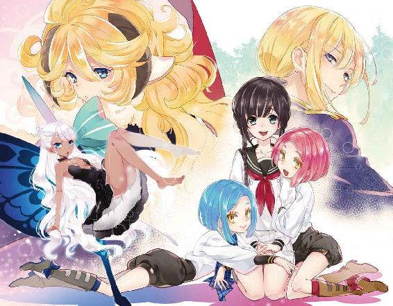
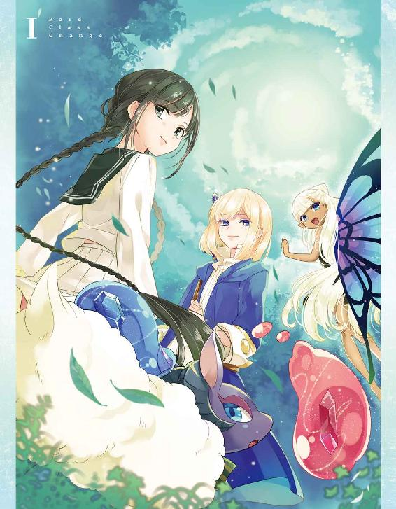
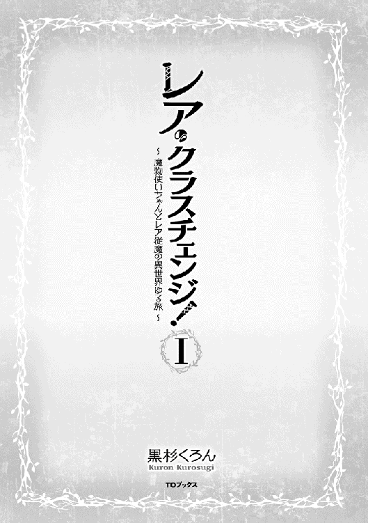
イラスト：ちま
デザイン：BEE-PEE
「ここ......どこぉ？」
爽やかな風が吹き抜ける草原。その片隅にはポツンと少女が立ちつくしていた。
大きな黒い瞳の可愛らしい顔つき。編み込んだ細めの三つ編みを垂らし、セーラー服を着たごく一般的な女子高生のようである。
なぜ、彼女がこのような壮大な自然のド真ん中にいるのか？
原因は本人にも分からない。いつも通り学校に向かっている最中に、「異世界」に迷い込んでしまったのだ。キョロキョロ辺りを見渡した少女は、鞄からスマホを取り出した。画面を見ると圏外になっていて、不安から、じわっと涙を滲ませる。慌てて、服の袖でこぼれかけた雫を拭う。
こんな大自然のド真ん中だ。気を抜いていてヘビや蜘蛛に噛まれでもしたらたまらない......と考えていた。
まあ実際は異世界なので、ヘビなどより〝魔物〟を警戒しなければならなかったのだが。泣き声を漏らさなかったのは良い判断だったと言えるだろう。
小高い丘の上には、ぐるりと街を囲んでいる壁と門が見えている。小さく、門番の姿も見えた。
......言葉は通じるだろうか？ たとえ通じなくても、身振り手振りでなんとかするしかない。
とりあえずここにずっといるわけにはいかないし......と、少女はなんとか覚悟を決める。
すんっ、とか細く鼻を鳴らすと、青々した草の生い茂る地面を踏みしめて、街へ向かって歩いて行った。
☆
少女の名前は藤堂レナ。
花も恥じらう17歳の女子高生。
幼くして両親を亡くし、８つ年上の兄と２人で切磋琢磨しながら、つつましく日本で生活していた。大人しい性格で、料理と節約が得意なごく普通の少女だ。
彼女が辿り着いた城壁前にはいかめしい洋風の顔つきの門番がいた。どう見ても日本人ではない。ビビって、つい一歩後ろに足を引いてしまう。門番は少女に気付いてピクリと片眉を上げてみせるが、それだけだ。声をかけてくれる様子や愛想などは一切ないので、レナの方からおずおずと声をかけた。
「す、すみませんっ」
「......ん。なんだ、嬢ちゃんどこから来たんだい？ えらくこ綺麗な変わった格好してるなァ。ここは小都市ダナツェラだぜ。街を観光するなら歓迎する。つっても、何もない田舎だけどなー」
門番の言葉を理解することができたレナはホッと胸を撫で下ろした。
「良かったぁ、言葉は通じた......！ あの。私、気が付いたらこの草原にいたんです。迷子、になるのかなぁ。......この辺りのことを何も知らなくて。大変申し訳ないのですが、地理などを教えて頂けませんか？」
少女の必死な様子に、門番は一瞬面倒くさそうな顔をして......取り繕い、やる気のない仕草で頬をポリポリ掻くと街をなげやりに指差した。
「あーー......。悪いけどな、そういうのは冒険者ギルドで聞いてくれ。規約なんでね。とりあえず街の中に入んな。身分証のギルドカードは持ってるか？」
冒険者ギルドにギルドカード、と聞いて、レナは目をパチパチ瞬かせる。
まるでファンタジーゲームの名称だ。よく分からないが、とりあえずそこに行けば色々と教えてもらえるらしい。頭を下げる。
「丁寧なご案内ありがとうございます。ええと......その、冒険者ギルドに行ってお話を聞いてみようと思います。あと申し訳ないのですが、ギルドカード？ は持っていなくて」
「そうかい。じゃ、それもギルドで作ってもらいな。ダナツェラの地図も持って行くといい。ホラ」
▽レナは ダナツェラマップを手に入れた！
「......何から何まで、本当にありがとうございます！」
「いいってことよー」
レナはパッと顔をほころばせると、門番に向かって再度丁寧に頭を下げた。
その反応に門番もまんざらでもない様子で手を振り、駆けて行く少女の背を見送る。
レナが建物の角をまがり、視界に入らなくなったら門番は駐屯所の中に身を隠して、短距離通信魔道具を手にとる。小声で話し始めた。
「妙にこ綺麗なお嬢ちゃんが１人、冒険者ギルドへ向かったぜー。かなり言葉遣いが綺麗だったからイイトコの出身かもなァ。様子見しながらもてなしてやんな」
「......あいよ！ すぐ売れそうないい女ー？」
通信魔道具からは、ハキハキとした中年女性の声が返ってきた。
「まだガキだよ。胸つるぺた。でも容姿は良いし、上手く利用できる道があるかもしれねぇ。逃がすなよ」
......あいよ！ と小気味いい返事を最後に、魔道具の通信は途絶えた。
☆
煤けた茶色のレンガ造りの建物がぽつぽつと並ぶダナツェラの街。
全体的に手入れ不足で荒んだ印象の街には、目つきの鋭い男たちばかりが行き交っている。
それぞれが使い込まれた自慢の剣や弓やらを担いでおり、ゴツい身体にまとう服装は〝冒険者〟という言葉がよく似合う。魔物革製品などの戦闘装備なのだ。
住民たちのどこまでもファンタジーな装いを見たレナは、かなり混乱していた。
「えっと。ギ、ギルド......」
ガチガチに緊張で固まった足でようやく冒険者ギルドとやらに辿り着くと、ガラの悪すぎる大男たちの溜まり場になっていて、中に入ることを躊躇ってしまう。値踏みするような視線をこれでもかと浴びて、また半泣きになってしまった。
場違いな華奢な少女が冒険者ギルドの前にいることが珍しいのだろう。男たちの無遠慮な視線はなかなか逸らされない......。
レナは震え上がったが、瞳を潤ませながらも、思いきって一歩足を進める。
ようやくギルド内に入ると、いやに明るい声の中年女性がカウンターからさっと出てきて出迎えをしてくれた。ふっくらした身体にはギルド員の制服をまとっている。
「いらっしゃーーいっ！ 貴方が、門番の言ってた迷子の女の子だね？ よしよし、色々と教えてあげようね。ホラ、あんたたち！ こっち睨んでんじゃないよ、さっさと仕事してきなっ！」
やたらと勝気な発言だが、元凄腕傭兵のギルド員にはむかう愚か者はこの場にいない。
「べ、べつに睨んでなんか......あんたら政府の奴らばっかずりぃ」などと弱々しい捨てゼリフを吐いて、すごすごと足取り重くギルドを去って行った。
レナはやっと肩の力を抜き、ギルド員の女性に向き直る。
「すみません、こういう場に慣れてなくて。......ありがとうございました。親切な門番さんが連絡をして下さっていたんですね」
「そうさね。かっわいいーお嬢ちゃんが迷子で困ってるってね！ もう安心していいよ。冒険者ギルドには初心者宿泊施設もあるし、職業指導も私がしてあげられるから」
「助かりますーー......！」
職業指導、ということはレナは働かなければいけないらしい。ギルド員の女性は当たり前だと言わんばかりに断言しているので、他の選択肢は考えられてもいないのだろう。レナは驚いたが、それをきちんと受け入れて、頑張ろうと心の中で呟いた。郷に入っては郷に従え......なのだ。
日本では学生だったので不安はあるが、泊まる所まで用意してくれるのはとても助かるし、本当にありがたい。心から、ギルド員の女性にお礼を言った。身一つでこの場にいる少女には、頼れる人など他に誰もいないのである。
カウンターの隅っこで、異世界全体の地理の説明を受ける。
ここは「異世界ラナシュ」（これは、渡された冊子に書いてあった）。
大きな２つの大陸があり、片方にはヒト族、片方には魔族たちが住んでいる。あとは小さな島がちらほら存在する。
魔族には細かな種別があって、魔物が強くなって人化した生粋の魔人族と、そこから派生して固有の種族となった樹人族、竜人族、獣人族、エルフ族、ドワーフ族、天使族......などが存在する。それぞれが国、集落を作っている。
ヒト族も大陸にいくつかの国を作り生活していた。ここダナツェラは、一王政のガララージュレ王国が治める領内。傭兵業が盛んで、多数の傭兵や冒険者たちが集まっているそうだ。
そこまで聞いて、レナは遠い目になった。現実逃避していただけで、頭の片隅ではうっすらと感づいてはいた......いまや小説などでよく見る展開。異世界トリップ、というやつだろうか？ 魔物に冒険者、魔族。ファンタジー用語のオンパレードだ。大変ありがとうございました......！ などと思わず考えてしまったレナの脳は、急激な負荷により、もうショート寸前だった。
思いきり、自らのほっぺをぎゅむむ！ と引っ張る奇行に走ってしまう。
（......うそでしょ、夢ならどうか覚めてぇー......！ 私は学校に行こうとして普通に通学路を歩いていただけで、例えば、車に轢かれそうになったネコを助けた訳でもないし、足元に魔法陣なんて現れなかったし。......ドラマチックなことなんて何も起きてなかったのに！......どうして......１人きりで、こんな所に来ちゃったの？）
涙が出そうに、目の奥がじんと熱くなったが、いくら嘆いていても、悲しんでも、じわりとした頬の痛さが無情にも、これが現実なのだと主張してくるばかりであった。ガックリと力なく肩を落とす。
「何やってるんだか？ じゃあ、次は職業診断さね！」
「......お願いします......」
もう、流れに身をまかせるしかないようだ......。
急におかしな動作をした少女にまるで動じないギルド員は、さすが、荒くれ者の相手をしているだけあって心も逞しい。レナはトボトボと彼女に続く。
部屋を移動して、何やら怪しい大きな水晶の置かれた魔道室へと連れて行かれた。魔道。そう、この世界には魔法が存在していたのである！ またそれに頭を抱えてしまうレナ。異世界サンには未知の領域が多すぎる！
「......よく来たね。さあー、あんたの魂の奥底まで覗き見てやろう、ヒィッひっひっヒィィ」
「ひえーーっ!?」
何やら黒ずくめの老婆が歯を剥き出しにして笑っている！
「もう、オババは新人を驚かすのが好きなんだから、程々にね」
「性分さね」
「こ、困りますよ......!?」
「ヒィィッひひッひっヒィ！ こりゃ、また反応の良いお嬢ちゃんだあぁ」
検査前にまたもドッと疲れさせられてしまった......。オババの迫力満点の怪しい演出は、いつもの余興だったらしい。付き合わされたレナの目が胡乱である。楽しいお遊びを終えた老婆は、不気味な声で呪文を唱え始め、それに合わせて水晶がピカピカと光りだす。
その水晶越しにレナを視つめたオババはカッ！ と喉を鳴らしてから、愉快そうに、運命の一言を告げた。
「......視えたぁ！ あんたの適性職業はぁ〜、『魔物使い』だよ。ふむ。ヒト族にしては珍しい、黒魔法の適性があるね。あと緑魔法も。でもなれる職業はこれのみさね！」
「モンスターテイマー......」
レナがポカンと繰り返す。適性職業というから、料理人や掃除人だとばかり思っていたのだ。
ひ弱な日本人が、まさかの魔物使いに就職だなんて。ありえない......と頭を抱えるが、しかしよく考えてみればここは異世界。そういうこともあるのだろう。認めたくないが......。
ギルド員は盛大に眉を顰めた。
「あちゃー！ また、随分と難しい職業に当たっちゃったねぇ。魔物使いはレア職ではあるんだけどね、使いこなすのがなかなか難しい職業なのさ」
「......え、えええっ!?」
「ま、頑張るしかないねー。応援はするよ？ 魔法の使い方も教えてあげるさ。......だから、さっさと草原に行って魔物を捕まえてきな！ 話はそれからさね！」
ギルド員の口調は軽いが、言葉は強制的だ。目が笑っていない、手助けはするけど、働かざる者食うべからずらしい。今まではとても優しい対応だったのに......うって変わって突き放されてしまったレナは動揺を隠しきれない。おずおず、とギルド員を見上げると、レナを見定めるように目が細められて、少しだけ恐怖心を抱いた。......のほほんと人生を歩んできた地球人の少女にとっては、厳しすぎる展開である。だが、頷くしか生きる道はない。
「が、頑張りますーー......！」
☆
──こうして、後にこの世界の魔物という魔物から「従えて！」とラブコールを贈られる、伝説の魔物使いは誕生した。
一見、何の変哲もない華奢で可愛らしいだけの少女、藤堂レナ。
だが彼女は、けして優しくはない世界を生き抜いていくために、誰よりも飴（愛情）と鞭（文字通り鞭）を華麗に使いこなしていく。逞しく異世界を旅していくうちに、ドＳと称されるほどの存在になる（本人は激しく否定している）。
その愛情深さにホレ込んだ者も、縛って！ 叩いて！ と、ディープな嗜好に目覚めた者もいたようだ。不可抗力である。
そして特筆すべきは、世にも稀な特殊体質。魔物使いレナにテイムされた魔物は皆、恐るべき速さでレア種へとクラスチェンジを果たし、種として弱かった者たちがそれぞれ種の最強への道を駆け上がっていった。
運に恵まれ、従魔の座を手に入れた魔物たちはただ１人のみに跪く。
女王レナ様の名は、しだいに世界中に知られていくことになる。
冒険者ギルド：ランクＧ 名前：藤堂 レナ
職業：魔物使い ＬＶ．１ 装備：セーラー服／革靴／鞄 適性：黒魔法／緑魔法
体力：15 知力：50 素早さ：12 魔力：50 運：測定不能 スキル：［従魔契約］
ギフト：（？）
「うーん。私は、ただ可愛い子たちと平穏に暮らしたいだけなんだけどなぁ......」
後に、女王様は苦笑しながらこう語ったという。しかし、特別な存在が目立たないわけがないのだ。押し寄せるトラブル、幸運、魔物たちもなんのその。小さな魔物使いとレア従魔たちの、後に伝説として語られる旅が始まろうとしていた。
レナはだだっ広い草原に戻ってきていた。本人がそうしたくて戻ってきた訳ではない。仕方なくである。魔物使いしか職業適性がなかった彼女は、まずモンスターをテイムしなければ生活すらままならないのだった。
働かなくてはギルドに泊めてもらうこともできない。こんなことになってしまって内心嘆いていたが、落ち込んでばかりいても状況は変わらない。心を切り替えて、しっかりしなければ！ と喝を入れ、前を向いた。レナは基本的にとてもポジティブな少女だ。
草原は平野で、遠くまでしっかり見渡すことができる。生き物がいそうな草むらや岩場が点々と存在し、少し離れた所には森も見えていた。最初から森に行くのは危険だろうし、近場の草むらから探すことにする。......とは言っても、街壁のごく近くから草むらの様子をうかがうことしかできていないが。
レナは冒険者ギルドで武器を支給されていたが、いわゆる「ふつうの鞭・攻撃力＋２」みたいなもので、戦闘に役立ってくれるかは全く分からなかったのである。
加えて、かなりの運動オンチ。ギルドカードの体力・素早さステータスは平均値以下らしいし、運の［測定不能］や、ギフト（？）にいたっては、もう意味が分からない。ギルド員もよく分かっていなかったのか、説明をはぐらかされてしまっていた。服は相変わらずのセーラー服。そんな状態で草むらに突っ込んで行く勇気などなかった。おとなしく、モンスターが出てくるのを待つことにする。
......10分。......20分。......。
時間が過ぎていくのがやたらと遅いなとレナが感じ始めた、その時。ふいに、カサリ、と不自然に草むらが揺れた。
（！............来た？）
膝丈ほどの草がカサカサと大きく揺れだし、レナから見て右手の草むらの端から、モンスターが飛び出した！
まず印象的なのは、不気味にうねる鱗に覆われた太くて長い身体。嫌なテカリ方をしている。鋭く伸びた牙に、瞳孔の細い黄金の瞳。とてもまがまがしい見た目、そう......現れたのは、まさしく蛇のモンスターだった！ かなり強そう。
（む、無理！）
明らかに、初心者が手を出していい存在ではない。レナは即決で、この蛇モンスターを見送ることにした。蠢めくたび、胴体がぬらぬらと黒光りして、あまりにも不気味でぶるりと震える。どうか気付かれませんように......！ とドキドキしながら、一生懸命息を潜める。あの牙にはおそらく毒が仕込まれているだろうし、そのような魔物を相手にして生きて帰れる自信などまるでない。
......まあ、黒蛇との距離は約15メートルほど離れていたし、レナはしっかり隠れていたので、そうそう見つかるはずもなかったが。モンスターは食料を求めて、周囲をギョロリと見渡し、にょろにょろと近くの岩場に姿を消していった。......ようやくホッ、と小さく息を吐くレナ。......一度のエンカウントで、すでに精神的にかなり疲労してしまった。
また壁の近くに身を潜めて、弱そうなモンスターが出てくるのをひたすら待つ。まずは弱いモンスターを捕まえて育てつつ、共に冒険者依頼をこなして資金を稼ごうと考えたのだ。育成系ゲームを想像してもらえばだいたい合っている。普通の職業に就くには、ある程度の身元保証が必要なのである。
「魔物使い」は、いわゆるハズレ職と言われている。就職しても、ステータス値プラスなどの追加補正はなく、取得できるスキルも基本的に従魔に関するものばかりらしい。自分が強くなって戦うには不向きなのだ。普通、職業ごとに動作補正があるものだが......この辺りの仕様は、かなり差が大きいのだとか。そのような状況下で、純粋な己の力のみで魔物をテイムしなければいけない魔物使い職は初期がとくに大変だ。これからレナだけで強敵と戦っていくという選択肢はまずありえなかった。弱い魔物をテイムしないことには始まらない。
冒険者同士のパーティを組めばいいとお考えだろうか？ か弱い少女に、戦闘力としての需要などないのである。
......何事も下積みが大切。まずはテイム、それから教育を頑張ろう。方針を見つめなおして、レナがうんうん、と頷いている。
ちなみに、鞭についても説明しておこう。レナが鞭スキルを取得することも可能だったが、そのためには、鞭で戦う必要がある。そしてレベルアップによって初めてスキルを取得するため、鞭を満足に扱うことができない運動オンチのレナには無関係な話だった。
スキルなし、戦闘経験なしで、しかも初期武器は扱いにくい鞭。異世界人少女レナの冒険者デビューは、かなりのハードモードで幕を開けた。セーラー服＋鞭とはまたマニアックすぎる絵面だが、魔物を従える際には鞭の装備が必須らしいのである。世知辛い。
☆
その後、魔物はレナの前にちょこちょこと現れてはいたが、総スルーされていった。なぜか？
「ゔわ............」
例えば、毛のトゲトゲした３つ目の羊、毒々しい真紅のカエル、頭が２つあるネズミなど。ラインナップがひどすぎたのである。
レナはしゃがみ込み、うなだれる。どの魔物も手を出すには見た目がエグすぎる！ どの子なら初心者でもテイムできるレベルなのか？ という基準も全然分からない。
強さがピンとこないため迂闊に動けず、グロいし怖いし、草むらに隠れたままで時間だけがいたずらに過ぎていった。
ここは絶対、初心者用のはじまりの平原とかじゃない！ と考えたレナは、ぐすっと鼻をすする。
今日の狩りのタイムリミットは、夕方まで。定時になれば門が閉まってしまうので、その時草原にいれば閉め出されてしまうそうだ。夜には今よりもさらに一段階強いモンスターたちが活動しているらしいし、即効死亡フラグが立つだろう。昼のうちに、何かしら結果をつかまなくてはならない。
きりり、となんとか目元を引き締めたレナ。できない、などと言っている場合じゃないのである。
カサカサッと、またも草むらが揺れた。
今度はどのようなモンスターが現れるのだろうか......？
不安と期待が入り混じった瞳で、じっと、揺れる緑を見つめている。ドキドキ。
............ポヨンッ!! と勢いよく現れたのは、いかにも我らこそが異世界代表！ とでも言いたげな、まん丸くてプルプルの身体のスライムだった。
▽野生のスライムが 現れた！ ×２
レナの目もつられたように真ん丸くなる。
弾むたびにポヨヨンと揺れる、ツヤのあるゼリーボディ。色はそれぞれ透明感のある赤と青。２体の小さなスライムたちは、レナが待ち焦がれたとても可愛らしい見た目だ。ポヨン、ポヨン！ とコミカルに追いかけっこをしている。極小サイズなので、レナの手のひらにも乗せられるだろう。
（か、可愛いーーー！）
頬を思わずバラ色に染めたレナ。グロくて強烈な見た目のモンスターばかり見ていたので、なおさらスライム達の愛らしさに感動していた。
この子達を従えたい！ と即座に考え、慌てて頭をクールダウンさせる。
......今まで見たモンスターは強そうな個体ばかりだった。一見可愛い見た目のスライム達にも、何か罠があるかもしれない......。
レナは警戒して、しばらく様子見をしてから従魔契約魔法を使うことにした。
じーーっと、目を皿のようにして、スライムたちを見つめる。
一方のスライムたちは、なにやら不思議な動きを始めた。ぽよぽよーーん！ と交互に空に向かってジャンプ。青のスライムが赤のスライムを追いかけてポヨッポヨッと跳ね、今度は交代。赤が青を追いかける。......これは追いかけっこ？ そしてくるくると回ってダンス。左右に身体をきゅっ、きゅっと傾けてから、ぷよん！ とフィニッシュポーズを決めていた。
可愛すぎる。レナは悶えた。
（......うん。いい。すごくいい。......この子達に決めよう！）
遠方から見守っているばかりでは、成果は何ひとつ得られない。レナはようやく、街壁前からスッと立ち上がる。ガサガサッ！ と思いきり葉がこすれる音が響いてしまい、思ったより派手な登場になってしまった。ドンマイ。
......スライムたちが、ぷよんっ!? と大げさに跳ね上がった。いきなり現れたセーラー少女に、心底驚いている様子。
ビシッ！ とこちらもポーズを決めて。レナは初めてのスキルを発動させる！
「貴方たちを、テイムしたいです......！ スキル［従魔契約］」
祈るようにスキル名を口にした。
レナが不意打ちを仕掛けなかった理由は、テイムのためには「正々堂々」が絶対条件だから。魔物使いがモンスターをテイムする際、あらかじめ「従魔にしたい」旨を宣言して魔物と戦い、相手が納得するくらいの力を見せつけて勝利を収めなければならない。魔物は野生のルールに従って生きているので、強い者に従うのだ。テイマー本人が「主人にふさわしい」と認められたら、ようやく従ってくれる。
カッ！ と、草原の一角に光が出現した。スライムたちの目前に、２つの輝く魔法陣が現れたのだ。魔法陣は中央が空いたドーナツ型。これをスライムがくぐり抜けたら、その瞬間から、契約をめぐる戦闘が始まることになる。
......レナは緊張して、しばし息をすることも忘れていた。
魔物は基本的に好戦的だと聞いている。勝負を挑んだこの状況で、逃げられることはまずないだろう。冷や汗をかいて、前髪が額にぴっとりと張り付いている。レナは思考する。スライムたちはどんな攻撃を仕掛けてくるだろうか？ 粘液を肌につけられるのはヤバそうだから......その前に鞭で弾かなければいけないな、なんて考えて柄をギュッと強く握りしめた。
「あ、あれっ？」
おや？
鞭を構えるレナをあっけなく放置して、スライムはまた遊び始めてしまった。えっ？ と、レナが間の抜けた顔になる。くるくると回って、踊る。踊る。踊る。可愛い！ いやそうじゃない！ いや可愛いのは確か！......どうして？ レナは軽く混乱しているようだ。
スライムは魔法陣なんてガン無視。......魔法陣をくぐってもらわなければ、たとえ戦闘に勝ったとしても従魔契約は結ばれないので、とても困る。
「あ、あの！......私と勝負をして下さいっ」
頑張って声をハリ上げるレナの必死のお願いもなんのその。スライムはレナの周りでぷよぷよと楽しそうに飛び跳ね続ける。マイムマイム。固まるレナ。......もしや、これは何か特殊効果のある踊りだったりするのだろうか!?
（うそ。契約魔法は無視されて、なおかつ先攻をとられちゃったの......!?）
恐ろしくなったレナの足がすくむ。考えるほどに深みにハマってしまい、完全にその場から動けなくなってしまった。............！ カタカタ、と奥歯が鳴る。今なら、スライムはレナを攻撃し放題な状況だ。
「............ッッ!!............？」
しかし、いつまでたっても攻撃される様子がない。ただ踊り続けている。
レナが、肺に閉じ込めていた息をそっと吐ききる。今一度心を落ち着けて、スライムたちを見つめ直した。視界で赤と青がリズミカルに揺れる。だんだんとレナの恐怖心を解きほぐしていく。
きょとん、と首を傾げてみたら、スライムたちもプヨン？ と一緒に傾いてくれた。
「......。えっと。怖くない、怖くない......」
▽レナは 自分自身に 暗示を かけた！
「人間の言葉、もしかして分かるのかなぁ？ あのっ」
レナは攻め方を変えてみることにした。優しく話しかけてみる作戦だ。もし、話し合いだけで従魔になってくれたらすごく助かるのになー......なんて、甘い甘ーい期待がこもった視線をスライムたちに向ける。危機感の薄い日本人の少女ならではのチャチな考えだが、はたして、異世界のモンスターにはどう反応されるのか。
「スライムさん......？」
（ぷよーーんっ！）
「わ！」
スライムたちは華麗にポーズをキメると、なんと、レナの呼びかけに応えるようにダンスを止めてくれた！ 一度、ぴょーーんっと高くジャンプして、ぷよぷよっ？ と身体を傾けてみせる。なぁに？ と言わんばかり。
（......いけるかもしれない！）
レナは期待に頬を染めながら、慎重に言葉を選んで魔物に話しかけた。
「あ、あのね。私は、魔物使いの藤堂レナといいます。初めまして。スライムさん。貴方たちに、えっと、考えて欲しいことがあるの。──私、従魔になってくれる子を探してるんだ。スライムさんたちは強くなることに興味はありますか？ もしよかったら、いや是非、私と一緒に鍛練して、強くなって、いろんな経験をしてみませんか。ヒト族の街に行くこともできるよ。......あのね。従魔って言ったけど、私の友達になって欲しいの」
......どうだろう。最後は情けない声音になってしまった。魔物に対する自分のセールスポイントなんて見当たらないので、ありのままの気持ちを伝えてみたが、スライムたちは興味を持ってくれただろうか。ほんのり頬を染めたレナとスライムたちはお互いにじーーっと見つめ合って、動かない。
ふと、そよそよっ、と爽やかな風が草原を吹き抜けて行く。
虹色の小さなトカゲが、両者の間をチョロチョロと通り過ぎていった。
「............あっ!?」
ぽよんぽよーーん！ スライムたちは楽しそうに跳ね、トカゲを追いかけて走り去ってしまった......。結構な速度なので、ひ弱な文系少女では追いつけそうもない。
「......そんなぁ......」
がくっ、と肩を落としたレナ。心はほぼ折れきってしまった......。せっかく可愛い子と出会えて期待が高まっていた分だけ、落ち込みも大きい。へなへなと座り込みそうになってしまう足を、なんとか引きずるように動かして、また元の街壁の陰に隠れる。一からやり直しだ。仕方ない。
すん、と鼻を鳴らして、いじらしく草むらを見つめる。
「ま、負けない......」
目を一度ぎゅっとつむって涙を流しきってから、レナは草むらを睨む。弱気になってくじけていては、異世界では生きていけないのだから。もう、平穏に慣れきった日本人ではいられないのだ。１人の冒険者として、逞しく成長していかなければいけない。
（頑張れっ、私──......！）
自らをしっかりと叱咤激励するレナは、冒険者への第一歩を確実に踏み出していた。
──それからはずっと草むらを見つめてモンスターを探していたが、従えられそうな子は、今日はもう現れてくれなかった。結局、とぼとぼと１人きりでギルドに戻っていく。ギルド員たちにはチクリチクリと嫌味を言われてしまったが、謝り倒して、なんとか宿舎に泊めてもらえる約束を取りつけた。ひとまずの居場所が見つかったことにホッと息を吐いた。
明日も頑張るぞー！ と自分に強く言い聞かせてから、レナは寝床についた。
ギルド宿舎で簡単なパンとスープの朝食を頂いたレナは、力強い足取りで、また草原へと向かう。今日は今日の風が吹く！ 昨日のモンスターテイムは散々な結果に終わってしまったが、いつまでも落ち込んではいられないのである。一刻も早く結果を出さねば、役立たずはギルド宿舎を追い出されてしまうのだから。頑張らなくては。
今回こそ、仲間を作りたいなーとぽつりと呟く。
三つ編みを爽やかな風に揺らしつつ、相変わらずセーラー服のままで、ダナツェラの街を歩いていく。やる気なさげな門番に「おはようございます」と挨拶をして門をくぐった。門番は眠かったのか、ギルドカードの確認もなしにほぼ素通りでレナを通す。
今日はモンスターを探す前に、鞭をきちんと扱ってみるつもりだ。予想していたよりもモンスターたちが強そうだったので、わずかでも戦力が欲しいところである。
「よーし！」
自分に向かって気合いの一声をかけて、レナは街壁のごく近くで練習を始めた。
☆
「えーと。......とりあえず、鞭を振ってみようか？」
鞭の柄を握りしめて、レナは苦笑を浮かべる。正しい扱い方なんて知らないので、ひたすら試すしかないのだ。鞭はかなり特殊な武器だけあって、好んで扱う冒険者は少ない。普通の新人冒険者は剣や棍棒を扱うものである。ギルドにも扱った経験のある人はいなかったので、講習を受けることはできなかった。
自分で上手い鞭の扱い方を探していくしかない。レナはぐっと強く手に力を込めて、地面に向かって鞭をしならせてみた。ピシリッ！
「！」
一応「この辺かな？」と狙いを定めていたポイントには、へなちょこ軌道ながらもヒットしている！
「......おおー！」
予想よりはかなり上出来だったので、レナの口からは嬉しそうな声が漏れた。実は才能があるのかも？ なんて、少しだけワクワクした気持ちになった。単純である。
ピシリ！ ピシリ！ と、同じポイントめがけて、何度も繰り返し鞭を打ち付けていく。
......だんだんと軌道がまっすぐに揃ってきている。イケる！
「ルナティックウィップアタック!!」
大げさな必殺技を小声で叫んで鞭を振り回してみたが、これはもちろん外れた。
レナはすぐに変化が現れて大変喜んでいるが、まあこの程度の攻撃では、下級モンスターすら倒せないくらいの低威力なのだった。無知とは残酷だ。鞭だけに？ 失礼。しかしモチベーションを下げずに練習ができているので、今の状況はある意味では幸せなのかもしれない。ひたすら練習を繰り返そう。
ピシ、ピシ、と波打つ鞭を見つめていたレナは、ふと宙を見つめて思考を始めた。このような動きを、どこかで見たことがあったような気がしたのだ。
「......あっ、あれだ」
大縄跳びだ、とひとり呟く。学校の体育祭で経験したいまわしい競技だ。全員強制参加ゆえレナも跳ばざるを得なかったのだが、盛大に足を引っ張ってしまい申し訳なかった。
今となっては大の苦手だった体育祭の思い出も、愛おしく懐かしく感じる。まるで走馬灯のように、レナの頭の中に、日本での生活の一コマ一コマが流れていく......。バレーボールを顔面で受け、短距離走で足がもつれて転ぶ。......運動面では必ず足手まといになってしまうタイプの少女だったレナ。そんな希少なほど運動オンチな少女が、今では大自然のド真ん中で命がけのサバイバルをしているなんて、人生って本当に何が起こるか分からない。
レナは遠い目をしていた。口からは乾いた笑い声が漏れてしまっている......。かわいそうに。重症である。運動神経について、考えるほどに落ち込んでしまいそうだったので、無心になってひたすら鞭を打ち付ける作業に専念することにした。
ピシッ、ピシッ、ピシッ！
......ふと、視界の端に、草原の緑以外の色が見えた気がして、そちらを振り向く。
「ん......？」
（プヨ？）
「っ!? うわーーーっ」
思わず驚き、尻もちをついてしまったレナ。なんと、昨日と同じ赤青スライムが現れたのである！
▽野生のスライムが 現れた！ ×２
ぷよんぷよんとコミカルに弾む動きが、昨日見かけた子たちとあまりにも似ている。これは、再会と考えていいだろう。レナが感動している。
「う、うそ。また会いに来てくれたの......？」
涙声でスライム達に問いかけた。私だってちょっとは頼りになるかもよ、頑張っているよ、とアピールするために鞭打ちを再開する。
スライム達は体をめいっぱい使った動きでレナに応えた。
（ぷよーーーん！）
「！」
一度大きめに弾み、ポーズ！ そして打ち続けられている鞭を見て、なにこれ楽しそう！ と言わんばかりに突撃してきた。相変わらずとても自由だ。
「あっ!?ちょっ、危ないよーー！」
スライムを傷つけてしまうかも！ と、レナが焦った声を出す。しかし、少女の心スライム知らず。そもそもへなちょこ鞭の攻撃力程度ではスライムにすら大きなダメージは与えられないので、親切に注意をしたところで、怖がられる様子はまるでない。
マイペースにポヨンと弾みながら、鞭が真上に跳ね上がった瞬間、鞭の下に滑り込んできた。ピシリッ、と地面に鞭がつくタイミングで跳ねて、鞭が上にある時はきちんと着地して遊んでいる。まさにちっちゃな大縄跳び！
可愛いスライム達がぷよーんぽよーんと飛び跳ねている様は、レナの心を撃ち抜いた。
（うわあ、うわあぁ......！）
この子たちテイムしたいよぉ......とこっそり萌えるレナ。
なんだかんだお遊びに付き合って縄跳びの手伝いをしてあげている。ノリのいい娘だ。
将来への不安からささくれかけていた少女の心は、スライムたちのおかげで順調に癒されていた。野生モンスターのはびこる殺伐としたこの草原において、レナたちのいる一角だけは、空気がほのぼのとしている。うふふ、と笑いながら鞭を振るうセーラー少女と、プヨプヨ楽しそうに弾むスライムたち。実に異様な光景だが、当人たちはもう気にしていない。似たもの同士なのかもしれない。
一通り大縄跳びを楽しんだスライム達は、ぷよよん！ ぷよーーんっ！ とブリリアントなポーズを決めてフィニッシュを迎えた。レナはもはや鞭をしまって、パチパチと拍手してしまっている。緊張感は退場した。連帯感さんこんにちは。
日本人は「可愛いは正義」なんて言ってしまう人種だし、言わばレナはこの世界において、誰よりもほだされやすい存在なのかもしれない。出会ったスライムたちは、幸運にもたまたまそういう性格の子だったのだろう。野生のモンスターたちは通常なら、好戦的で警戒心が強いはずなのだ。レナの運は［測定不能］、これが実はかなり重要だったのかもしれない。
お遊びがひと段落した所で、
「お菓子、食べる？」
▽レナは 鞄から チョコレートを取り出した！
そう、仲良くなるにはまず餌付けから。もしもまた意思疎通のできそうなモンスターに会えたらと、昨夜レナは鞄をあさりながら作戦を考えていたのだった。
シミュレーションはバッチリ。戦闘はできることなら避けたいのだ。これで仲間になってくれないかな......とやっぱり思ってしまう。友好度が上がらないかな、とも。もちろん、レナはこれから努力するつもりでいるが、現在のステータスは貧弱極まりないのである。
スライムは犬猫ではないが、餌付けを試してみる価値は十分あるだろう。普段何を食べているかは知らないが、チョコレートを気に入ってくれたらいいなーと考えて、レナは保母さんのようににこっと優しく笑いかける。
丁寧にも、しゃがみ込んでわざわざ視線を合わせていた。まさに犬猫対応。
（......ぷよん！）
スライムたちは、チョコレートに興味を示した様子。これなに？ と言うように、ぷよぷよっ？ と身体を傾けている。この仕草を狙ってやっているなら大した小悪魔だ。レナの表情が自然にとろける。
「これはチョコレート。甘いお菓子だよー。良かったら食べてみて？」
レナは板チョコの端を少しだけパキッと割ると、自分の口に放り込む。毒じゃないよ、というアピールだ。それから残りのチョコを半分こして、スライムたちにも差し出した。スライム達のゼリーボディの真ん中が丸くへこんだので、そこにチョコレートを放り込む。
............ぱく！
▽スライムは チョコレートを 食べた！
現在は、半透明のゼリーボディにチョコのシルエットがぷかぷか浮かんで見えている状態である。チョコはしばらくの間ボディの中をたゆたうと、じんわり少しずつ溶かされ、消えていった......。味わっていたのだろうか？
チョコが溶けきった、その瞬間。
ビビビビッ！ と、スライムたちが激しく振動しだした。
「......!? ま、まさか貴方たちにとって毒だったの？ 大丈夫ッ......うわあーーッ！」
（ぷよぉーーーんっ！）
レナが大慌てでスライム達に駆け寄っていくと、彼らは、レナの懐めがけて思いきり跳び込んできた！ かつてない勢いだ！
すわ、怒りの攻撃か!? と身を固くしたレナだが......どうやら、チョコが美味しかった様子。
レナを攻撃することはなく、ぷよぷよと、肩やら頭の上で楽しそうに弾んでいる。
良かったー、とホッと息をつくレナ。ドキドキ鼓動している胸を押さえた。膝の上に降りてきたスライムたちを優しく見つめる。友愛の気持ちを込めて、
「......私は、貴方たちと一緒にいたいと思っています」
もう一度、真剣に話しかけた。小さな魔物たちは目の前の少女が話し始めると、動きをピタッと止め、今度こそ真面目に話を聞いてくれている。
（ぷよっ？）
「私の従魔になってくれませんか？ スキル［従魔契約］」
レナは静かにスキルを発動させた。淡い期待が漆黒の瞳を揺らしている。
もしも今からスライムたちが戦闘を挑んできた場合には、レナとて、しっかり対応するつもりである。それが、勝負を挑んだ者の誠意というものだ。
ともすれば怪我をして死んでしまうかもしれなかったが......日本での生活を失い、ギルド員に退路をすでに断たれた状態のレナは、スライムたちにまた逃げられて後悔したくなかった。何体かモンスターを見てきたが、従えたいと思えるモンスターはこのスライムたちだけだ。
どうか仲間になって欲しい！
レナたちは視線を交わし続ける。いつの間にか、レナの瞳には凛々しい光が灯っていた。
............。スライム達はしばらくの間、じっと動きを止めていた。そしてそっくりなお互いを見つめあうように体を傾けると、ぷるんっと軽やかに弾んで、従魔契約の魔法陣を......くぐった。
「！」
ハッと、レナが息を飲む。攻撃を警戒して鞭を握りしめていたが......そんな彼女の頭の中に、初めて耳にする、ベルのような甲高い音が響き渡った。
《［従魔契約］が成立しました！》
《従魔：スライムの存在が確認されました》
《従魔：スライムのステータスが閲覧可能となりました》
〈職業：魔物使いのレベルが上がりました！ ＋１〉
〈スキル：［鼓舞］［伝令］［従順］［従魔回復］を覚えました〉
〈ギルドカードを確認して下さい〉
「......！......うわ。や、やったぁーー！」
涙ぐみながら手で小さくばんざいをするレナ。レナの従魔となったスライムたちも、くるくると喜びのダンスを披露してくれている。レナは感極まって、２体のスライムたちを大切そうに、きゅーーっと抱きしめた。まんざらでもない様子で、くりくりーーっと主人の胸元に身体をすり寄せているスライムたち。きゃっ！ と照れて膨張している。さっそく懐いているようだ。レナはとうとう泣き出してしまった。心が、とてもあたたかい。
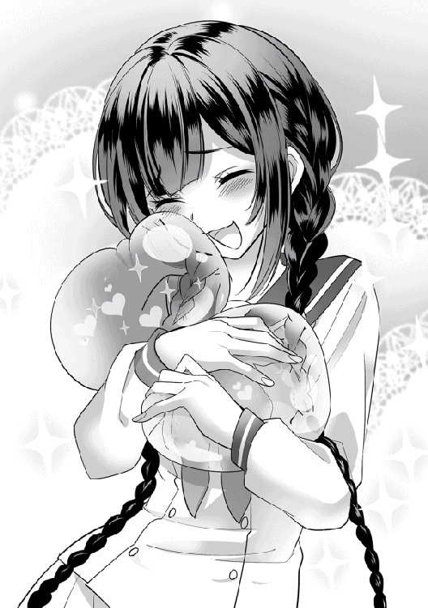
「ううっ......！ ぐすっ。......これからどうぞよろしくね、スライムちゃんたちっ」
『『はぁーーい！』』
「......えっ!?」
おや。どうやら、従魔になったモンスターと主人は意思疎通が可能らしい。
驚いたレナが目をまん丸くする。そしてすぐ嬉しそうに笑って、もう一度「よろしくね」と優しく語りかけた。嬉しい誤算だ。
「従魔になったモンスターと主人は、意思疎通ができる」。これはギルドでは教えられなかった情報だが、それも魔物使いの職がレア＋不遇で、就職する人が少なく情報不足、なおかつあのギルド員の対応が適当だったためである。
......ダナツェラギルドには薄暗い噂が多く、いい評判なんて一切聞かない。それは、そもそもガララージュレ王国の政府が腐敗しているから。この傭兵産業の盛んな国は、実は他国からは総じて危険認定されているトンデモ国家なのだった。
異世界に来たばかりの少女が、そのような事情など当然知るはずもない。それは今後、どのようにレナに影響してくるのだろうか......。
主従は幸せそうに笑いあっている。
「今日はまだ日も高いし。街に戻る前に、一緒に特訓していこっか！」
『『はーーい！』』
３名はもう少し草原に留まることにしたようだ。スライムたちの実力もまだ分からないし、ステータスの確認をしつつ戦力の底上げをしておきたいところである。ひとまず木陰でお互いの自己紹介を済ませて、マイペースに戦闘訓練を始めることにした。
「それでは、自己紹介をしてくれるかな」
『『わーい！ ぱふぱふー！』』
「どこでそういう言葉を覚えたんだろうね、貴方たちは......？ では、お名前をお願いします」
『『ありませーーん！』』
「！ そうなの？」
『うん。モンスターに名前はないんだよーー？』
『だからね、レナが自由に名付けてくれていーんだよー！』
スライムたちにそう言われて、ふむ、と顎に手をやり考える新米のご主人さま。
「んんーー。じっくり考えて、素敵な名前をつけてあげたいね。大切な仲間だもの。お名前は、もう少し待ってもらってもいい？」
『『よきにはからえーー！ いいよん』』
「ありがとう。先に貴方たちのステータスを見ようかな」
『やーん！』
『えっちー！』
「えっ!?......もー、そういうこと言ってちゃかさないの」
『『きゃはははっ♪』』
小都市ダナツェラ近郊の草原の片隅では、レナと従魔のスライムたちが楽しそうに話している。スライムたちをテイムしたのはつい先ほど。テイム成功によりレナ自身もレベルアップしていて、従魔に関するスキルを取得できたので、早々に皆でレベリングを開始したいところだ。
何はともあれ、まずはお互いのステータスの確認をしなくては。
主人の弱ステータスはどう変化しているのだろうか？
冒険者ギルド：ランクＧ 名前：藤堂 レナ
職業：魔物使い ＬＶ．２ 装備：セーラー服／革靴／鞄 適性：黒魔法／緑魔法
体力：16（＋１） 知力：51（＋１） 素早さ：12 魔力：52（＋２） 運：測定不能
スキル：［従魔契約］、［鼓舞］、［伝令］、［従順］、［従魔回復］ 従魔：スライムＡ、スライムＢ
ギフト：（？）
まずまずというところ。
ちなみに、この異世界ラナシュの一般的な大人の基礎ステータスは体力値・素早さが30、知力や魔力は20くらい。それから考えると、身体能力に限って言えばレナはひどいもので、逆に頭は良いようだ。
まあ、成人して職業に就けば基礎値にさらに職業ボーナスとレベル補正が足されるので、魔法使い等で知力50を超えている者もザラにいるし、レナが冒険者として特別な存在という訳では決してない。運とギフトの及ぼす影響についてはまだよく分からない。私たちもそんなの見たことないよ！ と、誤魔化されて......なのだろうか。ギルドで説明してもらえなかったのである。
知力の話に戻ろう。知力はまずもともとの頭の良さが基準になっていて、それがレベルで底上げされると魔法の精度や威力などが増すというステータス。
「はあ......」
しかしレナは魔法らしい魔法が使えない。宝の持ち腐れと言えよう。それは本人も理解していて、どんよりと小さくため息をついた。
まだまだ弱くて未熟感が拭えない駆け出し冒険者のレナだが、運良く従魔を得て、さらに２日目で自身のレベルアップも果たしたのは、幸先のいいスタートだったと考えられる。
本日の出来事を見つめ直して元気を出し、これからも頑張るぞ！ と、心をポジティブな方に切り替えた。もう、１人じゃないのだから。その事実がとても心強かった。レナはスライムたちを見つめると嬉しそうに微笑みかける。
「貴方たちのステータスを見せてね？」
『『えっちーー！』』
「もー......」
おふざけの多いスライムたちのステータスも見ていく。
スライムといえば、日本のゲームでは、大抵初期に出てくる定番かませ弱モンスターだが......果たして、ラナシュでの強さはどのようなものだろうか？
もしステータスがレナ同様貧弱なら、今後のレベリングは大変になる。主人より強いといいなぁ、なんて淡く期待しつつ、レナはギルドカードの「従魔」項目を指でつついてみた。パッとカードの表記が切り替わる。
名前：スライムＡ（仮）
種族：プチスライム（赤）ＬＶ．３ 適性：赤魔法 体力：17 知力：15 素早さ：20
魔力：８ 運：７ スキル：［溶解］ ギフト：【☆４】［全状態異常耐性］
名前：スライムＢ（仮）
種族：プチスライム（青）ＬＶ．３ 適性：青魔法 体力：16 知力：15 素早さ：21
魔力：８ 運：７ スキル：［溶解］ ギフト：【☆４】［全状態異常耐性］
種族名はプチスライムというらしい。
「すごい！ 私よりも素早いし、体力もあるんだね」
『『えっへん！』』
「あはは。ギフトは状態異常耐性かー。この【☆４】ってなんだろう？」
『『分かんなーい』』
「じゃあ、あとでギルドで聞いてみよう。教えてもらえるといいなー......。貴方たちのこのステータス値に、私の［鼓舞］スキルをかければ......うん！ いい感じに戦えるかもしれない」
さっそく戦い方を模索しているレナ。思考しつつ、スライムたちを指の腹でいい子いい子と撫でると、ぷよぷよの身体で精一杯押し返してきた。弾力が心地いい。そして可愛い。最高。
レナの新しいスキルについて一覧で紹介しておこう。
［鼓舞］......従魔たちのテンションを上げる。体力値、素早さが上がり、クリティカルが出やすくなるが、攻撃のミスも増える。
［伝令］......どんなに離れた場所にいても、従魔に言葉を送ることができる。
［従順］......興奮状態になった従魔の気を静めて従わせる。この時、従わせるための言葉をプラスするとさらに効果的。
［従魔回復］......従魔専門の回復魔法。どの属性の従魔でも、このスキルで回復することができる。
どれも従魔専門のスキルではあるが、なかなか使い勝手が良さそう。
「従魔回復の、どの属性の従魔でも、ってどういう意味かな？」
レナが首を傾げていると、これはスライム達が助言してくれる。
『相性によって緑魔法のヒールじゃ回復できないモンスターもいるのー！』
『おばけー！』
「なるほど。ゴースト系の魔物にも使えます、ってことだね」
子どもっぽい話し方ではあるが、スライムたちの説明は簡潔で分かりやすかった。
この草原しか知らない幼い魔物たちの方が、異世界初心者なレナよりは物知りらしい。こういった情報をくれるのはとても助かる。
「ありがとう、頼もしいよ」とレナがお礼を言ったら、嬉しそうにくるくると踊り始めた。
レナはふふっと笑って、......おそるおそるギルドカードの一部分に目を向ける。さっきは目を逸らしていた、とあるスライムのスキル。スライムたちは何やら［溶解］なる恐ろしげなスキルを持っていたのだ。レナはビビりながら、そろーり、と項目をタッチする。「身体に取り込んだ対象物を溶かす。基本的に雑食」との説明文が現れた。顔が引きつる。
「う、うわ。貴方たちと戦わずに済んで本当によかったぁ......」
声が震えている。もしあのままスライム達と戦うことになっていたら、レナはあっさり喰べられて、もうこの世にいなかったかもしれない。怖い想像が指を冷たくさせる。
『だってー、レナと遊ぶの楽しかったんだもーん』
『チョコレートもくれたし、優しかったもーん』
『『だからね。好き好きーーー！』』
スライムがぷよんっと跳ねながらレナに飛びつき、愛情表現をしてみせた。
「......私も大好きぃーーーっ！」
▽主人は 陥落した！
ちょろい。レナの感動ゲージがあっけなく振り切れる。
主従はお互いにひしっと強く抱きあって、ぐりぐり頭をこすり付けあう。スライムたちの表面粘膜の効果で、レナの髪がツヤツヤになってきた。
「......ふはぁ。ぷよぷよ気持ちいい。さあ！ おまたせ。特訓を始めましょうか」
『『はーーい！』』
３名の戦闘訓練がようやく始まった。
☆
「まず、［鼓舞］スキルでどれだけ能力値が上がるのか確認をするね。えーと、捧げた魔力の分だけ追加効果が大きくなるのかー。じゃ、10くらいにしてみよう。いくよー？」
『『きてぇーー！』』
「スキル［鼓舞］！」
ぐわっ、とスライム達の身体が大きく縦に膨らんだ。だ円状になり、ゼリーボディの表面はピンと張って、闘志に満ち満ちている様子。
「わ。気分はどう？」
『『やったるでぇーー！』』
「おー。随分と燃えてるみたいだね！」
ギルドカードの従魔項目を再度確認してみと、「興奮状態」「攻撃力・素早さ＋５」との表記が追記され、文字がチカチカ光っていた。時間制限があることを表しているらしい。レナは鞄から出したメモ用紙に、スキル［鼓舞］効果＝魔力に対して、攻撃力・素早さが＋１／２ｕｐする。興奮状態。と書き込んだ。まだ力のない自分たちにはこうした地道な努力こそが大切だ、と冷静に考えている。
なぜか充電が全く減らないスマホで興奮効果継続時間を測ると、その場から動かない場合は、15分間「興奮状態」が保たれていた。
これが多いのか少ないのか。また、実際に戦った時の燃費はどうなるのか。それはこれから検証しよう。レナはメモとペンを手に、スライムたちに話しかける。
「うん。これだけ数値が上がるようだったら、草原で魔物との戦闘もできそう......かな？ 貴方たちは、この辺りのモンスターを倒したことはある？」
『あるよー！ 毒殺ヘビとか、いつも喰べるよー』
『３日前に生まれたばっかりだから、まだ十数匹しか倒してないけどー』
「ど、毒殺!? す、すごいね。ギフトが［全状態異常耐性］だし、毒はもしかして効かないの？」
『『えっへん！』』
効かないらしい。鋭い毒牙と締め付けで攻撃してくるヘビモンスターを倒したことがあるそうだ。身体が柔らかくて噛みつき攻撃の効かないスライムならではの戦歴と言えよう。ヘビの全身にうすーく張り付いて、じわじわ溶かしながら喰べていくというえげつなグロい戦法らしい。
「......。じゃあ、ヘビのモンスターを探して倒そうか」
にこっと微笑む、レナの目が死んでいる。もしもスライム達と戦うことになっていたら...なんて、実益のない話はもう忘れてしまおう。戦わずして、頼もしくて可愛い仲間ができたのだからそれでいいじゃない。
『『わーーい！』』
スライム達はヤる気十分。ご飯ー！ なんて言ってはしゃいでいて、頼もしい限り。
［鼓舞］スキルは、ヘビモンスターを見つけてから使用することにした。もし戦闘中に効果が切れたら怖いし、ヘビを見つけるまでは、レナの魔力節約になる。慎重になるに越したことはない。レナたちはけして強者ではないのだから。
モンスターを探して、小さな３名は草原をこそこそと移動する。先に獲物を見つけて、物陰から不意打ちで先制攻撃を仕掛けたい。
「......あっ」
ガサガサ、と近くの草むらが不自然に揺れる。レナたちが顔を見合わせる。
......丸々太った胴をくねらせながら、毒殺ヘビ（多分）が姿を現した！
▽毒殺ヘビ（仮）が現れた！ ×１
相変わらずすごく恐怖心を煽る、グロテスクで凶悪な見た目。レナが昨日見た漆黒のヘビと同じ種類のようだ。レナは「本当にこれ？ 大丈夫？」とビビっているが、スライム達には頼もしく頷かれる。それならば、レナに否やはない。ファーストバトルは、この蛇との戦闘になるようだ。
ふーーっ、と細く息を吐きながら、レナは獲物を半眼で見つめる。スライム達前衛よりも、主人の方がよっぽど緊張している。
「......ん。頑張ろうね」
『『やったるでぇーー！』』
「くすっ」
また、励まされてしまったのかもしれない。スライムたちのコミカルな動きと喋り方は、気弱な主人の心をいつだって励ましてくれる。
「いくよ。スキル［鼓舞］！」
（ぷよーーん！）
レナたちは戦闘準備に入った。レナは魔力20で、スライム達に［鼓舞］スキルをかける。ここで魔力を惜しんで、スライムたちを傷つけたくない。......絶対勝ちたい！ 全力でいこう。もしもの時のために、回復スキルを使うこともレナは頭に入れておく。
このヘビを従魔にしたい訳ではないので、当初の予定通り、不意をつく方法で倒すつもりだ。卑怯？ 弱者は知恵を絞ってなんぼなのである。
スライム達がどれだけ戦えるのか、レナは知らない。しかし本人たちができると言うなら、主人兼友人であるレナは信じるまで。キリッと顔を引き締めて、小声で指示を出す。
「貴方たちはヘビに見つからないように、地面に伏せる形で傍まで移動して。そして近づいたら、一気に表面にまとわり付くの。いつもしてるみたいに気道を塞いで、窒息させながら溶かして喰べていって欲しい」
実にえぐい作戦である。
『あいあいさー！』
『おまかせあれー！』
「お願いね......！」
だが、これがいつものスライム達のやり方なのだ。一番慣れていて、確実に倒せる方法があるならば、そのように戦うべきだとレナは判断した。無理してキレイな戦法を選ぶ余裕なんてない。
地面に伏せて移動、という所が主人オリジナルの指示。こうすれば、攻撃前に発見されにくくなるだろうと考えた。スライムは透明感のある体なので、薄ーく広がれば赤と青の派手な体色も目立たなくなるはずだ。
「スキルの継続時間は限られているし。行ってきてくれるかな......？」
従魔に頼む形になっている所がいかにもレナらしい。戦闘開始の合図だ。
スライム達は、返事をする時間も惜しむようにぷるっと小さく震えると、ぐよーんと地面に薄く広がる。そしてそのまま、地を滑るように移動してヘビの元へ向かっていった！
芝の緑色が透けて、見事な擬態ができているのはまさにレナの計算通り。
（気をつけて......！ 行ってらっしゃい）
草原全体の様子を気にかけつつも、ヘビモンスターとスライムの方を睨むように見つめて、目を逸らさないレナ。祈りながら、従魔の戦闘を見守............。
......ーーーーーーーーッッ!!
「スキル［伝令］。......危ない！ 左から別のヘビ２体が貴方たちを狙ってる、よけてー！」
『『!?』』
すさささッ！ とゼリーボディの広がりを戻すことによって、スライムは別のヘビの横槍な攻撃をかわした。わずかでも助力しようと、レナが立ち上がり駆け出す。
「ここだよーーッ！」
走りながら大きく声を上げて、自分へと注意を引きつける。ヘビ３体がジロリと凶悪に少女を睨めつける。かかった！
その一瞬の隙をついたスライムが、身体をまたうすーーく伸ばしてバッとヘビに覆いかぶさる。お互いに協力して、３体を同時に包み込んでいた。逃れようと、ヘビがバタバタ暴れている。
『『スキル［溶解］ー！』』
しかし、表皮をどんどんとエグく溶かされていく。
............。
結論を言えば、戦いはスライムたちの［溶解］によりあっけなく終わった。
──勝った。
ぺたん、と放心状態のレナが地面に座り込む。
初めて仕掛けた戦闘で、なおかつ予想外の乱入もあり心底気疲れしていた。はーーっ、と細く長く、ため息を吐いた。
はしょった戦闘シーンを振り返っておこう。スライムにまとわり付かれたヘビは、どこまでも一方的に喰いつくされていった。ご自慢の毒牙を刺しても効かないし、むしろスライムを通過して自分自身に刺さるだけ。締め付けようにもゼリーボディは柔軟すぎる。
相性が悪すぎたのだ。
レナの［鼓舞］スキル効果で、スライムたちの攻撃力（溶解力？）が上がっていたことも大きい。
『『いつもより大きく広がっておりまーーす！』』なんて声が聞こえてきていた。従魔の「興奮状態」は、ヘビが息絶えるまで十分にもってくれていた。
赤い肉と骨を晒しながらの捕食シーンはかなりグロかった。地球では確実に年齢制限モノである。それを間近で見てしまったレナは実は吐き気を催していたが、「従魔が頑張っている時に主人がへばっててどうするの！」と気合いを入れて、ギリギリ耐えきった。
青白い顔の主人は、捕食を続ける（血濡れ）スライムたちを気遣い、「ナイス！」と親指をグッ！ してみせる。
スライムたちは嬉しそうにぽよーーん！ とジャンプして返事をしてくれた。
あっ。ヘビの血が飛び散っている......。
視界にモザイクをかけたい、と真っ白になった頭で考えるレナであった。
......口元を手で覆いながらレナが無言でおとなしく待っていると、スライムたちはようやく捕食を終えた。ヘビは跡形もなくなっており、キレイに舐め尽くされた細かい軟骨だけがぽつりと転がっている。
どこに肉が消えたのか？ スライムは１・５倍くらいに丸く膨れ上がっている。満腹で満足そう。そういうことだ。労わりの言葉をかけてあげよう。
「お疲れさま」
『これね、レナにあげるー！』
『おすそ分けなのー！』
「あ、ありがとう......!?」
▽レナは ヘビの軟骨を 手に入れた！ ×３
正直いらない。しかしこれも受け入れなければ。愛情、友情と自分に言い聞かせながら主人は気力だけでなんとかお礼を言い、ひくっと笑ってみせる。軟骨を鞄に......しまった。
粘液がねちょっ......ああっ......！......意識を逸らそう。
「すすすっごく強かったねぇー」
レナは震え声。
『『えへん!!』』
スライムたちがぽよん！ とまあるい胸を張った。この瞬間、レナの頭の中に、またしてもベルの甲高い音が響いた。
《従魔：プチスライムのレベルが上がりました！ ＋２》
《ギルドカードを確認して下さい》
《☆クラスチェンジの条件を満たしました！》
「！」
クラスチェンジのお知らせ？
今回はスライムたちのみのレベルアップ。レナは助力以外はほとんど何もしていなかったので仕方ないだろう。
プチスライム達はどのように進化するのだろうか？ 従魔が強くなるのはとても嬉しいな、とレナは明るく笑う。どうか可愛く進化して欲しいなー、なんて思いながら、ウキウキとギルドカードを取り出した。
《クラスチェンジ先：ミニ・ジュエルスライム》
《進化させるには、種族名項目をタップして下さい》
なんだかすごそう。
ジュエルというキラキラした響きに、思わず美スライム進化への期待が高まる。ジュエルスライムが何たるかは知らなかったので、レナはとりあえず誘導されるがままに項目をタッチしてみた。丁寧な説明文がカードに浮かび上がる。
【ミニ・ジュエルスライム】......宝石のように輝くカラダを持った希少種のスライム。まだまだ未熟でサイズは小さい。１日に一度、体色の宝石を生みだすという特徴を持つ。特殊スキル［超硬化］を進化時に取得する。
「うわ。希少種とか、すごそう......」
レナが唖然と呟くと同時に、プチスライムたちは身体をくねくねとよじり始めた。
『......あついぃーー！』
『なぁにー？ 内側がジリジリ、ジワジワするのー！』
「......わわわっ!? ご、ごめん！ 私が迂闊に項目に触れちゃったせいだね!?」
『『ううーーー！』』
身体が熱くて嫌がっている様子のスライム。苦しんでいるようにも見える......。レナが慌てて学生鞄から下敷きを取り出し、あおぐ。かいがいしいお世話姿である。どちらが主人なのか分からなくなる。
縦にぐよーん、横にうにょーんと落ち着きなく伸びていたスライムたちは、いきなりポン！ とまん丸く風船のように膨らんだ。その身体の中心、核の部分がキラキラと輝いている。
しゅううぅ、と順調に小さくしぼんでいって......。
《種族：プチスライム→ミニ・ジュエルスライムに進化しました！》
《ギルドカードを確認して下さい》
《スキル［超硬化］を取得しました》
▽クラスチェンジが 完了した！
その見た目は一言で言うなら、
「......ゴーージャスゥーーー！」
こんな感じ。まずツヤが段違いで、ボディ全体がラメのようにキラキラ輝いて見える。サイズはみかん大からグレープフルーツ大に変化していた。ボディの中心には硬そうな核が存在している。表面以上にキラッキラな、まさに宝石仕様！ トンデモ美スライムである。
うっとりと従魔を見つめるレナ。
スライムたちは、自分たちの身体の変化に戸惑っているのか、飛んだり跳ねたりしまくって動作確認している。くるりと回るたびに、お日様に照らされた身体がキラキラと輝く。さっすがジュエル！
何度もジャンプしていたが......どこかで、自らが納得できるポイントがあったのだろう。
ぷよん！ とカッコ良くポーズを決めてフィニッシュを迎えた。やんちゃな中身は変わっていないらしい。
「わー......すっごく綺麗だよー！」
『『もっと褒めてもいいのよーー？』』
「エクセレント！ 今のステータスを見せてね」
『『やーーん！』』
いつものおふざけに空気がほのぼのと和む。
クラスチェンジ後のスライムたちのステータスは、このように変化していた。
名前：スライムＡ（仮）
種族：ミニ・ジュエルスライム（赤）ＬＶ．５ 適性：赤魔法 体力：27（＋10）
知力：20（＋５） 素早さ：30（＋10） 魔力：18（＋10） 運：14（＋７）
スキル：［溶解］、［超硬化］ ギフト：【☆４】［全状態異常耐性］
名前：スライムＢ（仮）
種族：ミニ・ジュエルスライム（青）ＬＶ．５ 適性：青魔法 体力：26（＋10）
知力：20（＋５） 素早さ：31（＋10） 魔力：18（＋10） 運：14（＋７）
スキル：［溶解］、［超硬化］ ギフト：【☆４】［全状態異常耐性］
「う、うわ、ずるい」
かなり強化されている。
レナは知らないが、これほど急激なステータス値の上昇は、実はラナシュ世界全体でもほとんど見られない。
魔物のクラスチェンジ時にはボーナスポイントが存在する。そして魔物が「希少種」にクラスチェンジした場合には、さらにボーナス数値が増えるのだ。
スライムたちは一気に、ヒト族の大人並みの強さに成長していた。
『すごいー？』
『強いー？』
「えっ？ ええ......あの、すごくすごいです......！」
動揺して、レナの日本語がおかしなことになっている。
従魔たちは、戦闘時には主人のスキルによってさらにステータスが上がることをお忘れなく。
ね、ずるいでしょう？ 固まるレナに、スライムたちが甘えたように声をかける。
『『ねー、レナー。お名前ちょーだい？』』
「！......今欲しいの？」
『『うん！』』
知力が上がり、より自我が出てきたのだろうか。
先ほどは名前を催促されなかったが、今は輝く瞳（イメージ）で主人を上目遣いに見つめているスライムたち。レナのハートが撃ち抜かれたのは何度目だろうか。
確かに、そろそろ名前を贈った方がいい。現状ではそれぞれを呼びにくい。レナは訓練途中に何通りかの名前を考えていた。
「あなたたちは、男の子？ 女の子？」
『『両方！ どっちにでもなれるのー！』』
「!? そ、そっか。じゃあね。赤スライムさんが〝紅葉〟、青スライムさんが〝泉〟はどうかな？」
『クレハ？』
『イズミ？』
『『うわーーい！ 嬉しいよーーっ！』』
「気に入ってくれた？ 身体の色からイメージしたんだよ」
スライムたちはふるふるとボディを揺らすと、レナの膝の上でポヨーーン！ と跳ねる。
▽従魔：クレハとイズミが 仲間になった！
そろそろ辺りも暗くなってきた。レナの残りの魔力も心もとない。早めにダナツェラの街へ戻ろう。............。
小都市ダナツェラの冒険者ギルド内には、粗野で下品な笑い声が響いていた。声は中年女性のギルド員と政府派遣の門番、いかめしい冒険者たちのもの。ぎゃはぎゃはッ、とうるさく騒いでいる。ここに昨日訪れたばかりの、やたらか弱そうな少女の話題で盛り上がっていた。
「でもよぉー。あんな小娘にゃあモンスターテイムなんて無理だろ......？ 身体に傷付けられちまう前に、さっさと捕まえといた方が良かったんじゃねぇのー？」
門番の男が少々不機嫌に、ギルド員へと問いかける。
「んー、なんでか測定不能だった［運］にちょっと期待してんだけどねぇ......ギフトも持ってたし。もしかしたら隠してるだけで、戦闘力があるかもって思ったんだけど。確かに、ありゃ駄目そうだね？ 運動センスの欠片もなかったし。むしろよく今まで街の外で生き延びてたもんだよ！ あーあ、出会う前にさっさと魔物に喰われてれば、私も案内の手間をかけずに済んだのにね。労力に対して賃金を払ってもらいたいくらいだ！ ほーんと、使えない子だねーー！」
「ぎゃはははッ！ 相変わらずきっついねぇー。即戦力なんて無理言いなさんなって姐さん。だってあの小娘、ここに来てまず何て言ってた？ すみませぇん失礼しまーす、だぜぇ！ そんなお上品な登場するつよーい冒険者なんて、まずいねーよぉ！ 隠された実力？ ぷっ、ぎゃははは！」
「あーー面白かった。んじゃ、駄目になる前にさっさと売って金にしちまおーぜー」
「それにしても、ほんとどっから来たんだろーな？ 実は捨てられた貴族の娘だったりして」
「「「笑えねぇー！ 売れねぇー！ ぎゃはははははっ」」」
「あのオドオドした低姿勢は貴族じゃありえないさね。ちっ、ホラもう笑ってんじゃないよっ！」
ギルド員がパンパン！ と手を叩いて冒険者たちの笑い声をいったん止める。
「......娘が帰ってきたみたいだ。いつも通りに振る舞っておくれ。逃げる気をなくすよう、ちょっと威圧もしておくこと。......ふん、様子見は今日までかねぇ？ 確かに、あの柔らかい体を傷つけられちゃ勿体ないし、今日も成果がなかったようなら、いつもみたく捕まえて売るよ」
「「「へーい」」」
......一通りの話は済んだようだ。
もっとも、自分たちの都合しか考えていない、ひたすら非人道的で不愉快な会話だったが。
ギルドの扉を控えめに開けて、話題の少女レナが帰ってきた。
整備も碌にされていない玄関扉が、キィとわずかな音を響かせる。昨日はやたら暗ーい表情で落ち込んで帰って来たレナだが、今はパッと明るい顔。騒いでいた面々は思わず面食らう。
もしや、何かしらの成果があったのだろうか？
ギルド員の女性がまず様子見で、レナに声をかけた。
「おかえりー！ なんだい、嬉しそうな顔をしてるね？ モンスターテイムはできたのかい」
「はいっ！ 昨日はダメダメだったんですけど、今日はなんと、２人も仲間ができましたー」
レナがウキウキと笑顔で告げると、ギルド内からは「おぉ」と感心したような声が上がった。
「！ そうかい。......それで、どんな魔物をテイムしたんだい？」
「スライムちゃんです！」
「「「あぁ......」」」
歓声が落胆の声に変わる。人間の心象とはかくも変わりやすい。ギルド員の女性からレナには、生ぬるーい視線が注がれていた。
当のレナは「あれ？」とでも言いたげな様子で、こてんと首を傾げる。
「すっごくキレイな子達なんですよー？ ほらっ」
『『じゃじゃーーーん！』』
ぽよーーん！ と勢いよく、鞄からグレープフルーツ大のスライム達が飛び出した。
室内の照明を浴びて、身体をキラキラと光らせている。ジュエルの名に恥じない素晴らしい美しさだ。
ギルド員と冒険者たちはぎょっと目を剥いて固まる。
このようなスライムなど、見たことも話に聞いたこともなかった。ギルド員がバッと、レナの首から下げていたギルドカードを引ったくるように取って眺める。ぐぇ、とレナが呻いて、ごめんごめんと慌ててカードを手放した。
そして思いきりきつく、ぎゅーーっとレナを抱きしめる。
「〜〜〜ッお手柄だよぉ、レナ！ まさかアンタが希少種のスライムをテイムしてくるなんて思わなかった。ミニ・ジュエルスライムだって？ １日に１回宝石を吐くなんて、素晴らしい魔物じゃないかっ」
「く、苦しいですー......！」
レナはぷはっ！ とギルド員の腕の中から顔を出した。
「ええ、私もこんなにキレイなスライムになるなんて思ってなかったから、ビックリしてます」
「！ クラスチェンジしたのかい......？」
「はい。最初はプチスライムだったんですけど、２つレベルを上げたら進化しました」
「それだけでクラスチェンジするスライムを捕まえたなんて......ほんと、よっぽど運が良かったんだねぇ」
感心したように呟くギルド員は、レナの［運：測定不能］ステータスを思い出して、こっそりほくそ笑む。この希少種スライムの特性は素晴らしい。政府に献上すれば、とんでもない褒美が約束されることだろう。
優しく優しく、少女の油断を誘うように声をかける。昨日のトゲトゲした物言いを思わず忘れるほどに、甘い声音だった。
「ほんと、よく頑張ったねぇ！ 私はね。アンタが魔物使いとして、魔物をテイムして来れるよう、あえて厳しい言い方をして突き放したのさ。想像してごらんよ。そうして追い込まれなかったら、きっと優しいレナはスライムたちを傷つけられず、テイムできなかったはずだよ。私も辛かった......でも、レナならきっと、努力して成功をつかむって信じてた！ こんなに早く結果を出すとは思いもしなかったけどね。ふふ、お疲れさま。とても勇敢で立派な冒険者さん」
「ギ、ギルド員さぁぁん......！」
レナが感激して涙を流す。相変わらずちょろい。頼れる人が限られているレナの現状は、現金なギルド員に対する警戒心を相当引き下げてしまっているようだ。まだ彼女に名乗られてすらいないことなど、頭からすっぽり抜けている。ギルド員はにっこりと笑う。
「泣きやすい子だねー？ もう。今日の夜はテイム成功のお祝いに、ごちそうを作ってあげようね。お腹、減ってるだろう？」
「はい......」
『『わーい！ ご飯ー！』』
「はは、恥ずかしがらなくていいんだよ！ もう夕方だから当然さね。頑張ったんだし。じゃ、料理ができたら部屋に持っていくから、それまで宿舎で休んでおいで」
レナのお腹はペコペコだった。朝にパンとスープの軽い食事をしただけで昼食をとらず、あの草原を歩き回っていたのだから当然だ。
にっこりと微笑むギルド員と手を振る冒険者たちに見送られながら、レナはギルドの隣にあるボロ宿舎へと向かった。美味しいごちそうを期待してしまい、ついつい頬がゆるむ。足取りは軽やか。
「あっ。か、鞄置き忘れた......」
そしてまたギルドへ戻っていった。おっちょこちょいな所は成長していないらしい。
☆
部屋に戻った主人とスライム達は、戦闘で疲れた体をベッドで伸ばして休んでいる。スライムには丁寧にも［従魔回復魔法］がかけられていた。早くも主人は従魔を甘やかしまくっている。見た目も性格もラブリーなので、ついついペット対応で可愛がってしまうのだ。
「ご飯、楽しみだねぇー」
『『ねーー！』』
うつ伏せに寝転がる主人をマッサージするように、スライムたちは背中でぷよっ！ ぷよっ！ と跳ねる。
「はふぅ〜」
サイズが少し大きくなった彼らの重みはとても心地よく、レナは幸せそうな吐息を漏らした。
コンコン、と部屋に軽めのノック音が響く。
「はいっ」
慌ててベッドから降りたレナが扉を開けると、現れたのはギルド員の女性。
「ちょっとは身体を休められたかい。ご飯、持ってきたよー」
手には美味しそうな料理がこれでもかと載ったお盆。レナの目がうっとりと輝く。
「うわあ！ ありがとうございます。す、すっごく豪華だー......！」
「ふっふっふ。従魔たちの分も必要だろう？ スライムはよく食べるからねー。レナもたくさん食べて、今日はもう早く寝なさい」
「はいっ。また明日も頑張ります！」
ギルド員はレナを気遣ってか、多くは語らずに、食事をテーブルに置くとすぐさま部屋を後にした。
レナたちの目の前には、湯気の立つたくさんの美味しそうな料理。コンソメスープに、シーザーサラダ、パンが３つにお肉料理まである！ 嬉しそうにそれらをまじまじと眺めて、レナはうふふと頬を染めた。
本当に親切な人だな〜、ありがたや、なんて全力でギルド員に感謝しながら、手を合わせる。
食事前に手を合わせる日本の習慣は、異世界でも大切に続けていきたかった。スライムたちにも手を合わせる作法の意味を教え込んでいるご主人さまは、幼子の教育に余念がない。
「頂きます」
『クーもいただきまーす！』
『イズもいただきまーす！』
「ふふっ。......あっ!?」
レナを真似してきちんと頂きますを言ったスライムたち。ここまでは良かったが......料理を待ちきれなかったらしく、主人よりも先に手をつけ始めてしまった。
テーブルの上を、あっちへぴょーん！ こっちへぴょーん！ と落ち着きなく跳ね回る。電球の光をキラキラボディが反射していてとても目に眩しい。
１つのお皿のものをちょこちょこっとつまみ食いしては次のお皿へ移動する、お行儀が悪い食べ方をしていた。スライムにも好き嫌いがあるのだろうか？
「ま、待って待って!? 私の分も残しておいてーー！」
『残してあるよー？』
『レナが食べられるのは、これだけだよー？』
スライムたちが食べ残したのは、ドレッシングのかかっていない部分のレタス、丸パン、お肉料理の付け合わせのじゃがいもと人参。これらのみ。
「そんなー......」
がっくりと肩を落とすレナ。レナだって、夕飯をかなり楽しみにしていたのである。それなのに、ひどい！
従魔たちを最初から甘やかしすぎたのかもしれない......。だが叱ろうにも、豪華な料理はすでにほぼ食べ尽くされてしまっている。仕方がないので、レナは残りのパン中心のご飯をもそもそ食べ始めた。......しかし、食べ物の恨みは恐ろしいのだ。レナは、スライムたちに初めて真ッ剣に注意した。
「今度は、私にもお肉とか分けて下さい！」
それで良いのかご主人さま。
『いいよー！』
『今度ねー！』
スライムたちは楽しそうにぷよぷよと弾みながら、けふぅ、と満足気に息を吐く。ズルい......さすがに、レナの目がじっとりと半眼になる。
ご飯を３名でペロリと食べ尽くした、その時。
「ごちそうさまでした」
『ぎゃはははははッ!!』
「ひっ......!?」
鞄の中から、野太い男たちの笑い声が聞こえてきた！
鞄を覗くと、音源はスマホから。いつの間にか録音されていたもののようである。時間をチェックすると、レナが鞄をギルドに起き忘れていた時の音声らしい。なぜ、録音アプリが勝手に起動したのだろうか？ と、不思議そうに首を傾げるレナ。
......そして会話の内容に耳を傾け、ザッと顔を青ざめさせる。
ご飯を食べて温まりかけていた体が、急激に冷えていく。かわいそうに、震えている......それも仕方ないだろう。聞こえてきた会話は、いたいけな少女を怖がらせるのに十分すぎるものだったのだから。............。
鞄の中のスマホで録音されていたからだろう、音は少しくぐもっている。
ザザザッ。
『......あの小娘、結局捕まえるのかい？』
『当たり前さね。逃がしゃしないよー！ 娘は売る。スライム達は、政府に献上して褒美をもらうのさ！』
『それでまた豪華な飯作ってたのか。いつもの改悪眠り薬入りなんだろー？ あんたら役人もワルだねぇー』
『傭兵崩れの悪党に言われたくないさね。ま、あの子は今夜はぐっすり熟睡して、数日は寝たきりだろうよ。あははっ！』
『おまぬけー』
『ぎゃはははッ！』
「な、何これ......!?」
レナは、スマホを握りしめる手を震わせていた。
ガクガクと膝が笑い出して立っていられず、ガクンと床に座り込む。
......騙されていた？ 皆が親切にしてくれたのは、レナに利用価値があったから、なのだろうか。......売る人間として。ぶわっと嫌な寒気が背中を凍らせた。怖い。考えたくない......！
（......売るって。捕まえるってなに......？ このままここにいたら、私、どうなっちゃうの!?）
人身売買。日本ではとうてい考えられない会話だった。
狙われたのは自分だけではない。その事実にハッと気付いて、今日仲間になったばかりのクレハとイズミを見つめるレナ。ぷよ？ 大丈夫？ と思いやりに溢れた反応を返された。
「......もしかして。さっきの料理に毒が入ってるって気付いてたの？」
スライム達は、『レナが食べられるのはこれだけ』と言っていた。
『そうだよー？』
『レナが食べたら駄目かなーって思って、頂いちゃったのー』
「............っ！」
どうやら、またしても従魔に助けられたらしい。
「あ、ありがとう......！」
レナは戦闘力にしても、このような危機管理にしても、まだまだ誰かに頼らなければこの世界では生きていけなかった。異世界ラナシュ、特に、このガララージュレ王国内の殺伐とした環境は平和ボケした日本人には厳しすぎる。
なんて簡単に騙されてしまったんだろう。その辺をさ迷っていた不審な少女に対して、無条件に優しいことを一切疑問に思わなかった。本当におマヌケだ。唇を震わせるレナは、もう自分自身が信用できなかった。
今回、親切を与えられるがままギルド員に頼りきった結果、このような誘拐未遂が発生しているのだ。睡眠薬を口にしていたら、未来など絶望的だった。自分が無力で弱いから......。......レナは主人として従魔たちに申し訳なく、ひどく恥じ入って、また、１人の人間としても情けない......と落ち込んでしまう。泣いている場合じゃないのに！ と思うも、涙はいともたやすく溢れてしまい、ポタポタと床にこぼれ落ちた。
『『レナー。大丈夫？』』
「！」
ぷよんぷよんとなぐさめのダンスを踊り、キラキラの輝きで、精一杯レナを励ましてくれるスライムたちを眺めて、助けられてばかりだと思った......。頭を振る。
......この子達を捕まえさせてなるものか、と心に決めたレナの潤んだ瞳に鮮烈な輝きが宿った。
（......このまま何もせずに、悪い方向に流されてしまうだけなんて絶対にだめだ！ この子たちの未来を、ここで閉ざしちゃいけない。逃げなきゃ。私が守るんだ。皆で一緒に強くなろうって、そう言って、私はクレハとイズミに従魔になってもらったんだから......！）
荒っぽく、ぐしぐしっと目元をこすったレナは、パン！ と思いきり自分の頬を張る。気合いを入れなければ崩れ落ちてしまいそうだ。
唐突な行動に驚いたスライムたちがびくっ！ とつられて飛び上がる。赤くなった頬を軽く撫でて苦笑しながら、レナは小さな従魔を手のひらに乗せた。
しっかり顔を見合わせる。スライムの表情は判別できないけれど、こちらを心配してくれる温かい気持ちがきちんと伝わってきていた。......守りたい。
「一緒に逃げてくれるかな？」
『『うん！』』
レナの迷いのない力強い声に、従魔たちは即答した。
『レナと一緒にいくよー！』
『レナと、もっと一緒にいたいよー！』
「〜〜ぅぅ、ありがとうね......！ あのね。私たち、ここにいたら捕まって売られちゃうの。だからダナツェラの街を出て、どこか......この国の外に行きたいと思ってる。どうかなぁ？」
『『冒険だねー！ きゃあー！』』
「......ふふふっ」
泣き顔から一転、レナは精一杯やわらかく微笑んだ。
負けたくない、頑張ろう！ と小声で喝を入れ、スライムたちと握手する。スライムは身体の一部分を触手状に変化させて、しっかりとレナの手を握り返してくれた。
主従のこれからの予定は定まった。ここから逃げる！ そうと決めたら、早く行動を起こした方がいい。大急ぎで荷物をまとめる。
ギルドから支給された鞭やシャツなどは、泥棒みたいで悪いなと思いながらも、鞄に詰め込んで持っていくことにした。魔物使いは鞭がないと仕事にならないのだ。罪悪感はあるが、窃盗罪は誘拐未遂案件と相殺でお願いします！ と心の中で言い訳をして、レナたちは窓からこっそりと部屋を抜け出した。
与えられていたのは寮の裏に面した部屋。窓のすぐ外は荒れ果てた畑跡だったので、人影なんてない。草や木がぼうぼうに茂っていて、レナたちが隠れて移動するにはうってつけである。
夜が近い。辺りはすでに薄暗くなっており、黒髪のレナは発見されにくいはずだ。息を潜めて中腰になり、街壁に沿って門の方へと歩いていく。スライムたちは胸元に仕舞われた。
──門の所までは問題なく進むことができた。門番は相変わらずやる気がないようで、詰め所内でもう仕事が終わったつもりで酒盛りを始めている。酔っ払い特有のガヤガヤとやかましい声が暗闇に響いている。
その横をすり抜けて......レナたちは、とうとう夜の草原へと足を踏み出した。
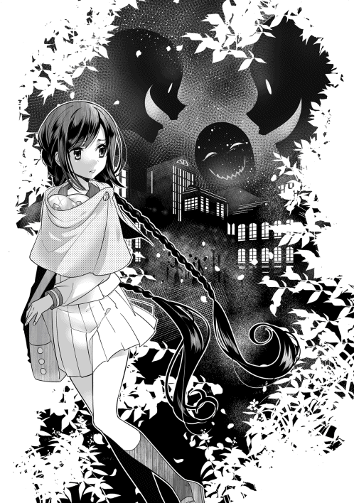
小都市ダナツェラを囲うように広がる草原は、夜になり不気味に静まり返っていた。昼とは異なり、こっそり静かに活動するモンスターが多いらしい。辺りはなんとかギリギリ動けるくらいの薄暗闇。あと数刻もすれば、完全に真っ暗になってしまうだろう。
一行は慎重に足を進めている。完全に動けなくなる前にできるだけ遠くに逃げて、街から距離をとっておきたかった。どうしても気持ちが先走ってしまい、レナは足元の草をカサカサと揺らしてしまう。......焦りは禁物！ と、何度も自分自身に言い聞かせた。
スライムたちが主人を気遣うように見上げている。レナは苦笑を返す。大丈夫、頑張れるよ、と頷いた。
魔物の潜んでいそうな草むら、岩場などは極力避けて進む。索敵要員のスライムたちは、主人の足元付近をぷよぷよといつもより静かに移動していた。
「！」
ふと、レナの耳がざわめく声を拾う。
視界の端に捉え続けていたダナツェラの街から、複数人の声が風に乗って聞こえてきた。かなり騒々しい。多くの灯りが街全体をぼんやりと照らし出していて、昨日よりよほど活気がある様子のダナツェラ。ゾッと肌を粟立たせるレナ。
......嫌な予感しかしない！ 獲物が宿舎から逃げ出したことに、ギルド員が気付いたのだろう。灯りの数が多いのは、もしかしたら、街ぐるみでレナたちを捕まえるつもりだったのかもしれない。また怖さがぶり返してきて、レナは寒そうに腕をさする。
（......早く、早く逃げなきゃ）
しかしこれから深夜の草原を移動していくには、このメンバーでは少し不安である。スライムは種族的に索敵があまり得意ではないらしいのだ。新しく、索敵特化の仲間が欲しい。レナは声を潜めて従魔たちに問いかける。
「クレハ、イズミ」
『『なぁにー？』』
「あのね。この草原で、夜目が効いて、索敵が得意そうなモンスターっていないかな？ 新しい仲間をテイムしようと思うの。私がテイムできそうなモンスターに心当たりはない？」
できれば完全に視界を奪われてしまう前に、モンスターテイムをしておきたかった。
さいわい、スライム達には心当たりがある様子。
『うーん。ナイトバタフライかなー？』
『幻覚で相手を惑わせてる間に逃げてくの。基本的に攻撃はしてこないから、レナにもオススメできるよー』
『見つかって、逃げ出すまでがいつもすごく早いから、気配察知のスキルとか持ってるのかも？』
『森の方にいるんだよ！』
「ナイトバタフライ、ね......。夜に強そうな名前のモンスターだね？ よしっ、その子を探してみようか」
『『はーーい！』』
どうかグロくない普通の見た目の蝶々でありますように！ と、その点も祈っておくレナ。贅沢は言えないのだが......できることなら普通の見た目がいい。人面だったり毒々しすぎる色だったら、ビビって持て余してしまいそうだ。進行方向を少しだけ横に逸らして、レナたちは森へ向かった。
☆
森の中は草原よりもさらに薄暗い。手入れのされていない樹木の葉と枝が地面に濃い影をつくっていて、昇りかけた月の光すら遮っているのである。まだなんとか目のきく森の入り口付近に限定して、ナイトバタフライを探すことにした。
スライムたちにモンスターの見た目の特徴を聞いてみると、
『白い！』
『青い！』
というなんとも言えない回答が返ってくる。「うーん」と額に手をあて、レナは頭を悩ませる。
この情報だけでは姿がイメージしづらい。
「とりあえず、薄暗闇の中でぼんやり光る蝶々なら、いたら多分分かるよね......。しゃがんで移動しながら、みんなで探してみることにしようか」
『『りょーかい！』』
バタフライ捜索は、蝶々のきちんとした姿を知っているクレハとイズミが主力になりそうだ。音を立てないように気をつけながら、お互いに少しだけ離れてバタフライを探す。
「......いないねぇー」
さすがに、すぐに都合良く見つかったりはしない。レナは目を凝らして、見逃さないぞ！ と薄闇を睨みつけた。
『んーとね、レナの手のひらくらいの大きめの蝶々だからね、いたらまず気付くはずだよー』
『チューレの花によくとまってるんだよー？ だからね、地面近くに目を向けながら探すといいかも！』
「そうなんだ。アドバイスありがとう。うん、頑張って見つけようっ」
『『えいえいおーー！』』
一応、他のモンスターの攻撃への対策もしている。ナイトバタフライをレナと一緒に探しているのは、基本的にはクレハだけで、夜は目立ちにくい色のイズミは、大きな岩の上から辺りを見回していた。時々モンスターを見つけては『レナー、そこから左には動いちゃダメだよっ！』なんて小声で指示してくれている。実に頼もしい。
しばらくして、とうとう辺りが真っ暗になってきた頃。ついに、クレハがナイトバタフライを発見した。
『レナ！』
「！ あれが、ナイトバタフライなのね」
その蝶々モンスターは、確かに白くて青い。花の蜜を吸うため花弁にしがみついている華奢な身体には、ぽわぽわの短い毛がほんのり生えていて、発光して白っぽく、翅が青いのだ。見た目は普通の蝶のようで、グロくない。レナはホッとした。
蝶々はこれから食事を始める所らしい。３名が見守る中、くるくると丸めていた口吻を解き、花に差し込む。翅をわずかに開閉させながら、蜜を吸い始めた。
大きな声で会話をしていたらすぐに逃げられてしまいそう......レナたちはできる限り声を潜めて、作戦会議をする。
「こっちに攻撃をしてこないんだったら、今回は［鼓舞］スキルを使わなくてもいけそうかな？」
『大丈夫だと思うよー』
『逃げられないようにだけ、気をつけなくちゃね！』
「あの蝶々に気付かれた瞬間に幻覚を見せられちゃうんだよね？ うーん......。モンスターテイムをするには、私が『従魔にしたい』と思っていることをまず相手に伝えて、それから勝負してもらわなくちゃいけないでしょ。だから、契約魔法を使ってすぐにクレハに飛びかかっていってもらおうかな。カラダ全体を風船みたいにして、バタフライを中の空間に閉じ込めるの。できる？ イズミは、周りの別モンスターの警戒を引き続きお願い」
『多分できるよー！ お任せあれー！』
『ふふん、周囲の警戒はイズに任せんしゃいっ』
「ありがとう、２人とも頼りにしてる！ よし、じゃあ作戦はそれで行こう。バタフライが私だけを狙うように頑張って引きつけておくからね。怖い幻覚を見せられてても、貴方たちの勝利を信じて待ってるから、えーと......」
『『レナ、ファイトーー！』』
ぐっ、と言葉を詰まらせたレナをスライムたちが励ます。
「......っこんなことしか手伝えなくてごめん！......でも、主人も頑張るからねー！ 私と一緒に戦ってくれる？」
『『もっちろーん！ 共に森の覇者になりましょー！』』
「ありがとう！」
レナとスライムたちは、それぞれの配置についた。
イズミは中くらいの高さの木に登り、上方からレナたちの周囲を警戒しておく。クレハは蝶々の向こう側にこっそり潜んだ。挟み撃ちにするためだ。レナが、蝶々の真正面に向かって息を潜めて近づく。草をかき分けて進んで、わずかに白い光が見え始めたところで......ガササーーーッ！
派手に音を立てて立ち上がった。
▽レナが草むらから飛び出した！ （蝶視点）
「......私は貴方をテイムしたいですスキル［従魔契約］ぅーー！」
未だかつてない超早口！ レナはなんとか噛んでいない。
（ッ!?）
逃げられてなるものか、と気合いを入れまくったスキル発動は早かった。バタフライは翅をパタパタと勢いよく羽ばたかせると、魔法陣をくぐり、攻撃姿勢に入った。今回は逃げられなかった。
花から飛び立ったその瞬間、バタフライはカラダからほのかに光る粉を散らせて、少女に目くらましを仕掛ける。
「............ッ！」
ゆらり、とレナの視界が大きく揺れて、思わず両膝を地面についてしまう。
目の前の森が、霞むように消えていく。まるで全て幻だったかのよう。代わりに......今だ恋しすぎる日本の風景が、薄闇の中に鮮やかに出現していた。バタフライの姿なんてもう一切見えない。
泣いてしまうかと思った。レナの目の前にはある男の人がいて、いつもの優しい笑顔で、大きくて温かい手を差し出してくれていたのだ。今すぐにその人の名前を呼びたい。......すがってしまいたかったなぁ、とレナは熱くなった頭で考える。そして唇を噛み締める。
「ーーーーーっ......」
（会いたいよ......！......でも、今私が名前を呼ばなきゃいけないのは、貴方じゃないの......っ）
「ーークレハ！」
『はーい、ご主人さまーー！』
今のレナにはもう、共に戦う従魔たちがいる。名前を呼べば幼い声できちんと返事が返ってくる。クレハはバタフライに飛びかかっているし、イズミだって、真剣に木の上から自分たちを見守ってくれている。
（この子たちがここにいてくれることを、私は絶対に忘れちゃいけないんだ！）
甘い幻覚を振り払って、レナはしっかりとバタフライを見つめなおした。
今度はきちんと、その白くて青い姿を捉えていた。
目の前に確かに在った日本は、男の人と共に、夢だったかのように儚く消えていってしまった。
.........。
『逃がすもんかーーっ！』
バタバタと暴れる蝶々を、クレハは体内にしっかりと捕らえている。
「ナイス、クレハ！」
レナはクレハのすぐ近くに走り寄る。蝶々は予想通り、隠れていたクレハにまでは気付かなかったようだ。モンスターテイマーの従魔は主人の力のうちと判定されるので、レナ本人がバタフライと戦わなくても、従えた魔物が対象を倒したなら、テイムの条件として認められる。
「そのまま加圧して」
レナが指示を追加した。
『加圧？』
「身体の中にある空気を抜かずに、クレハのサイズを小さくしていくの。そしたら、体内の空間にも圧が加わる。ナイトバタフライにも、確実にダメージを与えられると思う」
えぐい。
『あいあいさー！』
クレハはさっそく収縮を開始した。ぎゅぎゅぎゅーーっ......と、徐々に身体のサイズを小さくしていくと、中の蝶々が苦しそうにもがきだす。だんだん翅ばたきの回数が少なくなっていって、そして......力なく翅の動きを止めて、バタフライはレナを見つめた。
「！」
ベルの甲高い音が脳内に響く。
〈［従魔契約］が成立しました！〉
〈従魔：ナイトバタフライの存在が確認されました〉
〈従魔：ナイトバタフライのステータスが閲覧可能となりました〉
「......やったー！」
皆でバンザイしながら喜び合い、さっそくレナは、バタフライに［従魔回復］スキルを使用する。早くステータスを確認したい。索敵、もしくは逃亡に有利なスキルを持っていてくれたらとても助かる。新たな従魔と向かいあった。
「これからよろしくね、ナイトバタフライさん。私は、藤堂レナと言います。仲良くしてくれたら嬉しいな。貴方のステータスを確認させてもらえる？」
『クレハだよー！』
『イズミだよー！』
『......名前、まだ、ないの。......よろしく』
レナたちは手短かに挨拶をかわした。もうすぐ、辺りは宵闇に包まれてしまう。視界はすでにかなり暗くなっており、ゆっくりと会話している余裕はない。
新しい従魔のステータスは、このような感じ。
名前：バタフライ（仮）
種族：ナイトバタフライ♀ ＬＶ．２ 適性：黒魔法、黄魔法 体力：15 知力：４
素早さ：12 魔力：18 運：12 スキル：［幻覚］、［吸血］
ギフト：【☆２】［バタフライ・アイ］
レベルが低いためステータス値はそこまで立派なものではないが、注目すべきはスキルとギフト欄だ。
「きゅ、吸血......」
またも恐ろしいスキルを持っていらっしゃる。ははっ、とレナは乾いた笑い声を漏らした。この世界の全ての魔物は、たとえ見た目が可愛くても、中身がおどろおどろしい仕様なのだろうか？ スライムたちの［溶解］といい、油断ならない。
何気にひどい作戦を企てる主人とはとてもお似合いである。
「バタフライ・アイって？」
レナがバタフライに問う。
『......夜目。あと、心眼の、効果がある......』
「良かった、夜目はこれからとても助かるよー！ 心眼って？」
『相手のね。......嘘、本当、タマシイが綺麗、汚い......視たら分かるの』
「すッッッごく助かります！」
力説して蝶々に頭を下げるレナは身に覚えがありすぎた。
相手の人となりを見極めることの大切さは、まさに今、身をもって痛感している。今の主人にある意味もっとも必要な能力を、従魔が代わりに持っていてくれたようだ。これから、きっと大いに役立ってくれる能力だろう。従魔たちが頼もしすぎる。
「よろしくね。えーと......リリーちゃん。ってお名前はどうかな？」
『......はい。私は、リリーです』
ナイトバタフライの名前はリリーに決まった。白く輝く身体から、百合をイメージしたようだ。バタフライは花が好きだし、女の子らしい名前を贈られたリリーも嬉しそう。いい子いい子、とレナは指先で蝶々の小さな頭を撫でてやる。
リリーは触角をふるふると心地好さそうに揺らした。
『あーっ。いいなー』
『ね、ね、レナーー？ クーとイズもっ！』
「もちろんだよー」
スライムコンビもすぐに懐きにくる。ぷにぷに。えへへ。ふよふよ。
逃亡中にもかかわらず、あっというまにほのぼの空間が出来上がった。
......やがて、ハッ！ と我に返ったレナは、自身の頬に気合い注入のビンタをかます。びちん！ 小さな従魔たちが驚いてぴゃっ！ と飛び上がる。根っこの部分の能天気さはなかなか直らないようだ。気をつけなければいけない。
苦笑したレナは、リリーに「森の中で比較的安全な場所に案内してもらえないかな？」とお願いした。リリーはレナに返事をする代わりに、ふよっ、と手のひらから音もなく飛び立つ。そのまま、先頭をきって飛んで行ってくれるのかと思いきや、主人のセーラー服のえりに着地した。
予想外の動きに、レナは目を丸くしてリリーを見つめる。
『ご主人さま。私は、お腹が空いてます。......血、ください』
「う、うわーぉ！」
食事のジャマをした負い目のある主人は、おとなしく首筋を差し出すしかない。
新しい従魔もなかなかにマイペースな子のようである。自分のあまりの引きの強さに、レナはちょっとビビっている。従魔たちはみんな可愛くて大好きなので、テイムしたことを後悔なんてしていないが、それにしても個性が強い、強すぎる。
レナはリリーの青く輝く翅をぼんやりと見つめていた。その青色がだんだんと首元に近づいてきて......
（ちゅううううううぅ）
「ひゃあぁーーーッ！」
現実逃避していたのだが。気を抜いていた分、血を吸われる感覚に敏感に反応してしまった。少女にしては色気のない、残念な悲鳴が口から漏れた。
実はレナは注射的なものがとても苦手だったのだ。そしてリリーの吸血は痛かった。今度は痛くしないでねリリーちゃん！ なんて必死で頼み込んでいるが、リリーは『多分』と不安をあおる言葉しか返してくれなくて撃沈している。
お腹がいっぱいになったリリーは幸せそうに翅を開閉させた。
少女の白くなめらかな首筋についた赤い跡はやけに艶かしい。
新たな従魔に血液を献上したレナは、足音に気を配りながら、さらに森の奥へと進んでいった。
☆
森の中に入ってから、もう数日目。
レナは身体中にスリ傷を作りながら、リリーの眼を頼りにモンスターとのエンカウントを気合いで回避しまくり。冷たい小川で無理やり水浴びをし。時には、焼いた蛇なんかも口にして空腹をごまかし......サバイバル生活を満喫していた。なんてね！ すごく辛いよ！
ここまでくるといい加減、日本での生活とはさよならバイバイと割り切れそうである。
回復したレナの魔力はほぼ全て、［従魔回復魔法］に使われ続けていた。自分の鞭などより従魔の方がよほど役に立ってくれるのだから、とご奉仕しまくっている。何をされても「ありがとう」を連呼する主人の精神状態を、さすがのマイペース従魔たちも心配していた。スライムボディを伸ばしたベッドでほんの少しだけ休むのが、少女の現在の唯一の癒し。もうほとんど気力だけで生きている状態だ。
いつ、敵が襲撃して来るのか。気が抜けなくて本当に疲れるし、何より、日本育ちのレナにはそもそもの基礎体力がない。足取りは非常に重い。
従魔たちも交代で慣れない見張り番をしているため、かなり疲労が溜まってきている。先の見えない過酷な環境に置かれた４名の表情は、どうしても暗くなってしまう。
......これから先、どうしよう。
頑張って歩き続けていたレナだが、ついに座り込んで膝を抱えてしまった。
国外逃亡を決めたまでは良いとして......逃げている方角は完全に勘。そもそも逃げた先で暮らしていけるアテなどまるでない。もしかしたら指名手配をされていたりするかも、なんて悪い想像ばかりがどんどん膨らんでいく。現状は、とりあえずダナツェラから逃げてきたというだけだ。それはもちろん大切なことだったが、これからを考えると、平穏な日常への道のりはあまりにも遠い。気が滅入る。
（私、ふつーに暮らしたいだけなのになぁ......）
従魔たちが心配そうに、コンパクトになったレナを見上げている。
『レナー......足、痛いの？ あっためてあげようかー？』
『それとも、イズのひんやり感をお望み？』
『えっとね......一緒に、ここに、いるからね。ずっと一緒......なの』
レナはなんとか笑顔を返したものの、白くなった唇から「大丈夫だよ」の言葉は出てこなくて、表情には疲れがにじんでしまっている。それを恥じるように、ふっと長い睫毛を伏せた。従魔たちがへにょんと項垂れているのに罪悪感を覚えて、いっそう情けない顔になる。
（うーん、これからどうしよう......？）
再び思考が堂々めぐりを始めた、その時。
少し遠くの木の影がキラリと光った。森で見かけるはずもない眩しい金色に違和感を覚える。
「何......？」
唖然として呟くレナ。正確には、何ではなく「誰」が正しかった。
ゆっくりと木陰から姿を現したのは、キレイに整った顔立ちに上質な貴族服が似合いすぎる１人の青年。金髪紫眼、まさに見た目だけなら完璧な王子様のよう。なぜこのような人物が薄暗い森奥などにいるのだろうか？ レナが半眼になる。
......そう、見た目だけなら王子様。
ソレを見て「物語に出てくる王子様みたいだなー、ステキー！」なんて感じるには、今のレナは疲れすぎていた。ついでに乙女度は底辺だった。日本ではささやかなお金をやりくりしつつ、家事に学校にと日々忙しく生活していたので、恋愛を楽しんでいる暇などなかったのである。レナの中の乙女は成長しなかった。人を見た目で油断させといて殺すタイプのモンスター......現る！ などと、テンション高く脳内実況を始める始末。しかし警戒することを覚えたのだ、とも言えよう。
以下、レナの思考。
（どんなにキラキラな見た目でも、貴方はきっとモンスター。ふふん、騙されまくったばかりの私には分かってしまうのだよ！ 残念無念！）
などと、ドヤ顔をしており。
「やぁ。初めまして、レナ」
この人物の第一声もまたマズかった。どうしてすでに名前を知っているのか、とレナの警戒心はさらに跳ね上がる。やたら耳に心地いい上品な声が、残念乙女の思考に、悪い意味で干渉していく。その結果、
「......あああ悪霊退散んんん！」
こうなった。
▽レナは 混乱している！
▽鞭を がむしゃらに振り回した！
▽自分の頭に当たって悶絶している。
▽金色モンスター（仮）が現れた！
「ぐあああぁーー......！」
『大丈夫レナーー!?』
『くそー、なんて姑息なやつなんだ金色！ まさか精神攻撃でレナの自滅を誘うだなんて』
『......許さない』
自分の鞭を思いきり頭に当ててしまい悶絶しているレナ。とりあえず原因の金色を睨みつけておく従魔たちと、興味深そうに４名を眺めている金色モンスター（仮）。
「その評価、すごく納得いかないんだけど。とりあえず......鞭の跡は残りやすいんだし、早く傷を冷やしてあげたら？ イズミ」
『!? なんで、イズの名前まで知ってるのー！』
イズミが、ぴょーん！ と跳び上がりながら金色モンスターにくってかかる。
「視えてるからね」
向こうは飄々とした調子で返した。
『『なにそれーー!? ずるいっ』』
『......！』
「視える」発言に混乱させられたイズミだが......それよりも、悶絶している主人が心配だったので、素直にレナの頭によじ登って傷を冷やしていく。
『アクアー』
水魔法アクアを発動させたことにより、スライムボディがひんやり冷たくなって、心地よく主人のセルフ鞭跡を労わった。クレハとリリーは金色を警戒してレナの前に仁王立ち（イメージ）している。身体がちっちゃいので全然カバーしきれていないが、ご主人様は頼もしい従魔たちにしっかり愛され、守られているようだ。
「ううう......みんな、ありがとう......」
感動しながら、なんとかレナが持ち直す。まだ痛そうに鞭跡をさすっているが、ひんやりイズミのおかげで随分ラクになったようだ。うつむけていた顔をキッと勢いよく上げて、前を見やった。
金色モンスターは近づいて来ておらず、５メートルほど離れた所から静かにレナたちの様子をうかがっている。悶絶しているうちに攻撃されなくて良かったなぁ......気をつけなきゃ、と、レナは先ほどの錯乱を反省した。自分が倒されてしまったら、従魔たちにまで迷惑をかけてしまうのだから。１人ではないのだ。気をつけなくてはいけない。
動かない喋らない金色モンスターを、レナたちもじっくり観察する。
......見れば見るほど、異質な存在だと感じる。うっそうと暗色の木や草が茂る不気味なこの森の中で、彼がたたずむ一角だけはまるで絵画のような美しさを誇っているのだ。周辺効果がすごすぎる。レナはスッと鋭く瞳を細めた。
（貴方は私が騙されて学習したあとだと知らなかった。そこが敗因になる......はず！ 誤算だったでしょうね、視覚詐欺なんて効かないの！）
レナは脳内で強気に思考すると、再び鞭を構えなおす！
そして、キツい口調で金色モンスターを問い詰めた。
「どちらさまですかッ！」
......ええと、キツい口調で......。レナにしてはキツめである。
目尻を吊り上げ、キッと金色モンスターを睨みつけ、精一杯威嚇している。
彼の世にも珍しい紫の瞳が、静かに見返してくる。なんだか自分の何もかもを見透かされているように感じて、レナの背筋がゾクーーッと凍えた。従魔も小さくぶるりと震えている。
「初めまして。僕の名前はルーカティアスだよ」
「......初めまして」
意外にも、モンスターは素直に名乗ってきた。礼儀正しい存在なのだろうか。
これでは逆に対応に悩んでしまう。会話が成立したことで、彼が普通にヒト族であるという可能性も出てきた......名前もすでにあるようだし。ますますアレがワケの分からない存在になっていく。レナは混乱して顔を引きつらせる。
一方、対峙する金色モンスターはただ静かに言葉をつむいだ。
「その鞭の構え方だと、振った時にまた自分に当たってしまうよ。下からすくうように持つのは相当上級のやり方だから、初心者ならまず上から被せるように握った方が扱いやすいはず。フォームを変えてみたら？」
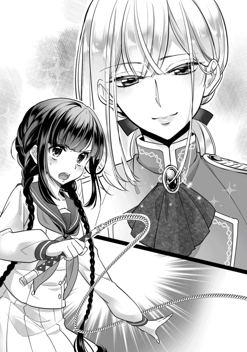
彼が口にしたのはなぜか鞭の技術指導だった。マイペースさんはもうお腹いっぱいなのだが。
「あ、はい、すみません......」
レナはつい、素直に鞭を構え直してしまう。確かに手にしっくり馴染んでいた。ちょっぴり感動した。
「いや、そうじゃない！ 確かに助かるけど、今はそんな場合じゃないの！」
「見事な順応力だね」
「くうっ」
相手のペースに乗せられてしまって悔しい！
「大切なことだと思うよ。順応力」
......バカにされたんだろうか。わざわざ丁寧にアドバイスをしてくれたのはなぜだろう。金色モンスターにとって不利でしかないだろうに。時間稼ぎ？ それとも、レナのへなちょこ鞭程度じゃまだまだダメージなんて与えられないぞーという余裕からくる発言かもしれない。心がやさぐれ始めたレナは、そっとその思考に蓋をした。
話が通じるなら、どのような意図があって接触してきたのか会話で聞き出すことができるはず。そちらに思考の割合を割いた方がはるかに良い。
［バタフライ・アイ］を持つリリーとレナはそっと目配せし合う。リリーなら、彼が嘘を言っていたら見抜くことができる。覚悟を決めて、再び話しかけてみる。
「ルーカチアスさん」
噛んでしまう。この場面でこれはひどい......。
場の空気がさらに微妙なものになってしまった。あまりの事態に、従魔たちも慰めの言葉が出てこない様子。レナが気まずく黙り込んでいる間に、またも金色に先手を取られてしまう。
テノールの、キレイだけどやけに抑揚の少ない声が朗々と森に響く。
「貴方は藤堂レナ。......職業は魔物使いで、今のところスキルを５つまで取得済み。そのどれもが従魔のためのもの。運動能力は平均以下だけど、知力は高め。17歳の女性で【☆７】の特殊ギフト持ちだね。へぇ。......『レア・クラスチェンジ体質』かー」
「ーーーー......ッ!?」
......このヒトはなんなんだろう。詳細な個人情報を知っているのはどうしてなのか。もしや......ギルドの関係者？ 青ざめ、焦りからレナの心音が早くなる。
一方の彼は、レナの反応を見ても冷静な姿勢を崩さず、言葉を止める様子はない。
「〝クレハ〟と〝イズミ〟。種族はミニ・ジュエルスライム......未だ確認されたことのなかった、希少種のスライム。レベル５で早々に進化した。生まれる時に身体が２つに分かれたため、小さな個体となった、魂を共有している兄弟もしくは姉妹。所持スキルは［溶解］、［超硬化］の２つで、【☆４】のギフト持ち」
『......えっちーー!?』
『なに、覗いてんのよーー!!』
「〝リリー〟。テイムされてからまだ育てられていない、ナイトバタフライの女の子。所持スキルは２つ、ギフトは【☆２】バタフライ・アイ。［吸血］スキルで主人の特別な血液を身体に取り込んでいるため、次のレベルアップで早くも進化が見込める」
『......えっ？』
「こんなところかな」
そこまで言い切った金色はまた黙り込む。レナたちをじっと見つめる紫の瞳はどこまでも凪いでいて、そこに感情を見出すことはできない。詳細な情報をひたすら一方的に暴かれた主人と従魔たちは、驚きのあまり固まってしまっている。
金色はマイペースに思考する。そよ風が彼の蜜のような金髪を揺らした。
（こんな森のド真ん中で、この危なっかしい反応とは。......ヒト族の彼女は17年間、いったいどんな平和な世界で生きてきたんだろうね？ 僕が悪意を持って攻撃していたらもう死んでいたよ。魂も善良すぎるし......不思議な人だなぁ......）
............。
レナの魂を〝視〟つつ、金色はいつまでたっても動かない主従に対して「仕方ないな」とでも言いたげな表情をして、また話し始めた。
──本題を言うならこのタイミングがいい。そう考えて、瞬きを１つ。
「僕の目って便利でしょう。相手のほぼ全ての情報を〝視る〟ことができる【☆７】スペシャルギフトの効果なんだけど。この［魔眼］の能力。逃亡するために欲しいと思わない？」
「!?」
「って、売り込みにきたんだ」
息を飲むレナたち。その反応に、彼は満足そうに口角を上げた。
「つまりね。僕の能力は逃亡する時有益だよ、ってことが言いたい。［魔眼］なら、これから出会う人の情報が全て分かるし、相手の歩いてきた道なんかも情報として視ることができる。それでレナたちのことも見つけたんだよ。......だから、逃亡仲間に加えてくれないかなーって交渉しに来たんだけど。どう？ 今なら【☆７】ギフトに加えて、アイテム収納済みのマジックバッグ、さらには、国外までのナビゲート機能もついてきます。成長促進の指導も得意だし。強くオススメします」
「......!? ま、待って待って待って!?」
確かにすごく便利だ。しかし、逃亡仲間に、とはどういうことなのか。
「チュートリアルさん！」
失礼な言い間違いもあったものである。
「ルーカティアスなんだけど......。２人とも追われてるんだし、早めに判断してくれた方が助かるなぁ」
「あ、すみません。って、えっ......!?......貴方も追われているんですか？」
犯罪者だったらどうしよう！ と焦るレナ。
「罪人ではないからね」
「思考を読まないで下さい！」
「読まなくても貴方の顔にバッチリ書かれてる。ほんと、素直な人なんだね」
「くうっ」
レナの精神力がガリガリ削られている。今の彼女に、『分かりやすい』や『単純娘』等の言葉は禁句である。うーーっと小さく唇を噛み締めて、瞳を潤ませてしまった。単純素直が原因で、ギルドで騙されかけたことをまた思い出してしまった。
気持ちが沈みかけて、いけないいけないと頭を振って持ち直すレナ。向こうのペースに乗せられっぱなしだが、きちんと話して、彼の情報を得なくては。
「私たちの仲間になることで、貴方にどのようなメリットがあるか、教えて下さい」
落ち着いた声で金色に問いかける。見返りを求められない優しさの怖さは、ダナツェラで嫌というほど学んだ後だ。疑ってかかれ！ もう、うかつに甘い話に乗っかって騙されるわけにはいかない。
初対面のやたら親切な人を疑うのはラナシュにおける基本事項である。
少しだけレナを見直した様子の金色は言葉を選びつつ、ゆっくりとした口調で自らの事情について話し始めた。
「そうだね。何から語っていこうか」
☆
金色の彼の本来の名前は、ルーカティアス・グェイン・ライアスハート。
この悪名高いガララージュレ王国の王子だった。過去形なのは、今の彼は王宮から逃げてきた逃亡者だから。
腐った政府に［魔眼］を悪用されることを常々イヤだと思っていたルーカティアスは、逃げ出せるチャンスがあったため躊躇せずに王子の座を捨ててきたのだ。
生まれた瞬間から［魔眼］の有用性を見出されて、服従魔法をかけられ続けていた王子。王国外の者からのちょっかいを跳ね除けられる程度の戦力、行動の自由は与えられていたものの、いつも、どこに行くにも首輪を付けられ、見張りの護衛たちが付いてくる......。王宮に縛られていた彼にとって、逃亡など夢のまた夢だった。
だが今回、ジュエルスライム騒動が起こり事情が変わる。逃げたスライムを捕まえるために、どうしても［魔眼］が必要だという話になった。
便利な道具は手元においておきたい、と王は悩んだ。しかし欲深い彼はジュエルスライムを諦めきれずに、ついに、ルーカティアスが捜索隊の一員として王宮から出されることになった。
もちろん、いつものように服従の首輪を付けて、ではあるが。首輪の存在は王を安心させた。
しかし、今回はさらにイレギュラーな事情が加わってくる。用意された服従の首輪に、ルーカティアスの義妹がわざと魔法を施さなかったのだ。こういった理由である。
「今回の遠征では、お義兄さまはもう自由に動けるわぁ。どこに行って頂いてもよろしくてよ？ 是非、私の目の届かないところで野たれ死んで下さいな！」
......けしてキレイな理由ではなかったが、結果として、王子は自由を手に入れた。義妹はとにかく自分の美しさを褒められるのが大好きな少女で、自分よりも見目の良い義兄を心底憎んでいたのだ。誰にも知られない方法で義兄を亡き者にする機会を、ずっとうかがっていた。
自分が一番でないと気が済まない！
ガララージュレ王族らしさ全開の、気が強く身勝手な性格の姫だと言えよう。
.........。
よしチャンスきた！ とばかりに、ルーカティアスは義妹の言葉を快く受け入れた。
遠征隊としてダナツェラに辿り着いたとたんに、魔眼で部下たちを撒きまくって森に逃げ込む。もちろん生き残るつもりだ。今後、確実に国外逃亡するためには......と考え、彼は彼で、レナたち一行を探すことにした。自分の力だけで逃げ切ることは難しいと考えたのである。
同じく国外逃亡を目指しているであろう魔物使いと協力しあえたなら、逃げきれる可能性も上がるはず。何やら珍しい魔物の力にも期待が持てそうだと算段した。
どんな人物かも分からないのに、軽率？......勘にすがった。
☆
「このような理由で僕も追われていてね。貴方たちが魂の綺麗な人で本当に良かったよ。そうじゃなかったら、とてもじゃないけど声をかけられなかった。このめぐり合わせに感謝を。話した通り、今もとても危ない身で、できればすぐにでも国外逃亡したい。協力しない？」
「なに、追っ手増やしてくれちゃってるんですかーーー!?」
レナはだばっと目から涙を溢れさせる。ただでさえ、怖ーいギルド関係者から逃げるために必死だというのに、王子の追っ手まで追加されているだなんて！ こんにゃろーー！
しかもそちらの方が確実に血眼案件である。レア魔眼持ちの従順な王子なんて、政府は絶対に手放したくないだろう。うなるレナ。対する金色王子の謝罪はかっるい。
「そこに注目しちゃったかー。うん、ごめんね？」
「そんなんで許しませんからね!? もーー！......リリーちゃん、この人の言葉に嘘は？」
『......ない』
取り急ぎ、リリーに確認するレナ。なんとも重い話を聞いて、主人と従魔一同は複雑そうな表情になってしまった。厄介なものを引き寄せちゃった......と、スライムたちが落ち込んでいたので、慌ててレナが慰める。しかし短時間で覚悟を決めたようだ。ぐずぐずしている余裕などない。
「ーー行こう！」
レナが声をかけたメンバーには、かの金色王子も含まれている。もうこの場所にじっと潜んでいる訳にはいかないらしいし、早く国外に逃げるためには......不本意だが、この人がいた方がいいのだろう。
（コクッ）
思考を読まれ、力強い頷きを返された。そういうの、いらない。
じとーーっと、恨めしげに金色王子を見やるレナ。裏切ったりなんかしたら許しませんよ！ との念押しの意味が込められている。いつになく強気な少女の様子に、金色は少し驚いていた。
「ごめんね。迷惑かけた分くらいは、役に立つから」
「......当たり前ですよ、もぅ！ ナビゲーション期待してますから。道案内お願いします、ルーカティアスさん」
「ルーカでいいよ。随分、信用までが早かったね」
「ここまで場を整えといて今更そんなこと言うんですか!?......覚悟は決まりましたから」
レナはもうヤケクソだ。ふぅ、と小さくため息をついて、従魔たちを優しい眼で眺めた。
「私は......。自分のことは信じられないけど、大切な従魔たちなら信じられる。リリーちゃんが貴方の言葉に嘘はないっていうなら、それを信じます」
『......ご主人さま。......すき』
『クーが、レナの代わりにレナを信じているからねっ』
『イズもだよーー！』
「！ ふふっ、ありがとう。さあ、一緒に逃げましょう」
レナは、金色......ルーカさんの目をまっすぐに見つめて言った。
「うん。ありがとう。頼りにしてくれていいよ」
一緒に、という言葉を聞いたルーカは、ほんのりと嬉しそうに微笑むと、森の奥よりも少し逸れた方角に向かってゆっくりと歩き出す。同行者が疲労しているため気を遣ったらしい。彼のあとをレナたち一同も続く。
レナはなんだかんだ同情してこっそり泣いてしまっている。バレバレだ。スライムたちがよしよし、と慰めるつもりでレナの頭の上でくねくね身をよじった。
旅仲間が１名増えて（ほぼ強制）、より賑やかになったレナ一行。国外逃亡珍道中は、まだしばらく続くらしい。
▽レナは案内人と出会った。
▽元王子ルーカティアスが仲間になった！
レナ一行は薄暗い森を慎重に進んでいる。新しく仲間に加わったルーカが敵モンスターを確実に発見していってくれるため、以前に比べて、だいぶ安心して歩けるようになっている。彼の道案内は正しい意思に基づいたものか、逐一リリーがチェックしてくれていた。ありがたいなーなんて思いながら、レナは早速気を緩ませかけている。
ここは森の中だということを忘れてはいけない。油断してると......
「......ひーーーー!?」
クモが、糸にぶら下がりながらレナの目の前に降りてきた！ 小さな悲鳴が上がった。
『いっただっきまーーす』
『あー。クー、ずるーい！』
『次はイズに譲るよー』
従魔たちが相変わらず頼もしい。パクッとクモを一口！
主人はもう少ししっかりしなければいけないようだ。都会育ちのため、いきなり現れる虫に慣れていないのは仕方がない。しかし、驚いてコケているのはさすがに情けない。背後を振り返ったルーカもちょっと困った顔をしていた。
「うーん。運動ステータス値がひどいのも確かだけど、それ以前に、レナには運動センスが全くないみたいだね......？ まさか転ぶとは」
「す、すみません......」
「センスを磨くのは難しいから、仕方ないけど。でも、森の中を旅して行くのにこのままだと困るかなぁ」
なかなかの辛口評価だ。従魔たちに甘やかされまくっていたレナは、しょんぼりと落ち込んでしまった。努力するつもりはある。しかし、自分の運動神経の悪さは嫌になるほどよく理解している。異世界サバイバルで体力作り中とはいえ、すぐにセンスが改善されるだなんて到底思えなかった。
あまりにもレナが落ち込んでいるので、ルーカは「しょうがないな」とフォローに入る。なかなか面倒見のいい性格らしい。
「まぁ、なんとか対策を考えていくから。追っ手を増やした分はちゃんと働くって、さっき約束したからね。とりあえず魔物のいなそうな広場まで歩いたら休憩にするから、そこまでは頑張って歩ける？」
「！......ありがとうございます。ルーカ先生」
「うん、悪い気はしないね。んー、普通の虫にもできるだけ気を配って避けて歩くけど、あとあとは旅の環境として慣れていくんだよ」
とても丁寧なフォローだ。従魔たちも休憩と聞いて、ようやく少しだけ肩の力を抜いた。
目立って追っ手に見つからないように、と戦闘は極力避けつつ進んでいる。
魔眼のおかげで、結局一度も魔物にエンカウントすることなく広場に辿り着く。休むなら木陰などより、まだ見通しのきく広場の方がいいと意見が一致した。このような森奥では、隠れられる場所ほどモンスターが寝床にしている可能性が高いのだ。倒れた大木に腰掛けて、つかの間の休息をとる。従魔たちは主人の膝の上で思い思いにくつろぎ始めた。疲れたスライムがくたっと伸びており、リリーは翅を閉じて静かに休んでいる。
「お互いのギルドカードを確認しておこうか」
「そうですね」
ルーカとレナがお互いのギルドカードを交換して眺める。お互いの能力が分かっていないと、いざという時に慌てることになるし、作戦も立てづらい。
ルーカはその目で相手の全ての情報が視れるのだから、レナのカードを確認する必要などないはずだが？ レナのカードに手をかざすと、何やらブツブツと呪文を唱え始めた。
「──クローズ」
......レナのギルドカードの、ステータス値から下の部分がキレイに消えてしまった！
一連の動作を見ていたレナは思わず「えっ!?」と驚きの声をあげる。なにやら苦い表情でカードを返すルーカ。
「自分のスキルやギフトなんかは生命線になるから、カードで開示しないのが普通なんだけど。冒険者ならなおさら。でも、貴方はそれも知らなかったみたいだね？ あのギルドではそんな基礎事項も教えていなかったのか」
「そ、そうだったんだ......。大切なことを教えて下さって、ありがとうございます」
「いや、自国のことながら情けないと思ってる。申し訳ない」
本当にひどいギルドだったらしい。レナは青ざめている。
小都市ダナツェラは、悪名高いガララージュレ王国内でも特に評判の悪い街だ。周辺で悪ーい魔法実験やらをしているせいで自然魔力が濁っており、異常種のモンスターが常々生まれている。それを狩ろうと、これまた悪い傭兵くずれ達が集まる掃き溜めなのだった。国境の近くで交通の便だけはいいため、たまに訪れるマトモな旅人などは政府関係者が食い物にしているのだとか。冒険者ギルドとしては全く機能しておらず、ラナシュのギルド協会からもかなり前に強制除名されているトンデモない施設なのだった。
「そんな所に行ったのに、生きて逃げられて幸運だったねぇ......」と、レナはスライムたちに震えた声で話しかける。
ぷよーーん！ そうだね、良かったよー！ と、主人を慰めるような明るい返事が返ってきた。
レナは泣き笑いの表情で彼らをやさしく撫でる。リリーも加わって、即席ほのぼの空間が出来上がった。
「そうだね、良かったよ......こんな素敵な仲間に出会えたんだから。みんな好き！」
『『『ご主人さまぁーーー！』』』
「......ええと。ギルドカードの話に戻ってもいいかな？」
ルーカがかなり遠慮がちにレナに声をかけた。このいちゃいちゃを放っておくと話が進まない。
「あ！ すみません」
「いいよ。こちらこそ、癒されてるのに邪魔しちゃって悪いとは思ってるから」
隠されたギルドカードの情報を見たい時には、所持者が「オープン」と呟けば再び表示され、「クローズ」で隠れる。長い呪文が必要なのは最初だけらしい。本来ならカード発行時にそれらの説明も受けて、呪文をギルドでかけてもらうものだが。ダナツェラギルドではレナの情報をいつでも見れるようにとわざと教えなかったようだ。本当にひどい。
もう一度カード情報を「開示」して「ギフト」欄を確認してごらん、とルーカに言われたレナは、おとなしく従ってみる。
ギフト：【☆７】［レア・クラスチェンジ体質］......従魔となった者全てが希少種へとクラスチェンジしていくギフト。ただし、職業選択権が［魔物使い］のみになる。従魔が主人と共にいる時間が長いほど、互いに信頼しあっているほど、より強く成長していく［成長促進］の効果がある。
「？」となっていたギフトも今回はしっかりと開示されている。しかし、なんだこれは！
職業が強制で魔物使いだったのは、これが原因だったらしい。
「すごく......ずるいです......」
唖然として呟くレナ。ずるいほど強力なギフトだと、説明文を読んだだけでも理解した。
どうして、今回はギフト欄が表示されたのか？ ギフトの名称を所持者のレナが知ったことにより、情報が書き込まれたらしい。【☆６】以上のスペシャルギフトは自動でカードへの書き込みがされずに、魔眼持ちの者がギフト内容を所持者に伝えることによって、初めて情報が開示されるのだ。
「魔眼」ギフトはこの世界で珍しいものではない。ただ、レア度には大きな格差があり、【☆７】持ちなのはおそらくルーカだけだろう。
「僕もこんなに世界に優遇されたギフトを初めて視たよ。レア・クラスチェンジ体質って言うだけあるね？ レナは従魔たちにとって、言わばもう存在自体がドーピング薬みたいなものなんだと思う。血を吸ったリリーの成長期待値がとんでもないことになるわけだ」
「えっ......まさか、吸血の副作用とかないですよね？ リリーちゃん、体調大丈夫!?」
『体調、とってもいいよ......？』
「何も問題無いみたいだね。良い効果だけらしい。うん、とてもズルい」
「よ、良かったぁ......！」
ホッと胸を撫で下ろすレナ。ドーピングなんて過激な言葉を聞いたので、心配してしまった。
ちなみに、レナのギフトに話題を全て持っていかれたが、ルーカ元王子のステータスはこんな感じ。
冒険者ギルド：ランクＧ 名前：ルーカティアス
職業：魔法剣士 ＬＶ．10 装備：貴族服／Ｍバッグ／魔剣＋５ 適性：白魔法［雷］
体力：30 知力：50 素早さ：37 魔力：33 運：５ スキル：［身体能力補正］、［瞬発］、［感電］＋１、［雷剣］ ギフト：【☆７】［魔眼］ 称号：麗人／制雷マスター
たいがいズルい。基本的にステータス値は高く、そして、それ以外のところに突っ込みどころが満載である。レナの知らない情報だらけだ。
「うわっ......つよ......。ルーカさんの適性魔法、白と雷なんですね。そんな種類もあるんだ。称号って？」
「レナはカードの見方なんかもまるで教えてもらってないようだから、まず、順番に各項目を説明していこうかな。質問にはあとでまとめて答えるよ。いったん聞いててくれる？」
「はい！ 助かりますルーカ先生」
「よい返事です」
▽ルーカティアス先生の ステータス情報講座が はじまった！
▽どうぞご静聴下さい。
『『ドンドーン！ ぱふぱふーーーっ！』』
スライムたちの始まりの合図を受けて、少し笑ったルーカが説明を始めた。
「まず、ギルドカードのランクについて説明するよ。Ｇが最底辺で、そこからＦ、Ｅ、Ｄ、Ｃ、Ｂ、Ａ、Ｓ、ＳＳと順に上がっていく。これは、冒険者依頼を受けることによってランクアップしていって、上に行くほど難度の高い依頼を受けられるようになる。無謀な高難度クエストを受けて亡くなる冒険者を減らすための措置なんだ。あまりにランク差のある依頼は受け付けてはいけないと、ギルド規約で定められている。
職業は、適性のあるものの中からひとつ選ぶ。その職業によってステータス値に補正がかかったり、独自のスキルが身についていく。何度でも選択変更は可能だよ。だけど......変えた瞬間に、強化されてたステータス値・スキルは職業補正のない状態に戻ってしまうし、新しく就いた職はまたレベル１からになるから、オススメしないかな。
基礎魔法は白、黒、赤、青、緑、黄の６種類がある。この初期の状態で使えるのは、例えば白魔法なら『ライト』や『パラライズ』など、威力の低めな魔法のみ。魔法を使用していく毎に練度が上がって、白から［光・雷］、黒から［闇・時空］赤から［炎・熱］、青から［水・氷］、黄から［土・付与］、緑から［風・治療］と追加で属性特化魔法を覚えていく。これらが上級の魔法になるね。呪文は新しいものを覚えるごとに、世界の福音が教えてくれるよ。
スキルには、つどスキル名を詠唱して使用するアクティブ・スキルと、所持しているだけで常時発動状態となるパッシブ・スキルがある。僕の［身体能力補正］なんかはパッシブ。
まず、特定の動作を行うか職業魔法を使うことによって取得期待値を高めておくと、レベルアップと同時にスキルを覚える。よく使うスキルは練度が上がっていって、『＋値』で追加威力が表される。
ギフトについて。これは、生まれた瞬間に持っている特別な力。持っていない人もいれば、複数持っている人もいて個人差がとても大きい。レア度は【☆１〜７】で表されていて、平均レア度は【☆２】。......だから、僕たちの【☆７】ギフトはとんでもなく珍しいってこと。できるだけ他人にはレア・クラスチェンジ体質を知られない方がいいよ、レナ。所有したがる悪党は大勢いるだろうから、気をつけて。
称号は、周りからの評価によって世界から与えられる『名のギフト』みたいなものかな......まだよく分かってはいないんだ。その称号を〝セット〟すると、自分自身に何かしらの追加効果が現れる。ステータス値が上がったり、人としての魅力が増したりする。ちなみに、『制雷マスター』なら、雷魔法の繊細な制御が可能になる。取得にはタイムラグがあることが多いから、僕たちには、そのうち〝逃亡者〟なんかの称号が付くかもね。
ざっくりとだけ説明したけど、こんな感じかなぁ。では、質問を受け付けます」
「はい先生！」
レナが勢いよく手を上げる。声は小声だ。
「ステータス項目の説明はとても分かりやすかったです。ありがとうございます。逃亡者については、気にしないことにしました......！ 装備品の、〝魔剣〟について教えて下さい」
「ああ、それね。この剣なんだけど」
ルーカは背に適当にくくってあった剣を、鞘からスラリと抜いてみせる。濃いブルーの柄。涼しげな薄紫の剣身には輝く白で、何やら文字が刻まれていて、かなり高級そう。
「国の宝物庫から盗んできた。まあ、それは置いといて」
「何してるんですかーー!? ああでも、私も同類だぁー......うっ」
国宝損失なんて追っ手がさらに血眼になっているんだろうけど、ギルド宿舎から鞭とシャツをコソ泥してきたレナはもう人のことなど言えない立場である。人生で初めて窃盗罪を犯したことを気にしていたのか、気まずそうに目を逸らしている。......先生の言う通り、この話題はもう横に置いておこう！
「あーなるほどね、同類ねー」
魔眼で視られている。やめてーーー!!
「魔剣はね、作られる時に魔法文字を刻まれた、剣身に上級魔法をまとわせることのできる特殊武器だよ。とっても高ーい、高級品。作り手の腕によって＋値が表示される」
「へ、へぇ。すごーい！ これで戦ったらエフェクト派手そうー！」
「値段聞きたい？」
「やめておきますね」
小心者のレナは耳を塞いだままの方がいいだろう、おそらく精神がもたない。そんな逸品を雑に扱っている辺り、なんだかんだルーカは元王子様だった。
「ルーカさんは、雷魔法を使う機会が多かったってことでしょうか？」
▽レナは 話題を変えた！
「レナの自分からダメージをくらいにくる才能は、本当にすごいね？」
▽痛恨のミス！
またも地雷を自ら踏み抜いたらしい。
「っ」
「まぁ、聞いてみてよ。僕の容姿はこの通りだから......変質者を引き寄せることが多くてね。だいたいは魔眼を気味悪がってそこまで近づいてこないんだけど、それでも、世の中には上位変態もいる。下心のある者が近づいてきた際に片っ端からパラライズをかけて失神させまくっていたら、いつの間にか雷魔法の才が開花してたんだ。つまりは、自分自身を守るために身についた能力って感じかな。［瞬発］スキルを取得した理由も同じ。変態から逃げるためだね」
うわぁ。レナの顔が引きつる。
「う......！......イヤなこと思い出させちゃってごめんなさい」
「別にいいよ、ははは。逃げた今ではそんな気味の悪い視線を向けられることもないから、過去のことだし。貴方達は普通に接してくれるから旅中はとても快適に過ごさせてもらってる。ありがとう」
「その乾いた笑い声が心配です！」
ルーカの表情は実に爽やかで、本当に気にしていなさそうに見えるが、なにぶん内容が内容である。クールさがかえって怖い。
レナは頭を抱えてしまった。この人の過去話は、のほほんと生きてきた日本人には重すぎる！
なんと声をかけたらいいのか。でもまた傷つけてしまわないかなぁ、と悩み始めてしまう。そんなレナに、リリーがこっそり話しかけた。
『ご主人さま。悲しまなくてもいいよ......。あの人、ほんとに、気にしてないみたいだから』
「うん。リリーの言う通りだよレナ。同情してくれるのなら、落ち込まれるよりも、確実に逃げきれるよう協力を頑張ってくれる方が助かるかな」
プライバシーが恋しい。ルーカは魔眼効果でモンスターの言語もバッチリ理解していた。
「はいっ、それはもちろんです！」
俯いていた顔を、レナはがばっと勢い良く上げる。しっかりルーカの紫の瞳を見つめて、力強く告げる。
「絶対、国外まで逃げきりましょうね！」
「うん」
ほんのりと口角を上げて、ルーカは微笑む。それから、従魔たちにも順番に声をかけていった。
「クレハ、イズミ、リリー」
......ぷよっ!? と、まだルーカを警戒していたスライムたちは勢いよくとび跳ねる。無遠慮にステータスを覗かれたことが結構イヤだったようで、ルーカへの好感度は現時点ではあまり高くない。
［バタフライ・アイ］を持つリリーは、ルーカが正直に話していることが分かるため、落ち着いた様子で紫の瞳を見つめている。
「僕たちがこの国から確実に逃げきるためには、君たちの力ももちろん必要だ。協力してくれる？ ご主人さまを守るために。レベルアップして強くなっていって欲しい」
『『『！』』』
「僕が成長指導をするよ」
ご主人さまを守るため。それは、何よりも従魔たちのヤる気を引き出す、いわば魔法の言葉だった。自分たちを一心に信じてくれるご主人さまの、その信頼に応えたい......従魔たちの表情がキリリと頼もしく引き締まっていく。
スライムボディはキラキラと輝きを増しており、リリーは青い翅をこれでもかと伸ばして戦う気満々のようだ。
ヤる。
絶対にレベルアップして強くなって、また、笑顔で褒めてもらおう！
ご主人さまの優しい手を守るのは、自分たちなんだ。その気持ちを改めて自覚した。
『『やったるでぇーー!!』』
『......強く、なる......！』
従魔たちの言葉に、レナはあっけなく号泣した。一応森の中なので気を遣って声は漏らしていないが、無言で涙を滝のように流す様はハッキリ言って不気味である。
レナを一旦スルーして、ルーカはリリーに声をかけた。
「よし。じゃあまずは、次のレベルアップで進化が見込める貴方のレベルから上げようと思うんだけど、どうかな。頑張れる？」
『......ヤル！』
基本的に攻撃手段が［吸血］しかないリリーは、今までは逃げ回るのみだったが、今回はヤる気に満ちている。
『......クラスチェンジ、目指すから。......まかせて！』
「うん、いい返事。レベルを１つ上げるまで程度の時間なら、森のどこかに留まっていても追っ手はまだ来ないと思うよ。クラスチェンジしたらもう少し距離を稼いでおこう。レナとクレハ、イズミは、今回はリリーの戦闘を手伝ってあげて欲しい」
『『ういーーっす！』』
「頑張ります」
「僕はリリーが［吸血］できそうなモンスターを探してみる。それをレナたち皆が弱らせる、トドメはリリー、ってことでいい？ 貴方たちの戦い方を一度見せてもらいたいから」
「分かりました！ あの、強そうすぎるモンスターはやめて下さいね。ほどほどでお願いします。そのあと、ルーカさんの戦闘を見させてもらっても......？」
「もちろん、そのつもりだよ。もし貴方たちが危なくなったら助力もするから。じゃあ移動しようか」
『『頑張ろうねーー！』』
『......ん！』
「引き続き道案内をよろしくお願いします」
「まかせて」
休息をとったレナたちはまず、リリーのクラスチェンジを目指すことにした。体力も少しだけ回復して明確な目標もできたため、以前よりも明るい気持ちで森を進んでいく。非力なバタフライでもトドメをさせそうな魔物を求めて、森の出口付近へと歩いて行った。
「じゃあ、あの棘ネズミを倒してみようか。スキルは［ニードルボディ］と［毒刺］持ち、ギフトはなし。ネズミの毒程度なら従魔のスライムには効かないし、血中に毒はないから、リリーも安心して［吸血］できる。レベル６で少し強めだけど......この１体を倒せば確実にレベルアップできる。どうかな。頑張れそう？」
「......不安がないわけじゃないですけど、４人で戦うので大丈夫だと思います。頑張ります！ あの、ルーカさんの魔眼ってすごくすごいですね？」
「ありがとう。レナ、顔に『チュートリアルさんほんと便利』って書いてあるけど？」
「!? 静まれ私の顔面......！」
「ほんと愉快な人だね」
レナたちは森の出口付近に一旦留まり、モンスターを１体倒すことにした。対象はルーカ先生がトンデモ魔眼で探してくれた。至れり尽くせりな詳細情報付きである。ありがたい。
リリーにトドメを任せることで、レベルアップからのレア・クラスチェンジを目指す。あとレベルが１つ上がれば進化する見込みなのだ。早めに戦力強化をしておこう。
『......ヤル！』
当のリリーもヤる気十分。リリーは非力なバタフライだが、１人きりで戦う必要はない。仲間を頼ってもいいのだ。レナが、真剣な表情で従魔たちに作戦を告げた。
「相手は動きの素早い、トゲトゲした体のネズミね......。うん。私は、今回もおとり役をするよ。イズミ、私の手前１メートル辺りの地面に身体を伸ばして潜んでいてくれる？ その上をネズミが通ったら［超硬化］するの。足が固められて動きが止まるはずだから、そうしたらクレハが対象を一気に包み込む！ ボディの一部を少しだけ開けておいてね。そして、リリーちゃんが口吻を差し込んで［吸血］して、トドメ。こんな感じでどうかなぁ？」
『生き血......。じゅるり』
『足止めは、クーと！』
『イズに！』
『『任せんしゃーーーいっ』』
「わぁ頼もしいっ！」
何気に物騒なリリーの発言はスルーしたレナ。主人の作戦もいつもえげつないので、再度繰り返すがお似合いの主従である。
作戦は従魔にもスムーズに承認されて、無事決定した。仲間それぞれの力を活かせるよう、しっかり考えられている内容を聞いて、ルーカも感心したように頷いている。なまじ天才肌でステータス値が生まれつき高かったルーカは、ひたすら「ガンガン行こうぜ！」な戦い方をしていたため、このような戦法を新鮮に感じたようだ。
万が一の時は彼が助太刀してくれる、というのは安心感がある。ルーカはレナ達の後ろで待機。
「それでは」
「行ってらっしゃい」
皆で目配せしあって、まずレナがこそこそっと、ネズミのいる方向に移動していく。途中転びそうになって、慌てて踏ん張っていたのは通常運転である。ネズミは気配に敏感な種類なので、音には気をつけなければいけない。さいわいネズミに気付かれた様子はなく、ハラハラレナを見つめていた従魔とルーカはホッと息を吐いていた。
相手との距離を開けながら遠回りで進んで、なんとか背の高い草むらの陰に潜んだレナ。
棘ネズミを観察してみると、視線は手にしたドングリにのみ注がれている。これから食事を始めるようだ。
ネズミの黒紫の身体は薄暗い森によく溶け込んでいて、そうそう見つからないはずと警戒を緩めている。美味しいご飯が口内に入っているため気が緩んでいるのだろう。
この棘ネズミも、濁った自然魔力の影響を受けた異常種（魔眼情報）。顔つきが実に凶悪だ。
そんなのの血を［吸血］してリリーに悪影響はないだろうか？ と、レナはちょっと心配になる。ここでレナの思考を覗いてみよう。
（もしリリーちゃんが、イケイケのヤンキーお姉さんみたいな性格になっちゃったらどうしよう......！ どう更生させればいいの？ いや、それを個性として認めるべきなのかな？）
思考が教育に悩むお母さんである。心配するところはそこじゃない。ルーカから向けられる視線がかなり生暖かい。
「今回の相手は強敵みたいだから、しっかりと戦力を補強しておこう。スキル［鼓舞］！ 使用魔力は......25かな」
『『おぉーーーーーっ!!』』
『......んっ！ ヤル......！』
気持ちを戦闘モードに切り替え、従魔たちの戦闘準備もしっかり整った。従魔たちの声は別種である棘ネズミには理解されない。がっつり気合いの声を上げる。
「ステータス値も上がってるし、テンション効果もバッチリ付いてる。［鼓舞］スキルは、同じ魔力で全ての従魔に上昇効果があるのね。コスパいいなー。......よし、始めるよっ！」
『『『はーい！』』』
主人の肩には移動してきたクレハとリリーが隠れて乗っている。戦闘にそなえつつも、頭数を隠して、棘ネズミの油断を誘うためだ。イズミは作戦通りに地面に薄く広がって待機している。ネズミの足を確実に捕らえてやろう！ と張り切っていた。興奮しているためか、表面が少しだけプルプル揺れている。
目を細め、レナは獲物に襲いかかるタイミングをはかっている。
対象が１つ目のドングリを食べ終えて、２つ目に手を伸ばそうとした......いまだぁーー！
派手に分かりやすく草のこすれる音を出しながら、
▽草むらから 野生のレナが 飛び出した！ （棘ネズミ視点）
「棘ネズミさん、勝負です！」
鞭をかまえ、ピシリッ！ と右手側の地面に軽めに叩きつけるセーラー少女。単なるオトリ動作のため、威力は全くない。いや、これが彼女の今の実力の全てである。
棘ネズミは小馬鹿にしたように「ハッ」と鼻息を漏らした。非力な小娘がエサになりに来よったでぇ！ と言わんばかりの、余裕しゃくしゃくの態度である。
実際その通りで、レナ単体ならレベル１のスライムにさえ捕食されてしまうか弱いヒト族の少女だ。しかし、従魔が控えているという心強さから、彼女の表情は緊張して強張っているものの、怯えは見られない。
そのレナの様子に、棘ネズミはわずかに違和感を覚える。ヒゲを神経質にピクリと揺らした。
彼はこの辺りではそこそこの強者だ。だからこそレベルも６になったし、多少の知能も持っている。
あの妙な人間を襲うか？ きちんと思考していた。
......これを逃すなどありえない、という結論に至ったらしい。柔らかくて旨そうな極上の肉だ。相手の出方にできるだけ気を配りつつ、襲うことを決めた。
もはや思考する時間も惜しいと言わんばかりに、強く地を蹴って駆け出す！
猛スピードでレナに向かって駆けてくるネズミ。その動きは小動物らしく細やかなもので、地面に無造作に転がる石やら小枝やらを器用にかわしながら進んでいた。
つまりは、ジグザグとした独特の動きだということ。
ハッ！ とレナが息を飲む。
自分とネズミの一直線上に、イズミはスタンバイしているのだ。ジグザグの変則的な動きのせいで、イズミのいる場所を獲物が通らないという可能性が出てきた。
急いで、指示を追加する。
大自然の中での戦闘は、いつも多少なりのイレギュラーな要素が加わってくると心構えはしていたものの、気持ちは焦ってしまう。
「リリーちゃん！ ［幻覚］スキルを使ってもらうことになるかも、準備をしておいて。もし、イズミのいない所をあのネズミが通って来たら......惑わせて足止めして欲しい」
『ん！ 分かった！』
「クレハは、私の足元に。イズミのように広がっておいて。私がネズミの進路を伝えるから、その時は臨機応変に移動していって足止めしてくれる？」
『あいあいさーーっ』
「お願いね......！」
早くも、ネズミはもう手前４メートルほどの位置にいる。進路を見間違うまいと、レナは目をこらす。走りながら［ニードルボディ］スキルを発動させているネズミ。毛がまとまって鋭利な棘に変わっていた。その先端には、おそらく毒が仕込まれている。スライムなら毒を無効化できるが、レナやリリーに当たってしまっては大変である。
ネズミの動きによっては、鞭で防ぐことも視野に入れておかなければ！ と、レナは柄をぎゅっと握り締めた。緊張してじっとり嫌な汗をかいている。
（お願い。作戦通りのルートを通って来て......！）
祈りつつ、ゴクリと生唾を飲み込んだ。無意識の、ほんのささやかな動作だ。だが、研ぎ澄まされた野性の感覚はそれを見逃さなかった。ニヤリ！ と棘ネズミが不気味に口元を歪める。
「ーーーッ！」
レナが目を見開く。
ネズミは本能で警戒したのだろう。......イズミのひそむすぐ手前で後ろ足に思いきり力を込めると、強く地を蹴り、大きくジャンプしてきた！
毒トゲまみれの体をまるでアルマジロのように丸めている。そうして飛び込む先は、旨そうなヒト族の懐。こんな攻撃、くらったらひとたまりもない！
リリーがとっさに主人の前に立ちはだかる。
『させない......！』
「！」
ひゅっ、とレナは息を飲む。......自身も覚悟を決めて、鞭を再び握り直す。
そしてもう１体が、ぷよーーーーーんっ！ と跳ねた。
『クーだってぇ、そんなの許さないんだからねーー!?』
レナのすぐ足元にいたクレハも大ジャンプ！ ［鼓舞］スキルで上げられた高いテンションそのままに、ぐわッッ！ と大きく膨らんだ。シビれるぅーー！ 格好いいーー！
「キィキィッ!?」
棘ネズミはべったりとスライムに張り付いてしまう。もがいている最中、さらに追撃が加わる。
「......ナイス、クレハッ！ 硬化お願いっ」
『スキル［超硬化］ーー！』
もはやハエ取り紙にからめ取られたハエ状態の棘ネズミ。薄く伸びたボディに刺さった状態で硬化され、とてもカッコ悪く動きを止められていた。
『クーってば素敵じゃーん！ 便乗しちゃうぅーー！』
獲物の悲劇は終わらない。駆けつけたイズミが、元々のクレハの役割をしっかりこなす。ネズミを真ん丸くすっぽり覆ってしまい、また［超硬化］した。こうなると、もう呼吸すらままならない。あとは死を待つのみ......。
放っておいてもそのうち死んでしまう状態だが、ま・だ・ま・だ、悲劇は終わらない。
そろり......そろり......と、目に見える死の使者がゆっくり近づいてきていた。
『じゅるり......』
▽ホラーバタフライが 現れた！ （棘ネズミ視点）
スライムボディの一部には、直径１センチほどの小さな穴がぽっかりと開いている。
舞台は整った。やっておしまいなさい。
『『さあさあどうぞ！』』
『......ふふっ、ありがとう。......イタダキマス！』
ト、ド、メ。ちゅううぅーーーーーーーーーーーーーーーーーーーーーーーーーーーっ！
絵面は言うなれば殻付きココナツジュースだろうか。中身は棘ネズミの血だが。
少しずつ獲物の身体が小さく萎んでいき、カラカラに乾いてくる。ギラギラしていた目からは光が抜けて、どこまでも一方的に命を吸い取られていった。
「......うわ......」
鞭を握りしめたまま固まっているレナが、遠い目をしている。しかし作戦の考案者は貴方だとお忘れなく。もしも自分が血を与える時にスキルを使われていたら......なんて、例えばの話など考えない方がいい。ご主人さまが大好きなリリーは攻撃なんてしないだろう。
「......あっ」
「お疲れさま」
レナの背後にはいつの間にか蛾モンスターが忍び寄っていたが、それは約束通りに、ルーカが魔剣で倒してくれた。剣の表面がパチパチしているのは、微量の雷をまとわせているから。いざとなったら棘ネズミを消し炭にするつもりだったのだ。脅威が去り、ホッと肩の力を抜くレナ。鱗粉まみれになっているかつての国宝の様が涙を誘うが、元王子は魔剣の見た目などどうでもよさそうである。囚われの王子生活を嫌っていた彼は、美麗な装飾に興味がまるでないのだ。あわれ魔剣。
「不測の事態にもきちんと対応できていたね。正直、すごいなーってちょっと見直した」
「先生......！」
「でも、最初に獲物に近づく時にコケかけてたのは大幅減点かな」
「う。すみませぇん......」
ルーカ先生はレナを褒めてはくれたが、基本的に、評価方法は辛口減点方式らしい。満点とること目指してファイト！ レナは喜ぶべきか落ち込むべきか悩んで、なんとも言えない珍妙な表情になっていたが、結局「まあいっかー」という結論に至ったらしく、へにゃりとひかえめに笑った。
従魔たちの方を振り返るレナ。
「！」
ちょうどリリーが血を吸い尽くし、ネズミの命が完全に尽きた所だった。世界の福音が鳴り響く。
〈従魔：リリーのレベルが上がりました！ ＋２〉
〈ギルドカードを確認して下さい〉
〈☆クラスチェンジの条件を満たしました！〉
〈クラスチェンジ先：ダークフェアリー〉
〈進化させるには、種族名項目をタップして下さい〉
用意された獲物にトドメを刺しただけだったので、リリーのレベルアップは＋２に留まったようである。
〈従魔：クレハのレベルが上がりました！ ＋１〉
〈従魔：イズミのレベルが上がりました！ ＋１〉
《ギルドカードを確認して下さい》
クレハとイズミは身体を張ったお手伝いにより、１つずつレベルが上がっていた。ステータスを確認したところ、体力と素早さがそれぞれ（＋１）ずつ伸びている。他は特に変化はない。
今回もっとも注目すべきなのは、リリーのクラスチェンジ先だ。
進化先は『ダークフェアリー』なるモンスターらしい。フェアリーと言うからには、きっと可愛らしい妖精姿になるのだろう。
レナはほわーんとイメージを膨らませて、嬉しそうにえへへと微笑む。
「みんなお疲れさまー！ よく頑張ってくれました」
『レーナ！ クーのジャンプすごかったでしょぉー？ もっと褒めてくれてもいいのよっ』
『なんのなんの。イズの超硬化もタイミング良かったよね？ レナー』
『......けふ。......ご馳走さま、でした！』
「うんうん。皆すごいよー。格上の棘ネズミ相手に、勝るとも劣らない強さをお持ちですね！ あっぱれ！」
『『『えっへん!!』』』
胸を張る従魔たちはたいそう愛らしく、主人はデレデレしている。大人しかったリリーも、愉快なスライム先輩に感化されてきていた。従魔たちを優しく順番に撫でていくレナ。ぽわぽわーで、ぷよぷよー。撫でているこちらの指がとても気持ちいい。
リリーもクー・イズもとても嬉しそうにそわそわと身体を小刻みに揺らしていて、動きで喜びの気持ちを表していた。
従魔を一通り愛でたのち、主人はカードを手にする。
クラスチェンジのお知らせ、という項目がピカピカ点滅していた。早く！ と急かされている気分になる。レナはリリーを少しだけ心配そうに見つめる。
「あのね、リリーちゃん。ダークフェアリーに進化して欲しいんだけど、進化する時身体が熱くなっちゃうかもしれないんだ。頑張って耐えてくれる？」
『......ご主人さまが、私が強くなることを望んでくれるなら。こんなに、嬉しいことってないの。......頑張れるよっ』
リリーはレナをまっすぐに見返して、落ち着いた口調で言った。
『『愛だねーー!? きゃあーーーっ！』』
こちらは騒がしい。
「うわわ、なんだか照れちゃうね。ふふ、ありがとう。これからもよろしくね、リリーちゃん、クレハ、イズミ。じゃあ進化項目をタップするよ？」
『......んっ！』
レナは優しくリリーに笑いかけて、ギルドカードの［ダークフェアリー］項目についに触れた。
種族説明文が浮かび上がってくる。
【ダークフェアリー】......闇属性に特化したフェアリー。バタフライ種が10年生きると、フェアリーになると言われている。15センチほどの小さな成人ヒト族の身体に、蝶の翅を持った姿が一般的。王族へと進化する素質のある者のみ、通常よりも３倍ほど大きな身体を持つ。特殊スキル［魅了］を進化時に取得する。
※ギフトが【☆４】［フェアリー・アイ］にクラスチェンジします！
「「うわぁ」」
レナとルーカが、思わずといった様子で顔を見合わせて驚きの声を漏らした。主人のギフト効果を考えると、必ず大きめ希少種、王族フェアリーになるだろう。通常10年かかるクラスチェンジを３日で成し遂げさせてしまうだなんて、恐ろしい体質である。
「すごく便利だねレナって」
「先ほどの仕返しですかルーカさん......？」
大人げない。
スライムたちがリズム良くぷよーん！ ぷよーん！ と応援ダンスを踊る中、リリーはこみあげてきた進化時の熱に耐えている。苦しそうに翅を震わせている様子は見ていて痛々しい。今回ばかりは非力なバタフライを下敷きであおぐわけにもいかない。主人は途方にくれた。
▽レナは自分にできる精一杯で、従魔を励ました！
▽スライムダンスに合わせて手拍子をした！
手拍子はかなり耳にうっとうしい。リリーの顔がしんどそうである。ここは空気を読んで頂きたい。結局、張り切りすぎたレナはルーカに注意されてしまった。
そんなこんなしていると......リリーの見た目が変化してきた！
蝶の全身が淡く輝きだす。
青い翅がぐんぐんと大きく広がっていき、身体を覆っていた短めの白い毛は、人の髪のように長く伸び始めた。髪の間から、綺麗な褐色の腕が伸びてくる。リリーは完全に小さなヒト族風の容姿になった。
身体のサイズはもちろん希少種仕様。およそ50センチほどもある。
再びベルの音が響く。
〈種族：ナイトバタフライ→ダークフェアリーに進化しました！〉
〈ギフト：［バタフライ・アイ］→［フェアリー・アイ］に進化しました！〉
〈ギルドカードを確認して下さい〉
〈スキル［魅了］を取得しました〉
レナがリリーを見つめて、そのあまりに美しい姿を絶賛した。
「やったね、リリーちゃん！ うわぁ......とっても綺麗だよー！」
可愛い、というより綺麗という言葉がよく似合う少女の姿。蝶々の翅がふわりと開かれる。
『......嬉しいな』
頬を淡く染めて、幸せそうにリリーは微笑んだ。ほとんどの日本人が想像するこれぞフェアリー！な姿である。まごうことなき美少女（幼女？）の容姿。なめらかな褐色肌に、絹糸のようなまばゆい白い髪、青色の瞳と鮮やかな蝶々の翅。薄手の黒のミニドレスをまとっているためか、幼い見た目に反してどこか妖艶な雰囲気を醸し出している。
ステータスはこのように変化していた。
名前：リリー
種族：ダークフェアリー（幼体）♀ ＬＶ．４ 適性：黒魔法／黄魔法 体力：18（＋３）
知力：14（＋10） 素早さ：18（＋５） 魔力：33（＋15） 運：15（＋３）
スキル：［幻覚］、［吸血］、［魅了］ ギフト：【☆４】［フェアリー・アイ］
「つ、つよい！」
思わず小さく叫ぶレナ。ご主人さまを置き去りに、従魔たちの成長がもう止まらない。
「幼体......？」
「普通、10年かかる進化を数日で成し遂げているからね。見た目が幼いのもそのせいじゃないかな？ 体調は特に問題なさそうだけど」
「なるほど。どう見ても成人の姿ではないですもんね。リリーちゃんはこれからだんだん大人になっていくのかなぁ」
鞭技を磨く余裕がなくオトリ役ばかりしていた主人は、レベル置いてきぼりをくらっているが、たいして気にした様子もなく、従魔たちが強くなったことを心から祝福している。
わーい、えらーい、すごーい！ と手放しで褒め続けるレナに調子に乗せられ、リリーは得意げにジュエルスライムでお手玉してみせた。ヒト型の身体を慣らしているらしい。
ルーカが１人冷静に、リリーをじっと視つめてぽつりと呟く。
「フェアリー・アイ。契約魔法持ち、か」
「あ。......ギフトの内容確認まだしてなかった！」
呟きを聞いたレナは慌ててギルドカードを再度確認する。リリーのギフト欄をタップしてみると、新たな能力の説明が表示された。
ギフト：【☆４】［フェアリー・アイ］......妖精族のみが持つ魔眼の一種。夜目、心眼の効果に加え、妖精契約［フェアリー・コントラクト］の魔法を使用できる。
なんだかすごそうな魔法能力が増えている。
「フェアリー・コントラクト？」と呟き首を傾げるレナ。リリーを見やるも、彼女もまだ自分自身の能力をよく理解していないらしく困った表情。
こんな時に便利......失礼、頼りになるのがルーカ先生！
『『ぱふぱふーーっ！』』
「......期待されてるとこ悪いけど、そんなに詳しくは説明できないよ？ 僕もフェアリーに会ったのは初めてだから本の知識しかないんだ。"妖精契約〟はフェアリー族のみが使える、お互いの魂に直接契約を刻む魔法のこと。この契約は絶対に破ることができない。とても強い魔法だよ。フェアリーと誰かの契約という縛りはなくて、誰かと誰かの契約をフェアリーが縛る、というやり方もできる。後者の方が一般的。何にせよ、とても役に立つ魔法だと言える。まだ信頼の足りない相手とも、安心して約束を交わすことができるということだから」
「そうなんですね......」
「あとで僕と貴方とで契約を結んでおこうか、レナ。お互いを害しない。国外逃亡するために協力しますって」
「う！」
「そしたらもう絶対安心でしょう」
涼しげな表情で言い切るルーカに対して、レナは大変気まずそうに口ごもった。ルーカには色々と助けられてもちろん感謝しているが、まだ完全に信用しきってはおらず、その気持ちを見透かされたことがどうにも心苦しい。今、彼とこうして普通に話せているのはリリーの［心眼］があるからこそなのだ。
利用するだけしておいて、心の中では仲間と認めてすらいないなんて......と、レナは申し訳なく思い、苦しんでいた。しかし現在の状況を考えると、そう簡単に誰かに心を許すことはできない。日本人らしい良心と、ラナシュでの常識との板挟みになって、胃がキリキリしてきたレナ。蒼白な顔の少女を見て、ルーカはなんとも驚いた、と言わんばかりの表情になる。
「貴方のその警戒は当然のものだから、全然気にしなくていいのに？ むしろ、こんなにすぐパーティに馴染ませてもらえるだなんて予想外で、そこに驚いてるくらいなんだよ」
「うう、こういうことで悩んじゃうのは性分なんですよぉー......。誰かを疑うのって、元々とても苦手なんです。疲れます......」
「......善良にも程があるというか。貴方のその性格は、ラナシュの人間には知られない方が良いだろうね。絶対、騙しにこられる」
「うわ世知辛い」
２人とも、困ったような顔をしていた。性分はなかなか直らないものだが、ここラナシュにおいてはレナの素直すぎる性格は悪人に利用されやすすぎる。なんとかしたいところである。今後を考えると、もう少し異世界仕様になっておくべきなのだろう。
「貴方の長所なんだけどね」
と、ルーカが苦笑してため息を漏らした。
そのレナらしさに惹かれたスライムたちが、ぷよーーんっ！ とご主人さまの（貧相な）胸に飛び込んで頭をこすり付ける。次いで、リリーが後ろからきゅっと抱きついてきた。
『クーと！』
『イズと！』
『......リリーが......！』
『『『ご主人さまを、守ればいいの！』』』
「うあああああありがとううぅ......！ 私の従魔ちゃんたちがイイ子すぎるよぉ......っ」
涙が滝状態。感動から泣くまでがもう早い早い、異世界に飛ばされてからのレナは、号泣展開に慣れきっていた。主従を見るルーカの残念そうな視線がザクザク刺さるが、レナは涙で物理的に周囲の様子が見えていない。幸せだね。
『そのままのレナが好きなのよー？』
『だからね、そのままでいられるように、イズたちが守るのっ』
『......強く......なるから！』
「ふぐぅっ」
たたみかけるように浴びせられる従魔からの好き好きコールがたまらない！ 最高！ レナはとっさに自分の口を両手で押さえた。
▽レナは 自身の奇声を 堪えた！ （約70％）
はいはいよかったねー、とルーカが適当に場をまとめに入る。彼は、どちらかといえばまだ比較的レナたちよりは多少なら、常識人なのだ。
もう辺りは薄暗くなってきている。リリーのクラスチェンジという目的も果たしたし、いつまでも１ヶ所に留まってのんびりしている訳にはいかない。
「ホラ、ご主人さま？ 嬉しいのは分かるけど、泣くのはまた逃亡後にしようか。今は、魔物が寄ってこないとも限らないからね」
「......う、はい！」
「うん。夜の間はまた森奥に入っておく？」
「ぐすんっ。そうですね。ダナツェラからまだそう離れていないし、どこかの街で休むのはリスクが高すぎますから......そうしましょう」
「貴方たちが休んでいる間は、夜目のきく僕とリリーが交代で見張りをするよ。さっきそう話し合ったんだ。だから、ある程度は安心して眠ってもらえると思う。寝場所を見つけたら、妖精契約はきちんとしておこう。逃亡中の協力が約束されるのは僕のためにもなるんだから、もう気負わないで。行こうか」
「は、はい」
レナたち一行は、森の中に一旦戻って夜を明かすことにした。闇の中で身体を休めて、明日の早朝からまた距離を稼ぐことにした。
リリーを挟み、ルーカとレナが向かい合って立っている。
これからフェアリー・コントラクトで逃亡協定を結ぶのだ。
妖精にしか聞こえない声で、歌うように呪文を唱えるリリー。すると、皆をすっぽり覆ってしまうほど大きなドーム型の魔法陣が現れた。これで外に契約内容は一切漏れない。ステンドグラスのようなドームの表面で、魔法文字がくるくると踊るように移動し続けている。
ジュエルスライムたちがその夢々しい光景に感動したように、レナの腕の中でうっとりと身体を震わせていた。
『では。これから......妖精契約を結びます！』
「「はい」」
ルーカとレナが声をそろえて返事をし、リリーを見つめる。まだまだ喋り方がたどたどしいリリーだが、契約のため、未だかつてない長文をスムーズに諳んじなければならない。かなり緊張しているようで、尖った耳先がほのかに赤くなっていた。
『......えーと。今回結ばれるのは、ガララージュレ王国脱出のために、お互いが協力し、絶対に裏切らないというお約束......です。契約対象者は、ルーカティアスと、レナ。フェアリー・コントラクトは、破られることのない絶対の誓いです！......ので、言葉に気をつけて、宣誓して下さい。契約内容をお願いします。......ルーカティアスさん』
「はい。ガララージュレ王国内から脱出するために、レナとその従魔たちに協力し、けして裏切らないと誓います。僕の持つ力は、逃亡のためになら全て惜しまず使いましょう。国外に逃げ出した後、レナたちに不利益になる行動もとりません」
模範のようなルーカの誓約の言葉が、ドーム内に朗々と響き渡る。
十分レナたちにとって得のある契約内容で、不満な点はない。
『......ん！ 分かりました。では次に。ごしゅ......レナさん』
リリーも満足そうな表情をしている。
「はい。ガララージュレ王国内から脱出するために、ルーカさんと協力し合います。裏切って私たちだけで逃げ出したりはしません、一緒に逃げます。最善を尽くし、ええと、色々頑張ると誓います！ あと、逃げ切れるまで、私はもう絶対泣きません！」
ルーカの言葉を上手くマネつつ、しっかり宣誓したレナの誓約内容には余分な一節が入っていた。泣かないらしい。逃亡中はその方がいいだろうが、このアレンジはありなのだろうか？
アドリブに４名は驚いていたが、リリーはそのまま言葉を続けた。
『んっ。......分かりました。ただ、レナさん、無理はしないで下さいね......？......お互いの、契約内容を確認しました。承認してよろしいでしょうか』
「「お願いします」」
『フェアリー・コントラクト！......契約は、結ばれました』
誓いの内容を再確認したリリーが、承認の妖精魔法を発動させた。魔法陣がよりいっそう鮮やかにきらめき、薄暗い森の一角をまぶしく照らしていく。レナたちを覆っていたドームは降り注ぐ光へと変わっていき、光の半分がルーカに、また半分がレナの体内に吸い込まれていった。
──魂に契約が刻まれたのである。
スライムたちが楽しそうにぷよーん！ と跳ねてレナの頭の上に乗っかった。
契約を成したヒト族２人の手首には、百合模様の小さな契約印が刻まれている。これは魂への書き込みが完了したという証であり、契約が無事達成されたタイミングで消えるらしい。
「わー......可愛いね。百合模様の契約印って、リリーちゃんのオリジナル？」
レナがはしゃいだ声でリリーに尋ねた。身内の細かいところにはよく気が付く。
『うん。......ご主人さまが、私に百合って名前をくれたから。契約印は、お花のデザインにしてみたの。やっぱり、可愛いのがいいよね......？』
「うん、すごく素敵だし、理由もとっても嬉しいよー！ 名前気に入ってくれてるんだね。よかった。女の子はこういうデザイン好きだよねぇ」
『......えへへっ♪』
「んーと......盛り上がってる所ほんと悪いんだけど。そのカワイイ印、僕にも同じのが付いちゃってるってこと忘れないでね？ 男性にこれは、ちょっとした事故だから。それにしてもオリジナルデザインとはさすがレア従魔......普通はこんなことできないよ」
『えー......。ルーカも百合印、よく、似合ってるの！』
「......。とりあえずちょっと場所を移動しようか。思ったよりも契約魔法が派手だったから、モンスターが何体か近づいてきてる。この場所での野宿は諦めて、新しい拠点を探した方がいいと思う」
「！ た、大変だぁ......急いで移動しましょうっ」
『『『はーい！』』』
「ん。行こうか」
一行は安全な拠点を求めて、もう少しだけ移動することにした。
もともとモンスターが少ない場所を探して留まっていたので、新しい休憩ポイントもそう歩かなくても見つけられるだろう。
歩きながら、試しに泣いてみようと試みたレナは、どう頑張っても涙が出ないことを確認して感動していた。泣き虫がなおった！ と喜んでいる。うっかり泣いて敵に発見されないように、魔法の力を借りてみたのだが......よい判断だったようだ。
ルーカがまるで幼い子を見る目でレナを眺めていた。レナの知力「51」はどうしたというのか。いや、この試みはある意味正解だったので頭がいいということだろう。従魔たちはレナに無邪気に「よかったねー！」と声をかけている。場の空気に花が咲いた。仲間が強くなって戦力は増したが、未だ状況はよろしくない。愉快な話でもしていないと、どうしても空気は重くなる。ちょっとした天然要素は、旅の良いエッセンスになっている。
国外逃亡するには、小さな村をあと２つ越えて、さらに国境の検問をクリアしなければならない。
その間、追っ手たちをまき続けることも頭に入れておかなくては。これからどう逃亡作戦を練ろうか......と、ルーカとレナはそれぞれ頭の中でいくつものパターンを考え始めていた。
新しい拠点を見つけて、レナとスライムたちがまず休憩に入る。明日はルーカとスライムが夜番を交代する予定だ。元ナイトバタフライのリリーは夜に強いので、夜番は仮眠をとりつつ常勤になる。索敵要員が増えて、かなり休息を取りやすくなった。レナとスライムが眠りについた。
☆
肩の力を抜いて、辺りを焦点の合わない瞳でぼうっと眺めるルーカ。
こんな状態だが、しっかりと索敵中である。周り全体の変化をくまなく見たい時にはこのようなボンヤリ視点が役に立つ。一点を集中して見つめてしまうと、他のささやかな変化は意外と頭に入ってこないものだ。
ルーカは横目でチラリと、熟睡中のレナを見つめた。
レナはスライムと妖精に寄り添われて、王国から持ち出したマジックバッグに入っていた簡易ベッドの上で、寝息も立てずに眠っている。よほど疲れていたのだろう。
（明日もたくさん歩くことになるし、体力のない彼女には特にしっかりと休んでおいて欲しいよね。気を遣って起きてて倒れられるより、熟睡してくれた方がよほど助かる......）
そんなことを考えつつ、紫の瞳でレナの魂の奥の奥まで、全てを無遠慮に覗き視ていった。
ステータス値や人間性などの基本情報、生活面での嗜好から、過去。......森の風景とは全く異なる、おかしな鉄の建物が立ち並ぶ故郷で生きた思い出まで......全て。
魂の、さらに奥の奥も。
そして鋭く目を細める。
やっぱりこの子がそうか......と、心の中で呟いた。
魔眼で覗いたレナという人の魂の底。そこには、おそらく「異世界」を理由に芽吹きかけていたとんでもない才能の芽の残骸がひそやかに存在していた。【☆７】魔眼で覗かなければ見つけられいほど奥深く。無意識に眉を顰めて、ルーカは残骸を睨む。
そしてため息をついた。
（この子は善良で、野心のカケラもない......本当にキレイな魂をしてる。普通に生きることしか望んでいないのなら、芽が枯れてしまったのは、結果として良かったのかもしれないな。......元から種が撒かれないのが一番だったけど。こっちの事情に一方的に巻き込んでしまって......ごめんね）
申し訳なさそうに眉尻を下げて、ルーカは少女の寝顔をじっと視つめ続けていた。
つまりは周りから見たら、ルーカがレナに熱い視線を送っているように見えるということである。
金色の後頭部に、いつの間にか忍び寄ってきていたフェアリーの飛び膝蹴りが炸裂した。ご丁寧に［幻覚］スキルまで使って、仮眠している自分を偽造したらしい。ガスッ！ と、鈍い音が響く。
「いった！」
体長50センチもある妖精の蹴りは、成人男性にとってもそこそこ痛い。
『......なに、ご主人さまのこと、イヤラシイ目で見てるのー！......怒るよっ』
「忠告される前にもう怒られているんだけど、リリー。そこは？」
『むぅ。......屁理屈』
「これは屁理屈なのかなぁ」
セコムよろしく制裁に来たリリー。不機嫌に翅をパタパタさせて、ルーカのすぐ横に咲いている花にちょこんと座った。妖精族の体重は見た目に比例せず、総じて綿毛のように軽いため、花は揺れもしない。
［フェアリー・アイ］で視てたぞー！ 後ろめたいこと考えてたでしょ、という気持ちを視線に込めて、じーーっとルーカをきつく視つめた。ルーカはさすがに気まずそうに視線を逸らす。
リリーは勝ち誇った顔になった。
▽にらめっこ 技アリ！
▽リリーの勝利！
『......ホラね？ こうしてじっと魔眼で視られるのって、気分のいいものでは、ないよね。ご主人さまだって、......何もかも視られちゃうのは、きっとヤだよ。貴方の［魔眼］。オフにすることも......できるでしょう。もう、覗き視は、しちゃダメだよ』
リリーの警告に、ルーカが思わず目を丸くする。魔眼の発動をオンオフできることなど、レナたち一行の誰にもまだ伝えていなかった。魂の善悪を見極める効果しか持たないはずの［心眼］で、リリーはそれを知ったというのだろうか？
チラリと、レナの規格外な【☆７】ギフトが頭をよぎる。
思わず、感嘆のため息をついていた。
異世界人の心の底に生まれかけていた過剰すぎる才能の芽は枯れていたものの、ついでのように贈られたギフトがまたとんでもないようだ。従魔たちの個々のギフト効果まで上昇させているというのだろうか。これはまたすごすぎる。
ルーカは呆れたように、力の抜けた表情で笑った。
「まいったな......クラスチェンジして貴方の［心眼］の効果も上がってるの？......うわっ、ごめん、ごめんってば」
『......反省するの、遅いよーっ！ それに......反省のポイントが、ずれてる。ご主人さまに、あとで、ちゃんと......覗き視してごめんなさいって。言うんだよー!?』
「明日の朝、弁明するから！」
なかなか素直に非を認められなかったルーカに、リリーが怒った。意外と短気なところがあるようだ。
スキル［魅了］で手なずけた野生の虫たちを多数背後に従えて、ルーカを非難する！ 迫力満載！ キッと可愛く目を吊り上げるリリーよりも、背後の虫たちが怖い。ブゥゥゥン！ と暗闇に響く無数の羽音がやばい。ぞわぞわする。
ルーカが焦る珍しい光景を見たリリーはようやく満足そうに少し笑って、手なずけた虫を解散させた。イタズラっ子の表情で、紫の瞳を上目遣いに見上げる。
「すごく嫌な汗かいた......」と、ルーカはげんなり呟いた。虫が特別苦手なわけではないが、アレはありえない。
リリーは首を傾げて、不思議そうに問いかける。
『......［心眼］で......ご主人さまを視ている私たちは、誰よりも、あの人を理解しているでしょう？ とても、優しい人だって。それなのに。貴方は、何を怖がっているの......？ 【☆７】［魔眼］なら、なおさら、彼女の魂の清らかさが......分かってるはず。......でも、まだ、すごく警戒してるよね』
「！」
同じ［心眼］持ちを相手にすると実にやりづらい。苦笑を深めるルーカ。
「うーん......僕も、疑いたい訳じゃないんだけどね？ なまじ他人を信用しない人生を歩んできたからかな。......どこかに、彼女の人間としての欠点が無いか。嫌な部分はないか。そればかりを、いつの間にか探してしまっているんだよ。協力して欲しいって押しかけたのはこっちなのに、ほんとヤな人間だよね。自覚はあるんだけど、生きた19年の経験ってかなり頑固みたいで。......はあ。彼女のように純粋に相手を信頼できると良いのにな、と思う。羨ましくなるよ。この世界で生きていくには危なっかしすぎる子だけど......素敵な生き方をしてるよね。あの子の魂の光は、僕の目には眩しすぎるくらい」
ルーカの言葉を聞いたリリーは誇らしげに胸を張った。
彼女の初期知力は「４」だ。自分が聞きたい所しか聞いていない。
『......ん！ ご主人さまのことは、リリーたちが、守るから。......今の、危なっかしいままでも、大丈夫なの！ せっかく、魂、とってもキレイなんだもん。それを曇らせないのが、従魔の......役目。ふふん。ご主人さまの良さが、分かるとは。認めてアゲヨウ......同士！』
「んー。とても返答に困るね？ とりあえず、貴方が機嫌を持ち直してくれて良かったよ、リリー。レナはとても強い人だと思う。元の世界ではかなり大変な人生を歩んでいたのに、その中から嬉しい出来事を探しては、感謝して生きているんだから。ほんと見習いたい」
『......そう、思うだけなら自由？』
「そうだね。見習えたら素敵だろうなーとは思うけど、ラナシュでの実用性を考えると、そうなりたくなかったりもする」
『......ルーカ、めんどくさい！......怖がり！ 根暗！』
「知ってる」
ややこしい言葉遊びに、遠回しな物言い。リリーはとっても嫌そうな顔をしていた。
あんまりおちょくるとまた虫群を呼ばれてしまいそうである。ルーカはやっと口をつぐみ、心持ちスッキリとした表情になった。胸の内を吐露して、少し気がラクになったのだろう。リリーがじとーっと瞼を半分下ろしてルーカを見つめている。
金色の彼もたいがい図太くマイペース。
図太くなければ、腐敗した国でマトモな精神を維持できなかったのかもしれない。
『貴方は、ご主人さまに対して、この世界っていう表現を使う......。......どうして？』
リリーはごく小さな声で、ためらいながらルーカに尋ねた。その質問をされるかもしれないと、ルーカも予測をしていたのか......真剣な表情で目の前の妖精を視つめ返す。
『！』
「（聞こえる？）」
『なに、これ......』
「（言葉を口に出さないで、頭の中で念じてみて。僕に届くから。【☆７】魔眼の追加効果のひとつなんだ。テレパシーの能力だよ）」
『（......ズルすぎ！）』
「（そうそう。上手）」
レア度が高いギフトには、リリーの［フェアリー・コントラクト］のように特殊な効果がプラスされている場合がある。どうやら［テレパシー］もルーカの魔眼特殊効果の１つらしい。何かしらまだ隠してそうだとは思っていたが、まさかこんな技能まで持っていたなんて！ と、翅をパタパタさせて驚くリリー。
便利な力は、万が一の時のために全て仲間に教えておいて欲しかった。ジト目を向けると、ルーカは「ごめんね」と眉尻を下げて謝る。
「（この［テレパシー］は、相手と目を合わせている時にしか使えない。だから、のんびりしていられない戦闘時には向いていないでしょう。言い訳になるけど、早急にこの能力について教えておく必要がないと判断したんだ。あくまで内緒話専用って思っておいて。でも僕の生命線のひとつになる力でもあるから......妖精契約を結んでいない時点では、貴方たちにも言えなかった。怖くてね）」
『（ルーカは......ご主人さまの、能力全てを......視たのに。やっぱり、ズルい人）』
「（ごめん。ええと、あとはトレードって能力も持ってる。逃亡協定を結んだことだし、ギフトについて詳しく話す覚悟はもうできたから、明日こそみんなに全て話そうと思う。それまでは、リリーも説明を待っててくれる？......レナの世界の話をしようか。これは、テレパシー以外では話さない方がいいな）」
『（どうして......？）』
「（ラナシュ世界に彼女を異世界人だと認識させたくないんだ。厄介な称号が贈られたら、それを理由に、また狙われるかもしれないでしょう？ 彼女が平穏を望むなら......そんな可能性はわずかでもない方がいい）」
まるで、レナが厄介な状況に置かれることを前提とした物言いだ。リリーはもともと大きな瞳をさらに見開いた。異世界人。別の世界？ なんて途方もない話！
ああ、やはり聞きたいところしか聞いていない。どこか含みのある言葉について言及されなかったことで、ルーカはホッとしたような、困ったような微妙な表情になる。
『（やっぱり、別の世界が、あるの......？ ご主人さまは、そこの人？）』
「（うん。やっぱり、ってことは、リリーも思うところがあったんだね。あの子の魂の善良さは、この世界の人間としてはちょっとありえないよ。それに、過去の記憶が明らかにおかしいから間違いないと思う）」
『（過去まで、覗いてたの？......もう、ダメだよっ！ 乙女の心には、可愛い秘密が、いーっぱい詰まってるんだから！......あのね。私が、モンスターテイムされる時に......ご主人さまが、今、一番望む［幻覚］を見せたの。......全然知らない、灰色の風景が浮かんできた......。あらゆる、多分、人工物が、とっても緻密で......全然、ラナシュらしくなかったの。ヘンだなって）』
「（そうだったんだ。彼女は、故郷を恋しがっているのか......当たり前、か。レナを元の世界に帰す方法は僕も知らないし、どうしてあげることもできないけれど......せめて、このガララージュレ王国内からは確実に逃がしてあげたいと思う。国の外にはきっと、楽しいこともたくさんあるはずだから。彼女にラナシュの良いところを楽しんでもらえたらいいな。......勝手だけどね。異世界が存在することは他人には内緒にしよう。ここにいる仲間だけの秘密ってことで。あとで、僕からレナ達に進言しておくよ）」
『（......ん！ まずは逃亡頑張ろー！）』
途方もない話に眉尻を下げていたリリーだが、さすがレナの従魔だ。気持ちをポジティブ方向に即行切り替えて、夜空にふわりと舞い上がるとクルクル踊り始めた。
翅の青色が、高揚した気持ちに呼応するようにキラキラと輝いている。
──もはや伝説になりかけているほど珍しい、王族候補の妖精が舞う特別なフェアリー・ダンス。観る者の心を魅了し、また、優しく癒してくれるヒーリング効果がある。暗く不気味だった森の景色が、いつの間にか神秘的で夢々しいものに変化していた。
ルーカがニコッと微笑んで、舞うリリーに声をかける。
「いよーおっ、リリー。たーまやーー。うん、我ながらなかなか上手く真似られたな。リリー、すごく綺麗だけど、あんまり派手に光るとモンスターに見つかるからほどほどにねー」
『無粋すぎる......！』
一体どこで、ルーカはこのような掛け声を覚えたのか。レナの記憶を辿って視た、夏祭り（花火大会）が原因なのだった。もちろん夏祭りにもレナにも罪などない。
レナの運動神経についてさんざんナンセンスだのなんだのと言っていたが、ルーカには芸術系センスがほぼ存在しなかった。服装に関しても、王族ゆえ着飾っていたが、正直なところ、服などいつもシャツとズボンでいいと考えている。かなり残念な王子だった。
たまやー発言に気分を害されたリリーが唇を尖らせて、不機嫌に花の上に舞い降りてくる。
天然ルーカは小首を傾げながらも、とりあえずご機嫌とりをしておくことにした。
「今のダンス。昼間ならそこまで目立たないだろうし、レナに見せてあげたらとっても喜ぶと思うよ？」
『！......褒めて、くれるかな？』
「もちろん。とても素晴らしかった」
キラキラ舞う鱗粉が花火を彷彿とさせて......もうやめよう。
一瞬で笑顔になり、ポッと頬を染めるリリー。実に単純でほほえましい。
「貴方たち従魔は、本当にご主人さまのことが大好きなんだね。まだ出会って数日しか経っていないのに、まるで長年の親友みたい」
ルーカは少し不思議そう。リリーは「よくぞ聞いてくれました！」とばかりに得意げな表情になった。
『出会ってからの期間なんて、関係ないの。従魔契約は......モンスターにとって、すごく、特別なものなんだよ。ご主人さまとね。あったかい魂のつながりが......できるの......！ 彼女が絶対の信頼を置いてくれてるって、私たちには、ちゃんと分かる。魔物は、魔人族にでもならない限り......ほとんどは１人きりで生きて、寂しく、死んでいくだけ。でも、そんな中で......撫でてくれる手の優しさを、一度でも知ってしまったら。......もう、その人なしでは生きられない！ それくらい、特別で......えへへっ、ご主人さまが、大好きなの』
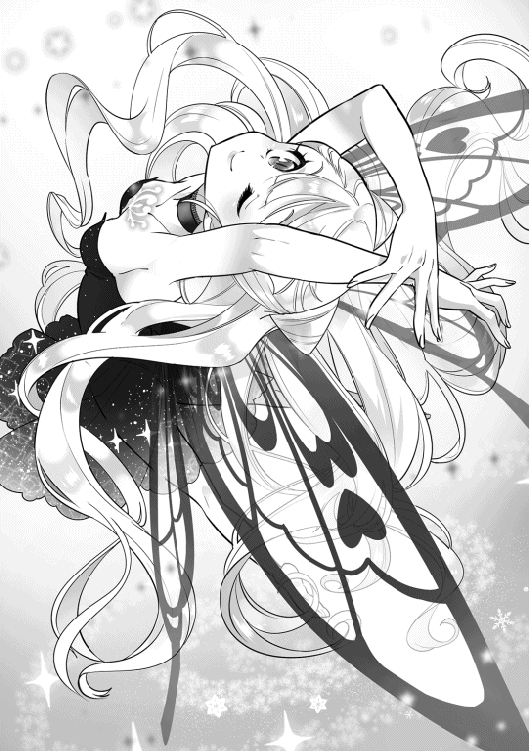
うっとりと幸せそうにリリーは語った。
ルーカは素直に感心している。
レア職である魔物使い。その職業固有のスキル［従魔契約］には、ヒト族ではおおよそ知りえない、甘美なまでの従魔への快楽従順効果があるのかもしれない。レナが主人だからこそ契約が心地いいものになっている可能性もあるが。
全く、どこの世界に、自分そっちのけでここまで従魔を甘やかす主人がいるというのか。はい、現場はこちら。そんなしょうもないことを考えて、ルーカは思わずクスリと自然に笑ってしまっていた。
その後も、リリーとルーカは和やかに語り合った。
だが......紫の目がスッと鋭く細められる。かなり焦った様子で、目の前のフェアリーに指示を出した。
「今すぐ、［幻覚］スキルで僕たち全員を覆って隠して！」
『......！』
空気が瞬時に緊迫する。リリーは返事をする間も惜しみ、主人のギフトで強化された［幻覚］で皆を覆い隠した。もはや、周囲からは一切レナたちが見えなくなった状態。ルーカが細く息を吐く。一体、彼は何を察知したというのだろうか？
説明を求めてリリーが視線を合わせてみると、ルーカは表情を硬くして、テレパシーで念話を送ってきた。
「しーーっ」と、口元に人差し指を当てている。声を出すのはマズイらしい。
「（......［遠視］スキルで、この森の中を探っている気配がした。王国の追っ手だと思う。しばらくしたら、相手も視るポイントを移動させるはずだから、ちょっと静かにしてよう。僕の義妹かも。この荒ぶってる術の使い方は、多分そうだと思う。......まさか姫まで出してくるなんて。今更だけど、王国はよっぽど僕らを逃がしたくないみたいだね。明日からは、また進行を早めなくちゃいけないな）」
『（！......あの、貴方の話してたトンデモ姫？）』
「（そうそう。よく覚えてたね。......行ったみたいだ）」
ルーカとリリーは、ほーーっと息を吐き出した。いくら［幻覚］スキルを使っていたとはいえ、視つからないか、かなり緊張していた。
辺りを視渡して、ルーカが再びリリーに声をかける。
「アテもなくしらみつぶしに視てるみたいだ。同じポイントばかり［遠視］することはないだろう。今夜はこのままここで休憩していくのが安全だと思う。モンスターも近くに来ていないし。リリー、朝まで［幻覚］効果はもちそうかな？」
『......ん。分かった。一度かけた［幻覚］は、かなーり低燃費なの。......寝てたって、継続させられるもん』
「えっ、すごいね......!? うん、貴方も主人のギフト効果もとてもすごい。一応、今夜は僕が朝まで起きてるから。リリーはまた仮眠しておいて。万が一何かあったら、その時はちゃんと起こすよ。明日は僕は夜番じゃないから、索敵は貴方に任せたい」
『うん！......私も、ご主人さまも、すごい？ えへん！』
「もちろん。明日はもうこの森から出なくちゃね」
いつまでもダナツェラ近くに隠れていたのでは、そのうち追っ手に追いつかれて捕まってしまう。
さいわいダナツェラは国境に近い街だったため、あと数日ほど頑張って歩けば、検問所まで辿り着くことができるはず。追っ手を欺きつつ、逃亡を成功させるため距離を稼ぐ。まず、大切なのはここまで。
検問所をどう切り抜けるのかは......辿り着いてから様子を見て考えるしかない。
箱入り王子だったルーカは、門番の警備現場を直接見たことなどなかったのだ。
事前知識のないまま作戦を考えたところで、現場でそれが使えなければ思考した時間がムダになってしまうだけ。余裕があれば考える、くらいに留めておいた方がいいと結論を出した。
ルーカは現在の自分のステータスを脳内で再確認し始める。
『......おやすみなさい』
レナのすぐ側に寄り添い、リリーはすやすやと寝息をたて始めた。ルーカにもう一度だけチクリと『覗き視、厳禁』と告げる。
「おやすみなさい」
ルーカは苦笑しながら、小声で返事を返した。声音は柔らかかった。
さわやかな風が白くなめらかな頬を撫でて、クセのない金髪をサラサラ揺らしていく。
紫の瞳はもうレナの魂を無遠慮に覗くことはなく、穏やかに眠る少女と従魔をただ静かに見つめた。そして、暗い森にはびこる変異種の魔物たちをぼんやりとした視点で索敵し始めた。
「はー......テレパシーに、トレードですか？」
翌日。話を聞いたレナは驚きのため息をついた。これまた便利そうな能力だなぁ、とルーカのあまりのハイスペックぶりに呆れている。
現在、一行は数日隠れていた森を出て、ダナツェラから離れた別の草原にいた。周囲には背が低めの木や岩が多く、見通しが悪くて人の手が入っていない荒れた印象だ。モンスターのいない大岩の陰に隠れて会話している。
「（そう。こういう感じ）」
「わ！」
ルーカの声がいきなり頭に響いてきたので、レナは思わず声を上げてしまった。目をまん丸くして、紫の瞳を見つめ返す。事情をあらかじめ知っているリリーは楽しそうにクスクス笑っている。スライムたちが、新しいおもちゃを見つけた子どものようにはしゃぎ始めた。
『『テレパシーって、なになにっ？』』
生まれて数日しか経っていないスライムは好奇心が旺盛だ。
『ねー。レナには今、ルーカの声が聞こえてるのー!?』
『口に出してないのに？ 頭の中でっ？』
「（うん。こういう感じだね）」
ルーカはスライムたちにも話しかけてやる。
『『わーーーっ！ 聞こえたーっ！ きゃーーっ！ おもしろーい♪』』
「うん、気に入ってくれたなら良かったよ」
『『くるしゅうない、ルーカ！ ワンモアっ』』
『クー、イズ、話が進まないよ......？』
後輩リリーに注意されてしまい、スライムたちは『『ちぇーー！』』と不満げに膨らみながらも、おとなしく黙る。しかしボディをキラキラ輝かせながらルーカを見上げていた。
ルーカの魔眼の追加効果について説明しよう。
［テレパシー］......目を合わせた相手と念話ができる。術者本人が複数の対象に同時に声を届けることも可能。
［トレード］......相手とスキルを交換できる。トレードするには、相手の同意が必要不可欠。
「うわあ」
レナがいっそう呆れた顔になる。相手の情報ほぼ全てが視られる魔眼に加えて、高いステータス値、それにこの追加効果とは。ラナシュはルーカを贔屓しすぎなのでは？
「ルーカさん。能力に恵まれすぎたから、反動で［運］ステータスが低いんじゃないですか......？」
レナの視線が胡乱である。
「ん？ 恵まれた能力を持ちながらも、実に不運だった僕の人生について詳しく聞きたいって？ 仕方ないなー、じっっっくり話してあげようねー」
「すみません！ すみません！」
対するルーカは、ニコッと微笑んでいた。このセリフと笑顔の合わせ技は闇が深すぎる。根暗をなめてはいけない。
レナが大慌てで謝る様子がおかしかったらしく、からかっていたルーカは笑って許してくれた。
「ルーカさんは今までに、その、トレードの力を使ったことはあるんでしょうか......？」
ためらいながらレナが問いかける。彼の過去について尋ねているので、気まずくて声がガチガチに緊張していた。もしトレードの力を使ったことがあるのなら、それは使わされた可能性が高いのだろう。
「いや、まだ使ったことはないよ。これから初めて使おうかなって思ってたとこ。レナに交渉するつもりだったんだ」
「そ、そうですか！......えっ」
どうやら、トレード能力を使用した経験はないらしい。レナは一瞬安心したが、彼の続きの言葉がとても気になる。恐る恐る話しかけた。
「まさか...［溶解］ですか？ それとも、き、［吸血］ですか...!?」
まさかの従魔スキルチョイス！ 吸血なんて覚えてしまうと、ヒト族ではなくヴァンパイア種族と呼びたくなる。
「どうしてそこを選んでしまったの......。違うよ。逃亡が成功するまでの期間限定で、僕の［身体能力補正］スキルをレナに渡しておこうと思って。追っ手に遭遇した時に貴方は逃げきれなさそうだから。貸します。フェアリー・コントラクトでそのように契約しておこう」
かなり太っ腹な提案だ。
レナにとって得しかない。
「あ、ありがとうございます......！ いいんですか。うわ、涙出ないようにしといて良かった。契約がなかったら、私、きっと号泣してました。うう、人の優しさってありがたいものですね......」
「貴方が逃げきってくれないと僕も困るからね。だからだよ」
涼しい顔でツン発言をしてのけたルーカを、リリーが満足そうに眺めている。
レナは心から感動していた。妖精契約前提の善意とはいえ、あとあとのしっぺ返しを恐れなくて済むのはとてもありがたい。ダナツェラで騙されたことはレナの深いトラウマになっていた。あのひどい体験の恐怖は、ほんの数日やそこらで消えてくれるものではない。
「僕はこれからレナに［身体能力補正］のスキルを渡して、かわりに......そうだな。［従順］スキルを受け取ろうかな。国外に出たらもう一度トレードして、お互いのスキルを元に戻そう。発言、偽ってないよね？ リリー」
『......ん！ ルーカの言葉、本心なの』
レナが不思議そうに問う。
「［従順］スキルは自分の従魔にしか効果がないものですけど？ ルーカさんにとっては何の得にもなりません。それでも、いいんですか？」
「構わないよ。レナの戦力を補いたいのが理由だし、僕自身を強化したい訳じゃないから。他のスキルはよく使うものばかりだから、なくなると困るでしょう？」
「いい人......！」
感動が止まらない。主人に甘い従魔たちは『レナ良かったねー！』なんて笑顔で声をかけている。ルーカは複雑そうに眉尻を下げた。
「もう少し警戒心を持続させた方がいいだろうけどね」
「ルーカさんは今は仲間ですし」
「まあ、そうなんだけど。んー」
レナがかなり豪快に警戒を解いたことで、ルーカは苦笑しているが......どこか嬉しそうにも見える。夜中に魂を覗いたことについては、朝方すでに謝っていて、仕方ないなぁと許されていた。乙女度底辺のレナは秘密などたいして持っていなかったのだ。
２度目の妖精契約が結ばれて、お互いの手首の百合印は２つに増えた。
「僕のスキル［身体能力補正］と、レナのスキル［従順］を交換しましょう。トレード！」
トレードの力を使うには、相手と目を合わせている必要がある。あくまでこれも魔眼の技能の１つなのだ。
ルーカの視界の中で、自分と相手とのスキルが入れ替わっていく。この力を使ったのは初めてだったので、その様子を彼自身も興味深そうに観察していた。
【☆７】魔眼の技能の中にテレパシーとトレードがあることは、政府上層部にも知られていないとっておきの秘密である。ギフトの内容全てを暴くには、ルーカのギフトを視抜いた国属魔法使いの魔眼でも不可能だった。当然、現状を嫌だと思っていたルーカ本人が、わざわざ能力をバラすはずもない。
「終わったよ」
「もうですか！」
視えないレナには実感がないまま、トレードは無事終了した。互いにギルドカードを確認してみると、確かにスキルが入れ替わっている。
若干ワクワクしながら、レナは試しに鞭を地面に叩きつけてみた。ピシンッ！......鞭は狙った場所に思い通りの軌道で当たっていて、明らかに運動センスが改善されている！
「わあっ」
『『『すごーい！』』』
喜ぶご主人さまと従魔たち。ルーカ先生は手厳しかった。「もうちょっと攻撃力も増すかと思ってたけど......。まぁ、転ばないだけいいかな」なんて、こっそり呟いている。
そう、あのスキルはあくまで［補正］。運動のセンスを補うためのもので、もともと低い威力面はこれから鍛えていくしかない。補正された動きで敵を倒しレベルアップした時に、運動能力ステータスが大きく上がる、というのが［身体能力補正］スキルの本領なのである。
今は、動きがマシになっているだけでも及第点だ。
「じゃあ、これから移動しつつ、モンスターが現れたら僕が倒して行こうか。それでいい？」
ルーカがレナたちに問いかける。
昨日は従魔たちに戦闘を任せたので、今日はルーカが実力を見せる番だ。
「はい。よろしくお願いします」
「頑張るよ」
背負った魔剣の感触を確かめつつ、ルーカが先頭に立って歩き始める。あとに続く従魔たちはわいわいと雑談しており、なかなか騒がしい。
『ルーカ、雷でビリビリーーってするのぉー？』
『サンダーボルトー！ えいやっ、なーんてね！』
『どっちも、雷......。ぷふっ』
「こらこら、みんなもうちょっと静かにしようねー。雷魔法って、どんな呪文なんですか？ ルーカ先生」
「ボルトだよ」
サクサクと、短い芝のような草を踏みしめて歩くルーカの足運びには迷いが一切ない。耳をすませて音を拾い、前方をしっかり視て、索敵しつつ歩いていた。
重苦しい貴族服など、もうとっくにマジックバッグに仕舞いこまれている。現在の彼はシャツにスラックス、魔法ローブという軽装だ。実に快適！ と言わんばかりのスッキリした表情。無駄に装飾が多い服など自然の中では邪魔でしかない、とは彼の名言である。
レナは肩にスライムを乗せて、綿毛のように軽いリリーを肩車しながら歩いている。パッシブスキル［身体能力補正］のおかげで、以前よりも危なげのない足取りだ。つい先ほどまでは、舗装のされていない道を歩くたびに小石を踏みつけフラついていたのだが、補正の効果はとても大きかった。
［身体能力補正］は借りものなので、今のうちにバッチリ感覚を覚えておきたいところである。
進んでいる草原は、平野ではあるものの、高さの低い木が多く自生しているため、隠れられる場所も十分存在している。それらの陰に身を潜ませながら、一行はぐんぐん国境までの距離を縮めていった。
だいぶ進んだところで、藪に潜んで休息をとる。
結局、ここまでは一度もモンスターにエンカウントしていない。ルーカの実力を見るのは、もう少し先になりそうである。
ルーカは皆に食料を差し入れる。追っ手を増やしたぶんは便利さで補おう、と考えていた。
「携帯食料だから美味しくないかもしれないけど。どうぞ」
「ありがとうございます。みんなもお礼を言おうねー」
『『『ありがとうー！』』』
「どういたしまして」
ルーカが王宮から盗......持ち出したマジックバッグに入っていた携帯食料を食べてみる。
パクリ。......ヒト族２人はなんともいえない微妙な表情になってしまった。
マ、マズイ！
美味しい食事をことさら愛する日本人のレナは、無意識にどんより影を背負っている。この、ラナシュ世界の味覚がやばいのか？ いや。そんなことはない。ルーカも嫌そうな顔で口の中の異物を無理やり飲み込み、一口で食事を中断してしまった。
長期保存食技術がまだ未発達らしい。魔法を使ってできたて状態を保った保存食も存在するがかなり高価なので、小国の兵士用に蓄えることはできなかったようだ。
従魔たちは普段から血も平気で摂取する魔物味覚なので、このマズイ携帯食料もそこそこ気に入ったらしい。楽しそうに食事を続けている。
『踊り喰いッ！』
▽クレハは携帯食料を千切って体内に入れ、くるくる回転させながら喰べた！
レナは洗濯機を連想した。
『なんの！ 丸呑みッ』
▽イズミは身体をお皿のように引き延ばすと、置かれた携帯食料をとぷんっ！ と一気に丸呑みしてみせる！
じわじわと体中で固形物が溶かされている。
『負けない......吸引！』
▽リリーがバタフライ姿に変化して、粘土状の固形物をずずーーっ！ と気合いで吸い込む！
蝶の姿に戻っても体長は50センチのままなのでちょっとしたホラーだ。とても綺麗な蝶でも、あまりにデカすぎると怖いものだと主人はここで知った。
食べ物で遊ぶのはやめましょうね、とレナが注意し、従魔たちははーい！ と元気よく返事をする。
レナとルーカも気が進まないものの、携帯食料をまた口に運び始めた。とてもマズイけど......この逃亡生活中の大切な栄養源なのだ。
空腹が原因で追っ手に捕まったら目も当てられない。なんとか粘土のような携帯食料を飲み込んで、イズミが「アクア」で出した水を飲み、ふう......と気だるくため息を吐く。
気分を変えようと、レナはルーカに話をふった。
「美味しい食べ物のことでも話しますか？」
「......余計虚しくならない？」
返すルーカの声が悲しげである。携帯食料はまだまだいっぱい在庫があるのだ......。
「そ、そこはポジティブに考えてみましょうよ。この逃亡生活が終わったらきっと豪華な食事するんだーー！ って、モチベーション上げていきましょう」
レナは落ち込みやすいが、この場の誰よりも切り替えが早い。従魔たちもキラキラとした期待に満ちた笑顔で主人を見上げた。
というわけで、２人は美味しいご飯の話をしてみることにした。魔物や虫、花の蜜を食べてきた従魔たちは今回は聞き役である。
「私の故郷ではですね」
「ストップ」
レナが話し始めた。......が、ルーカは速攻、話の腰を折った。
驚いて、パチパチと瞬きしているレナ。
しかし、あまり声を大にして異世界の話をしておかしな称号でもついたらあとでレナ本人が困るのだ。その辺りの事情はまだ説明していなかった。ルーカは［テレパシー］で皆に話しかける。
「（声に出して、異世界のことを喋らない方がいい。レナが異世界人だと多くの人に知られたら、この世界が、貴方に特別な称号を与えるかもしれない......それを理由に、逃亡後にも狙われる可能性が浮上する。異世界人なんて珍しいから、もし知られたら、研究者連中にはかなり執着されるだろう。目立ちたくないなら気をつけて。もし、日本のことを話すなら、今みたいに〝故郷〟とボカした言い方をするか、こうして念話を使うこと。通信魔道具なんかはテレパシーの代わりになるから、国外に出たら買ってみるといいよ。そこまで高価な品ではないから）」
「（そ、そんな恐ろしい可能性が......!?......はい、気をつけます。教えて下さってありがとうございます）」
「（うん）」
『『（クーとイズも話さないように気をつけるのーー！）』』
「（えらいえらい）」
レナはぶるりと身体を震わせる。
今よりさらに狙われるだなんて、そんなのイヤすぎる！ 追われる身というのがどれほど大変なのか、まさに今思い知っているのだ。
レナは従魔たちと普通に生きていきたいだけ。なので、特別なんてお断りである。手おくれという意見はとりあえず飲み込んでおいて欲しい。
これ以上失言しないように......と、レナは口を両手で押さえた。リリーが面白がって主人の真似をして、口を押さえる仕草をした。真似ようがなかったスライムたちは悔しそうに、ぷよぷよダンスを踊り始める。ルーカがホッと安心したように微笑む。
「（気をつけようね。それで、レナの故郷の食べ物の話を聞かせてくれるの？）」
「（あっ。えーと......ラナシュ世界の美味しいご飯についてのお話をした方がいいかも？）」
「（そうする？）」
レナは少し憂いた笑顔を、ルーカに向けた。
「（これから食べられるものについて話した方が、逃亡後の楽しみになりますよね。ルーカ先生、色々なラナシュの食べ物について私たちに教えてくれますか？......えーと。前の世界に帰る方法は......さすがにご存知じゃないですよね？）」
そう来てしまったか。ルーカは申し訳なさそうに目を伏せ、力なく首をふり、帰還方法は知らないんだと静かに告げた。
いい返事をもらえるとは思っていなかったので、レナはただ苦笑して返す。主人がから元気で微笑んでいると察した従魔たちがぎゅうぎゅうと寄ってくる。それだけで、曇りかけた気持ちが晴れていく気がした。
レナとて全く期待していなかった訳ではないが......もしルーカが帰還方法を知っていたのなら、なんだかんだ世話焼きなので教えてくれただろうし、否定の返事の心構えをあらかじめしていたので、そこまで落ち込んではいない。優しく従魔を抱きしめ返す。あったかいなー、そしてひんやりしてるーと呟く。
妖精契約のおかげで、レナの瞳に涙が滲むことはもうなかった。俯かせていた顔をパッと上げると、明るく皆に話しかける。
「これまでラナシュで食べた美味しいものについて。私に教えて下さーーいっ」
『『ぱふぱふーーーっ！』』
うっかり全員を対象に、この話を振ってしまった。賽は投げられた。
『......ご主人さまの、生き血です。えへへ』
「しまった！ リリーちゃん、最初から超ハードだね......」
案の定グロい回答が返ってきたが、めげずに進行しよう。次はスライムたち。
『『毒殺ヘビーー！』』
「チョコよりも!?」
魔物味覚おそるべし。クレハとイズミは甘味よりも旨味が好みらしい。毒は美味しいスパイスなのだそう。
最後はルーカ。元王子様なので、優雅な食事内容に期待が持てる。
「人喰い大クマかな？」
意外とワイルドー！ レナはかなり本気でびびっている。これが異世界のスタンダードなのだろうか？ ハードルが高い。
「ひ、人を喰べたクマをまた人が食べるんですか......!?」
「狩りレベリングの最中に野営食で食べたんだけどね、美味しかったよ。手のひらの肉をじっくり煮込むとトロトロに柔らかくなるんだ。いつもの、毒味後の冷めきった王宮食よりよほど美味しかったなー。温かい食事ってそれだけでもいいものだよね」
「へー。美味しいのは正義ですよねー」
レナは冷や汗ダラダラである。ルーカの言葉にどう返答するか悩み、結局後半は聞き流すことにした。相変わらず過去が重い。
スルースキルをそのうち授かるかもなぁ、なんて遠い目で考えながら、ジューシーなお肉に思いをはせる。そういえば、逃亡初日に食べたヘビ肉は臭くてかなりマズかった。
「クマのお肉かぁ。それだけ聞くと、美味しそうかも？」
『『食べてみたいねーー！』』
『じゅるり』
「あははっ、そうだねー」
声に出してそんなことを言ってしまうと......ああ......
「めったに現れないレア魔物なんだ。人喰い大クマは個体数も少ないし、まず、こんな草原には現れないはずだよ」
これまた「やったか!?」並のフラグが立った。ルーカは運が悪い。そして［運］測定不能のご主人さまは運が良すぎる。
幸運の申し子が望むならば。ラナシュ世界は頑張ってしまうかもしれない。
さあ！ きっとくるーー......
グオオオォォォン!!
「「えっ」」
『『『......きゃーーーっ!?』』』
わざわざ拠点にしていた森を抜けて草原をひた走り、旨そうなヒト族をどこまでも求めて。
砂ぼこりが上がるほどの速度でレナたちに迫るのは、黒くてとっても大きな魔物。
口の端からテロリとこぼれるよだれが臨場感いっぱい！
▽人喰い大クマが 現れた！ ×１
「......追っ手また増えたぁーーー!?」
突然現れた人喰い大クマに恐怖して、レナと従魔たちが悲鳴をあげる。
「雷魔法［ボルト］！」
ルーカがクマに指先を向けて、威力の低い雷光を出現させる。光だけを強力に出力している。クマの目を一瞬くらませるためだ。クマの突進の勢いがにぶる。
『......スキル［幻覚］！』
作られたわずかな隙を活かそうと、リリーが両者の間に漆黒の壁を作り上げた。これで、レナたちがどこにいるのか、クマは目測できなくなった。
『うりゃっ、フレイムーー！』
クレハが黒壁に向かって小さな炎の塊を打ち出した！
力づくで壁をぶち破り、獲物に飛びかかろうとしたクマの額を炎が焼く。狙い通り！
......だが、全然威力が足りない!? 足を留めたものの、ひるんでもいない！ クマは不愉快そうに額を毛繕いしてみせるほど余裕だ。グルル、と喉から低いうなり声を漏らす。
クマのギラついた紅目が向く先には、うまそうなヒト族が２人。弱っちそうなレナを獲物としてロックオンし、目を凶暴に光らせる。蒼白のレナが瞳を限界まで見開く。膝がピンとまっすぐ伸び、足を縫いつけられてしまっている......！
「レナ！ 目を合わせちゃダメ！」
ルーカが焦った声を出し、パッとレナの顔を手で覆って視界を遮った。フン！ とクマが鼻を鳴らし、ズラリと並んだ太い牙を覗かせニタァと嗤う。顔を覆われたままのレナがずり、と足を半歩後ろに下げた。
「......すみません、もう大丈夫です」
なんとか動けるようだ。レナの顔から降ろされたルーカの手が、自身の背に伸び、人喰い大クマを視て紫眼を細める。──［威圧］スキルを使ったのか！ なるほど。それにしても、このクマのレベルは......！
「まずい......」
人喰い大クマとレナたちの距離は約５メートル、幻覚の壁を破ったところで足を留めているのは、この魔物は弱い者をいたぶり、楽しむ習性があるから。ぐあっ！ と、大きな口を開き咆哮を上げた。
グオオオォォォン!!
──皆の耳がじぃんと痛くなり、脳みそが直接揺さぶられているかのよう。これも、スキルを使っているからなのだろう。クマはわずかに頭をかがめた。突進の構え。今しかない、とルーカが動く。このまま餌になるわけにはいかない！
「──スキル［瞬発］！」
クマに向かって一気に距離をつめて、魔剣を握る右腕をしならせる。まさか向かってくるとは思わなかったのだろう、クマの動きが一瞬だけ止まった。ルーカは体勢を低くしながら、
「──スキル［雷剣］！」
剣を振るう！
バチバチィッッ！ と、激しい雷が剣にまとわり付き、皆の視界を輝く純白に染め上げた。とても強烈な光だ。ルーカとクマの間の距離は現在約３メートル、ドドドッ!! と地面を這うように、剣から雷の衝撃波が伸びていき、クマに襲いかかった。
ギャオオォッ!?
ドス黒い毛皮をジジッと高温で焦がしていく雷光。毛と脂の焦げる独特の匂いが辺りに立ち込めて、クマはすさまじい叫び声をあげた。今度こそ目を潰されたようだ。ルーカは多量の魔力を全てこの一撃分にまとめていた。
レナと従魔たちはろくに反応もできずに、ぽかんと突っ立っている。光景に圧倒されている。
くるりと踵を返したルーカが、またも［瞬発］スキルを使ってレナたちのすぐそばに舞い戻ってきた。かなり焦った様子だ。周囲をはばからず声を張りあげる。
「逃げるよッ！」
「......え、ええっ!?」
「荷物は全部僕が持つから、レナは従魔たちをお願い。とにかく全力で走って！」
その場に置かれていた鞄やらをさっと自らの肩に背負い、ルーカはスライム達をぽいぽいっとレナに放った。
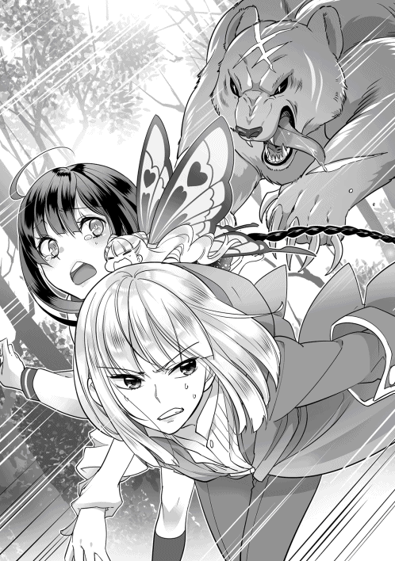
『『きゃーーーっ!?』』
リリーは素早くレナの首に両腕を回して、自力でしがみつく。従魔たちが主人に抱え込まれたのを確認したルーカは荒っぽくレナの手を引き走り出した。混乱中のレナも、とりあえず必死で足を動かす。向かう先は、クマとは真反対の方向。
とにかく、遠くに逃げなければ！
譲られた［身体能力補正］スキルのおかげでなんとか足をもつれさせず走るレナは、目を白黒させながらルーカに問いかける。
「ル、ルーカさぁん......！ あのクマ、さっきのすごい攻撃でも倒せなかったんですかーー...!?」
舌を噛むこともない。［身体能力補正］スキルはかなり万能らしい。
苦い声でルーカが返す。
「無理無理無理無理、あんな程度の攻撃じゃ、全然ダメだよ。......あの人喰い大クマは多分、この辺り一帯のボスだと思う。レベル35の超強者、と視た！」
「ひえーーーっ!?」
『『『きゃーーー！』』』
「騎士団の精鋭が部隊を組んで狩るレベルだ。逃げきらないと、これは本当にヤバいよっ！」
背後をチラチラと確認しつつ、２人は速度を緩めることなく懸命に走り続ける。先ほどの雷攻撃は、言わば光による目くらましが目的。時間稼ぎである。目が回復したらクマはまたすぐに追いかけてくるだろう。
案の定、早くも持ち直した人喰い大クマはキョロキョロと辺りを見回して、逃げ出したルーカたちを凶悪な目付きで睨みつけた。雷攻撃は派手だったものの、身体へのダメージは大したことがなく、戦意を削ぐまではいかなかった。魔剣の雷は強力だが、ルーカとのレベル差25というのはあまりに大きい。
人喰い大クマはずんぐりした身体を器用に丸めると、ニタァといやらしく口元を歪めて、後ろ足で強く大地を踏みしめる。怒っているのか、先ほどよりさらに凶悪な表情だ。
......獲物めがけて、全力で駆け出すッ！
地鳴りのような足音が辺り一帯に響く。持ち直すまでが、希望的予測よりもかなり早かった。ルーカは眉を顰めて舌打ちし、「ひいいっ！」と悲鳴を上げるレナの手をさらに強く引く。
魔眼で視た情報では、あのクマは［頑丈］という厄介なギフトを持っていた。
「草原を出て、また森の中に入る。木が多いから、避けつつジグザグに走り抜けることになる！ 心構え、しておいて！」
「はいいいぃぃぃっ！」
レナはもうほとんど引きずられるようにして走っている。
それでも頑張っているのは、恐怖心と、可愛い従魔たちを守るためだ。
草原の終わりには丈の長い草の茂みが見えている。その向こうにある人用のささやかな街道を通り抜けて、反対側の別の森に突っ込む！ とルーカは言った。
さいわい、逃げている方向はダナツェラとは真逆だが......このようなバケモノに追われて、おそらく奴のテリトリー内の森で、満身創痍なヒト族はどこまで逃げ切れるのか。
皆の心が絶望に蝕まれ始める。
人喰い大クマはとにかく食にこだわる、変わった嗜好のモンスター。柔らかい人肉が大好きで、獲物を一度ロックオンしたらそれのみを求めてどこまででも追ってくる。やめて頂きたい。がむしゃらに茂みを抜けて、レナたちは街道へ出た。
「!?」
......なにか、いる！
行く手を阻むように現れたのは、かなり冴えないおっさん達だった。正直、こんな時にとてもジャマだ。
「おう？ やいやーい！ なんだぁ、さっきの声と光はぁ？ アンタらの悲鳴だったのかいぃ？」
「げははッ！ なんとも可愛らしい声を上げてたなぁー！ 何から逃げてるんだい。それは、俺たちより怖いものかい」
赤色の薄汚れた装備で全身をかためた、妙にゲスい顔つきのおじさん２人が、レナたちを威嚇するように仁王立ちしてみせる。いかにも小悪党、という印象。口を大きく開けて、ゲハゲハと耳障りな声で愉快そうに笑う。
「「俺たちより怖い存在なんて、ないない、いなーい！ 我らこそは、この辺り一帯を牛耳るぅーーーっ！ 〝赤好盗賊団〟よッ！ ふふぅん、おそれおののけ、ひれ伏せぇ！」」
▽野生の 盗賊が 現れた！ ×２
「スキル［感電］」
「「げああああああっ!?」」
▽野生の 盗賊を たおした！ ×２
「むごいっ」
速攻で黙らせられた盗賊たちが実にあわれである。それぞれの名を名乗ることもできなかったので、モブとでも呼んでおこう。レナは思わず空気を読まない発言をしてしまった。
盗賊たちは気を失っており、突っ伏して倒れた状態のままピクピクと痙攣している。
はいバチバチーっと、一見軽ーいノリで感電させたルーカだが、実はこんな時に前に立たれたことに相当イラっと来ていたので、感電死一歩手前の強烈な雷を浴びせていた。［制雷マスター］は、生死の境となる雷制御もお手のもの。
そして、今回わざわざ多めの魔力を込めたことにはもう１つきちんとした理由がある。
「よし、オトリにしよう」
ヤッチマイナーー！
「むごい......！」
「悪党たちよりも、自分たちの身が大切でしょう？ 彼らの犯罪歴を聞いてみる？ 正直、同情の余地はないよ。......ただ、オトリにするには肉がマズそうなんだよねー」
「すみませんでした！ あの、ええと、じ、時間稼ぎをお願いしましょうっ」
「キレイにまとめたね？ まあ最初はそれくらいでいいよ。こういう時の気持ちの切り替えがとても上手になったね、えらいえらい」
「ひいいぃ、褒められてる気がしない！」
「褒めてる褒めてる」
会話が和やかに感じるが、クマに追われている２人の顔は焦りで引きつっている。
『『確かに、あの人たちってご飯としてはマズそーー』』
『......幻覚、かける？』
「「ナイスアイデア、リリー（ちゃん）！」」
リリーは片腕でレナにしがみつきながら背後を振り返ると、人差し指を盗賊たちに向けた。
『......スキル［幻覚］！』
なんということでしょう。
薄汚れた盗賊たちの姿は、美味しそうな特大骨付き肉に変わってしまった！ 魔物好みな生肉仕様なので、血の滴る断面が超グロテスク。
「......人喰い大クマだって、僕言ったよね!?」
『あっ』
ルーカが青ざめながら、荒ぶった声を上げる。
そう。ある意味美味しそうなアレンジなのだが、今迫ってきているのは人を喰らうのが大好きなクマなのだ。元が何かも分からないような謎肉には食いつかない可能性が高い。まだ、小汚いおっさん姿のままの方が良かったかもしれない。
せめて人型の生肉だったならと考えるも、リリーのチョイスはまさかの漫画風マンモス肉だった。地球のオモチャ、スマホに毒されていたのだ。
こんな街道にぽつんと謎マンモス肉。あまりに怪しすぎる。
『......えへっ』
忘れてはいけないのだ。照れ笑いしているリリーの初期知力が「４」だということを。
「かわいいッ！」
しかし主人は、血の涙を流しながらも従魔を褒めている。いい加減叱るということを覚えるべきかもしれない。
ここにきて即席ほのぼのワールドに遭難、いやいや遭遇してしまい、ルーカは一瞬頭が真っ白になりかけるも、なんとか持ち直して、打開策を考え始める。
木に登るのはどうか？......いや、あの剛腕で幹が砕かれるだろう。それ以前に登っている時間がない。どこかに隠れる？......野生ゆえ鼻はよく効くはずだ。それに、ナワバリの地理にも明るいはず。あの人喰い大クマは知力値も高かった。
「ああもう。どうしようねっ」
このまま逃げ続けていても、体力が尽きてそのうち追いつかれてしまう。現状かなり騒がしく逃げているので、王国捜索軍がレナたちに気付いてしまう可能性だってある。
ルーカがチラリと後ろを振り返ると、クマは案の定、謎肉など気にもかけず一目散にこちらを追いかけて来ていた。ぶわっと肌が粟立つ。
とりあえず目の前の森へと視線を戻して、まずルーカが大股で思いきり低めの石段を駆け上がった。その後、レナがぐいっと腕を引かれて、息を切らせながらもなんとか石段を登りきる。
森の中を十数メートル走った辺りで......ふいに、ふわっと２人の身体が浮かびあがった。
「「！」」
周りはどこまでも平坦な森林の地面だ。多少の起伏はあるものの、崖や窪みなんて見当たらなかったはずだが？ それなのに、この浮遊感はいったい......。そう考えられたのは一瞬だけだった。
高いところからひたすら落ちていくような圧倒的な感覚が思考を停止させる。
──悲鳴すらもその穴は全て飲み込んで。
入り口は、閉じられた。
あとに残るのは静寂の支配するいつもの森のみ。人喰い大クマが喉をグルルと不満げに鳴らしながら、ヒト族たちが消えた辺りを、名残惜しそうにぐるりぐるりと何度も周回していた。
「うわっ」
「ふあっ」
『『きゃーーーっ!?』』
『......んっ』
森を走行中に突然の浮遊感に襲われた一同は、よく分からない穴の中でよく分からない白いフワフワに埋れていた。随分長く落ちていた気がしたが......ナナメ上を見上げてみると、おそらく穴の入り口があったであろう箇所は手が届きそうなほどに近い。ちなみに現在、入り口は閉ざされている。横にしたナスビのような形の洞穴に落ちたようだ。
ヘタの部分に入り口、おしりの部分には謎のフワフワと自分たちがいる、とようやく状況を把握した。
空間内は広々としている。壁に生えた光苔のかがやきで、昼間のように柔らかな光が満ちていた。空気も澄んでいてとても快適。乗っかっているフワフワはマシュマロのような感触の、大きなキノコ。レナたちが落ちた衝撃で、キノコの胞子がキラキラと舞っている。ルーカが「大丈夫だよ」と皆に告げたので、毒性はないのだろう。
『『......ふぅ。ここ、ラビリンス・フォールじゃーーん！ なーんだ。ビックリしたぁー』』
スライムたちが安心したようにぷよん！ と弾んで、きゃっきゃっとはしゃぎ出した。どうやら、このような空間を知っているらしい。
「ラビリンス・フォール......？ うぷっ」
一方のレナは青白い顔をしている。一言呟いて、再びキノコに突っ伏してしまった。ルーカもぐったりとしている。今のところ、元気なのは魔物たちだけ。
『ご主人さまたち、気分、悪いの......？......大丈夫？』
『『レナーーー!?』』
「......ええと。長く落ちていた感覚と、実際の穴から空間までの距離感がおかしくて、脳が混乱しているんだと思うよ......この気持ち悪さは、多分ソレが原因。う。......僕も、頭クラクラしてるし。......しばらくじっとしてたらラクになるだろうから、身体の力を抜いてリラックスしておきなね。レナ。休憩にしよう」
「......はぁい、先生......」
『ホッ』
皆、おとなしくキノコに身体を預けて、しばらく休憩することになった。
少々回復したルーカが、不可思議な巨大白キノコを再度しっかり鑑定する。このラビリンスでのみ生息できる無毒の新種キノコのようだった。
「入り口はもう塞がっているから人喰いクマは入って来ないし、この空間内に敵になる物は何一つないみたい。ここでなら、ようやく、少し安心して休めるね」
「はあ......のんびり休憩、すごく嬉しいですー。こんなのいつぶりだろう。幸せぇーー......」
リリーがいたわるように、キノコベッドに寝そべる主人の黒髪を撫でてやった。「ありがとう、癒されるよ」と褒められて嬉しそうに翅を開閉させる。するとスライムたちも便乗したくなったのか、ジェルボディをレナの髪にこすりつけツヤツヤにしていく。負けず嫌いなリリーはさらに頑張り、三つ編みをほどいて櫛を通し始めた。
髪へのご奉仕合戦がおかしくて、のんびりした空気の中で、ルーカも含めた皆でクスクスと笑いあう。ずっと張り詰めさせていた神経をようやく休めることができた。
しばらくのんびりしたあと、ルーカが寝転んだ姿勢のままで思考を始めた。
先ほどのラビリンス・フォールというスライムたちの言葉を思い出しながら、顎に手をやる。実際に穴に落ちる体験をするのは初めてだが、このような存在については本で読んだことがあった。
世界が創る特別な「迷宮」へとオチる穴ラビリンス・フォール。
とても有益な場所なのだが、入り口の穴が小さすぎて、ある程度育ったものでないと発見しづらい。大穴が確認されているのは、現在ラナシュ全土でも十数箇所ほど。迷宮の成長はひどくゆっくりなので、知られていない小さく未熟な穴はもっと多いと言われている。ここはどうやら今見えている限りの空間しかない、未熟な迷宮のようだ。
ルーカはリラックスした声で従魔とその主人に声をかけた。
「この場所の説明をしようか。もう、落ち着いて聞けるかな」
「！ はい」
『『ぱふぱふーーーっ』』
「それ好きだね。クレハにイズミ。貴方たちの知ってる情報も後で教えて欲しいんだけど、お願いできる？」
『『任せんしゃーーい！』』
『リリーは、ここ、初めてだから。みんなの話......聞いとくね？』
「うん」
のんびりと皆が上体を起こしたところで。
▽ルーカ先生の ラビリンス・フォール講座が 始まった！
「ラビリンス・フォールについて説明します。これは異空間に繋がっている、地面に空いた特殊な穴のこと。穴は大きくて直径１メートル前後、小さいとほんの数センチくらい。中は迷いの小道になっていて、海辺の散策道や、バラ庭園風の小道、氷の地下洞窟など、バリエーションは様々だよ。地上じゃお目にかかれないような珍しい動植物が生息していることが多くて、学者たちの研究対象になっている。
魔物が生まれる大迷宮にまで成長したものは『ダンジョン・フォール』という別称で呼ばれていて、冒険者を呼び込む観光名所になっているね。どこに、いつ穴ができるかの基準は分かっていなくて、ラビリンス・フォールを意識的に見つけることはとても難しいんだ。今回みたいに偶然迷い込んだ者が政府に情報を売り込むことで、初めて一般にまで認知されるようになる。
穴に入れる人の数には制限があって。ここみたいな未熟な迷宮だと、僕らだけでもう限界かなぁ。......入ってきた穴が閉まっているでしょう？ こうなると、僕らが出るまではほかの人や魔物はもう入って来れない。今の状況では、何よりも安全な避難場所ってことだ」
「わ。そんな場所に逃げ込めて、私たちってすっごく幸運だったんですねぇ」
「......レナは本当にポジティブだね......驚かされるよ」
『その前に、クマに追いかけられてたけどねーー？』
『でもでも、イズたちも、助かったことの方が重要だと思うのーー！』
「僕の基本的な運が低すぎたのか、運の良いレナがクマを望んだことが原因なのか。......まぁ、それは結局分からないし置いておこうか。僕が知ってたラビリンス・フォールの情報は、このくらいかな。クレハとイズミはこういう場所を元々知ってたみたいだけど？」
『『おうともよーー！』』
クー・イズコンビがぷるるん！ と丸い胸を張った。コケの光を反射して、ジュエルの体がキラキラととても眩しい。
『ダナツェラ近くの草原にはねー、いくつかここみたいな穴があったんだよ』
『とってもとっても小さな穴で、クーとイズがちょうど収まるくらいの大きさしかないラビリンス・フォールがね、あったの！』
『いろんな魔物が交代で寝床にしてたよー』
『中の魔物が出てくるたびに、外にいた魔物たちがみーんな穴めがけてダッシュするの。場所の取り合い。駆けっこみたいで面白かったー』
『運が悪いと、穴から出てきた瞬間に待ち伏せされてぱくんって喰べられちゃうんだよね』
『『でも、クーとイズは、それをさらに溶かして喰べてたんだ！ 強いでしょー？ えっへん』』
「すごーい！」
『つよーい！』
『『ふふふふふふんっ』』
「なるほどね」
どうやら魔物は魔物で、ヒト族とは別方向でラビリンス・フォールを有効活用しているらしい。野生の世界では、襲われる心配のない寝床というのはとても貴重な存在だ。ヒトが利用できないほどの小さな穴は、意外と多そうである。
「面白いね、そういう情報は初めて聞いたよ。小さな魔物からこうして話を聞く機会が今までなかったから、記録もされなかったんだろうなぁ」
ルーカが、ぽつりと呟く。
「過去に、スライムやバタフライをテイムして、ラビリンス・フォールについてのお話を聞いた魔物使いさんはいなかったんでしょうか？」
レナは不思議そうにルーカに尋ねた。
「いたかもしれないけど、記録には残っていないはず。そもそも、クレハやイズミのようにスムーズに会話できるほど知力の高い、幼い魔物って特別だから。テイムした直後からこのように話せたんだよね？ ある意味、この子たちも〝異常種〟って言ってもいいかもしれない。普通なら、幼いモンスターの初期知力値は一桁台で、テイムしてもなんとかカタコトで意思疎通ができるくらいの知能しかないものなんだよ。あ。リリーが普通に会話できてるのは、多分貴方の血のせい」
「......ええっ？」
「魔物にヒト族のエッセンスが入ると、とたんに感情豊かになるから。レナのギフトの［成長促進］がリリーに強く影響して、こうして意思疎通ができてるんだと思う」
ご主人さまは、チラリと横目でリリーを見やった。
『......私、おなか、すいちゃった。えへ。ご主人さまー』
リリーは照れたように可愛く笑っている。
▽主人は 血液を 催促された！
▽墓穴を 掘ってしまった！
「うわ、しまった......！」
▽親バカレナは 逃げられない。
『イタダキマス』
「ああああ早すぎっ......！ 心の準備が、待ってリリーちゃん待って......あーーーッ」
『うふふふふふ』
ちゅううぅーーーーーーーーーっ！
なんて見事な墓穴だろうか。ルーカは、レナに向かって合掌して、自分からダメージをくらいに行く才能があるんだなと確信した。
今回は、フェアリー姿のリリーによるレナとの吸血シーンなので、絵面がなんだかとてもイケナイ感じになっている。小さな牙を首筋に突き刺しイイ笑顔で吸血しているフェアリー。痛みと吸われるゾワゾワ感に悶えているレナ。本当にどっちがご主人さまなのか分からなくなる光景である。ピチピチの女子高生の血は大変美味しいとのこと。
ひとしきり吸血して、満足したリリーになんとか解放されたタイミングで、レナはかすれた声で皆に話しかける。
「......あの。休憩時間を延長して頂きたく......。血が、足りません！」
きちんと食事をとっていない現状で吸血され、軽い貧血状態になったようだ。魔眼でレナの健康状態をチェックしたルーカに「嫌な時、無理な時はきちんと拒否しないと」なんて呆れられ、「うっ」と言葉をつまらせる。しかしリリーのてへぺろがこれまた可愛い！ その思考もお察しされて、ため息を頂戴してしまった。
「まぁ、休憩時間延長は構わないよ。というか、最初から数時間はここにいるつもりだったし。心置きなく休める場所は貴重だから、少し仮眠していこうか」
『『わーい、寝るぅーーー♪』』
『クマ、いなくなるまで、待たなきゃ......だしね。......けふぅ』
「よかった〜。是非そうしましょう。じゃあ、３時間後くらいでアラームかけておきますね」
「アラーム？」
「目覚ましの音が鳴るように機械で設定しておきます。えーと、コレを使って。私の元々持っていた持ち物なんですけどね？」
「なるほど」
レナがメタリックシルバーのスマホを取り出す。ルーカは目を細めてスマホを眺め、お得意の魔眼を発動させかけたが......ふと、視線を逸らして上を向き、目の間をグリグリと指で揉んだ。
ぎゅっと眉根を寄せている。
「ルーカさん？」
「......んー、ごめん。ちょっと魔眼を使いすぎたみたいで、目がかなり疲労してる。［トレード］を使ったからかな。あれは目に相当の負荷がかかるらしい」
「大丈夫ですか？ 目の疲れはクセになりますから、すぐ眠りましょう。今までずっと索敵してて下さって、ありがとうございました。本当に助かりました」
『目、冷やしてあげようかー』
「どういたしまして。......イズミ、お願いしてもいい？」
『あいあいさーーっ！ アクアー』
気を利かせたイズミが、身体をひんやりと冷やした状態で、寝転んだルーカの瞼の上にぽてっと乗った。重くないようにてろーんとボディを広げている。即席クールアイマスク。
「あー、これ、すごくいい......。たまんない......」
心地よさに、ルーカから堕落しまくった声が漏れた。心底リラックスしている様子。
『ふっふっふ。あとでイズにたくさん感謝したってやーー！ このまま寝ちゃおーっと』
「うん。ありがと......」
「私たちも仮眠しよっか。アラームもセットしたし。リリーちゃん、クレハ、おいでー。イズミは後でいっぱい褒めてあげようね」
『『『わーーい！』』』
「「おやすみなさい」」
こうして、一行はしばらくの間ラビリンス・フォールで仮眠することになった。本当に久しぶりに、安全な場所でぐっすりと深く眠ることができた。ぽわぽわの白いキノコたちが、来訪者の呼吸に合わせて優しく揺れていた。
☆
きっかり３時間後に鳴ったアラーム音で、皆は目を覚ます。
目覚めたスライムたちは身体をふるふると左右に振っている......ぐーん！ と上に伸びたかと思うと......ーーーポンッ！ 頭のてっぺんがぽっかり開いて、キラキラに輝く宝石が飛び出した。
▽クレハと イズミは 宝石を 吐きだした！ ×２
それぞれの体の色、赤と青の宝石が１個ずつ。これまで記述はしていなかったが、スライムたちはいつも睡眠後にはこうして宝石を生み出していたのである。クラスチェンジしてから数日が経っているので、日にち分の宝石が鞄に溜まっていた。
今回は、眠った時間が短かったため、小さめの石。宝石吐きは１日１回なので、今日の夜は宝石を生まないだろう。
疲れが回復した目でルーカがそれらを鑑定をしてみると、なんと、吐き出した宝石は全て特上ＳＳＳ品質のものばかり。キズや割れ、色の濁りなどが一切なく、最高級のアクセサリーに加工できるウルトラレア素材。「うっわぁ」とルーカは呆れた声を漏らす。レナたちの能力の高さには、今更ながら驚かされてばかりだ。
今回スライムたちが吐き出したのは、ファイアアゲートとアクアマリン。元々そこまで価値が高くない宝石だが、これから更なる上位魔物にクラスチェンジしていくと、それにともなって宝石吐きの能力も上がっていくだろう。どれほどの高級宝石を作るようになるのかと考えると、末恐ろしい。改めて、希少種モンスターとは規格外な存在であった。
「さすがジュエルスライム。これはもう、狙われるよね......」
ルーカが同情した目でレナたちを見た。
「ね、狙われたくないですー......！」
『『やーーーん！』』
「だったら、これから出会う人達の中で、信頼のできる仲間にしかこの宝石は見せちゃダメだよ。宝石にあまりに価値がありすぎるし、従魔のジュエルスライムと結びつけるのもそう難しくないだろうから。売る時も加工する時も、相手にはよく気をつけて。リリー。取引する商人の魂の見極めをしっかりしてあげてね」
『......お任せなの！ えっへん』
とりあえずルーカは胸を撫で下ろした。リリーがレナについているなら、そうそう悪人との縁はできないだろう。善良な子が食いものにされるのは気分のいいものではない、とくに、臨時とはいえ仲間たちにはそのような目に遭って欲しくない、と考えていた。はい、とレナに宝石袋を返す。
袋を手にしたレナはそこから大きめの宝石を新たに取り出すと、スライムと交互に見比べ始めた。ぷよっ？ と、クレハとイズミが体を傾けた。
「んんーー......。ちょっとごめんね」
手のひらにスライムを乗せて、本格的にじーーっと眺め始める。従魔たちが照れる。
『な、なぁにーー？ レナ』
『そんなに見つめられたらぁ、穴、あいちゃうんだからーーっ』
『『ああーーーん！』』
「......うん。いけるかもしれない！」
おふざけを華麗にスルーしたレナは、くるりと振り返ると、ルーカ先生に新たな作戦を笑顔で持ちかけた。
「ジュエルスライムの死体モドキを作って、追っ手を欺こうと思います！ どうでしょうか？」
『『きゃーーーーーっ!?』』
なんてひどい物言いだろうか。
「スライムたちが怯えてるから言葉には気をつけようね......。その宝石を使った、偽物の死体を作るって言いたかったんだよね。具体的な方法を聞いてもいいかな？」
「はいっ」
レナはスライムたちを膝に置いて、ルーカとリリーをちょいちょいと手招きしたあと、説明を始めた。ここでは普通に話していいのだが、癖が付いたのか無駄に小声になっている。
「......ジュエルスライムって、宝石の核があって、その周りをジェルボディが包んでますよね。生み出した宝石が、核によく似てるなーって思っていたんです。これをスライムジェルで覆ったら、偽物のジュエルスライムが作れるんじゃないでしょうか？ それを追っ手に見つかるようにべちょっと道端に放置しておいたら......目くらましくらいにはなるかな、と」
「なるほどね。正直やってみる価値はあると思う。スライムジェルって？」
レナの作戦にはそれなりに勝算があった。作戦を聞いたルーカも即座に頷いた。そして、説明の分からなかった部分、スライムジェルなるものについて問いかける。スライムが分裂して出来上がるアイテムを指しているならば、本来なら食用のほんのり甘いスライムゼリーが出来上がるはずだ。ジェルなど聞いたことがない。
一般的な名称をレナが知らないだけだろうか。レナは「あれ？」と首を傾げる。
「クレハとイズミは、本体によく似た丸い分身を作ることができるんですよー。それをつぶすと柔らかいジェル状になるので、スライムジェルって呼んでます。髪になじませてトリートメント代わりに使うと艶々になるんですよ〜。分裂してすぐの丸いままだと、キラキラな見た目が本体そっくりだから、それに宝石をはめ込んで、偽造しようかなーって」
『『ああーっ！ 分裂しちゃうわーーっ』』
「おぉー。頑張れーーっ」
『ファイト！』
レナの説明途中に、スライムたちはくにょーーーん！ と伸び始めた。ちょうどいいタイミングでサンプルが出来上がりそうだ。ルーカが興味深そうに分裂を観察している。
宝石を生み出した時とは違い、スライムは、横に長く伸びていった。ボディの長さが２倍になったところで......ぷつんっ！ と真ん中が分かれる。それぞれ２つ、計４つのちっちゃなスライムになった。核が存在している方が本体だ。本体の体積は元より少しだけ小さめに変化しているが、そのうち元通りになる。
▽クレハと イズミは 分裂した！
▽スライムジェルを 作った！ ×２
『どや！』
『生みましたぞ！』
『『ベイビィーーー！』』
分身は子ども扱いらしい。しかしレナは容赦なくそのジェルに指を突きさして、宝石を埋め込んでいく。ぶっっすり。
『『......ベイビーーーッ!?』』
「やったぁ、それっぽい！ ありがとうねークレハ、イズミ。分裂お疲れさま」
『『おうともよーー！』』
「相変わらず切り替えが早いね......」
『いい加減、ルーカも......馴染んだら？』
「なかなかハードルが高い。僕は常識人だから」
寝言をほざいている。コントじみたやり取りは、ちょっと脇に置いておこう。
ふたつの偽ジュエルスライム（死体）が出来上がった。あとは、道端にさりげなくセッティングするだけだ。そのためには......この安全なミニ・ラビリンス・フォールを出ていかなくてはならない。さすがに人喰い大クマももうどこかに移動したと思いたいが......。
緊張から、皆の表情が曇る。
安全策を何度も話し合い、頭だけを先に穴から出して、周囲の様子をうかがってから地上に出ることにした。出口の穴に触れたからといって、いきなりポーンと地上に放り出される訳ではないのだ。異空間であるラビリンスの中から外を覗くことは、たとえルーカの魔眼でも難しい。
オトリ用偽スライムを鞄にしまって、レナたちは立ち上がる。みんなで深呼吸をして、この安全な場所の空気をなごり惜しむ。
絶対に生きて逃げ切ろうと声をかけあい、ついに出口へと向かった。
無事にラビリンス・フォールから出たレナたちは、変わり果てた森の景色を目にして戦慄していた。血の気が引いた青い顔で、互いに顔を見合わせる。「......穴にオチて良かった！」全員の顔にそう書かれていた。森の一角はクマの攻撃にさらされてズタズタで、もはや木材放棄所と化していたのだ。自然豊かとはとても言えない。緑の絨毯はえぐられ茶色の土肌をさらしており、大木は幹からへし折られていて、砕かれた岩片が散乱している。獲物に逃げられたクマは癇癪を起こしたらしい。
幸いなことに、今はこの場を立ち去ってかなり遠くにいるよ、とルーカが告げた。
「やっぱり、素直に幸運に感謝しておきましょう？」
「そうだね......」
『『うっひょぉーーー。クマさんの爪痕、おっきいわぁーーっ』』
『......足跡もある！ おっきいね......』
「人喰い大クマだもんねぇ」
しみじみとレベル35の脅威を噛み締める一同。もちろん、しっかり辺りを索敵中だ。魔物が近くにいたらこんなにのんびり観察していられない。人喰い大クマの理不尽な八つ当たりを恐れたのだろう、別のモンスターたちはこの場から遠ざかっている。これも幸運のうちなのだろうか？
なんにせよ、ラビリンス・フォールには圧倒的感謝である。
「......ここってさ。偽スライムを設置するにはちょうどいい場所かもしれないよね？」
ルーカがぽつりと呟く。サンプルであるクレハ・イズミをチラッと見やった。スライムたちはくるりと回転してみせる。ここから、シミュレーションの会話。
『そうだねー。さすがのクーたちも、この攻撃には参っちゃいましたなぁ！』
『溶解しようとしたけれど、クマの毛皮が頑丈すぎたのよぅ......敵わなくても仕方ないよねっ？』
『『あーれー！ ヤられちゃったわぁーーっ！』』
エア戦闘の結果、負けたようだ。問題なく、スライム達も殺られる状況らしい。
希少種ジュエルスライムの個有スキル［超硬化］を使えば、もしかしたらクマの爪攻撃にも耐えられたかもしれないが、そこまでは深読みしなくてもいいだろう。追っ手はスライムたちの詳しい強さは知らないだろうし、偽死体を置いても怪しまれない......と思いたい。
レナはギルド員に「ミニ・ジュエルスライム」についてのカード項目をチェックされていたが、欲深い彼女があの一瞬で見ていたのは「宝石を吐き出す」という説明だけだった。おそらく、という物言いで、レナはルーカにそのことを告げた。では。
▽偽スライムを 設置しよう！
「この辺にしますかー？」
仮の場所に偽スライムを置いてみるレナ。ちょうど粉々にされた大木と爪痕の中間辺りの地面に、ぽいっと偽スライムを投げ置いてみると、そこそこ馴染んでいた。
「いいと思う。人喰い大クマが一番思いきり殴りつけた場所みたいだし、こんな攻撃受けたらいくら希少種といえどもひとたまりもないだろうね。僕なら、そう考えるかな」
「じゃ、決まりですねー。ちょっと崩してそれっぽくしておきましょう」
偽スライムは再びレナに拾い上げられる。そう、このまま置いて崩すより、思いきり叩きつけられた感を出した方がそれっぽいのだ！
ルーカとリリーは周囲の木片にさらに手を加えて、「スライムが殺られたぞ！」感を演出しにかかっていた。枝を折って散らばせ、土をえぐる。
『『ご、ご主人さまぁ。優しくしてねーーっ？』』
クレハとイズミがふるふる震えながら、ベイビーを見つめて、小声でレナに話しかけた。ご主人さまは申し訳なさそうに、てへへと笑っている。
「うーん。ちょっと難しいかなぁ。ごめんねっ？」
『『あああッ!!』』
べっっちょん！
自然にツブされたスライムの演出というものはとても難しいので、思いきり投げつけよう。偽装を疑われては元も子もない。ベイビーの端っこが無惨に崩れたのを見て、悲鳴を上げるクーイズ。
次いで、レナはもはやお飾りになっている鞭を高々と構える！ クマの爪をイメージして、ジェルに打ち付ける！
べちん！ べちん！ きちく！ いい感じの凹みがついた。
レナの運動センスは補正されているが、攻撃力は相変わらず底辺なので、鞭打たれたボディは崩れきっておらず丁度いい死体具合と言えよう。仕上げにルーカが魔剣で核に傷をつけていく。宝石は強度の強くない種類だったので、ガッツリとヒビが入る。
......暗い影を背負いながら、かつてのベイビーの残骸を眺めるジュエルスライム。彼ら（？）とて、親だったのだ......。
「ごめんねー。代わりに、貴方たちのことをいっぱい可愛がるからね。おいでー」
『『ああーーん！ ごっ主人さまぁーー！ ぱふぱふーーっ』』
薄情。いや、魔物親子の絆とはだいたい薄っぺらいものである。情が厚い魔物の方が珍しいのだ。甘える材料にされただけの偽スライム達が哀れには思えるが、このおふざけは主従の通常運転である。場の空気がやわらいだので良い犠牲だった。
スライムたちがぱふぱふーーなどと言っているが、何度も記述したようにご主人さまの胸はスペシャルＡサイズなので混乱させてすみませんでした。
上手いこと死体を偽装できたなーと、全員満足げ。仕込み現場は森のド真ん中だが、街道からそこまで離れていないし、クマが通ってきたあからさまな獣道もあるので、おそらく王国の追っ手は偽スライムを見つけることになるだろう。時間稼ぎ......上手くいけば、死亡捏造までできるかもしれない。追っ手が都合よく解釈してくれることをちょっぴり期待する。それにはもう一押し、演出が欲しいところだ。
「ついでに、喰われた主人の血が散ってるとよりそれっぽいんだけどな。ね、レナもそう思うでしょう？」
ルーカがレナを見つめる視線には、多分に期待がこもっている。
「ゔっ!?」
背後にやばい気配を感じて固まるレナ。肩がトントン、と背後から軽く叩かれる。見たくない。見てはいけない予感がすごくする。しかし肩は叩かれ続ける。トン......トントントントントントントントントントントントントントントントン。......ギギギ、とゆっくり振り返ってみた。
リリーのいい笑顔！ 可愛い！
『......全部、私にまかせていいよ！』
「ああああ」
こうして、撒くぶんだけの血液を提供した（させられた）レナは、また一段と注射的なものが苦手になった。
惨劇の現場はかなりそれっぽく仕上がっている。あとは人知を尽くして天命を待つ、やることはやった。それでは、早く移動しよう。
リリーが口で吸った血液を地面に撒いた方法については、乙女の名誉のために伏せておこう。
☆
森を抜けて、再び街道沿い付近まで歩いてきたレナたち。もちろん見通しのいい道には下りずに、石垣の陰に隠れて様子をうかがっている。
ラビリンス・フォールで仮眠したのは３時間。前にこの道を通った時からは、４時間と少し経っていた。道にはまだ、あの「赤好盗賊団」所属のおじさんたちがマンモス肉状態で横たわっている。辺りに血が飛び散った様子もないので、おじさん謎肉はモンスターに襲われていないということ。
目ざとい森の魔物たちが数時間も肉を喰わずに放置しているとは......いかにリリー嬢の謎肉幻覚チョイスが絶妙だったか、というのがよく分かる。
本人は照れ笑いしていた。許された。
「ルーカさん。......ついでに、あのおじさん達にも、別の偽装を手伝ってもらいませんか？」
レナが赤おじさんたちを見ながら、なにやら不穏な話を持ちかける。だいぶこの世界に染まって来ている。よろしい。ピクリ、と片眉を上げてみせたルーカがレナに問う。
「へぇ。逞しくなったね、レナ。先生はとても満足です。それで貴方は何を思いついたのか聞いてもいい？ あの人たちを犠牲にするんだよね......」
「言い方を！ もうちょっとソフトにお願いします、まだ良心が痛むので！......テレパシーをお願いします」
「うん」
ルーカはテレパシーを発動させた。対象には従魔たちも入れておく。説明する主人の声は従魔たちには聞こえないが、対応するルーカの返事だけでも聞けていれば、あとで説明の手間が多少省けるだろう。全ての話し合いが終わってから、補足で作戦を伝えたらいい。
レナは真剣な表情で、じっと紫の目を見つめる。
「（この人たち、盗賊団って名乗ってましたよね。だったら、他にも団員の盗賊さんがいると思うんですよ。その人たち全員の思考を誘導したいと思います。仲間を気絶させたのはガララージュレ王国軍だ......というように、誤解をさせたい）」
目を見張るルーカ。
「（ふむ。......面白いこと考えるね。具体的にはどうするつもり？ 王国と盗賊とは敵対関係にあるから、作戦によっては不可能じゃない）」
レナはよし！ と得意げに説明を続けた。
「（そうですね。まずお肉化の［幻覚］を解除して、人が倒れているだけの状況にします。そして......彼らのダイイングメッセージを地面に残しておくんですよ！ えーと......『王国軍がぁー！』とか、おじさんが指で書いたように偽装しておいたら、仲間の盗賊達が引っかかってくれるかもしれませんよね？ 私たちが姿を見られたのは、一瞬ですし。すぐ［感電］させられて、記憶があいまいな現状で自分の書き置きを見たら、あのおじさん達も勘違いしてくれるかも！ 国が団員に手を出しやがったなー！ ってことで、盗賊団と追っ手とが衝突してくれる可能性が）」
「（愉快な子だなぁ）」
「（あります！......あれっ!? えっ。ダメですか）」
「（うーん。希望的観測すぎるよ）」
レナは時々すさまじい天然を発揮する。このパーティには天然しかいないのか。盗賊を使った作戦はいわば、やっすい刑事ドラマとか、昼ドラの被害者のやつだ。どこまでもチープ。なんとも平和な思考だ。
先ほどの偽ジュエル作戦はとても良かったのだが......これは正直ないだろう。こんな偽装に引っかかるバカな大人がいるとはとても思えない。まず、99・９％ありえない。
ルーカのあえての優しい視線が、レナにザクザク突き刺さる。自信をなくしたレナは目を逸らして、盗賊おじさん達を眺めた。
ルーカが短いあいづちばっかりうっていたので、従魔たちは話の内容が分からず頭上にハテナを飛ばしまくっている。なになにー？ どうしたのー？ とテレパシーで問いかけられたので、ルーカは苦笑しながら、念話でレナの残念な作戦について説明した。
「（......かくかくしかじか、ということらしい）」
『レナすごーーい！』
『わっしょーーい！』
『アゲちゃうーー！』
「......え。すごい？ この作戦、イケてるかな？」
『『『レーナ！ レーナ！ レーナ！』』』
「わあ！」
「......ああそうだった......」
この従魔たちはご主人さま至上主義なのだった。消えかけた火に油を注ぎまくり、盛大に煽っている。今度はルーカの精神力がザクザクと削られていく。身内で何をやっているんだ。
スライムは控えめにくるくると踊り始め、リリーがレナを勇気づけるようにぎゅっと手を握った。可愛い従魔たちの応援により、レナはメンタルを持ち直してしまった。期待した目でルーカを見つめている！
▽レナの 上目遣い！
▽レナは 作戦の承認を 心待ちにしている！
期待した目は先程の吸血誘導の仕返しではない、と思いたい。
困ったように皆を眺めるルーカ。どの子も瞳を輝かせている。なまじ魔物の気持ちも分かってしまうだけに、ここでお断りの判断をするのは心が痛む。ルーカは髪を耳に軽くかけたあと、ふぅ、と悩ましげなため息を吐いた。
（ここはスルーして早く先を急ごう、って言うつもりだったんだけどな......）
周囲を魔眼でじっくりと見渡した。期待した主従の瞳がさらに輝きを増す。
やはり、ルーカはなんだかんだ言って、付き合いがいいらしい。索敵をした結果、すぐこちらに駆けつけてきそうなモンスターや追っ手の姿はない。この作戦はすぐ済ませられるものだしと妥協した。しょうがないな、と一言呟いてレナたちを手招きする。喜んだ皆がはしゃがないように、と人差し指を唇にあてて「静かに」の仕草をした。
「僕も作戦に賛成するよ。ただし、街道に長居して敵と鉢合わせたらまずいから、早めに偽装を終えることが絶対条件。レナ、できそう？」
「やったぁ、ありがとうございます！ 短時間で頑張ってみます」
『『わーーい！ 良かったね、レナーーっ』』
「ちょ。ダメだってば。しーーっ」
小声だががっつり喜んでしまったレナたちに、もう一度「落ち着いて！」と注意して、ルーカは盗賊肉の向こう側の森を目を細めて視つめた。ソレらがこちらに来るには、まだ随分とかかりそうなので安全だと判断したのである。森の向こう側には、仲間の盗賊団と見られる男たちの姿が多数視えていた。この謎肉たちを探しているのだろう。
盗賊たちがウロウロしていることについては警戒すべきだが、レナのささやかなダイイングメッセージ大作戦！ を仕掛けるには丁度いいタイミングだと考えられる。実行するならまさに今が最適。
「僕は周りを警戒しておくから、レナ、気をつけて行っておいで。まず危険はないと思うけど......作業は急いでね。ラナシュ文字は書けるかな？」
「あっ。ちょっと書いてみますね。......言葉は通じたけど、文字はどうなのかなぁ......」
レナが試しに、地面に文字を書いてみる。
日本語で書くつもりだったのだが、いざ指を動かし始めてみると、予想とは別方向に勝手に動いて謎言語を記していた。レナが目を丸くしている。
「うん、筆記も合ってるよ。ラナシュ語だね。補正が文字にもかかっているのか......便利だな。盗賊が書いたように偽装するなら、字は崩して荒っぽく書いた方がいいだろう」
「はい！」
レナはキョロキョロと辺りを見渡したあと、たたっとおじさん達に駆け寄った。
リリーが［幻覚］を解除すると、ヨダレを垂らしてだらしなく気絶する赤いボロ雑巾に戻る。白目を向いた強烈な形相に「うっ」となりながらも、盗賊の腕を望ましい位置に動かして、盗賊自身がなぞり書きしたように「王国ぐ」まで記していく。ぐん、と書く前に力尽きたイメージだ。
盗賊の赤い衣服はルーカの雷でコゲついていて、ここで何かしらの事件に巻き込まれたのは明らか。上手く騙されてくれることを祈り、ついでに小石や砂もパラパラと服の上に散らしておく。
盗賊の意識がないことを再度確認した後、極めつけに耳元で「王国軍王国軍王国軍王国軍」と囁いておいた。悪夢を見そうだ......なかなか小技が効いている。えぐい作戦企てには定評のありすぎるレナだった。
作業を終えたレナがルーカを見つめると、「（合格。帰っておいで）」と伝えられる。
合流して、皆で再出発するため立ち上がる。
森の中に入った状態で、街道に沿うように進んでいく。再び人喰い大クマに出会わないよう、索敵は入念にしていかなくてはならない。盗賊たちに施した偽装の結果は気になるが、それで仲間の盗賊に絡まれ、最悪追っ手に捕まりでもしたら本末転倒だ。残念だが、あとは運を天に任せよう。盗賊たちのおつむが弱いことを祈る！
もし仲間に発見される前に別の魔物に喰われていたら、それはもうどうしようもない。この世界で生きていくには、悪党でも助けたいなんて甘っちょろい考えは捨てなくてはいけないのだ。自分たちが生き残ることを一番に考えなくては。
......レナは、ズキズキ痛む胸をぎゅっと押さえ込んだ。......自分のしたことを忘れないように背後をじっと見つめて、倒れ込んだ盗賊たちの姿をしっかり記憶に刻み込み......また前を向くと、もう一切振り返らなかった。
☆
......とある日の夕方、ダナツェラ近郊の森の街道は赤色で満ちていた。
「お、お頭ぁ！ アーンとポーンがこんな所で倒れてますぜぃ！ ひゃあ、ほとんど死にかけだ......」
「なあんだってぇぇーー!? おいコラ、お前たち誰にやられて......王国軍だと......？」
「許せねぇ。奴ら、盗賊からも税をとるとかフザケたこと言って、こないだ押しかけてきたばっかじゃねぇか！ まとまられちゃ敵わんからって、個人を狙ったのか......？」
「くっそぉ、卑怯な！ いつもみたく手ひどくヤリ返してやりましょうぜ、お頭ぁーーっ！」
「おう、あたぼうよ。仲間をこんなにされて黙ってるなんざ、ここら一帯を牛耳る大盗賊団としても示しがつかねぇしな。......団員３００人全員、集めてこいやァ！ 王国軍を血祭りにあげてやるぜええええぇぇぇ」
「「「「おおおおおおお！」」」」
「アーンとポーンはこの赤好盗賊団の中でも最弱。頭も実力もな。こいつらを倒したからっていい気になってんなよ王国政府ぅーーー！」
「「「「おおおおおおお！」」」」
「お頭ぁ！ アーンポーンが目を覚ましました。『なんか王国軍ってめっちゃ頭に残ってる......それ以外はよく分からないんだ、俺、だれ？』だそうでさぁ！ ひでぇよ......」
「ちっくしょうめーー！ もう許さんぞ、王国軍よ。待っておれ！ 野郎ども行くぞぉーーッ！ うおおおお!!」
「「「「おおおおおおお！」」」」
数日間、ダナツェラから小村の間を繋ぐ街道は、不気味な赤い色で埋め尽くされた。時おりガララージュレ王国軍の制服の青色も混じり、王国軍はワケも分からないまま剣を抜かされている。激しい戦闘が繰り広げられた。
赤好盗賊団......彼らは、総じておバカな、当て馬モブだった。
レナたちが追っ手を欺くための偽装工作を施してからもう数日が経っている。そろそろ効果は現れているだろうか。
順調に森を進んで、国境に近い２つ目の村付近で、いったん足を止めた。もちろん、これから村の中に入るような迂闊なことはしない。１つ目の村には王国軍が張り込んでいたので、この村も同じ状況かもしれないと警戒したのだ。
視界の片隅にギリギリ村が見える程度の距離を保ちながら、森の中に身を隠し、しばしの休息をとる。街道沿いを歩きながらも、追っ手を警戒して相変わらず野性味溢れるサバイバル生活を送っていた。夜の索敵要員としてルーカが増えてかなりラクにはなったが、旅は依然としてハードモードである。
......この村は異様なまでに静かだった。遠くから様子をうかがってみても外を出歩いている者は誰一人おらず、玄関扉も一様に閉まっている。今は夕飯時なので皆帰宅しているのかもしれないが、それならば、賑やかな話し声が聞こえてきてもおかしくないはず。無音なのは、やはり違和感があった。何かが仕掛けられているのかもしれない......。
なぜこのような雰囲気なのかは不明だが、理由などできれば知りたくないものである。嫌な予感しかしない。何事もなく逃げきりたいものだ。
大きめの岩の上にレナがちょこんと腰掛けて、ため息をついていた。
岩に直に座るとお尻が痛いので、簡易ベッドを椅子代わりにしたいところだったが、逃げる時に手間取ると困るのでガマンしている。
「はあ......。村に泊まれるとか期待してはいなかったけど、そろそろ普通のベッドが恋しいよぉ。贅沢を言えるなら、ラビリンス・フォールのフワフワの白キノコベッドが恋しいねー」
簡易ベッドのことを考えていたからか、レナの第一声はベッドの話題だった。能天気だ。
『『『わかるぅーー！』』』
従魔たちが、間髪入れずに相槌をうつ。
『あれ、気持ちよかったもんねーっ？ 白いカサの上でジャンプしたら、すっごく高く跳べたし！ いいオモチャであった！』
『表面ふにふにしてたねー。思わず、兄弟よ！ って言いたくなりましたな』
『......ベッド、とっても、大きかったから。......ご主人さまに、添い寝、しやすかったの。良かったなぁ......』
「そうだね。それにしても、皆、相変わらずだなぁ」
ルーカがクスクスと笑っている。会話のどの辺りが彼のツボに入ったのかはよく分からないが、今までで一番自然に笑えていた。社交界のお手本のような笑顔しか浮かべなかった当初と比べると、随分と表情がやわらかくなっている。
１つ目の村から現在地までは、人喰い大クマに声を拾われることを警戒して、テレパシー以外では会話をしていなかった。ようやく安心できるくらいクマのテリトリーから離れて、緊張を解いて最初の話題がこれ。なんともこのパーティらしい。
珍しくすごく笑ってるー、と主従がルーカを見つめる、その視線がまたおかしかったようで、ルーカはころころと笑い続けている。
「ふふっ！ 簡易ベッドしか調達できなくて、ごめんね。王族用の無駄に大きい装飾過多なベッドでも、マジックバッグに放り込んどけば良かったかなぁ。でも、アレは見た目重視だから寝心地はそうでもないんだよね。落ち着かないし。っと、余計なこと長々と話しちゃったね......。そうだ、国境を越えたら、羊のモンスターでもテイムしてみる？ 魔物の持ってるスキルによっては、いいベッドになってくれるかも」
ルーカは軽い口調でベッドの話に乗っかってきた。魔物がベッド目的でテイムされるなど前代未聞なのだが、それを普通に提案している辺り、彼もまた、主従のゆるふわ思考に馴染んできたようだ。
今は、リリーが索敵主任で周囲に目を光らせてくれているので、ルーカも目を休めつつリラックスしている。村近くの魔物は定期的に狩られているため、襲来にあう危険は比較的少ない。
「なんって素敵なアイデアなんですか......！ ヒツジベッド？ て、天才！」
ルーカの非常識発言にレナがホイホイされた。
「そうまで褒められるといい気分。ありがとう。調子に乗って、もうちょっと話を進めてみると、［巨大化］や、［体型変化］のスキルを持っている羊モンスターがいれば、とてもいい生体ベッドが出来上がるかもしれないよね？」
『フワフワでーー!?』
『もふもふのーー!?』
『生ベッド。じゅるり......』
新しい仲間ができる予感に、従魔たちが楽しそうにはしゃぎだす。
「後輩には優しくしてあげるんだよ、リリー。国境の塀の向こう側は広大な草原だから、草食の魔物が多くいるはずだし、もし本気でテイムを検討しているなら、個体の選別までは僕も付き合うけど。魔眼で相手のスキルやギフトを視て、貴方たちに合いそうな個体を探そうか。レナはそれを望む？」
「そんな何から何まで......いいんですかーー！ やったぁー！ 是非よろしくお願いします」
「自分に正直で大変よろしい。まぁ、お礼だから。ここまで逃げて来られたのは貴方たちが協力してくれてるからだし、すごく感謝してるんだ。僕のこの提案は、ほんのわずかなお手伝い。魔眼がそういう平和な目的で使われるなら嬉しいと思ってるし。じゃあ、まずは頑張って逃亡しよう」
「はいっ」
『『『おーーーーっ!!』』』
かゆい所にまで手が届く、過保護なまでのサポートである。ルーカの協力があれば、モンスターテイムがかなり捗るだろう。皆の意見はまとまった。新たな逃亡後の楽しみができて、やる気も高まっている。ベッド！ ベッド！
これからの予定を改めて確認しておこう。まず、ガララージュレ王国の国境を越えたら、安全だと判断できるくらい距離をとって、草原で羊モンスターのテイムを目指す。そこでルーカとはお別れ。レナたちはテイムした羊従魔のクラスチェンジを目指すことになる。
ご主人さまの体質を持ってすれば、数レベルも上げたら間違いなく希少種に進化するのだ。クラスチェンジボーナスでステータス値をまとめて上げておけば、その子もきっと頼れる戦力になってくれるはず。
スライムたちが、そういえばとルーカに問いかけた。
『ルーカは逃げてからはどうするのー？』
『どこか、行きたい所があるのっ？』
「んー......そうだな、僕は特に旅先の予定はない。ただ、王国政府に生きていることを知られたくないから、冒険者として旅の資金を貯めつつ、できるだけ遠くに逃げるつもり。今はそれが第一の目的。まだまだ逃亡旅は続くってことだね。......大変な旅になるだろうけど、実は旅をするのってちょっと憧れだったから楽しみでもある。いろんな地域を冒険して、いろんな景色を見てみたいなーって、ずっと願ってたんだ」
ルーカは羨望の眼差しで、道の続く先、国境門の方を見つめた。
レナが明るくその夢を応援する。
「へぇ！ 観光しながら冒険するのって楽しそうです。素敵な旅になるといいですね」
「うん。ありがとう。レナたちは、羊モンスターを進化させてからはどうする予定なの？」
「平穏にスローライフを送れる場所を探したいと思います。もう狙われるのはこりごりなので」
レナの目標は居住地探しらしい。
「あー、確かに、貴方も含めて、みんな希少種だらけで目立つからね。そちらも、いい居住地が見つかるといいね」
「ありがとうございます。......ところでルーカさん、私も含めてとはどういうことでしょうか？ 私は見た目では目立ちませんし、レアモンスターと一緒くたに、目立つ希少種扱いはいかがなものかと」
「ご冗談を。レナの言動って明らかに普通じゃないし」
見た目と中身のギャップでさらに目立つ倍率ドーン！ 一度関わったら忘れられない少女レナ。
「ひ、ひどい！ 自分だって色々と普通じゃないのに！」
「うん、だからこそ王国に追われてるっていうね？ あ、そうだ。普通じゃない人に囲まれてた思い出話聞きたい？」
「遠慮しておきますね!? その返しはずるいです！」
毒混じりの軽口はここまでにしておこう。レナたちはいったん黙り込むと、顔を見合わせて、これからの明るい未来を想像しクスクス笑った。モチベーションを上げることは大切なのだ。
............。
和やかに話していたのだが......。
ふと、レナの耳が、森に響く微かな声をひろってしまう。
まるで小さな子がすすり泣く声のようだ、と感じてハッとそちらを振り向こうとしたら、リリーが目前に素早く立ちふさがってきた。主人の頭ごと抱きしめるように腕を伸ばし、両耳を塞ぐ。なぜなのか？ 声を聞かせたくないみたいだ。突然のことに困惑するレナに、リリーは小さな手のひらの隙間から声を届ける。
『行ったらダメ。......あれは、良くないものだから』
「！」
リリーは、あの声の詳細を知っているらしい。
レナは説明を求めて、ごく至近距離から上目遣いにリリーを見上げるが、小さな桃色の唇はきゅっと引き結ばれていて、ただ安心させるように静かに微笑まれた。......このタイミングでにこやかな笑顔は、レナの不安をさらに煽るだけだ。
チラリと、横目で他のメンバーを見つめたレナ。スライム達には、びくびくっぴょーーん！ とあからさまに慌てられてしまい、ルーカには困ったような顔を向けられてしまう。みんな、何かを知っている。......自分１人だけが何も分からないなんて嫌だ！ と、念を込めてルーカの目を見つめた。重ーいため息を吐かれてしまう。
懇願するようなレナの黒の瞳と、従魔たちの『絶対ダメ』と責めるような瞳に挟まれたルーカは立派な苦労人である。しばらく沈黙して、伝えるべきか頭を悩ませていたが、レナにも事情を話すことにしたようだ。［テレパシー］を使う。
「（あれは、罠だよ）」
「！」
「（あの助けを求める迷子の声は、おそらく、貴方をおびき出すための王国軍の罠......。子どもを森に置き去りにして叫ばせる。レナは子ども相手ということで油断するだろう。そして従魔たちごと村に誘導して捕らえる作戦......なんだと思う。村が静かすぎるのは、多分だけど、貴方に子どもの声を拾わせやすくするためかな。そういう罠として、子どもが森で使われていると考えた）」
「......そんな......!?」
レナの反応は、ルーカと従魔たちが予想していた通り。案の定、残酷な事情を聞いて、気の毒なほど青ざめてしまった。複雑な表情のルーカが、すぐさまフォローの言葉を伝える。
「（貴方のせいじゃないから。悪いのは王国軍だし、そこは絶対に勘違いしないで。こちらが悔いるべきところじゃない。......僕や従魔たちはもう割り切ってる。でもきっと貴方は気に病むと思ったから、みんな、あの声について知られたくなかったんじゃないかなぁ......）」
「う......」
「（彼女たちの気持ちをどうか汲んであげて欲しい）」
......なんとも胸の痛くなる話だった。ルーカのような価値のある人間を捜索隊に加えたほど、政府はジュエルスライムを欲しているのだ。これまでに罠がはられていないはずがなかった。
実は１つ目の村付近でも、レナ以外の皆は、このような子どもの声を聞いたり、姿を視たりしている。......心根の優しいご主人さまには伝えていなかっただけ。
従魔たちはとても心配そうに主人を見つめていた。
レナとてすぐに「子どもを救おう！」と提案するほど身の程知らずではなかったが......ルーカの言う通り、やはり重く受け止めてしまっている。泣いていないが、表情は苦しそうに歪んでいる。子どもがどれだけ危険な状態に置かれているのか。薄暗い森で数日間強制サバイバルしたレナには、よく分かるのだ。力のない子どもなど、運が悪ければ一瞬で死んでしまうだろう。
しかし、どれだけ子どもが可哀想でも、捕まる可能性がある以上罠と接触することはできない。絶対に、だ。レナには助けられるだけの余裕も実力もないのだから。けれど、今だに耳に残る、助けを求める声が辛く、痛ましかった......。無力感に、レナはぐっと唇を噛み締める。
クー・イズとリリーをぎゅっと強く抱きしめて......暗くなった空気を振り払うように、しっかりした口調で皆に語りかけた。
「私は、大丈夫だよ。行こう」
『『レナぁーー......』』
『ご主人さま......』
「みんな、私の心を守ろうとしてくれてありがとうね。今さら善意や正義感だけで無茶に動いたりはしないから、どうか安心して。自分の力量を見誤って手を差し出して、貴方たちまで失いたくないもん。......みんなは、私のことを優しいって言ってくれるけれど、こうして自分本位なことも考えているんだよ。私は図太いし、綺麗な人間なんかじゃない。力がないからできないこともあるんだって、理解してるよ。......大丈夫、進める。......ルーカさん。本当のことを教えてくれてありがとうございました」
「うん。驚いたな......貴方は本当に強くなったね」
ルーカは言葉通り、驚きの表情でレナを見つめていた。
「より図々しくなっただけですよ」
レナは困ったような微笑みを返す。
──この会話以降は、皆黙り込み、ヒト族２人は鞄を肩にかけると、出発しようと頷き合った。静かに、ゆっくりと歩き出す。幼い声はもう、遠ざかり聞こえなくなっていた。
☆
ぽつりぽつりと、レナが呟くように話しだす。
「......確かに、ちょっと前の私だったら可哀想だからって、深く考えずに手を差し伸べていたと思います」
「うん」
ルーカは余計な言葉を挟まず、とりあえず話に耳を傾けることにした。レナが口にしたのは、先ほど耳にした迷子の声。忘れてしまった方が楽だろうに、記憶を見つめ直しているのだ。判断こそ自分たちを優先したものの、誠実だな、とルーカは思った。
レナの声は少し震えている。
「......もし罠だと理解していても、一緒に逃げよう、なんて声をかけに行ってたかも。でも、ダナツェラギルドで警戒することを学んで。森では、生きることの難しさを思い知らされて。盗賊さんを犠牲にしたことで、自分には、命や情に対する優先順位があることを知りました......。私は何よりも、従魔たちと自分、仲間が大切なんです。だから判断を間違えません......」
「えらいね」
ルーカは一言だけで、シンプルにレナを褒めた。間違えないと言い切ったレナの瞳は、悲しげではあるが、揺らいでいない。ぐっと唇を噛み締めている。しっかりした声を確認した仲間たちは、ホッと小さく息を吐いた。
沈痛な空気の中、村を迂回して通り過ぎる途中で、ルーカとリリーが、村内を特別な目で覗いてみる。家の中には、無理やり押し込まれているのであろう険しい顔の村民たちと、彼らを脅す軍人たちが視えた。軍人の数名は、窓の隙間から、鋭い視線を村の入り口に送っている。レナたちの訪れを待っているのだろう。捕縛の瞬間を逃すまいと目を細める者たちの魂は、ドス黒く染まっていた。......罠に使われた子どもは、囚われている村人の実子なのだろう。そう考えると、村人たちの剣呑とした様子も納得のいくものだ。
しかし、そこまではレナに伝えなくてもいいだろうと、ルーカとリリーはこっそりアイコンタクトをとって頷きあう。
足を進め、村を背にする辺りまで歩いた時、なにやら騒がしい声が背後から聞こえてくる。
声は、村の家中から。皆は息を呑んで、近くにあった大岩の陰に隠れた。この声は子どものものではなく、大人たちの荒っぽいものだ。
村で一番大きな、おそらく村長の家から、レナとスライムたちが知るどっしりした体格の女性が飛び出してくる！ 忘れられるはずもない......ダナツェラのギルド員の女性。ぎゃんぎゃんとうるさく騒いでいる。
「──ジュエルスライムの死体が見つかったって......そりゃ本当なのかい!? くそっ。こんな遠くの汚い村まで出張ってきたっていうのに、なんてこった！ あの小娘どもは、せっかく用意した罠に引っかかる前にくたばっちまったってことなのかい？......最期まで、なんッて使えない子なんだろうねェ！ ああもう、胸糞悪いったらないよ！......ホラ、死体確認しに行くよぉッ！ 急げ！」
ギルド員を追って、政府に雇われている傭兵くずれの冒険者が飛び出してきた。こちらの男にも見覚えがある。ダナツェラギルドで管を巻いていた冒険者の１人。
「あ、姐さぁん！ それがですねぇ、今、なーんか盗賊団がその死体現場付近で大暴れしてるらしくって......危ないですぜ!? なぜか王国軍を狙ってるらしいんでさぁ。いかに姐さんといえど、今は行かない方がー......」
「あんだってぇーー!? こ・の・私が。そこいらの阿呆な男どもに負けるとでも言うのかい。上等だよ、返り討ちにしてやるさ。今はむしゃくしゃしてるんだ！ すぐに馬を用意しな！......スライムどもの死体をさらに殺してでもやらないと、もう気が済まないさねッ」
「姐さぁぁぁんっ！」
レナたちがこの辺に潜んでいるとは考えていないらしく、王国軍は森中に響くような大声で騒いでいる。
「王国軍を襲う盗賊」という身に覚えのありすぎるキーワードに、思わずぽかんと顔を見合わせるレナたち。えっ、まさか。うそ。本当に......？ 偽装を仕掛けた張本人ですら、あまりに作戦が上手く行きすぎていて唖然としている。全て期待した通りに事が運んでいるようだ。
......レナたちは隠れたまま、しばらく村の様子をうかがう。
まず、ギルド員が用意された馬を駆って、１人きりで勢い良く村を飛び出して行った。少し遅れて、ろくでなし冒険者たちも彼女の後を馬で追いかけていく。後追いの馬は、村の資産を勝手に拝借したのだろう。村長宅に併設されていた馬小屋はカラになっていた。
王国軍が立ち去ったタイミングで、ずっと家中に押し込められていた村人たちが、わらわらと外に出てくる。よそ者が立ち去った、ダナツェラに続く街道をきつくきつく睨みつけていた。
やがて「子どもを捜索しに行くぞ！」と声が上がる。大人たちは小隊を組み、こぞって森へと繰り出して行った......。そこまでを見て、レナ一行も歩みを再開させる。小声で話し合う。
「......子どもたち、助かるといいですね」
「そうだね」
『『お祈りしようか？』』
『念っ！』
従魔たちは主人の肩の上で、ブツブツと謎祈祷を始めた。見ようによっては、いつものおふざけにも感じられるが、今回は真剣な表情をしているのでマジメに無事を祈っているのだろう。子どもたちが無事に親の元へと帰れますように。と、レナとルーカも心から祈る。
☆
罠のはられていた２つ目の村を越えて。
後は、国境の門をくぐって逃げるのみ。
先日施した死体偽装も驚くほど上手く誤解されたらしく、追っ手は確認されていない。足取りは自然と軽くなっていた。
「僕は......今はとっても無力だけど。いつかもっと強くなれたら、理不尽から誰かを救ってあげられるような人になりたいと思う......。償えるだろうか」
ふと、ルーカが誰に語りかけるでもなく、言葉をこぼす。王族でありながら１人王国から逃げ去ることを、心の底ではずっと気に病んでいたらしい。
レナと従魔は顔を見合わせて苦笑すると、思い思いにルーカに言葉を贈る。答えを求められたわけではないので、一応さりげない風を装っておく。
「生まれながらの立場を理由に、誰かに無理やり重荷を背負わすのって、私は好きじゃないなー。自分で選んでその椅子を取ったわけじゃないんだから。その人が現状に満足していないなら、どうか救われて欲しい......って、いち平民である私は思うわけですよ？」
『人生は一度きりですしな！ 自分のために楽しんで生きることも、大切なのですぞー』
『何でもできちゃう万能人なんていないんだから、八方美人に、手を出さない方がいいことだってきっとありまする！ 自分のできることと、したいことが、なかなか一緒になってくれないのが人生なのさっ』
『......というか、ルーカが王宮を出たことで、悪い奴らの......戦力、削がれたじゃない？......十分、国民のためになったの！』
『『ああ個人名出しちゃった......』』
『あっ』
そう返ってくるとは思っていなかったのか、ルーカは目を丸くしている。驚きのあまり歩みも止まっている。珍しい。......しばらくするとおかしそうに小さく笑いながら、レナたちにお礼を言った。
「貴方たちにそう言って欲しくて、僕は気持ちを口に出したのかもしれない......。ズルしちゃったな。でも、ありがとうね。少しラクになったよ」
『『おう！』』
『......どういたしましてっ』
「どうか、気に病まないで下さいね」
「うん。レナもね」
しっかりと地面を踏みしめ、もふもふベッドをひとまずの目標に定めて！ 一行は国境門へと足を進めた。
☆
道中、大きなクモの巣を発見する。避けて脇を通るつもりでいたのだが、中央にいた黄色い斑点模様のクモに見つかってしまった。このクモは大喰らいで、餌をたくさん欲していたため、レナたちを獲物と見定めたのだ。ルーカが仲間を背に庇って前に出る。
「僕がやる」
クモがブルルッと身体を振動させる。
▽ハンテーン・スパイダーの 絡め取り！
おぞましい形状の顎をキシャアア！ と開けて、スパイダーは黄色の糸を吐き出す！ 光沢のある一本糸は表面がギトギトしており、絡まった獲物を麻痺させる効果がある。
魔剣で、一本に伸びた糸を受け止めたルーカ。そのまま巣に引き込まれそうになり、ぐっと足を踏んばった。
「スキル［雷剣］！」
バチバチィッ！ とまばゆい雷が剣身にまとわり付き、糸を焦がしながら伝っていく！ ギリギリ糸が焼け切れない威力になるよう計算して魔力を込めていた。ルーカは目を細めて敵を視る。雷は糸を伝って、スパイダー本体を攻撃した。
ギイイィィィィーーーッ!?
耳障りな悲鳴が森の一角に響く。糸が太く丈夫だったことがアダとなり、スパイダーは口から入り込んだ雷に体内を焦がされ、ドサッと地面に落ちた。わしゃわしゃとしばらく脚を動かしていたが、絶命する。
ルーカとレナたちは、ふうっと息を吐き出す。窮地を切り抜けられたようだ。
「ふ、不意打ち怖かったぁ......！ お疲れさまでした、ルーカさん。庇って下さってありがとうございます」
「どういたしまして。あのクモには雷がよく効くから、僕が一番相性が良かったんだ」
ルーカはクールに返答し、雷で魔剣にへばりついた麻痺粘液を焦がして落とした。
『後半の言い訳いらないのにー？』
『ただ素直に感謝を受け取ればいいのにー？』
「......ありがとう？」
『クスクスッ。ルーカが、それ言うの？ それは、こちらの、セリフなの！』
「そうだよねー。......あ、あそこに」
▽レナは 緑色の果実を 発見した！
ところどころが焦げたクモの巣のすぐ脇の木に、果実を実らせたツタが絡みついている。ルーカが視て「アケビだね」と呟いた。食べても大丈夫な品種のようだ、と聞いたレナの目が輝く。
『まかせて！』
リリーがふわっと浮上し、アケビの実をもいだ。くるくると果実を横にまわすと、ツタから簡単に離れるのだ。ドヤ顏でレナに渡す。ついでに甘える。
「ありがとう！ そして可愛い！......剥いて食べる感じなのかな？」
「ナイフで割ればいいよ。僕がやろう。貸してくれる？ ちょうど食べごろみたいだね」
アケビを半分に割ってみると、果肉の色は真紅。これは縁起がいいよ、とルーカが少し声を弾ませる。レナは首を傾げた。
「アケビ占いって、レナは知らないかな。割ってみて、色が真紅なら勝運がやってくる。色が青色系なら、賭けに負ける。そういうジンクスがあるんだ。子どもの遊びだけどね」
「へぇ！ 縁起は大事です。やりましたね！」
「こういう場面でげん担ぎができると嬉しいよね」
アケビはちょうど人数分ある。それも、縁起がいいような気がした。
『みんなで一緒に食べる？』
『この果実、初めて見たぁ！ 珍しいの？ どんな味なんだろー』
『水分、多そう。瑞々しいの......好き』
「じゃあ、みんな手に持って」
ルーカがアケビを次々と割っていく。同じツルに生ったアケビは果肉の色が全て同じらしい。真紅と青色の実は外見はどちらもそっくりの薄黄緑色だが、そもそも植物としての種類が違うので、色が混ざることはないようだ。青色のものはマケビ。日本のアケビよりもかなり水分豊富で、断面には、じゅわっと赤い果汁が滲んでいる。
レナはアケビを手に、わくわくした表情。久しぶりの果物にテンションが上がっているのだ。スライムは体内にアケビの実をふよふよ浮かせていて、溶かし喰べる準備は万端。リリーは人が半割りのスイカを食べる時のように両手でアケビを持って、小さな牙をチラリと覗かせて笑った。ルーカが楽しそうにレナを見つめる。
「乾杯の音頭をとってよ」
「了解しました！ では......」
『『ひゅーひゅー！』』
『きゃーーっ、ご主人さまーー！』
従魔たちが口々にはやし立て、空気がぱっと華やぐ。レナはぐいっと景気よく、アケビを持った手を上に掲げた。
「絶対、私たちはみんなで逃げ切れるもん。大丈夫！ 乾杯！」
『『『「乾杯！」』』』
赤色の果汁が全員の喉を潤す。ほのかに青っぽい風味を感じるものの、あっさりと甘い野生の果実は大変美味だ。小さな種はプチプチした食感。勝利の味だね、と笑いあう。果肉に思いきり噛り付いているリリーは身体の至る所が真紅に濡れて、ホラーな仕上がりに。それもまた笑いを誘った。
レナとルーカは、果肉を食べきった後の皮をこつんと軽く触れさせる。交差したお互いの瞳は、強い光を灯していた。
▽国境を 越えろ！
「さすがに、国境の門は立派なものだね」
「ですねぇ......周りの壁も高くて、不正に乗り越えるのはとても無理そうです。正面から行くしかないかなぁ」
『門番の人たち、目つきがねっとりしててなーんか嫌な感じよねーっ？』
『やーーんっ』
『んー。......ギルドカード、チェックしてるね......？』
レナたちは、ついに国境門付近に辿り着いた！
少し遠くに見える門はとても立派で、頑丈そう。さらに、複数の軍人たちが通る者のギルドカードをチェックしている。数名の旅人や商人たちが検問の順番を待っており、ゆっくりと門を出入りしていた。
いよいよか......と、皆は表情を引き締める。
ここまでの道のりは長く、とってもハードなものだったな......と、頭の中には様々な強烈な思い出が蘇った。特に印象的な人喰い大クマとの遭遇を思い出してしまい、ぶるりと身体を震わせる。
本当に、短い期間で色々なことがあったものだ。この国境越えはレナたちにとって、最後の試練となるだろう。
レナたちは木の陰にこそこそと隠れて、検問を突破するための作戦を相談しあう。まずルーカが発言する。
「僕が門番たちの思考を読みとってみよう。ただ、対象までの距離が遠いから、そっちに集中力を持っていかれちゃうと思う。その間は周囲の警戒を任せていい？」
「はい」
『『『がってん承知ーー！』』』
ルーカが鋭く目を細めて門番を見つめて、魔眼を発動させた。一人一人の思考を丁寧に読みとっていく。
門番の頭の中は......さすがガララージュレ王国の兵と言うべきか。とにかく腐っていてひどいものだった。国境の門番という高給取りな仕事を権力で掴みとったのだろう、椅子に座りギルドカードをチェックしているのは貴族のボンボンばかり。マトモな雇われ傭兵などは、日の当たる壁の上でキツイ巡回業務をさせられている。ボンボンはそれなりに鍛えられた身体と高級防具で、検問を通る者を威圧してはいるものの、肝心のカードチェックはかなりおざなりだ。
ため息が止まらない惨状だが、今のレナたちにとっては都合がいい。
門番たちは、商人の荷物はねちっこく検査している。己の欲望に忠実なので、裕福な商人たちには袖の下すら要求していて、意識は完全にそちらに向いていた。正面から門をくぐるなら、商人ではなく旅人に化ける方が良さそう、とルーカはレナたちに伝えた。
「なるほど。旅人になりきるのですか。では怪しまれないように、ただ変装するだけじゃなく、リリーちゃんの［幻覚］も使ってカモフラージュした方がいいですよね？ 完璧に旅人に変装できるほどそれっぽい服を持ってるわけでもないですし。とくに顔は重点的に偽らなきゃ」
レナはルーカの整った顔をじっと見つめる。超目立つ。ローブのフードを被っていても、顔の一部をチラリとでも見られたら呼び止められかねない。
言いたいことを即察したルーカが己の頬をむにっと指でつまむ。ため息をひとつ。
「そうだね......。［幻覚］は必須かな。服装は僕のバッグの中に簡単なローブとシャツがまだいくつかあるから、それを適度に汚して旅人っぽくごまかそうか。リリー、［幻覚］で、僕ら２人の姿をしばらく偽れそうかな？」
２人に話を振られたリリーは、少し悩んでいる様子。
『うーん。......動いているものに対して、周りから見ても違和感がないよう、幻覚を......かけ続けるのって、ちょっと難しいの......。だって、ギルドカードにも［幻覚］かけた方が......いいもんね？』
「うん。是非、お願いしたい。門番たちに［看破］スキル持ちはいないし、ギルドカードの情報を上手く偽ることができたなら安全に検問を終えられる。名前が変われば怪しまれる可能性はグンと減るからね。姿とギルドカードの両方に［幻覚］をかけてもらいたい所だけど......リリーの負担になっちゃうか。どうしよう？」
「［鼓舞］スキルを使えば従魔のスキルの力も強化されますけど、順番待ちしてる間にテンション効果が切れちゃうかもしれません。......ううーーん！ 困った！」
３名が、うんうん唸りながら頭を抱えている。
正攻法で門をくぐるなら、リリーの［幻覚］スキルは必須になる。しかし、それを長時間多くのものに対して使うには、リリーはまだまだ実力が足りなさすぎる。ご主人さまのギフトで短期間で強くなったが、まだレベル４の未熟なフェアリーなのだ。
門番たちは、通信魔道具で政府からジュエルスライムと主人の死亡説について聞かされていて、早くも警戒を緩めていた。逃亡中のルーカ王子については、「大事に飼われていた王族のぼっちゃんが、まさかこんな所まで来れるわけないだろう」と、思われている。
それぞれの生存の可能性が浮上する前に、レナたちは国境門を突破したいところだ。
クレハとイズミがぴょんぴょん跳ねながら提案した。
『ねー？ クーとイズが、レナとルーカの身体の表面にうすーく貼り付いてー』
『筋肉モリモリのごつーい身体を再現するでしょー？ それからスライムボティの凹凸に沿ってリリーが［幻覚］をかけてー』
『レナたちの表情の動きに合わせて、イズたちも動いたら、負担も少なくなるんじゃない？』
『『万が一門番に身体を触られても、生ムキムキだから怪しまれないよ！』』
「「天才......！」」
『『えっへん！』』
驚いたことに、クレハとイズミがほぼ１００点の作戦を提案してくれた。おふざけばかりのスライムではないのだ！
褒められたスライムたちは、嬉しそうにぷよーーんぽよーーんと弾んでいる。
全く異なる身体の造形を［幻覚］のみで再現するのではなく、スライムボディで型を作った上に投影するという作戦。素晴らしい発想である。試す価値は十分にある。
グレープフルーツ大なスライムたちは、うすーく伸びてやっとレナたちを覆えるほど。巨漢に姿を偽ることはできないが、門番になめられないよう、ムキムキな身体を作ることはできる。身体は小柄なままでムキムキボディ......面白い見た目になりそうな予感がする。ルーカはこの世界の男性にしては小柄で、身長は１７２センチ。レナは１５８センチだ。
「さっそく試してみよう」
『『はーーい！ やったるでーー！』』
「「よろしくお願いします」」
▽スライムをまとって 変身してみよう！
☆
『じゃあ、覆うからねー？』
『うっへっへ』
「お、お手柔らかにお願いします......」
「そんなにうにょうにょ準備体操する必要はないと思うんだけどな......？」
『クスクスッ！ ファイト！ みんなー！』
怪しげな動きのスライムが身体をヌラヌラ光らせながら、レナとルーカににじり寄っていく。
じり......じり......うへへ。すっごく楽しそう。不安しかない。覆われるのを待つばかりの２人は、顔を引きつらせている。
やばい。あのイタズラが大好きなクレハとイズミのことだ、はたして無事に変身完了できるだろうか？......いや、信じている！ このような場面でふざけるような子達ではないと、主人たちは信じているのだ......！
『あらぁ〜〜？』
『手が滑っちゃったわぁー！』
『『そーれ、こちょこちょーー！』』
「〜〜〜ッ!? あっはっはははーーッ......！」
「くっ......！......！」
信頼は簡単に裏切られた。レナとルーカは身体中を弄られ、こみあげてくる笑いを必死で堪えている。その光景を見て爆笑したかったリリーも、我慢して、腹筋に多大なダメージを負っていた。
主人らの服の中にヌラリと入り込んだスライムは、よりにもよってぷるぷる細かく揺れ動きながらボディを伸ばしていき、敏感な素肌を蹂躙していった。騒いではいけない状況下でこの仕打ちはもはや拷問である。スライムしか得をしない展開であった。
『『......よっしゃ！ こんなもんかなー？』』
ようやくムキムキボディの造形が終わり、くすぐり攻撃が止められた時には、レナとルーカ、リリーはもう虫の息だった。赤と青のおっさん２人が、地面にぺたんと座り込みながら荒く息を吐いている。セクシー!? いや、本当に誰得な光景だ。しかも片方はセーラー服だし、もう片方はルーカのズボンに合わせているため足だけ細い。緩慢に、白シャツ・ズボン・ローブの冒険者風の衣装に着替えた。
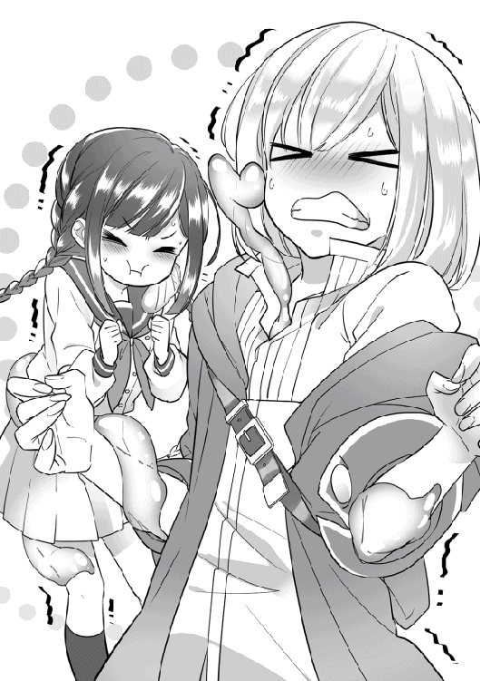
『うっ......ぷぷぷーっ......！ ご、ご主人さまぁ。......［幻覚］かけるねッ？......ぷふっ』
「「よろしくお願いしまーす......」」
おっさんたちの返事には生気がない。おっさんから少女声・上品な青年声が発されたことでリリーが地面に突っ伏してしまった。バタバタと足を動かして、拳で地面を叩いている。持ち直すまで少しかかった。
『............ス、スキル［幻覚］ぅ！』
ようやく発動されたスキルの効果で、赤青のスライム肌は、黒みをおびた肌色に変化した。野良暮らしで荒れた肌に、手入れのされていないボサボサの眉毛と髪をイメージ。ちっちゃいおっさんの姿。この人物のモデルは、そう......まさに、盗賊アーンポーン・コンビそのものであった！
身体が超ムキムキではあるが、ゲスくて、どこかおマヌケな盗賊の顔。主人たちはかなり嫌そうだが......生まれて数日のバタフライは、サンプルとなる成人男性の姿など彼ら以外知らなかったので仕方がない。
「うわぁ」
「幻覚だって分かってても、いざ自分がこうなってみるとキツイなー......」
そんなことを言っても仕方ないのである！
とりあえず、イタズラしたスライムたちには後でおしおきをすることに決めて、レナとルーカは自分たちの動きをゆっくり確認し始めた。１歩、２歩と、手足を動かして歩いてみる。
『......ん、これなら、複数の［幻覚］も......いけそうなの！』
リリーの負担は軽減されたようで、何よりだ。
しかし、数メートルほど歩いた辺りで、主人らの動きとスライムボディがだんだん連動しなくなってくる。スライムたちは普段ぷよぷよと弾んで移動しているので、ヒト族の手足の動きが理解しづらいのだろう。たまにスライムボディからレナたちの本来の手足がはみ出るという、ホラー現象が起きていた。レナとルーカのおっさん化を解いて、一同はもう一度話し合う。
「魔人族として、クレハとイズミ自身がヒト型に慣れてみたら、ヒトの身体の動かし方が分かるかもしれない」
「『『魔人族......？』』」
目をパチパチさせるレナとスライムたちに、ルーカが手短かに説明していった。
「魔物は何度かクラスチェンジして強くなると、最終的にヒト型をとれるようになって、魔人族と呼ばれる存在になるんだ。ヒト族によく似たカラダに、もともとの魔物の特徴......耳や角なんかが足された見た目だね。レナの従魔たちは、まだ１段階しかクラスチェンジしていないから本来ヒト化できないはずだけど、主人のスペシャルギフトの影響なのか、もう変身できるみたい。そう視えてる。試してみない？」
「みんなすごーい......！」
『『『えっへん！』』』
「貴方のギフトもね」
「ヒト化したら、ずっとヒト姿のままなんでしょうか？」
レナが心配したように尋ねる。またスライムに戻れないとそもそも変装ができない。大所帯になって目立つばかりだ。
「いや、魔人族の本来の姿はあくまで魔物だから。自分の意思でヒト型になったり魔物に戻ったりできるよ。彼らがヒト型をとるのはいわば娯楽のためだからね。強くなって知能が上がった魔物たちは、野生の生活だけでは物足りなくなるらしくて。ヒト族の言葉を使って他種族との会話を楽しんだり、服装でオシャレしたりするのが目的だって言われてるよ。あと、予備知識だけど、別種として、ヒト型が本体で魔物の姿に変化もできる、魔人族から固有の種族に派生した者たちもいるのは知ってる？ 樹人族、竜人族、天使族......などだね。それぞれが町や村を作り、こことは別の大陸で生活している。もちろん故郷を出て別の拠点で暮らしている人もいるけど」
「あ！ それはダナツェラギルドの冊子で読みました」
「そっか。そこはまあ、他国のギルドの説明冊子を丸写ししたのかな。......情けないな。......よし、じゃあ、ヒト化の練習を始めようか。リリーのヒト化練習はまた今度にさせて欲しい。まずはクレハとイズミの成長を急ごう。心の準備はいい？ 自分がヒト族になるイメージをしてみると、徐々に身体が変化していくはずだよ」
『『まじかー！ ガッテン！』』
『はーい......。むぅ。また、今度ね......？』
「ワクワクするね。ファイトー！」
『『ごっ主人さまぁーーー！ 頑張るねーー！』』
主人に応援されて、スライムたちはとってもヤル気が出たらしい。［鼓舞］をかけていないが、身体の表面を張りつめさせてプルプルしている。そして、ヒト化をイメージ。身体の中に空気を溜めながら、ぷくーーっと膨らんでいって......えいやーー！
まず、手足がうにょにょーんと形造られていく。次に頭、そして顔。......つまり過程は首なし状態なわけでとてもグロかった。肌がガラス細工のような赤と青なので、断面の生々しさは抑えられていたが、レナはさり気なく目を逸らしていた。
だんだんと、人間の子どものような姿になってくる。
『『......いっくよぉーーっ!?』』
『きてぇーーっ！』
リリーがいつものスライムのおふざけを完コピしている。仲良しだな、とレナとルーカがほんわかする。スライムたちの体が、ふわっと柔らかい光に包まれた。
──光が消えて......まず現れたのは、白くきめ細やかな子どもらしい柔肌。宝石をそのまま櫛でとかしたような、ルビーとサファイアを思わせる美しい髪に、ジュエルの名に恥じない綺麗に整った顔。性別不明なスライムだけあって、男女どちらにも見られる容姿である。見た目年齢は５歳くらいだろうか？
▽クレハと イズミは ヒト化の術を 取得した！
《従魔：クレハ・イズミが魔人族として承認されました！》
《称号：［魔人族］が追加されました》
《ギルドカードを確認して下さい》
「「じゃじゃーーーん!!」」
スライムたちはとても嬉しそう。久しぶりに世界の福音を聞いたレナだったが......今はそんなことにかまっている余裕はなかった。ヒト化したばかりの従魔はまっ裸なのである。
「......きゃああぁーーっ!? ふ、服きて服きて服ぅーーっ!?」
「「やーーーん☆」」
１人きりで真っ赤になって、自らの鞄にあったシャツを大急ぎでクーイズにかぶせるレナ。ボタンをはずす手間も惜しかったらしく、頭からズボッとかぶせ込む。
▽幼児クレハと イズミは 裸ワイシャツ姿だ。
▽とてもいけない感じがする......
しまった、悪化している。しかしこれ以上はどうしてやりようもない。
「くっ......！」
オーバーリアクションで頭を抱えるレナはどこまでも保護者だった。うちの子達がこんなハレンチな格好をしてしまっているなんて！ と、嘆いている。ルーカの持っていた着替えのズボンは今は旅人の変装用に使われていて、これ以上衣服の予備はない。見えてはイケナイ部分はなんとか隠れているので、妥協するしかないだろう。まあ、スライム魔人族は必要に応じて男女の身体的特徴を具現化させられるという特徴を持つので、現在はどちらの性器も存在しないのだが。
２度目になるが、裸ワイシャツ姿を気にしているのはレナだけである。当の本人たちはすでに２本の足で歩いてみたり、ジャンプしてみたりと魔人族の身体を楽しんでいる。
「「あっ」」
「きゃーーーーっ!?」
たまに、慣れない魔人化が中途半端にとけて、顔や身体の一部がでろーんと崩壊しかけてしまう。ゾンビーー！ 今は肌もなめらかなヒト肌仕様なので、年齢制限もののグロさである。慌てたり、落ち込んだり、小声で叫んだりとレナはとても忙しそう。騒がしいレナたちを見て、グロ耐性が高いリリーは再び湧き上がってきた爆笑を堪えるため、地面を転がっている。
しばらく練習したら、スライムたちも随分と新しい身体に慣れたようだ。最初は動きがカクカクしていたが、今は違和感なく自然に歩いてみせる。試しに再度レナたちに張り付いてみると、問題なく動きを合わせられた。
リリーがギルドカードにも［幻覚］をかける。さあ......いくぞ！ と、皆は気合いを入れた。
......ここからは失敗の許されない一発勝負。自然と顔つきも真剣になる。
作戦をまとめておこう。まず、レナ・ルーカ・スライムたちが冒険者姿で検問を突破する。その間、リリーは現在地から皆に［幻覚］をかけ続けて、レナたちが草原のどこかに隠れたタイミングで壁を飛び越えるという計画だ。当然、壁近くを飛ぶ際には、リリーは自分に［幻覚］をかけることになる。国境外での合流となるのだ。姿を消したリリーも一緒に検問を突破できれば良かったのだが、集中できなくなっちゃう、とのことで別行動となった。
現在地付近をもう一度、しっかり入念に索敵しておく。強い魔物も不審者も見当たらない。
☆
街道を、小柄なおっさん２人が迷いのない足取りで歩いていく。怪しまれないように、堂々と。
自分はアンポン、自分はアンポン......！ と、ルーカが読み取っていた名前で自己暗示をかけつつ、一定の速度で足を動かし続ける。改めて、ひどいネーミングセンスである。
分厚い赤茶色の壁がどんどん近くなってきた。ついに国境門に辿り着いたのだ......緊張が高まる。
検問のため、数人が列をなしていた。心臓をバクバクと鼓動させながら、アンポンはおとなしく自分たちの順番を待つ。いかにもヤル気のなさそうな門番たちが、旅人たちをぼんやりと観察していく。比較的身なりのいい者が通った時には、瞳をギラリと光らせ何やら耳打ちしている。口八丁で袖の下を要求したのかもしれない。貧乏人の手にした土汚れのひどい金銭は嫌っているらしく、舌打ちしてほぼ素通りさせていた。
列は順調に進み、やがてアンポンの順番がまわってきた。ヒビ割れのひどい大きな手で、受付の男にギルドカードを手渡す。
「......んー」
......ピクリ、と、男性の奇抜なオシャレ眉がはね上がる。アンポンもドキッと心臓を跳ねさせる。
ギルドカードには［幻覚］がかけられて、情報が偽られている。どうか違和感を持たれていませんように！ と、アンポンは心から祈りながらなんとか無表情を保つ。下手に演技などすると、ボロが出てしまうだろう。取り繕うため、声を出すわけにもいかないのだ。レナの少女声も、ルーカの明らかに上流階級の声質も、くたびれたおじさんから放たれるものとしては異常である。ひたすら黙り込んで、受付の顔を見つめ続けた。
カードはなかなか返されない。数分が数時間にも感じられる。早く、早く......！ と、焦るアンポンの背に嫌な汗がにじむ。
やがて門番は、緩慢な動きでギルドカードを旅人もどきたちに返却した。アンポンは慎重にカードを受け取る。ついでに冴えないおっさん達をからかってやろう、とでも思ったのか、門番は余計な言葉を付け足した。
「ちッ。カード項目、クローズされてやがるなー。つまんねーの！ ガララージュレ王国で冒険者デビューしたわけじゃなかったのかい。はいはい、どーぞどーぞ。通ってっていいぜ」
「「！」」
アンポンは表情を動かすことなく、頭を下げる。門番がニタリと笑い、イスの背もたれに体重をかけた。ギッ、と音がなる。薄汚れたおじさんたちに見せつけるように鼻をつまむ。
「なぁー。それにしてもあんたらのステータス値、随分しょぼいよなあ？ その筋肉はお飾りかい。そんなんで冒険者業してて、よくこれまで死ななかったもんだぜ、くっ、ぶふふっ！ くっだらねぇー！......無反応かよ。......へっ。その格好も顔面も美しくなくて、見ててすげー不快だからよーー。さっさと門通ってって、失せてくれや？」
「「......」」
言い返さずに、口を引き結んで再び受付に頭を下げるアンポン。門番は眉を顰めてつまらなそうに舌打ちをする。しっしっ、と手で追い払う仕草をして、大きなあくびをした。冴えないおっさんなどにもう興味はないらしく、後方に並んでいた商人らしき人物を目ざとく見つけて、いやらしく笑った。
アンポンの太く逞しい足が一歩前に出される。ザ、ザ、と、ろくに掃除もされていない砂にまみれた床を踏みしめて歩き出す。瞳は乾いており、緊張の絶頂だった。わざと汚したローブの裾も巻き上がる砂で、さらに埃っぽくなってしまう。後ろは一切振り返らない。
チラリと横目で見た他の門番たちは、荷馬車もちの商人に夢中。自分たちに視線を向ける者は......いない。服をかなり汚しているので、視界に入れるのも嫌がられているのだろう。
他の旅人たちには軽く会釈をして、横を静かにすり抜けていく。
そして......アンポンの目の前いっぱいに、草原のみずみずしい緑色が広がった。
──レナたちはとうとう、門の外へと足を踏み出した！
▽国境を 越えた......！
一歩進むたび、ようやく国から逃亡できたという安堵感で崩れ落ちそうになる。自分の心をなんとか奮い立たせながら、ギリギリの精神状態で歩いていく。アンポンは感動しながら、緑豊かな大地を踏みしめた。青い空からそそぐ光がやけに優しくて泣きたくなる。ようやく瞳を潤ませた。もう、これで、追っ手に追われることもなくなるのだ......。
毎日、捕まる恐怖に怯えなくてすむという当たり前のことが、なんてありがたいんだろう。
......はあっ、と、溜まっていた重い息を吐き出したポーン。隣を歩くもう１人が、涙をひとしずく流しながらにっこりと笑いかけて、何も言葉はかけずに、ポンポンと軽く肩を叩いた。
しばらくの間、２人は無言で足を動かし続ける。
草原を吹き抜ける風が、おじさんたちの荒れた肌を撫でていく。
門番はもう冴えない男らなど見ていなかったが、警戒はしばらく続けておいた方がいい。安全が保証される距離を歩ききるまで、旅人の演技をしておくつもりだ。
......門がだいぶ遠くに見える距離まで歩いてきた。索敵して、アンポンはモンスターのいない草原の一角に隠れる。ちょうど低緑樹が群生している、隠れるには最適な場所があった。
アーンが、ポーンの瞳をじっと見つめて［テレパシー］を使う。
「（......本当にお疲れさま。ここまで来たら、もう大丈夫だと思うよ。リリーを呼ぼうか）」
「（はいっ......！）」
話しかけられたポーンは、まだ緊張が抜けず顔を強張らせている。旅の仲間たちが全員揃うまでは心から安心できないのだろう。早くリリーに会いたいと気持ちが急いでいたため、アーンの言葉を聞いて嬉しそうにぱっと顔をほころばせた。
すうっと、息を吸い込んで......わずかに震える少女の声で、スキルを発動させる。
「──スキル［伝令］。......リリーちゃん！ 私たちは無事に国境を越えることができたよ......！ あなたが頑張ってくれたおかげです。本当にありがとう、お疲れさま。こっちにいらっしゃい」
ガララージュレ王国の国境壁を、４名の逃亡者が真剣な表情で見つめていた。
ポーンの姿はいつの間にやら、筋肉ムキムキの小汚いおじさんから可憐な少女へと変化している。アーンも同様。変装を解いていた。スライム達なりの、ご主人さま大好き！ なリリーへの気遣いである。おじさんのままではなく、元の美少女姿の方が喜ばれるだろうと考えたのだ。
結果を言っておくと、このリリーへの気遣いは大正解で、スライムたちはあとでお礼を言われた。
......レナの首筋に目視できない小さな手が触れて、ほんのりとした温かさを伝える。おそらく、レナのすぐ目の前か後ろに、リリーがいるのだろう。そのままあえて動かずに反応を待っていると......きゅーーっと強く抱きしめられた。
「リリーちゃん！」
『......っご主人さまぁーー......！』
可愛い従魔に、主人と呼ばれて。レナはようやく目の前の空間を、優しく優しく抱きしめ返してやった。リリーが感情を出しきれるまで待っていたのだ。
身長50センチほどの美しいフェアリーが、うっすらと光をまといながら草原にフワリと現れる。まるで物語の一場面のような幻想的な光景。
１人きりで王国内に残ったことも、［幻覚］をコントロールし続ける緊張感も、主人たちの姿が見えなくなってしまったことも。とても不安だったのだろう......。リリーの大きな青い瞳はうるうるしていて、今にも涙がこぼれ落ちそう。
レナも同じ気持ちだ。今まで不安でたまらなかった、皆と一緒に国外に出られて嬉しい。
妖精契約の印が消えてしまったことで、泣き虫は復活して、目に大粒の涙を溜めていた。
しかし、泣く前に感謝の気持ちをきちんと伝えなくちゃ！ と、なんとか気力で堪える。頑張って笑顔を作ろうとして、しかし結局、涙がこぼれ落ちてしまった。肩に登ってきたスライムたちがそれを吸い込んでくれて、「ああ、私は幸せ者だなぁ」と、レナは頬を染めて嬉しそうに微笑んだ。
ここに無事でいることを確認するように、何度も何度も、主従は頬をすり寄せあう。
レナが口を開いた。
「みんな。お疲れさま......！ ここまで私に力を貸してくれて本当にありがとう。クレハ、イズミ、リリーちゃん。貴方たちがいなかったら、私はきっと早々に追っ手に見つかってたか、魔物の餌になってたと思う。何度も助けられたね。ルーカさん。色々と知識を授けて下さって、戦闘・索敵の手助けもしてくれて、ありがとうございました。貴方は大切な仲間です。今、こうして皆といられてすっごく嬉しいよぉ......！ ぐすっ、ようやく、これからは安心して旅ができそうだね」
皆で顔を見合わせてふふっと笑う。ルーカがまず、言葉を返す。
「レナもみんなも、長い間お疲れさま。......本当に逃げ切れたね......夢みたいだ。『逃亡が成功するまで』って言葉を交わした妖精契約印が消えたんだから、もう、本当に安心していいんだと思う。世界が認めたということだから。......色々とありがとう......！ 物心ついてからずっとこの日を夢見てきたけど、なんて素晴らしい気分だろう。僕も、もちろん貴方たち全員にすごく感謝してる。自分１人では、きっと逃げきれなかったよ。うん、ほんとに嬉しい......！」
従魔たちが目をパチクリとさせてヒト族２人を見上げた。
『『ご主人さまもルーカも、笑ってるのに泣いてるーー』』
『これが噂の、嬉し涙......？』
『そう言われると、悲しくて泣いてる時よりもキラキラしてる気がしますな！』
『幸せが溶け込んでるのかなー。って、じゃあ流れちゃだめじゃーん！』
『......クスクスッ！ 輝いているのは、涙じゃなくて、笑顔......ということ。どう？』
『『なぁるほどーー！』』
レナとルーカは従魔たちの言葉を聞いて、クスクスと声を漏らして泣きながら笑う。幼いモンスターたちはこの時初めて、幸せすぎると出る涙を知ったのだ。
従魔全員で、得意げに胸を張る。
『ふふん、魔物の底力見たことかー！ どんなもんじゃいっ』
『２人の感謝の気持ちはたくさん受け取ったよー。でもでも、イズたちだってもちろん感謝してるのよー？』
『皆で、旅できて......とっても楽しかったの。それに、悪い奴らを引っかきまわして、やれたもん。んっ、いい気分！......えへへっ』
『『『ありがとー！』』』
「「あははっ！」」
みんなでお腹が痛くなるまで、思いきり笑った。
従魔たちも泣いてみたくなったらしく、嬉し涙に挑戦する。スライムたちは身体の表面を盛大にプルプルさせており、リリーは涙をこぼして、ずぴっと鼻をすすった。後輩の方が泣くのは上手だった。
国外逃亡が成功して、レナ、クレハ、イズミ、リリー、ルーカは、ついに何者にも囚われることのない自由な未来を手に入れた！
皆、輝かんばかりの晴れやかな笑顔だ。しかしただ能天気なわけではなく、頭の中には、ガララージュレ王国で学んだ様々なことが教訓として深く刻み込まれている。この辛く大変だった経験を糧にして。これからラナシュ世界全土を逞しく旅していくのだろう。後に世界にその名を轟かせる人物になる......かもしれない。
１つ目の「妖精契約印」は、逃亡が成功したと判断され消えた。
２つ目の印は、レナがルーカに［身体能力補正］スキルを返した時に消える。
ルーカは、次のモンスターテイムを終えるまではレナにスキルを貸しておいてくれるそうだ。「いきなりスキル補正がなくなって、それでテイム失敗しちゃっても後味が悪いからね」と笑顔で毒を吐いてみせた。ツンデレだろうか。
感激したレナが深ーく頭を下げてお礼を言う。ストレートに運動能力が不安と言われていることについては、もう自分でも認めているから別にいいらしい。
レナたちは次なる目標を達成するため、草食モンスターの生活する草原の中央部へと向かった。
ガララージュレ王国と隣り合う広大な草原には、比較的おとなしい草食の魔物が多く生息している。ウサギ種・ヒツジ種が特に多く、肉食もしくは雑食のものは、ヘビ種・ネズミ種・イヌ種・スライム種などが見られる。
レナたちがテイムを目指す羊モンスターは、「居眠りヒツジ」「丸ヒツジ」「ステルスシープ」の３種のどれかになりそうだ。これらの羊はなかなか毛質が良いのだとか。
ちなみに「ヒツジ」と「シープ」の表記が混じっているが、これは第一発見者がそれぞれ思い思いにつけた名称というだけで、特に深い理由はない。ラナシュ世界の言語は現在は統一されているのだが、昔はいくつかの種類があったそう。その時代の名残で、ウサギ１つにしても、「ウサギ」「うさぎ」「兎」「ラビット」など様々な表現がその時々でなされている。
草原の片隅に草を食べている白いヒツジを見つけたレナが、ルーカに声をかけた。
「あの子はどうでしょうか？」
さっそくルーカが魔眼でヒツジを鑑定するが......希望とするスキルを持った個体ではなかったらしい。首を振っている。しかし丁寧にステータスを教えてくれた。
「あの個体は丸ヒツジの♀、レベルは２。スキルは［治癒］と［ステップ］持ちで、ギフトはなしだね」
「んー、大きくなるスキルは持っていませんでしたか。残念。草原も広いですし、望む能力を持った子を探し出すには、ちょっと時間がかかっちゃうかもしれませんね......」
レナの言葉に、ルーカがクスリと笑う。
「普通なら、限りなく種類のあるスキルの選別なんてやってられないんだけどね？ 貴方の幸運さなら、いける気がしてるんだよ」
「えっ。......期待が重いです！」
『『『レーナ！ レーナ！』』』
「ちょっ!? もぅ。そこで乗らないでよーー」
『『アハハーー♪』』
『クスクスッ』
「本当に愉快な子たちだよね」
「ルーカさんのからかい方も、たいがい愉快ですよ」
「なるほど、もっと？」
「ごめんなさい」
国境門で緊張しまくっていた反動だろうか。草原を歩む一同はこれまで以上にわいわいと楽しそう。次から次へと愉快なかけ合いが止まらない。誰かがふざけてはおかしそうに笑う。
もちろん、きちんと索敵して魔物の不意打ちにそなえている。スペシャリストが２人もいるのだ。ルーカとリリーは自分たちを狙っている魔物の視線を察知し、進路を誘導する。レナ、クレハ、イズミが後ろに続き、周囲をキョロキョロ見渡して羊モンスターを探していた。
ヒツジの毛色は白が一番多くて、時々、黒やベージュの個体も見つかった。モンスターの種類によって毛色が違うのではなく、個体差があるらしい。途中、青い毛のヒツジを見つけて皆で大はしゃぎしていたら［突進］されて慌てて逃げた！ という珍事件もあった。珍しい肉食の「進撃ヒツジ」だったのだ。ある意味大当たりである。
足元のヘビや虫にも気を配りつつ、ヒツジを鑑定しまくっていると......ついに、望んだ出会いがやってきた！
探索を始めてからだいたい４時間後のこと。めちゃくちゃ早い。レナの幸運の大勝利である。本当に理想個体が短時間で見つかってしまうだなんて、と、皆が驚いた表情でレナを見つめた。
「いや、そんな顔で見られてもですね......？」
レナは困った顔をしている。
異世界に来たらなぜか運がカンストしていたというだけで、努力した訳でもないし、向けられる視線がむず痒いようだ。......けして、運が底辺なルーカ先生のジト目が気になったわけではないのだ！
そんなレナの気持ちは皆もよく理解している。それでいてなおレナを見続けている。
※もしかして：からかわれているだけ。
「あの子の詳しいステータスを教えてもらえますか？」
話を進めよう。
「うん。......すごいよ？ 居眠りヒツジの♂、レベルは６。黒魔法の適性がある。スキルは［体形変化］、［駆け足］、［快眠］、［周辺効果］。ギフトは【☆５】［鈍感］。知力と運のステータスが高めで、性格はのんびり屋さんみたいだね」
「うわぁ!? なんだか、至れり尽くせりなステータスですね。なんてベッドに最適そうな子なんだろう。ふっふっふ」
「すごい幸運さだよね」
「ジト目！」
『あの子が仲間になるのー？』
『ふむふむ。毛がフワフワしてそうで、思わずお腹に埋もれたくなっちゃう羊くんですなぁ〜』
『生ベッド......。じゅるり』
自重していないリリー。彼女なりの冗談なのだろう。
目当ての羊はのんびりと木陰で眠っていた。毛色はスタンダードな白一色。よほど深く眠っているのか、頭に落ち葉が積もっていることにも気付いていない。カサリと風にあおられた落ち葉が鼻をくすぐっても、ピクリとも反応しなかった。
いくら性格が「のんびり屋さん」とはいえ、この子は大丈夫なんだろうか......？ とレナは少し心配になったが、今までテイムした魔物たちもかなり個性的な性格の子ばかりなのだ。それなら、この羊ちゃんも同じなだけかと考え、恐れるものなど何もなくなった。にへらと微笑む。親バカが極まってきている。我が子たちのちょっぴりダメな所は可愛いし、甘えてくる所は愛おしいのだ！
ルーカの呆れた視線がレナに突き刺さり、レナはごほんと咳払いして話題を変えた。
「モンスターテイムのための作戦を相談しましょう。まず、私がおとりを」
『......さすがに、［駆け足］持ちは、危ないよー！......動きを、止める方法が......あるなら、なんとかなりそうだけど。［魅了］してみる......？』
「あの個体の場合は美しさに興味がないし、その性格がギフトの［鈍感］でさらに補強されちゃってるから、とても可愛いリリーの［魅了］でもほとんど効果がないと思う。ギフトレア度もかなり高いからね......超鈍感くらいに思っておいた方がいいだろう。［鈍感］ギフトは、色々な痛みに鈍くなるのと、精神力強化の効果があるんだ。その代わり、一度メンタル面を崩されたら反動で混乱する」
『『おやおや、［溶解］をお望みかなっ？』』
「......羊くん、死んじゃうよーー！」
「うーん。魔物使いのテイム方法で、部外者が手伝えないって縛りがあるから、私と従魔のみでなんとかする方法を考えなくちゃいけないんだよねぇ」
さっそく話し合いは暗礁に乗り上げてしまった。モンスターテイムをする場合は、ルーカの戦闘力をアテにはできない。選べる選択肢は多くない。
テイムしたい相手が有益なスキルを持っているほどテイムの難易度が上がるのは、魔物使いの難しいところなのだ。不遇職と言われるだけある。レナが現在、魔物使いとしてなんとかやっていけてるのは、ひとえに規格外なギフトを持っていたからだ。普通なら、弱いモンスターをテイムした所で成長させるのがまた大変なのだから。
そんな幸運な新人魔物使いレナは、ふと「あっ」と呟いた。作戦について考えていたら、何やらピンと来たらしい。それぞれの適性魔法について、従魔たちに問う。
「みんなは今、魔法ってなにが使える？」
『クーは、フレイム！ 燃やしちゃうぞー！』
『イズは、アクア！ 冷やしちゃうぞー！』
『むぅ。......私は、まだ、魔法は使えないんだー......』
「そっか、ありがとう。......うん。......いけるかも？ リリーちゃん、［幻覚］スキルで後方支援をお願いしてもいいかな？」
『！......それなら、まかせてっ。得意なの』
ちょっぴり落ち込んでいたリリーはふわっと宙に浮かび上がり、嬉しそうにくるりと踊った。単純......しつこいのでもうやめておこう。
「レナ。取得した魔法について確認したいなら、ギルドカードの適性魔法項目をタップしてみるといいよ」
「あ。本当だ、触れたら表示が追加されましたね。へー、こうして確認できるんだ。教えて下さってありがとうございます」
「どういたしまして。この間はさらっと説明しただけだったから、カードについてまだ教えきれてない部分があるね......ふむ」
これまでレナたちがあまり使ってこなかった「魔法について」、ルーカ先生の解説が始まった。
『『ぱふぱふーーっ』』
「魔力を使って術を発動させるのはスキルも魔法も同じなんだけど、基本的には魔法の方がスキルよりも燃費が悪くて、集中力が必要になるんだ。同じような威力と内容の魔法を使うなら、スキルを選択した方がいいって覚えておいて。魔法の良いところは、技の自由度が格段に高くなること。例を挙げると、イズミがアクアの呪文１つで身体を冷やしたり、水を出したりできるのはそれが理由。
まずオリジナルが魔法。それがショートカットされて固定の技術になったものがスキル。......って言えば分かりやすいかな？ だから、職業・魔物種族に関連しないスキルは、個人の魔法適正が反映されたものを取得しやすい。
ヒト族の職業「ウィザード」についても説明しておこうか。ウィザードは魔法の扱いに職業補正がかかる。魔法本来の燃費の悪さを解消し、さらに自分らしく自由に魔法を使うことができるという職業。その代わりに、魔法の短縮系であるスキルはほとんど覚えない。覚えるのは［魔力消費軽減］などのスキルくらいだね。あと、ステータスの体力値などが上がりにくいみたいだよ。魔法を使う時、集中する必要があるから、冒険者ならば他の職業の者とパーティを組むことが必須になる。一長一短だね。ラナシュには、この職業につけば最強確定なんて職種はないんだ」
「公平なんですね、ラナシュ。不思議な世界だなぁ。丁寧な説明ありがとうございました」
『『ぱふぱふタイム終了なりーー！ うっふん』』
話を聞き終えたレナが、こしょこしょっと皆に作戦を耳打ちする。
それは驚くべき内容で、従魔たちがいたずらっ子らしいにんまりした笑みを浮かべる。
今回の作戦で使用するのは、魔法の「フレイム」と「アクア」、そして［幻覚］スキル。あとは、レナの演技力が鍵となる。
ルーカが呆れを通り越して感心したように呟いた。
「よくもまあ、そんなに次から次へと奇抜な作戦を思いつくものだね......本当にすごいなー」
「そうでしょうか？ 私の故郷は娯楽に溢れていましたから、その影響かもしれません。だいたいみんなこんな感じですよー」
それはない。
「そっか。......また、貴方の故郷の話を聞かせてくれる？」
「はい。んー......そんなに気遣って言葉を選んでもらわなくても大丈夫ですよ、ルーカさん。私、今は結構幸せだと思ってるんです。側には可愛くて頼りになる子たちがいてくれて、ご縁にも恵まれていますから。ね！......ん？ あれ。そういえば、ルーカさんは私の思い出を全て覗いたそうですし、故郷についてもうかなり詳しいのでは？」
「レナの口から直接聞いてみたいと思ったんだよ」
「おや、上手くごまかしましたね！ でも顔ひきつってますよ！」
レナはおかしそうにぷふっ！ と吹き出す。失言したルーカはきまりが悪そうにふいっと視線を逸らして、従魔たちをレナの膝の上にぽんぽんぽーんと乗せた。あからさまに場をごまかそうとしている。スライムたちがうりうりとレナのお腹にソフトタックルする。
『『レナさぁーん、構ってぇー。我らにも極上の笑顔を下さいなぁー、ああーーん！』』
『......ヒツジ調教の、準備、する？』
「クレハとイズミは構われたがりだねー。ふふふ、とっても可愛いよー！ でも、そうだね。そろそろ準備も始めなくちゃ。みんな、手伝ってくれる？」
『『『はーーーい！』』』
「ヒツジを火あぶりにする準備か。恐ろしいな......」
調教に火あぶりという異常極まりない言葉の羅列。一体、レナが企てたのはどのような作戦なのだろう？ モンスターテイムを目指しているはずだが。とてもそうは見えない。クレハとイズミがぷるぷるっぷちーーん、とスライムジェルを作り出し、リリーはせっせと落ち葉を集め始める。
......レナは鞭を片手に、怪しくニヤリとわらっていた。
「さあ......狩りのお時間です！」
レナが張り切って号令をかける。ヒツジがぐっすり眠っている間に、仕留めるための準備はバッチリ整った！ おや？ レナの発言は明らかにテイムの趣旨に沿っていない。しかし、今回はこれでいいのだ。レナが悪役らしい立ち振るまいをすることが、この作戦のキモなのだから。
ヒツジを極限までビビらせ、混乱させよう！ そしてあちらからの従属申請を誘おう。というのが、今回の「ドキドキ！ 火あぶり大作戦」なのである！
事前準備として、潰したスライムジェルとアクアの水を混ぜたものが水筒に入れられている。姿を消したリリーが落ち葉を抱えて、ヒツジの頭上にスタンバイした。イズミはぐにーんと地面に伸びており、［超硬化］の指示にそなえている。クレハはレナの鞭にぴっとり貼り付いて、興奮から、赤い体をさらに赤く染めあげていた。
「スキル［鼓舞］！」
従魔たちのテンションがぐーん！ と上がる。ルーカが、周りの別モンスターの警戒はまかせてね、と手をヒラヒラ振った。いってらっしゃい。それを確認した主従がこっくりと頷く。
さあ。作戦開始と洒落込みましょう！
レナの鞭が鋭くうなって、ヒツジのすぐ目の前の地面を浅くえぐった。
──ピシイィッ!!
▽戦闘開始！
鞭は威力こそあまりないものの、悪役になりきったレナの殺気を正面から受け止めた居眠りヒツジは、じっとりと目を覚ます。眠りをジャマされてそうとう不機嫌そうだ。ゆっくりと顎を上げた。その様子を目を細めて見つめたレナは、凄絶に笑った......。
▽ヤバそうな少女が 現れた!? （ヒツジ視点）
さすがの居眠り羊も驚いている。起きがけにすごいものを見てしまった。
レナは間髪入れずに、再びニヤリと怪しく口角を上げてみせる。ここでキメ台詞！
「私は絶対に貴方を従えたいの。逃がさないからね！ 覚悟なさい......スキル［従魔契約］ッ」
レナなりの、精一杯のこわーく魅せる演技だと言っておこう。
ヒツジの目の前に輝く契約魔法陣が現れる。ヒツジは目を見張って魔法陣を見つめた......魔物使いとの契約印など見たのは初めてだったが、魔物としての本能が、コレの性質を正しく認識していた。
なるほど、自分を従属させるつもりなのか。と、ヒツジの機嫌がいっそう降下する。
のんびり気ままな生活を好んでいるこの居眠りヒツジは、何かに縛られるのが大嫌いだった。集団行動をとることが多い草食ヒツジたちの群れからも、上下関係のルールを窮屈に感じて、逃げ出したほどである。普通のヒツジならばそれは自殺行為だが、彼は強者だった。今日まで１匹でやってきてなんの不満もなかったし、誰かの支えが必要なほど弱くもない。鈍感思考のヒツジは寂しさも感じていない。
そんな自分を、どうしても従えさせたいというのなら。
──満足させられるだけの力量を示してもらわなければ、認めない！
▽居眠りヒツジは 臨戦態勢になった！
ギッ！ と強い光を目に宿し、今までののんびりした様子が嘘だったかのように興奮して、鼻息荒く魔法陣をくぐり抜ける。
草食獣は比較的大人しいとはいえ、やはり魂は魔物だ。気に食わない敵意を向けられたなら、威嚇の意味も含めて好戦的な姿勢を示す。
緊張感で一気に空気が張りつめ、お互いにひゅっと息を飲んだ。レナは己の心を励まし、すくみそうになった足をしっかりと地につける。１人きりじゃない。恐ろしい悪役を演じるのが、今のレナの役目。これは仲間との連携作戦。
この居眠りヒツジは、低レベルの魔物としては相当規格外な能力を持っている。
いつものように巨大化してレナを踏みつぶそうと考えて、ザ、ザ、と何度か足踏みをした。
相手が少女であることと、己の戦闘力を正確に自覚しているため、どこか余裕がある。レナの動きを静かに見つめて観察している。
ヒツジは知らなかったが......ヒツジのスキルにギフト、あらゆる手のうちは、魔眼で事前に全てバレて分析され尽くしていた。彼が強いことをよく知っていたレナたちは、一瞬で勝負を決めるつもりでいる。
卑怯なのではない。命をかける戦闘においては、確実に勝つためにあらゆる手を使うものだ。
おそらくヒツジが今考えているであろう、巨大化も［駆け足］もさせない。
レナたちが動く。
「イズミッ！」
『はーーーいっ！』
レナが号令をかけた瞬間、イズミがすぐさまヒツジの足元へと滑り込んでいく。
『スキル［超硬化］ー！』
そのまま身体をダイヤモンドのように硬くして、ヒツジの足全てを地面に縫い付けてしまった！
▽居眠りヒツジは 動けない！
大きくなりかけていた足が、元の小柄な時の配置で固定されたため、ヒツジは体勢をくずして膝をつく。巨大化するタイミングが少しだけ遅れた。
──この時点で、勝負の行方はもう決まっていたのだろう。
ここが決まれば。あとは、たたみかけるダケ。
レナの悪どい笑みが、よりいっそう深くなった。計算通り！ 派手に鞭をしならせる！
「『炎の鞭！』」
そのような技は取得していない。つまり完全なハッタリなのだが、技名を言ったタイミングでクレハがフレイムを発動させて、即席の炎鞭っぽいものを作ってみせた。事情を知らないヒツジは、まんまとこれを本物の魔法鞭だと錯覚した。
レナは借りものの［身体能力補正］を存分にいかして。ヒツジの体に絡まっている落ち葉を炎鞭で狙う。ピシッ！
ボボッ！ と落ち葉へ炎が移り、小さな火種はしだいに成長して、白い毛皮をじわじわ焦がしていく。
『〜〜〜〜ッ!?』
たまらず、ヒツジはごろごろ転がって落ち葉を振り払おうとする。火ダルマのヒツジを、更なる悲劇が襲う......。次の指示が出された。この時点で、イズミはもう主人の元に戻っていた。
「火力追加ぁーーー！」
『『『おおーーーっ！』』』
むごい。
バシャッ！ と、レナがいつの間にか手にしていた水筒から、スライムジェル水を火ダルマのヒツジにぶち撒けた。タイミングを合わせて、空中待機していたリリーが、両手に抱えていた落ち葉全てを火種目がけて降らせる。
瞬間............ボボボボッッ!! と、ジェルにまみれたヒツジの体が、煌々とした炎に包まれた。
これはひどい。スライムジェルは、可燃性の液体だったのだろうか？
毛のない顔や足、角はかろうじて無事。しかしなまじ視界が確保されているぶん、余計に炎を恐ろしく感じているだろう。逃げ道を探して、ヒツジのつぶらな瞳はせわしなく周囲を見渡す。だが......退路など見つからない。たまらず叫ぶ。
『ーーーーッ！』
声にならない声を上げた。......それでも、ギフトにより精神力が補強されたヒツジは今だにレナをきつく睨めつけている。レナは唇をきゅっと噛み締めた。
（この状況でまだ心が折れていないなんて、さすがレアギフト持ちの子だね......。でも、もう相当ギリギリなはずだよ？ 戦術を考える時間も、反撃する隙も与えてあげないから。だって、私たちは貴方にどうしても仲間になって欲しいの！......さあ。優しくするから従ってねー？）
この惨状を作りあげたうえで、今度は優しくとは。レナには隠れたドＳの才能でもあるのだろうか？
レナは更なる恐怖を与えるために高笑いしてみた。
「アーッハハハハハーーッ！」
童顔と少女の声ゆえ、冷静に見てみれば大した迫力はないのだが、［幻覚］の炎をバックにした振りきれた狂いぶりはなかなか恐ろしい。後方から戦闘を見守っていたルーカがドン引きしている。
ヒツジは転がりかけた姿勢のままピキンと硬直して、目を見開いてレナを見つめていた。
ビシッ！ バシッ！ と地面に鞭が打ち付けられるごとに、リリーが［幻覚］で鞭打たれた場所に火柱を作っていく。ヒツジの視点で見たレナは、もう炎の女王様状態だ。
周囲一帯は、火の海（※幻覚）。
この状況下で、炎の勢いを加速させる液体をかけられているヒツジはもう、巨大化しようが［駆け足］しようが、ジンギスカン確定だろうか。......さすがの［鈍感］ギフトの精神強化がもったのも、ここまでだった。
▽居眠りヒツジは 激しく 混乱している！
混乱と丸焼きへの恐怖で、凛々しかった瞳は悲しく揺れている。
勝負は決まった。
もはや火を消そうと転がる気力もなくしたのか、ヒツジはぶるぶると震えながら懇願するようにレナを見上げる。レナが数歩、ヒツジに歩み寄る。満足げな表情でにっこりと笑いかけて、左手を高々と上げてみせた。その手のひらの上には、アクアの水をこれでもかとまとったイズミが乗っかっている。
「どうか、間違いのない選択を。お利口さんな貴方なら、できるよね？」
ここで一呼吸。ヒュウ！
「こっちにいらっしゃい。お水が欲しいよね。私は貴方が欲しいのよ」
......パーーーフェクトッ!! 完璧なサディスティック女王様であった。あっぱれ！
『『『従えてぇぇーーーッ！』』』
女王様のあまりの完成度の高さに、すでに従魔になっている３名ももれなく釣られた。
ベルの音が高らかに鳴り響く。
〈［従魔契約］が成立しました！〉
〈従魔：居眠りヒツジの存在が確認されました〉
〈従魔：居眠りヒツジのステータスが閲覧可能となりました〉
「......やったぁーー！」
即行、普通の女子高生に戻ったレナが、小躍りして喜ぶ。ベッド！ ベッド！ ぴょんぴょんと小さくジャンプすらしている。主人に合わせて、先輩従魔たちもコミカルなダンスを始めた。くるりくるり、腰をキレ良くくいっ、きゅっきゅっ！
先ほどまでの女王様っぽさとのギャップに、新たに仲間に加わったヒツジは目を白黒させている。きちんと説明する必要があるだろう。ルーカが冷静に場の収束を促す。
リリーがようやく炎の［幻覚］を消しさり、イズミがアクアの水でヒツジの毛にまとわり付いていたジェルを洗い流した。洗われたあとの白い毛は、なぜかほんの少し毛先がコゲているだけだ。瞳をパチクリさせて、ヒツジは自らの濡れた白毛をまじまじと眺めている。
『どうして......？』
レナがまず「驚かせてごめんね」と謝り、しゃがんでヒツジに目線を合わせて話しかけた。
「さっきの戦闘について説明しようか。聞いてくれる？」
『......うん』
「いい子ね」
レナがヒツジの首元の毛を撫でる。避けられなくて、ホッとした。スライムがぷるりと揺れる。
『『ぱふぱふーー！ 説明ターイム！』』
「まず、炎鞭で最初に貴方に移した火種は本物だった。そして、その火種をトロッとしたお水で消した」
『？ あれ、消してたの？ でも......火が大きくなったよー......？』
ヒツジが頬を膨らませて、拗ねたようにレナを見上げた。レナは苦笑する。
「順番に説明していくね。あのお水はスライムジェルってアイテムを混ぜて作ったの。スライムジェルは発火性のものじゃないから、火は消えたんだよ。水の粘度が増して、貴方の毛にしっかり絡んだから、お水がその後の炎から体を守った。うっすら層になったジェル水の上に、別の落ち葉を落として、また炎の鞭で燃やす。落ち葉を燃やした炎は水に遮られて毛を焦がさなかったけど、貴方に熱を感じさせた。この時、貴方はとても焦ってたんじゃないかな？ そして、周囲に［幻覚］の火柱を出現させた時、熱のない火柱を偽物だと見抜くことができなくなっていた。本物だと錯覚しちゃったの」
『............！』
「貴方は痛みを和らげる効果のある［鈍感］ギフトを持っているよね。だから余計に、熱のない火柱に気付けなかったのかもしれないね」
そこまで、全て先読みした作戦だったのだという。レナが極悪なフリをしたのは、ダメ押しでヒツジの恐怖心をあおるためだ。狙い通り、［鈍感］ギフトの副作用でヒツジは混乱し、従属を受け入れた。
利口なヒツジはこの作戦の巧妙さを理解し、感嘆のため息をついた。夜空のような藍色の目はきらめいていて、レナを主人だと確かに認めていた。
『すごーーいー......！』
「えへん！」
手放しで褒められたので、レナはない胸を張っておいた。
今回の鬼畜大作戦の内容はほぼ全て、レナが１人で考えたもの。仲間たちも驚いていた。とても善良な少女のはずなのだが......レナが立案する作戦は、なぜか毎回毎回とてもえげつない。効率と確実性を一番に考えている。普通の女子高生ってなんだろう。
レナはヒツジの毛の少しだけコゲていた箇所を撫でて、丁寧に［従魔回復魔法］をかけてやる。まさに飴と鞭のナイスバランス。ヒツジは心地よさそうに瞳を閉じて、メエェ、と小さく鳴いた。淡い緑色の光がふんわりとヒツジを包む。身体の力をくたりと抜いて、さっそくリラックスしているところは、さすが［鈍感］ギフト持ちと言えよう。もう自分のペースを取り戻したようだ。
毛のコゲが治ったところで、レナは先輩従魔たちを近くに呼び寄せて、にっこりとヒツジに笑いかけて自己紹介する。
「ご挨拶が遅れましたが。初めまして、居眠りヒツジさん。私は藤堂レナと言います。この子たちは先輩従魔のクレハ、イズミ、リリーだよ。さっきは怖い思いをさせてごめんね......。貴方が仲間になってくれて、本当に嬉しいよ！ これから、どうぞよろしくお願いします」
ヒツジはピコピコと耳を動かして、レナに応えた。
『はーい。女王様ー、これからよろしくねー』
おや。......あまりよろしくない方向でレナを主人と認識したようだ。まぁ、先ほどの演技を考えれば自業自得である。
思いがけず女王様などと呼ばれた本人は、予想外だったのかピシリと固った。
そして、ここで隙を作ったレナの運命はすでに定まってしまった。
膝の上の従魔たちがキラリと表情を輝かせ、はしゃぎだす。
『『『レナ女王様ぁーー！ きゃーーっ！ 従えてぇぇーーーー！』』』
「くくっ......じょ、女王様っ......！ ふふっ......！」
「ちょっ......！ やめてやめて、誤解っていうか、違うよぉーー!? 私はただのご主人様だから！」
ただの、は頂けない。ご主人様も尊く、希少な存在なのである。ふっ。
『あれー？ 女王様だよねぇーー......？』
『『へへん、おうともよ！ さあさあご覧ください、こちらにおわすレナ様は〜』』
「ひええーーー!?」
このレナの慌てぶり。みんなには大ウケだった。イタズラっ子従魔たちは最高に楽しそうだし、ルーカはあからさまに笑いを堪えている。いや全然堪え切れていない。ヒツジだけが小首を傾げる中、しばらく女王様コールは収まらなかった。
レナはヒツジに頼み込んで、なんとか呼び名を「レナ様」にまで格下げしてもらう。
ようやくヒツジのステータスチェックに移った。
名前：居眠りヒツジ（仮）
種族：居眠りヒツジ♂ ＬＶ．６ 適性：黒魔法 体力：19 知力：13 素早さ：９
魔力：14 運：17 スキル：［体形変化］、［駆け足］、［快眠］、［周辺効果］
ギフト：【☆５】［鈍感］
スキルとギフトの効果を説明しよう。
［体形変化］......自分の体の大きさを変えられる。小さくも大きくも変化できるが、必要な食事量は身体サイズに準ずる。
［駆け足］......一定時間、足が速くなる。こめる魔力量によって効果継続時間が変わる。
［快眠］......ぐっすりと深く眠ることによって、効率良く体力を回復することができる。
［周辺効果］......自分の周りの一定範囲をテリトリーとし、スキルや魔法の威力を落とすことなく拡散させることができる。範囲は魔力量による。
ギフト：【☆５】［鈍感］......あらゆる痛みを実際よりも鈍く感じる。精神面が強化され、精神干渉の魔法が効きにくい。ただし、一度精神を崩されたら反動で混乱してしまう。
「つよーい！」
「さすがだね」
ステータス値はどれもバランスよく高水準、技能も強力なものが揃っていた。
『んー......そうなの？ 数値言われても、よく分かんないよー』
ヒツジは自らが強者だと自覚していたが、ステータスを見るのは初めてで、褒められてもピンと来なかったらしい。知力値が低いようにも感じるが、レベル一桁の魔物の知力は４〜９辺りが相場なので、十分頭がいいと言える。
もふもふの白い毛にスライムとフェアリーがさっそく埋れているが、当のヒツジは気にした様子もなく、ひたすら眠そう。レナの膝に鼻先をぽて、と乗せる。
『......レナ様ぁー。ボク、眠いので。抱いてくださーい』
「あ、はい」
レナは求められた通りにヒツジを抱きかかえ、腕の中にすっぽりと収めてみた。しゃがんだまま抱えたら後ろに倒れてしまいそうになり、慌てて立ち上がる。腕の中からはすぅすぅと小さな寝息が聞こえてきていて、相変わらず多少の騒がしさなど気にしないようだ。可愛い。さすが、居眠りと種族名につくだけあって即寝である。
ヒツジはもともと１人を好む性格だったが、レナと主従契約を結んだことで［レア・クラスチェンジ体質］の効果が適用され、主人の側を心地良く感じるようになっていた。安心して体重を預けきっている。
モコモコと膨れ上がっている柔らかい白毛が、レナの華奢な腕からはみ出している。レナは頬をもふっと白毛に埋もれさせた。想像通り、ふわっふわ！ ルーカが横目で主従を見る。
「貴方は主としてそれでいいの......？ いや、幸せそうだね」
「ふぁい......」
自称常識人のルーカは苦笑しながら、のほほんとヒツジと戯れるレナを見つめた。スライムたちやリリーに対してもそうなのだが、本当にどちらが主か分からなくなる光景である。右頬、左頬、交互に白毛に触れさせて、最後は顎を埋めてぐりぐり〜っと動かしてみるも、ヒツジは起きない。レナの表情は白毛に負けないほどふわふわ緩んでいて幸せそう。夜はこの白毛をもっと堪能させてもらおう！ とでも考えているのか。にんまりと口元が笑みの形になっている。
「ベッド超楽しみー......！」
煩悩がダダ漏れた。
「良かったね」
ふふっと笑ったルーカが、自分も、と白毛に触れてみる。かなり感触が良かったので、つい奥の方まで指を入れてみる。もふもふの奥に潜り込んでいたスライムのぷよぷよまで掴んでしまった。
もふもふー、ぷよぷよー。......感触が混ざって良く分からないことになっている。
『『きゃあ、えっちーーー！』』
相変わらのおふざけの絡みはスルーしよう。レナも面白がって便乗し、白い毛をぐいぐい頬で押して、毛に隠れた従魔たちを構う。きゃあきゃあと、楽しそうな笑い声が聞こえてきた。
仲間たち全員で、存分に新しい仲間の毛を満喫した！
▽居眠りヒツジが 仲間になった！
［身体能力補正］スキルを持ち主のルーカに返したことで、２つ目の妖精契約も終了したとみなされ、２人の手首から２つ目の百合印が消えた。
......お別れの時が近づいてきている。空気が少ししんみりとなった。レナたちが、ルーカに丁寧に頭を下げる。
「色々と、本当にありがとうございました。何度もありがとうって伝えましたけど、まだまだお礼を言い足りないです。王国から逃げ切ることができたのは、ルーカさんのサポートがあったからこそだと思っています。大変だったけど、一緒に旅ができて楽しかった。感謝しています！」
『ルーカ、ありがとうねーー！ またお話ししーましょっ』
『テレパシーできなくなっちゃうの、寂しいですなぁ』
『......元気でねー。......ん、またね！』
主従一同のお別れの挨拶を聞いたルーカは微笑みを浮かべて、仕草を真似して頭を下げる。
「ありがとうはお互いさまでしょう？ もう一度言うけど、僕だって、１人だけの力じゃ逃げられなかったんだよ。貴方たちと出会えて本当に良かった。助けてくれてどうもありがとう。誰かと一緒にいて、こんなに楽しくて、心から笑ったのは人生で初めてだ。また、どこかで会ったらよろしくね」
「はいっ」
「まあ、ひとまずお互いが向かう方向は同じで、ガララージュレ王国とは正反対の街だし。そのうちばったり会う気もするけど。いったんお別れだね。また再会した時には、僕も貴方たちも、今よりもっと成長していると思う。ここにいる皆が、まだまだ世間をよく知らないから。普通の生活に触れてみて、色んな景色を見て、たくさんの人と話して......学ぶべきことがたくさんあるはずだ。一段階大人になってから、また会おう」
「そうですね」
『『はやくも再会が楽しみなんだぜーー！』』
『だぜっ』
「......みんな可愛いな」
「そうでしょうそうでしょう、ふふふん！」
従魔たちを褒められて、レナは思いきり親バカを発動した。この子も可愛いですよね？ と腕の中の居眠りヒツジに視線を移す。ルーカは名残り惜しむように、白いふわふわの毛をテクニカルタッチで撫でた。
一人一人、順番にルーカと握手していく。スライムはボティを変化させて、人の手の形をわざわざ作っていた。
『『『またねーー！』』』
「また会えるの、楽しみにしていますね」
『ふにゅぅぅ......』
居眠りヒツジが最後に、寝言のような声でふにゃふにゃと喋る。その様子がおかしくて、なのだろうか......。皆は笑顔になり、瞳に少しだけ涙をにじませていた。
「またね！」
ルーカが手を振る。
日が落ちる前にできるだけ王国から離れておきたいのだと、あらかじめレナたちに伝えていた。
レナと従魔たちの死亡捏造はしてきたが、王子自身は、いまだに行方不明者として王国に捜索されている。【☆７】魔眼をそう簡単に諦めてくれるとは思えない。彼の妹の［遠視］は、国内のみしか視ることができないが、万が一......ということもありえる。用心しておくに越したことはないのだ。少しでも早くこの場から遠ざかるべきだ、と判断した。
ルーカは再度の逃亡生活開始となってしまったが、一番の危険からは逃れられたし、ずっと自由を奪っていた首輪もなくなり、表情は明るく晴れ晴れとしている。レナたちと愉快な旅生活を送ったことも彼のいい気分転換になったのだろう。
お互いに、仲間との別れが寂しくもあったが......。それ以上に、再会がまた楽しみだった。
ルーカはくるりと踵を返して、同じく手を振るレナたちからゆっくり遠ざかっていく。
──いつかまた、きっと会える。レナたちもルーカも、そんな予感を胸に抱いていた。
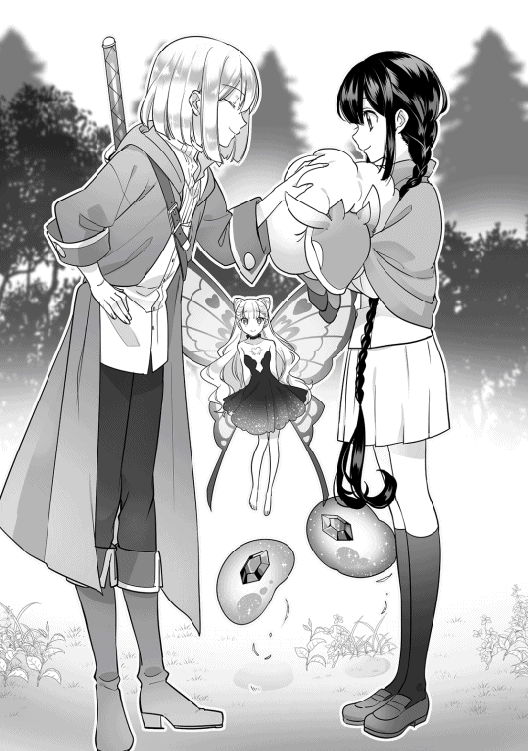
☆
ルーカの背がだいぶ小さくなるまで見送った後、レナは従魔たちに向き直る。お別れの寂しさから、気持ちが高揚しているのだろう、リリーの大きな瞳、スライムたちのボディはキラキラと輝いている。
「......さて！」
レナは従魔たちを励ますように、明るく声を上げる。
レナたちは、今からこの草原でレベル上げをして、早々に居眠りヒツジのクラスチェンジを目指す予定なのだ。１つでもレベルを上げたら進化するというのだから、強化しておかない手はない。
スライムたちとリリーも気持ちを切り替えられたようで、表情が明るくなった。
「居眠りヒツジくーん。クラスチェンジしーましょ。起きようー？」
レナが腕の中のヒツジを揺さぶる。
『むにゅぅ......』
『『コッケコッコーー！ 昼だよー！』』
スライムたちも騒がしく声をかけたのだが起きない。つんつん、とヒツジのほっぺをつついていたリリーが、ある画期的な方法をレナに耳打ちした。レナは思わず口角を引きつらせる。
『......ね！ 絶対、有効なはず』
「うわあ......。き、気が進まな......でも、有効を否定できないぃ......！」
レナは冷や汗をダラダラかき始める。勇気のいる決断なのだ。ちょっぴり考え込み、躊躇しながらも......提案された方法を試してみることにした。
レナたちとて、長くここに留まっている訳にはいかない。危険なガララージュレ王国からはできるだけ早めに離れておきたいのである。ヒツジを覚醒させる方法があるなら試してみなければ。
短い毛に覆われたヒツジの耳に、レナがそっと唇を寄せる。強そうな自分をイメージして、演技に入る。精一杯のこわーい声を出してみた！
「......あら。炎鞭をお望みなのかしら？」
ヒュウ！ これこれ！
（びっくーーーんっ！）
▽居眠りヒツジが 目覚めた！
『『『ああーーーッ！ レナ女王様ぁ、従えてぇぇーー！』』』
快眠状態から、ヒツジがガバッと勢いよく覚醒する。
炎の女王様は今だに彼のトラウマになっているようで、涙目になってしまった......。レナの心の大怪我と引き換えに、起床作戦は大成功を収めたと言えよう。先輩従魔たちのたたみかけるような女王様コールが、いっそうレナの精神に負荷をかける。
これからもこの声援を聞く機会が何度も訪れるのだが、それはまだ少し先の話である。
丸焼きにしないよね？ と震えながら問いかけたきたヒツジをひしっと抱きしめて、何度も「大丈夫！」と愛情を伝え、レナはなんとか恐怖心を解いた。ヒツジはほんのり目の周りを赤くしていたが、おとなしくレナ様に抱かれている。
しばらく休憩（レナの心の休息含む）してから、ようやく獲物を探して、草原を進みだした。
☆
目の前いっぱいに広がる草原は、ダナツェラ近郊よりも格段に広い。所々に木が自生している箇所が見られるが、ほとんどは丈の低い草が生えた平地で、それらを餌とする草食獣が多く生息している。モンスターの種類については先ほどざっくりと述べたので省こう。
レナがヒツジに［体型変化］スキルについて尋ねる。
「最大でどれくらいまで大きくなったことがあるの？」
『んーとねー。今までで一番大きくなった時はー、確か、高さが今の２倍ちょっとくらいだったかなー？ でも、魔力を多くこめたらもっと大きくなれそうー』
居眠りヒツジの背の高さは１メートル弱ほど。過去に、２メートルくらいのヒツジになったことがあるそうだ。
「そっかそっか。ちなみに、効果継続時間はどれくらい？」
『変化する時に魔力がいるだけでー、あとはずっとその大きさのままだよー。継続時間とかはなくて、小さくなりたい時は、またスキルを使う感じですー』
「なるほど。低燃費で素晴らしいね！」
『ふふーん。撫でてもいいよー？』
「わぁいもふもふーー！ ふわふわー！」
レナは簡単に誘惑に負けた。現在ヒツジは腕から降りているので、地面に膝をついて、白毛を両手で撫でまくる。気持ちいい。お日様にポカポカ照らされていた白毛はとても良い匂いがする。先輩従魔たちも、ついでに！ と毛に埋もれ......むしろ刺さりにいっていた。草原の片隅で、ヒツジを中心に皆でコンパクトにまとまる。何をしているのだ。あったかくてこのまま寝てしまいたかったが......レナは衝動をなんとか抑え、ヒツジのレベリングについて作戦を語り始めた。
「まず、ヒツジくんに巨大化してもらうでしょー。そしたらクレハとイズミが、盾みたいにおでこにうすーく貼り付いて［超硬化］するの。その状態で頭を低くしながら、ヒツジくんに［駆け足］してもらおう！ きっと上手く魔物を轢けるよね？ 目の良いリリーちゃんには進路の誘導をお願いしたい。轢いて倒せそうな魔物のいる方向をヒツジくんに伝えてくれる？ 私はヒツジくんの背に乗せてもらって、［鼓舞］と［従魔回復］を必要に応じてかけていくね」
作戦はこの通り。とってもシンプルに、物理的に撥ね飛ばすつもりらしい。ヒツジが［体型変化］で巨大化したら、体積にともなって体重もドンと増えるので、とんでもない重量戦車が出来上がることだろう。これはまたひどい。
『『うわーお！ 楽しそうーー！』』
『......まかせて、ご主人さま！』
『はーい。レナ様のおおせのままにー』
「ヒツジくんだけナチュラルに何か違うよぅ......」
レナはまだ知らなかった。この作戦によって、自分自身と獲物たちにどのような悲劇が訪れるのかを......。
「さっそく試してみようか」
『『えいえい』』
『『おーーーー！』』
▽居眠りヒツジを 進化させよう！
☆
この日、草原は荒れた。
何が起こったのか、少し遡って実況しよう。
高さ３メートルはあろうかという超巨大ヒツジが、鼻息あらく興奮した様子で足踏みする。主人の［鼓舞］スキルの効果だ。より獲物を撥ねやすいよう、レナは結構な魔力を込めてスキルを発動させている。スライムたちがヒツジのおでこで重なり合ってぐよーんと伸び、［超硬化］。紫色の強力な盾を作り出す。リリーはヒツジの頭に腰を下ろし、高い視点から周囲一帯を見渡すと、目をギラリと光らせた。
準備完了！
獲物となるモンスターはそこかしこにいる。隠れたところで、３メートルの高さからリリーの［フェアリー・アイ］で覗かれたのでは、丸見えだ。リリーが怪しく笑う。
獲物を視定めたら、あとは......ヒツジを乗り回して草原を蹂躙するのみ！
魔物の本質として好戦的なところがある従魔たちは、心に火を灯していた。［鼓舞］スキルにより、その火にがんがん薪が焚べられている。
ヒツジの背に乗ったレナは少しだけ不安そうに、柔らかい毛をつかんで、感触を確かめていた。撥ねるとなると、かなりスピードが出るはず。その時の自分のしがみつき能力が不安なのだ......。しかし、きりりと前を向いた。
「......よし！ いける。頑張る！ じゃあ、ヒツジくんは、リリーちゃんの誘導をよく聞いて従ってね。リリーちゃん、無茶はせず弱めの草食モンスターを狙っていって。相手が弱くても、何体も倒せば、経験値の積み重ねでレベルが上がるはずだからね。無茶な挑戦はしなくていいよ。たくさん魔物を倒せばしばらくの食料も確保できるし。クレハ、イズミ、定期的に［従魔回復］を使うけど、辛くなったらすぐ申告するんだよー」
従魔たちは『はーい！』と元気よく返事をした。
「よい返事です！ 頑張りましょう」
ろくなものを食べていないレナはかなり切実な声で、食料確保と口にした。
リリーが周囲の索敵をした限りでは、高レベルの危険なモンスターは見当たらない。
さあ。どこまでも一方的な狩りが始まる。
「突撃ーーーーーっ！」
ついに、［駆け足］開始の指示が出された！
地面スレスレに頭を低く下げた巨大なヒツジが、額のスライム盾を攻撃武器に変えて、草原をひた走っていく。重い身体をパワフルに全力で動かしながら、土埃を上げてモンスターを軽快に撥ね飛ばしていく。
まず初めの犠牲者は、同じ種族の居眠りヒツジ。しかし仲間ではないので、情け容赦なく突っ込んでいき、撥ね上げる。
パコーーンッ!! と、獲物は軽快に空をふっ飛んだ。
撥ね上げる、について説明すると、ぶつかる直前にわずかに頭を上向かせて上方にぶっ飛ばしたのである。
必死で毛にしがみついているレナが、ひえっ、と小さく叫ぶ。
「まさに交通事故......!!」
ここまでひどい絵面になるとは想定外だった。従魔たちが張り切りまくった結果である。調子づいた巨大ヒツジの暴走は、まだまだ止まらない。蹂躙は始まったばかり。リリーもスライムたちも超ノリノリである。
獲物となった哀れな居眠りヒツジは数十メートル先で地面に落ち、脳しんとうでも起こしているのか、フラフラと立ち上がる。逃げる間もなく、走り込んできた巨大ヒツジに思いきり踏まれた。トドメ！ さすが、女王様のしもべー！ ひき逃げなどせず、確実に仕留めるスタイルである。
獲物がプレスされ、仕留められたことをしっかり確認したリリーが、満足そうに頷いて、次の進路をテキパキと指示していく。
『......ん！ 上出来！ 次は......ここから、ナナメ右側。......12メートル先に、丸ヒツジがいるよ』
『はーい、リリー司令ー』
巨大ヒツジはイキイキと返事をする。
『いい気分......！』
先輩後輩は、さっそく仲良しになったようだ。気を良くしたリリーが、いい子いい子とレナを真似してヒツジの頭を撫でてやった。
パカーーン！ パコーーン！ と草食モンスターがリズミカルに轢かれ空を舞う。そのリズムがいっそ小気味いい。
食物連鎖の底辺である居眠りヒツジだが、レナの僕となったこの個体に関しては、とんでもない強者に成長したようだ。強力なスキル・ギフト持ちで、さらに主人と仲間の手助けを受け、巨大化していれば向かうところ敵なし！ スピードの出しすぎで停止できず、たまたま岩陰にいた肉食獣を１体轢いてしまったのだが、問題なく打ち勝った。肉食獣にしてみれば青天の霹靂だっただろう。
ヒツジは初めて［鼓舞］を受けたので、速度調整がまだ上手くできないらしく、停止が苦手。これから訓練が必要だ。
約10匹目を撥ね上げたところで、食材の回収が大変になると思ったのか、リリーがいったん後輩の足を止めさせる。音沙汰のない主人はどうしてるのかって？
『......ご主人さま？ 顔、青いよー』
『レナ様ー。......だいじょーぶ？』
『『あっ。レナぁーーーッ!?』』
背中で上下左右にガンガン振り回されていたレナは、目が濁っていた。酔ったらしい。口元を手で押さえることもできずにぎゅっと唇を引き結び、完全にグロッキー状態。乙女にあるまじき形相をしている。キキーー！ とヒツジが急停止したことにより、尚更ダメージを受けてしまったらしく、ぐったりと前のめりに背に身体を預けて沈黙していた。従魔たちの心配そうな視線を感じとって、しばらく休憩をとってからようやく上体を起こす。
「......ま、負けないよー......？」
健気にも、居眠りヒツジにグッジョブサインを出してみせる。負けないと口にしたレナは、自分の中で乗り物酔いと勝負をしていたのだろうか？ 完敗に見えるが。よく頑張った子はちゃんと褒めるのがレナの主人としてのスタイルだ。従魔たちの今回の戦歴は素晴らしい。ヒツジが嬉しそうにぶるるっと鼻を鳴らす。
弱った主人に無理をさせるほど従魔たちは鬼畜ではなかったので、レベリング兼食料集めは、いったんここで終えることにした。
やかましいほど福音が鳴っていたし、進化のための経験値はもう十分だろう。
レナを乗せたまま、ヒツジはゆっくりと木の影に移動し、そっと足を折る。［快眠］＋［周辺効果］スキルでレナを強制的に寝かしつけた。体調不良ならば、よく眠れば回復するはずだ。
レナの世話をしつつ、従魔たちは倒したモンスターを回収していく。放っておけば肉食獣に横取りされてしまうため、急がねばならない。撥ねたのはどれも、ヒト族が食べても食あたりを起こさない草食獣ばかりなので、主人も美味しく食べることができるだろう。
携帯食料ばかり食べていて、レナはずっと辛そうだった。喜んでくれるかな、また褒めてくれるかなと期待して、従魔たちはお互いの担当を相談しあい、手際よく作業を開始する。
すでに肉食獣にたかられていた獲物４体を除いて、残り約６体ぶんの死た......お肉の場所をリリーが目視し、クレハとイズミに伝えた。獲物の下に薄く伸ばしたスライムボディを滑り込ませて、ベルトコンベアの要領で移動させ、レナの近くにお肉を運ぶ。主人を守りつつ、解体をするつもりなのである。
『確か、ヒト族って毛皮は食べられないよねー？』
『骨や、内臓も、ほとんど......食べないと思うよ......？』
『血もいらないねー！』
『そういえばー、解体ってどうするつもりなのー？』
主人のベッドとして１人おとなしく待機していたヒツジが、先輩たちに問いかけた。
『『レナが食べる用にね、お肉の部位の間をうすーく溶かして、塊を切り出すのー』』
『クーと、イズなら。......繊細な［溶解］で、ラクラク切り離しができるんだよ！』
『お肉の解体については、ヒツジくんが寝ている間にレナと話し合ってたんだ』
『レナはヒト族だからねぇー。生肉を丸ごと齧ることはできないし』
『後で、お料理しやすいように。保存......しやすいように。丁寧に......分けておくの』
『へえ、そうなんだー。［溶解］かぁー。先輩たちすごいですー』
『『えっへん！』』
よいしょされて、スライム先輩は簡単にドヤ顔になった。
風船状にふくれ上がったスライムボディに、リリーが、とぷん！ とぷん！ と血濡れの獲物を次々投げ込んでいく。プレスされた時に、身体はいくつかに分かれていた。大きな魔物の元へはクーイズが移動した。クーイズは器用に血抜きしつつ、皮や骨などのヒト族が好まない部分だけを溶かして喰べていく。雑食なので、彼らの美味しいおやつになったようだ。ぽんっ、とお肉屋さんで売っているような塊肉を吐き出す。ヒツジの咥えるマジックバッグの中に、部位分けされた塊肉が大量にストックされていった。
マジックバッグは、ルーカが複数持ち出してきていたものを譲ってくれていた。別れる時に、わずかではあるがお金もちゃんと半分こして持たせてくれている。感動したレナがまた泣いたのは余談である。「お兄ちゃんみたいだ......」と、ポツリと呟いていた。
話を戻そう。解体作業は、頼りになる従魔たちによって完璧に仕上げられる。ずっと頑張ってきたご主人さまを、今こそ甘やかしてやりたい！ と思い、あれもこれもと気を利かせたのだ。
一番多く狩れた羊肉の塊を数個、バッグの外に出しておいて、焼肉パーティをする準備が整う。
レナの寝顔を見つめてふふっと微笑んだ従魔たちは、優しい声音で主人の名前を呼んだ。
『『レーナ！』』
『ご主人さまーー！』
『レナ様ぁーー』
......ご主人さまが目を開けたら。きっと夕飯の焼肉セットを見て、いっぱいいっぱい褒めてくれるに違いない。
夕食を狙って突撃してきた無粋な魔物たちは容赦なく食材に加えておく。従魔たちがワクワクと期待に胸を踊らせていると......レナの瞼がピクリと動いて、まつ毛が震え、漆黒の瞳が覗いた。
「......んーー......あれっ。私、寝ちゃってたの......？」
了承を取らず寝かしつけていたのだ。寝入った時の記憶がないレナはきょとんとしている。従魔たちがクスクス笑う。
『『もぅー、レナってば寝ぼすけさーん！ ご飯の準備もうできちゃったよー？』』
『......クスクスッ！』
『おはよー。レナ様ー』
「え、ええっ？ そ、そうなんだ？」
やたらと良い笑顔で起こしてくれた従魔を、不思議そうな顔でレナは見つめたが、言われた言葉を理解して、パッと花が咲くように顔をほころばせた。ご飯!!
目覚めた主人の腕の中に飛び込んでいった従魔たちは、お望み通りに抱きとめられて、撫でられて、とても幸せそう。ヒツジは大きな頭をレナにすり寄せている。
見て見て！ と豪華なご飯セットが披露された。
「わああ......！ すごい。これ、全部あなたたちが準備してくれたの？......可愛くて強くて、その上気遣いもできるなんてみんな素敵すぎぃーーーっ！」
『『『きゃーーーっ！ ご主人さまー！』』』
『相思相愛だねー。よきかなー』
▽レッツパーリィ！
▽この後、めちゃくちゃ焼肉した。
☆
ひろった頑丈な小枝に厚切りのラム肉を刺して、クレハのフレイムの炎で香ばしく炙る。焼き加減はミディアムレア。中まで火を通しているとコゲそうなので半生だが、狩りたての新鮮なお肉は傷んでいないだろう。草原の魔物はヒト族も美味しく食べることができるとルーカにあらかじめ聞いていた。体内に毒を持っていないかは、クーイズが解体時に確認済みなので安心である。
外側に香ばしく焼き目のついた羊肉から、ふわん、と湯気が立ち昇る。異世界の羊肉はとってもいい匂いがする......もうたまらない！ レナは大きく口を開けて、思いきりよく肉に噛り付いた。その瞬間、口内にじゅわっと肉汁が溢れて、あまりの美味しさに満面の笑顔になる。
「あああ、美味しいぃーーー...!!」
マズイ非常食によりさんざん痛めつけられていた味覚が、一気に正常に戻ったようにすら感じた。とろけた表情を確認した従魔たちが、やったね！ とハイタッチする。レナは皆にお礼を言って、二口目、三口目、と勢いを衰えさせずに串肉を食べ進めていく。しっかりした歯ごたえの肉を噛み締めると、次から次へと旨みが溢れ出て味覚と心を満たしていった。
味付け用の塩や香辛料があればもっと食事を楽しめただろうが、この大自然のド真ん中でそこまで望むのは贅沢である。塩は、次に訪れた村か町で調達したいところだ。
「......生きてるって素晴らしい！ 美味しい！ 幸せぇー！」
ある程度お腹が膨らむまで、レナの賛美はやまなかった。
従魔たちもお肉をもりもり貪り始める。
「ヒツジくんはお肉を食べれないんだっけ......？」
大きな身体のまま１人葉っぱをもしゃもしゃ食べていたヒツジに、レナは控えめに話しかけた。背の高くなったヒツジは木の葉っぱを食べながら、横目でレナを見る。レナは申し訳なさそうな表情をしていた。ヒツジが言葉を考えながら話す。
『んー、そうだよー？ ボクのゴハンはいつも葉っぱ。でもいろんな種類のを食べてるから、味に飽きたりもしないしー。美味しいよー。だから......そんなに気にしなくてもいーのに？ レナ様ー』
１人だけ食卓に混ざれないヒツジをレナが気にしていることは、バレバレだったようだ。そんなに分かりやすかったかなぁ、と苦笑するレナ。
「お肉もとっても美味しいから、できれば食べてもらいたいなあって思ったんだ。貴方が頑張って狩ってくれたんだしね。......あ。もしかして、魔人族の姿になれば、貴方もお肉を食べられるようになるかな？」
『魔人族？』
ヒツジが不思議そうに言葉を復唱する。
「クラスチェンジして希少種の魔物になると、ヒト型をとることができるようになるの。そして［魔人族］の称号を授かるんだ。味覚もヒト族みたいになるんだって。チャレンジしてみる？」
『そうなんだー。レナ様がおっしゃるならー』
返事を聞いて、即行でギルドカードを取り出したレナ。美味しいご飯をこの子にも食べてもらいたいのである！
先ほど鳴りまくっていたレベルアップのベル音の中には、〈☆クラスチェンジの条件を満たしました〉のお知らせも紛れていた。居眠りヒツジはもうクラスチェンジできるはずだ。ギルドカードの項目をレナが確認していると、先輩従魔たちが『なになにっ？』と、お肉片手にカードを覗き込みにきた。
まず、クレハ・イズミ・リリーの現在のステータスから確認していこう。数々の戦闘を経て、皆かなり強くなっている。レベルはそれぞれ２つずつ上がっていた。
名前：クレハ
種族：ミニ・ジュエルスライム（赤）ＬＶ．８ 適性：赤魔法 体力：30（＋２）
知力：21（＋１） 素早さ：31 魔力：20（＋２） 運：14 スキル：［溶解］、［超硬化］
ギフト：【☆４】［全状態異常耐性］ 称号：魔人族
名前：イズミ
種族：ミニ・ジュエルスライム（青）ＬＶ．８ 適性：青魔法 体力：29（＋２）
知力：21（＋１） 素早さ：32 魔力：20（＋２） 運：14 スキル：［溶解］、［超硬化］
ギフト：【☆４】［全状態異常耐性］ 称号：魔人族
名前：リリー
種族：ダークフェアリー（幼体）♀ ＬＶ．６ 適性：黒魔法、黄魔法 体力：18
知力：16（＋２） 素早さ：19（＋１） 魔力：35（＋２） 運：１
スキル：［幻覚］＋１、［吸血］、［魅了］ ギフト：【☆４】［フェアリー・アイ］
「みんな、また強くなったねー」
『『『えへん！』』』
褒められた先輩たちは満足げにピースサインをしてみせた。
クレハとイズミは、ヒツジを捕まえる際に魔法をよく使っていたので魔力値の伸びがいい。補助魔法が得意なリリーは、早くも［幻覚］スキルに＋１の追加効果が現れている。主人のギフトの成長補正効果もあるのだろうが......恐ろしいほどの成長速度だ。
レナ本人のステータスを見てみると、こちらもレベルは２つ上がっている。弱いながら、身体をはって、心に大怪我を負って必死で頑張っていたのだ。
冒険者ギルド：ランクＧ 名前：藤堂 レナ
職業：魔物使い ＬＶ．４ 装備：セーラー服／革靴／鞄／Ｍバッグ／ローブ
適性：黒魔法・緑魔法 体力：19（＋３） 知力：51 素早さ：14（＋２） 魔力：52
運：測定不能 スキル：［従魔契約］、［鼓舞］、［伝令］、［従順］、［従魔回復］、［みね打ち］
従魔：クレハ、イズミ、リリー、居眠りヒツジ
ギフト：【☆７】［レア・クラスチェンジ体質］
ルーカの［身体能力補正］を借りて動いていたため、今回は体力面がよく伸びている。
取得した［みね打ち］は、初めての鞭スキル。
［みね打ち］......相手の体力をギリギリ残して、仕留めきらず、痛めつけることができる。鞭打ち一回の攻撃力は体力値による。
......とのこと。わざわざこんなスキルがあるということは、ラナシュ世界には過去に、鞭打ちだけで相手を死に追いやった脳筋でもいたのだろうか？ などと余計な勘ぐりをしたくなる。
居眠りヒツジのステータスを確認しよう。クラスチェンジ先がとても気になる。一番活躍したヒツジのレベルは、一気に３つも上がっていた。
〈進化先：ゴールデンシープ〉
〈進化させるには、種族名項目をタップして下さい〉
進化先はゴールデンシープという希少種らしい。これまた美モンスターになりそう。
「ゴールデン！」
『『金色ピカピカなの！』』
『毛色が、白から、変わるのかなー......？』
『よく分かんなーい』
レナが一言、クラスチェンジの際の注意事項を告げる。
「少し体が熱くなるかもしれないよ、ヒツジくん。頑張って耐えてくれるかな？」
『おおせのままにー』
完全に主人のイエスマンになっている居眠りヒツジ。この傾向はあまりよろしくないので、また後できちんと女王様イメージを改善させなければ、とレナは心に決めた。
ギルドカードの進化先項目を軽くタップしてみると、ゴールデンシープについて詳細な説明文が浮かび上がってくる。
【金毛羊】......輝く黄金色の毛を持つ、希少種のヒツジモンスター。触り心地バツグンの毛は、最高級の絹よりもはるかに高い価値を持つ。裁縫界の至宝とも言われている。ゴールデンシープを神獣として崇めている地域もある。
戦闘面での際だった特色はなさそうだが、主人と先輩従魔の目は、なにより「触り心地バツグン！」という一文に釘付けになっていた。崇められている、という厄介そうな部分は見なかったことにした。
今でさえやみつきになるフワフワ感触なのに......さらに先があるというのか！ なんという素敵ベッド！
居眠りヒツジは、身体の内側からの熱に耐えている。なんのこれしき、テイム時の火まみれの恐ろしさに比べたら何てことない。ヒツジはどこか恍惚とした表情をしていた。
白い毛が、だんだんとハチミツのような透明感のある黄色みを帯びてきて......最終的には、とろけるような黄金色に変わる。ギラギラした下品な金色ではなく、星を思わせる上品な輝き。白みを帯びた金色だ。ジュエルスライムに負けず劣らずのまばゆさ。
「きれーい......」
レナが思わずほうっとため息を吐く。
『そうー？ 撫でてもいいよー』
己の身体の変化に、ヒツジも満足している様子。得意げに金色の頭を差し出してきた。
▽居眠りヒツジは ゴールデンシープに 進化した！
ステータスを確認しよう。
名前：ゴールデンシープ（仮）
種族：金毛羊♂ ＬＶ．９ 適性：黒魔法 体力：31（＋12） 知力：24（＋11）
素早さ：16（＋７） 魔力：20（＋６） 運：23（＋６）
スキル：［体形変化］、［駆け足］、［快眠］、［周辺効果］ ギフト：【☆５】［鈍感］
目に見えて強くなっている。ステータス値はとてもバランスがいい。クラスチェンジによる種族スキルの追加はなかったが、もともとのスキルが頼もしすぎるので、問題など何もない。
レナはさっそく差し出された頭の金毛を撫でて、そのふわふわ感触の素晴らしさに身悶えした。
「お疲れさま！ よく頑張ったね。一応、［従魔回復］スキルを使っておくよー。貴方の金毛、最高の触り心地だね......ふぅ......とっても素敵！ さっそくヒト化を試してみる？」
『はーいっ』
金毛羊は、わくわくした様子で明るく返事をする。ヒト族味覚とやらに興味を持っているようだ。
「身体をまず普通サイズに戻してくれるかな。その上にローブをかけるから......ヒト化が完了したら、シャツとズボンを着てみてね。じゃあ、自分がヒト族になるイメージをしてみて」
『イメージ。んー、頑張ってみますー』
さすがに今回は、裸対策もバッチリ。レナは小さくなったヒツジにローブをかけてやる。
羊はヒト族のレナをジッと見つめて、自分のイメージの参考にしているようだ。......上手くヒト化のイメージができたのか、ヒツジの身体がだんだんとヒト族らしく変化していく。
短い毛に覆われていた顔は、みずみずしい子どもの柔肌に。黄金の毛はくるくるカールした長めの金髪になった。モンスターの特徴として耳とヒツジ角が残った、子どもの魔人族の姿。またしても、かなりの美幼児である。
......いったん裸ローブになっていることは気にしないように。これが現在の最善策なのだ。
〈従魔：ゴールデンシープが魔人族として承認されました！〉
〈称号：［魔人族］が追加されました〉
〈ギルドカードを確認して下さい〉
「......お肉、食べれる気がするよー？」
「ほんと！」
ヒト型の金毛羊はさっそく自身の変化を感じたらしい。なんとなくだけどー、と言いつつ、ピンク色の舌を指でつまんでいる。
『『良かったねぇ、後輩くんーー！』』
『......一緒に、お食事、できるねっ』
「ありがとうー、先輩方ー」
知力の高い後輩は、なかなかに世渡り上手なようだ。先輩たちにも可愛がられている。
クラスチェンジしてヒト化までしたら、もうそろそろきちんとした名前が欲しいところ。レナは悩みに悩んで......「星の羊」の名前を贈ることにした。
「貴方の名前は......ハマル。星の羊、って意味なの。星みたいに綺麗な金色の毛皮だから、ぴったりかなって。ハーくん、はどうでしょう？」
「それ、ボクの名前なのー？ すごく嬉しいー！」
気に入ってくれたようである。ヒツジの耳をぴくぴく動かして、夜空のような藍色の瞳を嬉しそうに瞬かせた。
ゴールデンシープの名前は、ハマルに決まった。ギルドカードにもしっかりと彼の名前が記載されている。
魔人族になったハマルに、レナはさっそく生肉が刺さった串を差し出す。
クレハが作った火種は、まだ赤々と燃えている。ハマルは小さな手で串をしっかり握りしめて、恐る恐る肉を炙り始める。セルフスタイルだ。美味しそうな焦げ目がついたらもう食べごろ。皆が見守る中、かぷっ！ と思いきって噛り付いた。
体験したことのない肉の濃厚な味に、コクのある黄金の脂。それらが口内で複雑に混ざり合う様を、全て舌で感じることができる......！ ヒト族特有の繊細な味覚にビックリして、ハマルは目を見開いている。この味覚がいたく気に入ったようで、夢中でお肉を齧り始めた。
こうなると、先輩従魔たちも羨ましくなってくる。ヒト化して食事をしたいと、レナに口々におねだりした。もちろんレナは許した。ご飯を美味しく食べるためならば、裸ワイシャツも致し方ない。ローブは１着しか持っていないので、ワイシャツを活用せざるを得ない。周囲に人目がないことを確認して、クレハ・イズミ・リリーもヒト化する。
リリーは初めての魔人族姿。ヒト化したリリーは、翅のない、少しだけ尖った耳が特徴的な麗しの幼女。黒のミニドレスは自由に造れるらしい。仲間たちが口々に褒めそやかす。
「おおっ、お肌がつやつやの褐色」
「セクシー＆キュートじゃん！ こっち向いてぇーー！ スマイル下さぁい！」
「目が青い〜。って、それはフェアリー姿の時も同じだけどー。身体と同じように目も大きくなってるから、見つめてると吸い込まれそうだね〜。空を閉じ込めたみたいで綺麗ー」
「「ぐっふっふ......お嬢ちゃんかーわいいねぇ？ ちょっとスライムと戯れないかい」」
「......やーーん！ みんな、褒めてくれて、ありがと。えへへ。嬉しい。......ご主人さまっ、どう？」
「リリーちゃん最高の極み。抱きしめたい......みんなを......」
「「「「よろこんでーーー!! わーーーい!!」」」」
▽レナは もみくちゃにされた！
主人の役得である。世界中のロリコンショタコンが血の涙を流して羨ましがるだろう。全員を。ラナシュではレナの見た目も十分ロリの対象に入りそうだ。
幼児たちのあまりの可愛さに、レナは「うかつに他人に見せられないな」と、重圧で呼吸困難になりながら目をすっと細める。幼い魔人族姿は揃って極上の容姿なのだ。身内贔屓はあるにしても、こんなに可愛い子たちは見たことがない。気をつけなくてはいともたやすくストーカーを量産してしまう。私が守らなくちゃ、と気持ちを引き締めた。
まあ、今は焼肉パーティを満喫しよう。
幼児たちは大はしゃぎで肉の串を炎に近づけて、焼き目がつくのを今か今かと待っている。ほのかに口元が微笑んでいるのが、またなんとも愛らしい。よほどお肉が焼き上がるのが楽しみなのだろう。ハマルの２つ目の串がいい焼き加減と見て、レナが声をかける。
「ハーくんのお肉が焼けたみたいだよー」
「あーん！」
ハマルは肉の串をレナに手渡し、食べさせてとアピールした。甘え上手なものだ。
「あ、はい」
レナは素直に従う。この関係が通常運転である。
お肉の塊が大きいので、ハマルの小さな唇には脂がてろりと付いてしまった。なんかヌメヌメするー、なあにこれぇ、とおかしそうに笑い始める。魔人族の体で経験することはどれも初めてで、幼児たちにとっては全てが新鮮で面白い。
「「レーナ！ こっちにもあーんしてー！」」
「ご主人さまっ、食べさせてあげる」
ハマルの様子をレナが表情をとろけさせて眺めていると、先輩たちからも声がかかる。
「はいはーーいっ」
賑やかだなー、と思いながらレナは慌ただしく動く。クレハとイズミにお肉を食べさせ（なんと一口で厚切り肉を頬張ってしまった！）、リリーの差し出してくれたお肉を齧る。皆で豪勢な焼き肉を心ゆくまで楽しんで、わいわい騒いだその日の夜は、極上のゴールデンベッドで眠った。［快眠］＋［周辺効果］スキルもかけてもらうという超贅沢仕様である。
もうこれなしじゃ寝られない気がする......。それくらい最高の寝心地だった。
▽皆の 疲れが 全快した！
▽異世界ラナシュを 冒険しよう！
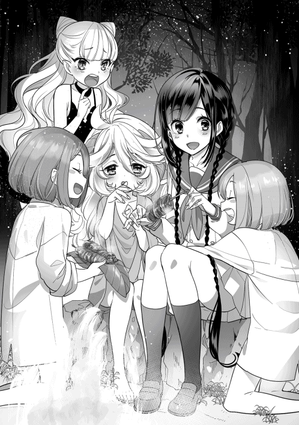
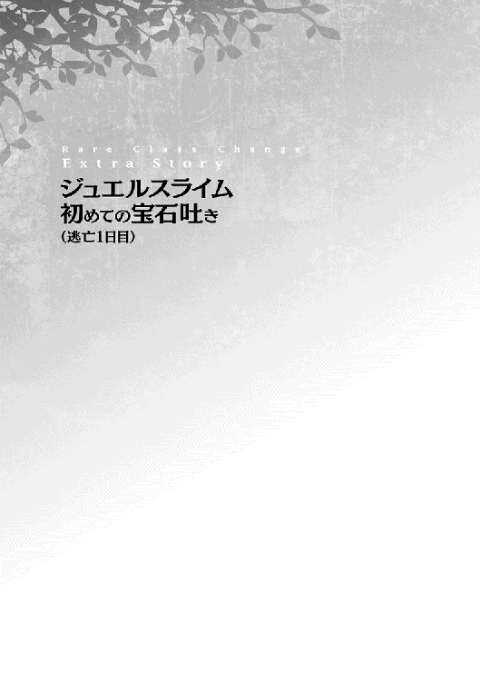
ダナツェラギルド宿舎から逃げ出して、森の中で初めて夜を明かしたレナたち。うつらうつらと木陰で仮眠を取りながらようやく待ちに待った朝を迎えた。熟睡などできるはずがない。
瞼を半分持ち上げて、レナが目を覚ます。ぼんやりと周囲を眺めながら、思考を始めた。
夜はリリー以外ろくに視界が確保できない。スライムたちはレナよりは気配に敏感なものの、リリーの指示に従ってなんとか襲来したモンスターを返り討ちにしている状態である。この一夜の間にも、数匹の虫モンスターが忍び寄ってきた。全て撃退できたからよかったものの......いつガブリとヤラレるか気が気ではない。状況は極めてよろしくない。
薄暗い森の中にもしだいに、太陽の光がチラリチラリと降りそそぎ始める。茂る木の葉に遮られて、明るくなる速度は遅いが、とりあえずの視界が確保できたことにレナはホッと息を吐いた。
『......おはよう。......ご主人さま』
「！......おはよう、リリーちゃん。夜の見張りお疲れさま。ありがとう」
レナが目を覚ましたことに気付いたリリーが、ふわりと華奢な肩に降りたつ。夜に強いナイトバタフライにはずっと見張り番を任せていた。昼間は私たちが頑張るからね、とレナが告げるとリリーは蝶々の小さな頭をこっくりと頷かせる。リリーにももちろん睡眠は必要だ。
クレハとイズミはまだレナの膝の上ですよすよ眠っている。
レナは足を動かさないように気をつけて、くうっと伸びをして、真剣に辺りを見回した。
ほんのり朝もやのかかる薄暗い森はとても静かで、葉や草のこすれる音しか聞こえてこない。しかし忍び足の得意な魔物が多いため、油断などできない。現在に限って言えば......リリーからも特に注意がないので、近くに魔物はいないのだろう。ふっ、と少しだけ肩の力を抜いた。
森のところどころに見えている紅色は、リリーが蜜を好むチューレの花。頻繁にレナの血液を提供していたらとても身体が持たないため、しばらく食事は花の蜜でガマンしてもらおうと決めた。［吸血］した後の恍惚とした表情を思い出すと頼みづらいが、レナも体力がなくては森を歩けない。
......怖くて、さみしくて、少し肌寒くて。レナは勇気の出る歌でも歌いたくなったが......さすがに思うだけで自重した。
代わりにリリーとささやかに戯れる。ふよっ、ふよっ、とレナの指先をリズミカルに移動する綺麗な青の翅を見つめていると、唐突にリリーはレナにすり寄ってきた。レナも頰ずりを返す。
スライムがくにょーーん、と身体をよじってようやく起床した。
「クレハ、イズミ、おはよう」
『『おっはよぉー......ご主人ー。......んにゃあぁ』』
まだ寝ぼけているようだ。戦闘の合図で起こされた時にはシュバッ！ と瞬時に覚醒してくれるので、今くらいはのんびりさせてあげたい。レナは微笑みを浮かべ、ぴと、と手のひらをゼリーボディにくっ付ける。ほのかな体温が心地よかったようで、スライムたちはまたくにゃりと表面張力をゆるめて眠ってしまった。
......15分ほどしたら再び目覚めたので、むにむにとボディを軽く揉んでマッサージし、核の宝石を爪先でつんつんとつついてやる。『やああああんっ』と可愛らしい悲鳴があがった。口では嫌がっていても身体は正直よのう、ふはは、とレナが悪代官ごっこを始めるとクーイズもノリノリで乗っかってくる。気持ちイイけど、ムズムズくすぐったいのぉーーー！ と自らネタばらしをして、ぷくぷくとボディの内部に気泡を発生させた。大笑いしている時は、よくこうなる。
数分リラックスした所で、さあまた歩き出そうか、とレナが立ち上がったが......肩に乗っていたクーイズは、ぴたっと動きを止めた。
「......？ どうしたの？」
レナが問いかけると、くねくね身をよじり始める。
『んーーっ？ おや？ 身体があっついような冷たいような......んんっ？』
『なんだかムズムズー、うずうずー』
「えっ。......も、もしかしてさっき核つついたの、本当はよろしくなかったのかな!? ごめんね。うう、私......ほんと不注意ばかりだね......」
『いんやー、アレはアレでものすごい快感で............おっと、これ以上はご法度なんだぜ』
『突っ込んじゃダメなんだぜー！ レナのえっちぃーー！......あぅーー、なんかこう、ムズムズぅぅぅ......』
『２人とも、どうしたの、かなぁ......』
レナがスライムたちをそっと手のひらで包み込む。
「うーん。ボディの温度は変わってないから、風邪ってことはなさそうだけど。いやでも、魔物のことだから分からないしなぁ......。困ったなぁ。ねぇ、２人とも。私になにかできることはない？ 撫でるのでも下敷きであおぐのでも、何でも言って！」
『『ああーん、ご主人さまお優しいぃーー』』
明るくおふざけを言いながらも、スライムたちはもじもじ身体をよじり続けており、レナに何かを頼むこともない。どうしてやりようもなさそうだ。
取り急ぎリリーに周囲の警戒をお願いして、レナは倒木の陰に隠れた。スライムたちを再び膝の上に乗せてやると、水筒を取り出して「お茶飲む？」と聞いたが、反応は返ってこない。
「どうしよう......」
涙目になり、レナとリリーがしょぼくれた顔を見合わせた......その時。
『う、生まれるぅーー！』
『こんにちはベイビィー......！』
『！』
「え、ええっ!?」
▽クーイズが 混ざり合った！
▽ミラクル！ メロン大のパープルスライムになった。
▽紫の身体が ぐーーんと膨れ上がる............ポンッ！
▽クーイズは 紫の大きな宝石を吐き出した！ ×１
▽レナの顔面に クリティカルヒット！
▽赤と青の２つの個体に戻った。
怒涛の展開である。そういえば、ジュエルスライムは１日１回宝石を吐くという特性を持っていたはずだ。それが原因でダナツェラギルドに狙われたのだが、逃亡に一生懸命ですっかり忘れていた......。
紫スライムの体から真上にポンッと飛び出た宝石は、なんとレナの顔面に思いきりぶち当たり、膝の上にころりと転がる。レナは今度は痛みにより涙目になって、赤くなった鼻を押さえて、パチパチ瞬きをした。
「ほ、宝石吐きって......こういうことなのね？ イタタ......」
『『あらやだ。おめでたでしたわっ』』
『......元気な、アメジストです！』
当然ながら産声など聞こえない。従魔たちは面白がってごっこ遊びを始めた。お母さんになりきって、宝石をベイビーと呼び、やさしく撫でたり、ちょいちょいと転がしてあやし、可愛いがってみる。コロコロ、キラキラ。
レナは膝の上で弄ばれ続ける宝石を見つめた。ラベンダー色よりももう少し濃い、気品ある紫色。色ムラなどはなく、とても美しい逸品である。レナの素人判断でも、素晴らしい宝石なのだろうということは一目瞭然だ。リリー曰く、アメジストとのこと。
そうなの？ と聞くと、アメジストはそこらの岩肌にも見られるありふれた石で、それを餌にするモンスターを知っている。［心眼］で視た波動がその鉱物と同じなのだ、と意外としっかりした答えが返ってきた。宝石に関する価値観が地球と似ているなら、アメジストは質の幅がかなり大きいはず。不純物の混じった低質なアメジスト原石は、その辺りにたくさん潜んでいるのかもしれない。
一通りごっこ遊びを楽しんだスライムたちが『見て見てっ！』と差し出してきたまぁるい宝石を、レナは手のひらに乗せて眺めてみる。
「......すごい......キレイ！」
木漏れ日の光を浴びたアメジストは、さらに輝きを増した。木漏れ日が揺れるたび、内包された輝きもキラキラゆらりと形を変える。
『『クーとイズを思いっきり褒めてくれていいのよ？ 頑張ったもん！』』
「すっごおーーーいっ！」
『『まんざらでもないーー！』』
レナはスライムたちを手放しで褒めて、褒めて、褒めまくり！ 調子に乗せた。喜びのぷよぷよタンゴを踊り始めたので、リリーとその光景を楽しんでから、また逃亡を再開することにした。
少し気持ちが明るくなっていた。立ち上がり慎重に歩き出す。
......今後の宝石吐きについて言っておくと、スライムたちは１日１回、長く眠った後に宝石を吐き出した。
しかし身体を混ざらせることはなく、パープルスライムになったのはこの一度きり。毎日、赤と青の宝石をふたつ生み出した。寝た時間によってわずかに宝石の大きさは異なるものの、いずれも高品質で大粒である。次にクラスチェンジした時には、ふたつめの紫の宝石を吐き出すのかもしれない。
──数日後、このアメジストにそっくりな紫色に出会うことをレナたちはまだ知らない。それがやさしい運命だと気付くのは、レナの本質が覚醒してからのこと。
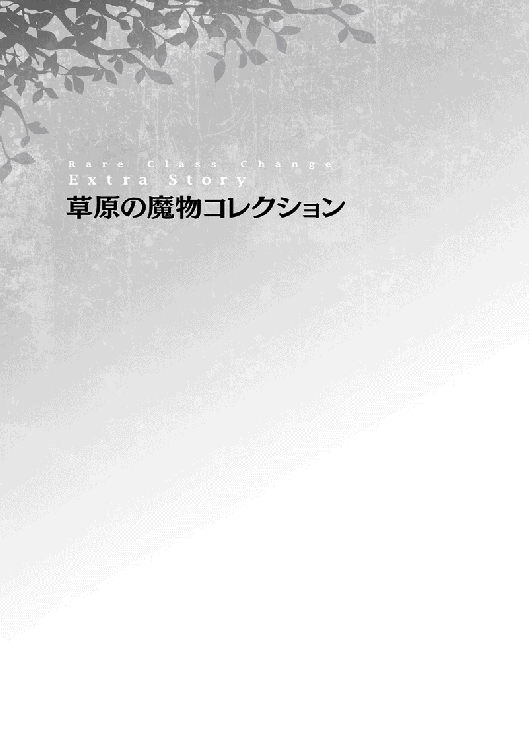
国境門を突破し、広大な草原を訪れて２日目の朝。
レナと従魔たちは、フワフワもふもふの金毛羊ベッドに顔を半分埋もれさせながら、パッチリと目を覚ました。
金毛羊の高めの体温と、保温性の高い金毛に温められて、薄っぺらいローブをかけて寝ただけでも寝冷えすることはなく、起床したばかりの身体はポカポカだ。［快眠］スキルの効果はてき面で、疲れがすっかり全快している。
澄んだ空気と生命力溢れる草の匂いがとても爽やかな朝だなぁ、とレナは思った。こんなに清々しい気持ちで目覚めることができたのは随分と久しぶりだ。
「みんな、おはようー」
レナが上体を起こしてクレハ、イズミ、リリーに語りかける。小さな３名は......ハッ！ と反応した後、再び金毛にもっふり埋もれてしまった。スライムはぐりぐりと金毛に頭をこすり付け、リリーはパタパタと足と翅を動かしている。
『『ヤダヤダぁーー！ まだこのゴールデンベッドを堪能するんだーいっ。起きないぞー！』』
『二度寝、しちゃうんだぞーっ』
「ありゃ。みんな、寝ぼすけさんになっちゃうの？ ハーくんは起きてるかなー」
『はーい。......むにゃ。んん......。目覚めましたぁ。おはようございまーす、レナ様、先輩方ー』
『『......なんだと!? あまりに［快眠］しすぎて、もはや眠気が来ない......だと!?』』
『おめめ、パッチリ......なの......。くすん』
クーイズもリリーもしっかり熟睡していたので、二度寝しようとしても眠気が訪れなかったよう。いかにも渋々、といった緩慢な動作で金毛からしょんぼりと顔を覗かせた。
そんなに自分の毛皮を気に入ったのか、そうかそうか、とハマルが満足そうにこくこく頷いている。
「......そこに隠れているカワイイ子は、だーれだーっ！」
『『『きゃあーーーーーっ!!』』』
レナと先輩従魔たちはしばらくの間、ハマルの背中で隠れんぼ遊びを楽しんだ。金毛から小さな魔物がぴょこぴょこと顔を出しては、潜り込んで場所を移動する。移動先の毛の盛り上がったところをレナがくすぐると、おかしそうに悲鳴をあげてまた顔を出すのだ。草原の一角、この場所だけは空間に花が咲いていた。
本日の予定についてレナが皆に打診する。もちろん、ガララージュレ王国から遠ざかる......ということは確定事項だ。
「今日も昨日と同じく、あちら方面に歩いていこうか......。あと、この草原の魔物たちについてもっと知りたいと思ってるんだ。まだほんの少しの種類にしか出会っていないから、敵対した時にそなえて、きちんと知識を持っておきたいの。ハーくん。進行方向に魔物がいたら、あなたのわかる範囲で説明をお願いできる？」
『はーい、レナ様のおおせのままにー。どんな魔物でも、ざっくりとなら習性について説明できるよー。んー、お肉の美味しい魔物よりもー、油断ならない魔物の観覧をご希望でしょうかー？』
「えっとね。説明の優先順位は、初見の魔物全般でお願いしたい。強い魔物を見物しに、わざわざ近づいていく危険は冒したくないから、安全な距離を保ったうえで、もし、その魔物が見られるなら一見しておきたい......かな。安全第一でお願いします。案内人さん」
『了解ですー』
「よろしくね。お肉は昨日の残りがまだまだ鞄にストックされてるから、しばらく狩りは必要なさそう。それに巨大化したら目立っちゃうし。無用な戦闘は避けていきましょう。あっ。もし、ヒト族でも食べられる野草なんかがあればそれも教えて欲しいなー」
『『毒味はまかせてねーー！』』
『魔物の......発見は、私の目に......おまかせ、なのだよ！』
「わあ、みんなすっごく頼もしい！ よし。じゃあ、張りきって出発しましょうーー！」
『『『『えいえいおーーー！』』』』
レナたちは意気揚々と草原を進み始めた。
☆
本日の天気は雲ひとつない快晴。草原に吹き抜ける風も穏やかで、ここが魔物はびこる野性の楽園だとうっかり忘れてしまいそうになる。しかし異世界仕様に精神が成長したレナは気を引き締めなおして、足音を立てないよう気をつけて歩いていた。
『レナ様ー。草原歩くの慣れてないでしょー、フラフラしてるし......背中に乗ってもいいんだよー。もしかして、遠慮してますかー？』
ハマルがレナを見上げて声をかける。大きい体躯のままでは魔物に発見されやすいので、また小柄なサイズに戻っていた。歩き方が危なっかしい主人を心配しているようだ。
「ありがとうハーくん。でもね、いざという時のために、私も自然界での歩き方を身につけておきたいの。私のステータスはまだまだ貧弱だから、体力作りもしっかりとしておかなくちゃ。頑張るぞ！」
『そっかー。ご立派なお考えですー』
「えへへ......照れちゃう」
『ところでー。前方に狼の魔物がいて、目をギラギラさせてこちらの様子をうかがっているわけですがー』
「乗ります！ 背中に乗ります！」
『おおせのままにー！ スキル［体型変化］ー』
▽ハマルは ３メートル級巨大ヒツジになった！
巨大化したハマルの背にまたがって地上を見下ろしたレナは、小さく「ひえぇ」と声を漏らす。前方の背の高い藪に潜んでいた狼の魔物は、小柄ながらどっしりと厚みのある身体つきで、強靭な顎の間から鋭い牙を覗かせて、明らかに強者の雰囲気を漂わせている！ 数は３体も。もちろん奴らは、この草原ではなかなかお目にかかれないヒト族の旨そうな肉を目当てに集ってきたのだ。
まさかのヒツジモンスターが巨大化という異常事態に遭遇して、度肝を抜かれた狼モンスターは警戒しながら、伏せていた身体を起こす。レナに発見されていたし、草食獣といえどもハマルの巨体は脅威だと考えたようだ。
グルゥゥゥゥゥ......！
狼モンスターの喉から、低いうめき声が漏れた。
レナはめちゃくちゃ焦っているが、ハマルは相変わらずのんびりしている。
『えっとねー。あれは、引き裂きウルフー。素早い動きで獲物を追い詰めて、強靭な顎で肉を引き裂くように食べるっていう習性をもってる、結構つよーい魔物だよー』
「結構、なの......!? すごく強そうなんだけど」
『なんの。僕におまかせ下さいませー。［駆け足］で引き離すこともー、蹴り跳ばして仕留めることもできるもんー』
「素晴らしい。よし、仕留めようか。追ってこられるとマズイから！」
即決だった。かくして、引き裂きウルフの命運は決定した。ヤバそうなヒツジに遭遇した時点で、少女の肉を諦めて逃げればよかったのだが、今となっては後の祭りである。
絶対にここで餌になりたくない！ と考えたレナが本気を出す。
「スキル［鼓舞］！ 使用魔力は......ええいっ、35いっちゃう！」
かなり豪快に魔力を込めた。興奮状態になったハマルが心地よさそうにぶるるっと鼻息を吐き出し、クーイズがボディを輝かせながらおでこにスタンバイし、リリーは青い目を獰猛に光らせる。蹂躙のはじまりにして狼終了のお知らせである。
憐れな狼たちはあまりの気迫に当てられ、ハマルが実際よりもさらに大きく見えていた。実は、気迫にビビっているのは狼だけではない。鬼畜指令を出した主人本人も、あ、これヤバイかも......？ と顔を強張らせている。振り落とされないようにしっかりと金毛に捕まっておかなくては、事故が起きそうだ。
『......スキル［幻覚］』
ずり、と半歩ほど足をずらした狼の退路を塞ぐように、リリーの［幻覚］の炎が燃え広がる。
狼たちはほんの一瞬、後ろを振り返った。その隙を見逃すことなく、涙目のレナが声を上げる。やけくそである。
「と、突撃ぃーー！」
『スキル［駆け足］ーー！』
歓喜の声を上げたハマルが脚にグッと力を込めて、ズダダダダダダッ!! と地に轟音を響かせ狼めがけて駆ける！
▽ハマルの 撥ね上げ！
パコーーンッ！ と小気味いい音を立てて、狼３匹はまとめて宙に撥ね上げられた。見事なものだ。10点！ 退路を塞がれた狼たちがその場で立ち往生していたことと、スライム盾が狼に当たる直前に盾の面積を横に大きく伸ばしていたため、一度の撥ね上げでまとめて仕留めることができた。
「ひえええぇぇぇ......！ （すっごーーい！）」
従魔たちを褒めてやりたかったレナだが、口を開いてみたら悲鳴が先に出てきてしまう。
急加速したヒツジは急には止まれない。もともと人を乗せるには向かない体型と動きなので、金毛にしがみついたレナはぐわんぐわんと激しく揺られて酔ってしまっていた。ロデオマシーンを想像して頂ければ、だいたいあってる。
ハマルは活躍の後、走りの勢いを殺すため、狼を通り過ぎてくるりとＵターンし、地にぐったりうち倒れる狼の前に戻ってきてようやく停止する。
『圧勝だったねー。ふふーん』
『『ブラボーー！ やってやったぜ』』
『ご主人さま、お疲れさまー。大丈夫......？』
「うぷぷぅ......」
はしゃぐ従魔たちとは対照的に、レナはかなり気分が悪そう。レナの体調を回復させるため、皆は約15分ほどゴールデンベッドでスヤスヤ［快眠］した。少しくらいの状態異常ならこれで回復してしまう。
▽レナたちの疲れが 全快した！
仕留めた狼たちは肉が美味しくないとのことで、クーイズのおやつになった。
☆
草原をさらに歩いていくと、今度はリリーが何かを見つけた。前方にある木の幹にふわっと飛んで行って、こっそり木の後ろ側を見つめる。ちょいちょい、とレナたちを手招きしてみせた。リリーの視線の先には低樹木がぽつぽつと生えていて、いかにも魔物が姿を隠していそうだ。
『......あれ、見て。魔物の親子がいる。ジャンプの、練習、してるみたい......』
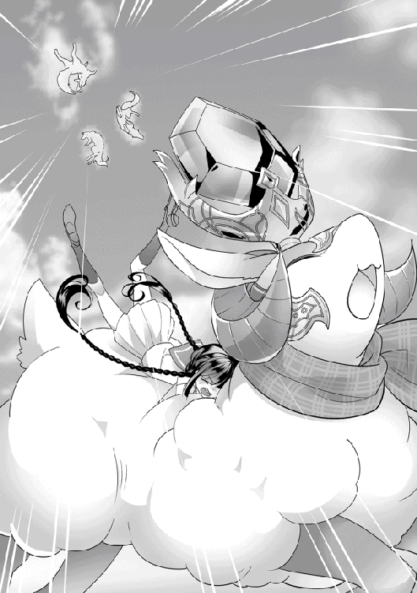
「えっ」
『『わあ、ほんとだーー』』
レナたちも木の陰に隠れて、目をこらした。
木々の間で、小さな魔物がぴょこぴょことジャンプしている。長い尻尾、身体に対して大きめの足、土色の毛皮の小さなネズミが５匹。見た目は地球でいうトビネズミによく似ているが、目が鮮やかな緑色。子ネズミは体長約15センチほど、母ネズミはもう一回り大きい。母が、子にジャンプの仕方を教えているのだろう。
レナが思わず口元を緩める。
「可愛いねー！ まあ、貴方たちはもーっと可愛いけれど」
『『ああーーん！ ごっ主人さまぁーー！』』
ネズミの可愛さは主従のいちゃらぶの餌になった。
皆でハマルを見つめると、のんびりした口調で説明してくれた。
『えっとー、あれは宙宙っていう名前のネズミモンスターだよー。空中ジャンプが得意でー、跳んで木に登って木の実を食べる魔物なのー。非力だし、基本的に襲われても逃げてくだけだからー、危険な魔物ではないかなー。レナ様、テイム興味あるー？』
ハマルが藍色の瞳でチラリとレナを見上げる。
「......可愛いけどね。いや、やめておくよ。テイムするならあの子たち全員になるけど、家族５体の面倒を見るだけの余裕は今はないし。ガララージュレ王国から遠ざかって平和な土地に行くことを、何よりも優先させなくちゃ」
レナは堅実な判断を下した。旅の優先順位をよく理解しているようだ。
『分かりましたー』
それから少しの間、レナたちは宙宙親子のジャンプレッスンを見学していた。
まず、母ネズミが地を蹴り、１回目のジャンプ。それから空中を蹴りつけ（魔法で足場を作っているのだろうか？）２回、３回とジャンプを重ねてどんどん高く跳んでいく。高所の木の枝にスタッと降り立ってみせると、枝に巻きついていた蔦から小さな赤い実を数個もいで、子どもたちに投げ落としてやる。子どもたちはキャッチした実を夢中で嚙り始める。すぐ食べきってしまった。
今度は子ネズミがジャンプを披露する番。母をマネして地を蹴る！......ものの、高さが全然足りていない。十数センチ跳び上がったところで、２回目のジャンプに挑むが、上手く宙を蹴ることができず、ぽてっと前のめりに転んでしまった。全員同様の未熟な腕前である。空中ジャンプの難易度はかなり高そうだ。木から跳び降りてきた母ネズミが、根気よく我が子を指導していく。
頑張れ！ 頑張れ！ と心の中で応援しながら見入っていたレナたちだが、あまり長く留まっているわけにもいかない。そろそろ立ち去ることにした。
立ち去り際には、心がほんわかあったかくなっていた。
☆
「あれは......なに？ 真っ白な毛玉みたいだね」
『んーと、大正解ー。まりウサギだよー』
続いて発見したのは、サッカーボールくらいの大きさの毛玉。ハマル曰く、丸まっているウサギモンスターらしい。頭まですっぽり隠していて、ふくふくとした背中と脇腹しか見えていない。
『アレ、ころころ転がして遊んでいい!?』
『あの毛玉と三兄弟ごっこしてみたいー！』
『......ダメだよ、クー、イズ。近くに......大きな魔物が、いるみたい、だから』
リリーによると、まりウサギを狙っている肉食の魔物が近づいてきているとのこと。レナは耳をすませて、静かに辺りの様子をうかがう。少し緊張しているらしく、脚に力が入っている。ハマルがそっと主人に寄り添い、耳打ちした。
『まりウサギがあの状態になってるってことはー、肉食獣に狙われて、防御姿勢を取ったんだと思うー。まりウサギの［マシュマロボディ］は、ほとんどの肉食獣の牙を通さないほど弾力があるんだけどー、ギフトが反映されない例外が、頭とお腹。だからああして隠して、防御してるんだよー』
「そうなんだ。......でも、噛まれたらいくらまりウサギでも痛みを感じるよね？」
『うん。多分ー。だからー、そこは肉食獣との根比べ。肉食獣が獲物を諦めるのが先かー、まりウサギが耐えきれずにまりから元の姿に戻って喰われるかー。元の姿に戻って、逃げ切れることは少ないみたいー。あのウサギ、まるまるしてるから足はそう速くないんだよねー』
厳しい生存競争だ。レナは眉尻を下げてまんまるまりウサギを見つめている。しかし、人から見て可愛い見た目だからといって、命が尊重されないのが野性の世界。かわいそう、という感情はいかにも上から目線だし、高慢な考えなのだろう、とレナは気を引き締めた。そのうちレナがウサギ肉を口にする機会も訪れるはずだ。
脇の草むらがガサガサと動いて、大型犬ほどの大きさのスナギツネが顔を出す。皆がハッと息を飲む。......なんとも言えない冷めた目をしている。妙に人間臭い表情。レナたちの顔に困惑がにじむ。ハマルが説明する。
『あれは確かー......人面キツネだったかなー。ほんと、変な顔してるよねー？ 黒魔法の使い手で、表情で獲物を驚かして気絶させる習性があるんだー。だからー、真正面からあのキツネの顔を見ちゃダメだよ。性格はまあまあ穏やか。でも肉食だからねー、油断しちゃダメ。あのまりウサギが丸まっちゃってイライラしてるっぽいー』
「あの顔で変顔されたら......それはもう強烈なインパクトだろうね......」
『『絶対笑っちゃうよぉーー！』』
『笑いすぎて、過呼吸で、気絶かな......？』
なんとも言い難い目でまりウサギを睨みつけた人面キツネは、前足で毛玉を転がし始めた。こーろ、こーろ、こーろ、ごろんごろんっ！ どうやら、目を回させる作戦らしい。そして、まんまる状態が解除される展開を狙っているのだろう。器用に足と鼻先を使ってウサギを転がし続ける。ころころ遊びをしたかったクーイズがうずうずプルプルしている。
なかなかウサギは根を上げない。しびれを切らしてガブ！ と噛んでみるものの、丸い毛玉は無反応を貫く。イライラが頂点に達した人面キツネは、くわッ！ と口角を上げて変顔をしてみせると、鼻先で思いきりまりウサギを宙に跳ばした！
「............」
『確かに僕の攻撃技と似てるけどー、そんな同類を見る目で見られるのツライですー。レナ様ー』
似てる、と考えてしまったレナは思わずハマルを見つめていた。誤魔化すように笑った。
「ご、ごめんごめん」
ハマルは拗ねたようにほんのり目の周りを赤くしていたが、レナが謝ると許してくれた。頭をレナの膝にこすり付けて、ちょっぴり不満だったことをアピールする。
人面キツネは、ふはあーー、と妙に人間臭いため息を吐くと、跳んでいったまりウサギを追いかけてレナたちの前から姿を消した。ようやく、従魔たちが溜め込んでいた笑いを吐き出す。
『『ぷはぁっ!!』』
『クスクスクスクスっ！』
人面キツネはまるで仕事に疲れたおじさんのような形相をしていたので、大ウケして笑いこけている。横顔だけでこれだけの笑いの衝動をもたらしたということは、真正面からあの形相を見せられたら、それこそ笑い気絶させられていたかもしれない。
「ふふふっ」
レナも口元を押さえてこっそり笑っている。予想もしていなかった珍獣に出会ってしまった。
☆
しばらく歩いたレナたちは、木苺の群生地を発見した。濃い深緑の葉に、木苺の赤色・紫色・オレンジ色のコントラストが印象的で、遠くからでもパッと目を引いたのだ。近づくと、ほわんと甘酸っぱい香りが漂ってくる。レナの太ももくらいの高さの木に、木苺が鈴なりに生っている。
『この紫色の木苺は猛毒だからー、食べちゃダメだよー。レナさまの手は皮膚が薄いから、触れたらかぶれちゃうかも？ お気をつけ下さいー』
「う、うん！ 気をつけるね。さすがラナシュだなぁ。そんな罠があるとは」
『赤とオレンジの実はふつーに美味しいよー』
幸いにも、猛毒だという紫色の実はごく稀にしか存在しない。それらはクーイズが大喜びで速攻食べてしまう。レナは安全に美味しい木苺摘みをすることができた。
『......スキル［魅了］。こら！ ご主人さまに、近づいちゃだめ。......って、仲間にも、伝えておいてね』
リリーが樹木の隙間に上体を潜らせて、毒々しい色の毛虫に警告を行う。これは魔物ではなくもっと知能の低い普通の虫だが、鳥すら啄ばまないほどの猛毒を持っていた。おまけに味も泥のようで恐ろしくマズイ！ この木苺の葉を食べて生活しているらしい。リリーの言葉を聞いた虫はおとなしくレナから離れていった。
レナはぶわっと鳥肌のたった腕をさする。
「リリーちゃんありがとうございました......！」
『えへ。どういたしまして、なの。ご主人さまは......私たちが、守るからねー！』
「うう、大好き！ あっ。クレハ、イズミ、あの毛虫たちは食べちゃダメだよ。リリーちゃんの指令を聞いて行動してくれてるから」
『えっ!? そそそそそんなことしないよー。いくら食いしん坊なクーとイズでも......ねぇ？』
『そそその通りっ！ レナのことを見逃したんだから、いい子だもんねーー？』
『『いくら猛毒持ちだからって食べないよぅ......』』
悪喰スライムは食の基準がだいぶおかしい。
「あとでみんなで魔人族になって木苺を食べてみようか。私、頑張って摘むからね」
『『わーーーーい！』』
レナがガッツポーズしてみせると、クーイズは現金に機嫌を直した。
この木苺は、従魔たちが魔人族姿で食べる初めての甘味になるだろう。毛虫やら毒やらは恐ろしかったが、レナは張り切って木苺摘みを再開した。しばらくすると、布きれの上に木苺の小さな山が出来上がる。
ふと、ぽつんとレナの頬にひと雫の水滴が落ちてきた。
「............ん？」
もしや雨？ と思い頭上を仰ぎ見ると......今度は薄茶色の毛玉が大木の枝からぶら下がりゆらゆら揺れている！ あれも魔物だろうか？ 攻撃されてはかなわない、とばかりにレナは立ち上がって逃げようとした。
「あッ！」
慌てて動こうとしたため、木苺の樹木に絡まっていたツタの棘で、指を盛大に引っ掻いてしまう......じわっと血が滲む。傷口が空気に触れてヒリヒリ痛みを訴える。棘にはレナの赤い血が付着していて、ポタリ、と雫を真下にこぼした。
慌てたついでに尻餅をつくという見事などんくささを発揮した主人の下敷きになったハマルが、妙な毛玉について説明を始める。こんな状況でも落ち着いている辺りは、さすが［鈍感］ギフト持ちと言えよう。
『レナ様ー、アレは僕たちには無害だよー。安心して。雫リスっていうの。尻尾に湿気、雨気を貯めておく習性があるんだー。だから尻尾が大きく膨れ上がっててー、小さな体で木にしがみついているでしょー？ よーく見てみて』
「あ......本当だ。尻尾に隠れてて気付かなかったけど、身体も見えるね」
雫リスは体長10センチほどのごく小さな体に対して、尻尾はその２〜３倍はある。薄茶色の体に水色のシマシマ、なかなかメルヘンな見た目。鋭い爪を木に突き刺すようにして、コウモリのように枝にぶら下がっている。
レナは「ごめんね」と謝って、ハマルの上から退いた。
『雫リスが集ってるってことは、近くに綿雲アメフラシがいるはずー。それも無害だよー』
「アメフラシ？ でも綿雲ってことは、私のイメージしてるウミウシ姿とは違うってことなのかな」
『......あのね。私も、見たことあるの。お空の雲みたいに、フワフワの......綿雲アメフラシ』
「へえ！」
『綿雲アメフラシはラナシュ中に生息してるんじゃないかなー？ 空から雨が降る時、その半分は綿雲アメフラシの仕業なんだー。地上で身体を休ませたアメフラシが空に昇って、雨を降らせるのー。そしてー、雨を降らせきるとまた地面に降りてきてー、力を蓄えたら空に......って、これを繰り返す。ご飯を食べてるトコは見たことがないなー。アメフラシが綿雲状の体内に取り込んだ水分には生命エネルギーが凝縮されてるからー、あの雫リスたちはアメフラシから奪った水分だけでもしばらく暮らしていけるんだー』
「綿雲アメフラシは空気中から水分を補給してるのかも。ありがとうハーくん、説明してもらって安心できたよ。......ということは、この辺りにアメフラシが潜んでる？」
『雫リスのしっぽがかなり大きくなってるからー、もう水分を取られ尽くして消滅しちゃってる可能性もあるかとー』
「そっか。ちょっと残念。リアルに雲が触れるかと思ったんだけどなー」
▽ハマルは期待した目で レナを見上げている！
正直、こちらの金毛の方が雲よりもよほど触り心地が良さそうだ。毛並みに沿って優しく撫でてやると、心底心地よさそうにメェェ......と鳴いた。
『あっ。綿雲アメフラシ』
『いたよーー、レナ！』
「！」
地面をぷよぷよ移動していたクーイズが、ツタに絡まっていた小さなアメフラシを発見する。アメフラシは本物の雲のような水蒸気の塊ではなく、体積をきちんと持っている魔物であるらしい。
純白のフワフワボディに、ぽつんと赤い雫が浮かんでいる。レナの血液のようだ。それがじんわり溶かされて、身体の色がほのかな桜色になると......もくもくもく！ と急激に大きくなった！ しかしツタがボディに絡みついて、空に昇ることができない。
レナがあわてて手助けしてやる。とっさの判断だった。
「うわわ！ えーと、これをこうやって、こっちをこう......」
レナの指がツタを綺麗に解いた瞬間、綿雲アメフラシは唐突に吹いた風に乗って、空に飛ばされていく。一度かなり真横に流されたが、その後は無事に上昇気流に乗ることができたようで、空の高みへとぐんぐん昇っていった。
朝は雲ひとつ見られなかった空には現在、数個の小さな雲が浮かんでいる。もしかして仲間なのだろうか、だったらいいことをしたかも、とレナは明るい気持ちになった。
「あっ。でも............」
しまったと思い頭上を見上げると、雫リスたちが頬をぷくーっと膨らませてレナを睨んでいる。レナは綿雲アメフラシを助けたが、同時に雫リスから生活の糧を奪ってしまったのだ。雫リスたちは、もうこの場に用はない、不愉快だ！ とアピールするようにそそくさと木から飛び降り、あさっての方向に走り去る。一切背後を振り返らなかった。
レナが気まずそうに、ぽりっと頬をかく。
「あの子たちには悪いことしちゃったなぁ......」
『あれだけしっぽを膨らませていたら、しばらく食糧には困らないよー。それにー、何を助けるかは人それぞれの意思で決めることだもんー』
『ご主人さまの、気を上手く引いた......綿雲アメフラシに、軍配が......上がったの！』
『『そういう運命だったのでしょうなー』』
従魔たちはどこまでも主人贔屓だ。これでもかとレナを持ち上げて、いいこと言ったでしょ？ とあどけない笑顔でご褒美の撫で撫でをおねだりする。レナは幸せを噛み締めて可愛い子たちをたくさん撫でくりまわした。
ぽつん、と今度は桃色の水滴がレナの頬を濡らす。
「な、何......？」
『おそらくさっきの綿雲アメフラシかとー。上手く空に昇って、特別な雨を降らし始めたみたいだねー。地上で休憩中にどんな水分を溜め込むかでー、アメフラシの降らせる雨には微妙に変化が現れるんだよー』
「私の血液を取り込んじゃったせいなのかな」
雨足はしだいに強くなる。ポツリ、ポツリと降り始めていた雨はやがてしっとりと草原の一角を濡らしだした。
「大変！ 早くこの場から離れないと......濡れネズミになっちゃう」
『『ヒト族なのに濡れネズミーー！ チュウチュウ、レナがチュウチュウ！』』
『クスクスクスッ』
「ハーくん、［駆け足］をお願いしてもいいかな？」
『おおせのままにー。どうぞ、お乗りくださいませー。スキル［体型変化］ー』
巨大ヒツジに騎乗したレナと従魔たちは、草原を軽快に駆けていく。
桃色の雨は生き物たちをほんのりと心地よく酔わせて、優しい眠りを誘った。おかげで雨雲から遠ざかるレナたちが魔物に襲われることはなかった。
☆
雨が上がった後には、空に虹が現れる。土イワシたちが気まぐれな雨を歓迎するように、湿った地表を掘りながら泳いで、それを狙ったモグラと地中で格闘を始めた。タンポポモンスター・ポポタンが花弁を黄色の綿毛に変えてみせると、風をまとったウインドバードが綿毛をふわっと攫って空を黄色く彩る。薔薇の花の中で体を休めていたトカゲは大きなあくびを一つ。周囲を索敵すると、またウトウトと眠り始めてしまった。群れになったヒツジたちが新鮮な草を求めて、雨雲の下を目指して移動を始める。
草原には様々な魔物、生物がそれぞれ思うままに暮らしていた。
☆
レナたちはほんの少しだけ雨に身体を濡らされてしまったが、眠気に襲われることもなく旅を再開することができた。
この草原の先にはどのような景色が広がっているのだろうか。まだまだ知らないことがたくさんあって、それを知るのはきっと楽しいはず。そう信じて、笑って前を向いた。
あとがき
初めまして。黒杉くろんと申します。この度は『レア・クラスチェンジ！ 〜魔物使いちゃんとレア従魔の異世界ゆる旅〜』をお手にとって下さり、誠にありがとうございます。
まさか趣味で書いていた小説を出版して頂けることになるなんて......発売となった今でもまだ驚いていますが、様々な方の手をお借りして書籍ができあがり、嬉しい気持ちでいっぱいです。
本文を既に読んで下さった皆様、クスリと笑って頂けたでしょうか？ 先にあとがきに目を通して下さった皆様には是非、これから物語を楽しんで頂けたら嬉しいです。
ＴＯブックス様ならびに担当者様、出版に際して様々な面でご尽力頂き、誠にありがとうございました。素敵な挿絵を描いて下さった小波ちま様、ＷＥＢ連載を応援して下さっている読者の皆様に、心から感謝御礼申し上げます。
さて......初めてのあとがきに何を書こうか、悩んでしまいます。この小説を書くに至った経緯など、興味を持って頂けるでしょうか。私がＷＥＢ小説を書き始めたのは、ふと、日常の息抜きをしたいなーと思ったことがきっかけでした。「なんだか最近、思いきり笑ってないなぁ。よし、自分好みのコメディ小説を書いてしまおう！」と考えたのです。
主人公は女の子。あまりにも突飛な性格の子は心情を想像しづらいので、真面目な三つ編み女子高生ちゃんになりました。しかしコメディに対応できるノリの良さも欲しい。ハイブリットとして生まれたのが、藤堂レナです。見事にボケもツッコミもこなしてくれて、作者はとても助かっています。
次は、世界観をどうするか？ 現代の高校が舞台だと私が世代ギャップに悩みそうだったので、主人公にファンタジー風異世界に行ってもらいました。謝りたい気持ちでいっぱいです。頑張ってくれています。ストーリーは？ せっかく魔物がいるのだから、触れあって欲しい。レナは魔物使いに就職、魔物をテイムしてもらいました。女の子と可愛い従魔たちの組み合わせは、書いていてとても癒されます。序盤、悪役から逃げる展開になったので、異世界の案内人ルーカも仲間に加わりました。さあ逃亡だ！ ここから、サブタイトルゆる旅の始まりです。ＷＥＢ連載中、読者さんに「この怒涛の展開......ゆ、ゆる旅ですか？」と困惑のお声を頂きましたが、ゆる旅なのです。
ストーリー展開はシリアス寄りですが、私自身リフレッシュしたくて楽しく物語を書いていますので、ほぼコメディに仕上がっています。忙しい日常の中で心に疲れが溜まってきた時に『レア・クラスチェンジ！』を読んでクスッとしてもらえたら嬉しいです。
あまり語りすぎるとネタバレになるので、そろそろこの辺りで失礼いたします。
本書をお手にとって下さった皆様に再度、心からの感謝を申し上げます。これからも、レナたちの愉快な異世界旅にお付き合い頂けますと幸いです。
二〇一六年五月 黒杉くろん
著者プロフィール
黒杉 くろん
Kurosugi Kuron
溺愛ファンタジーコメディという趣味全開な小説をまさか出版して頂けるなんて。私の幸運値がごっそり本作に注がれている気がしますが、悔いはありません。
連載を応援して下さった方々に心から感謝して手を合わせつつ、よりそのキャラクターらしくなるようＷＥＢ版から大幅加筆しました。既読読者さんにも楽しんで頂けますように。
全力で笑いを取りにいくスタイルを変えず、これからも執筆頑張ります。
ちま
Tima
初めにお話を頂いた時からものすごい世界観と魅力的なキャラクターばかりで、これを表現しきれるのか不安でもあり、挑戦もあり、結果的に楽しく取り組むことができました。物語に添えて、楽しんでいただければと思います。
レア・クラスチェンジ！Ｉ
〜魔物使いちゃんとレア従魔の異世界ゆる旅〜
2018年２月１日発行 ver.1.1
著 者 黒杉くろん
発行所 TOブックス
〒150-0045 東京都渋谷区神泉町18-８
松濤ハイツ２Ｆ
03-6452-5766（編集）
0120-933-772（営業フリーダイヤル）
Ⓒ2018 Kuron Kurosugi
※無断で複製・複写・データ配信などをすることは、かたくお断りいたします。
本電子書籍は下記にもとづいて制作しました
レア・クラスチェンジ！Ｉ
〜魔物使いちゃんとレア従魔の異世界ゆる旅〜
発行日 2016年８月１日 第１刷発行
本作品の全部または一部を無断で複製、転載、配信、送信したり、ホームぺージ上に転載することを禁止します。また、本作品の内容を無断で改変、改ざん等を行うことも禁止します。
本作品購入時にご承諾いただいた規約により、有償・無償にかかわらず本作品を第三者に譲渡することはできません。
本作品を示すサムネイルなどのイメージ画像は、再ダウンロード時に予告なく変更される場合があります。
本作品は縦書きでレイアウトされています。
また、ご覧になるリーディングシステムにより、表示の差が認められることがあります。